B. The science of turning a drug (API) into a dosage form that patients can use
C. The study of drug toxicity only
D. The science of selling medicines
B. The science of turning a drug (API) into a dosage form that patients can use
Pharmaceutics = dosage form design: the science that deals with turning a chemical entity with a certain pharmacological action (drug) into a medication (dosage form = drug delivery system, DDS) that can be used by patients.
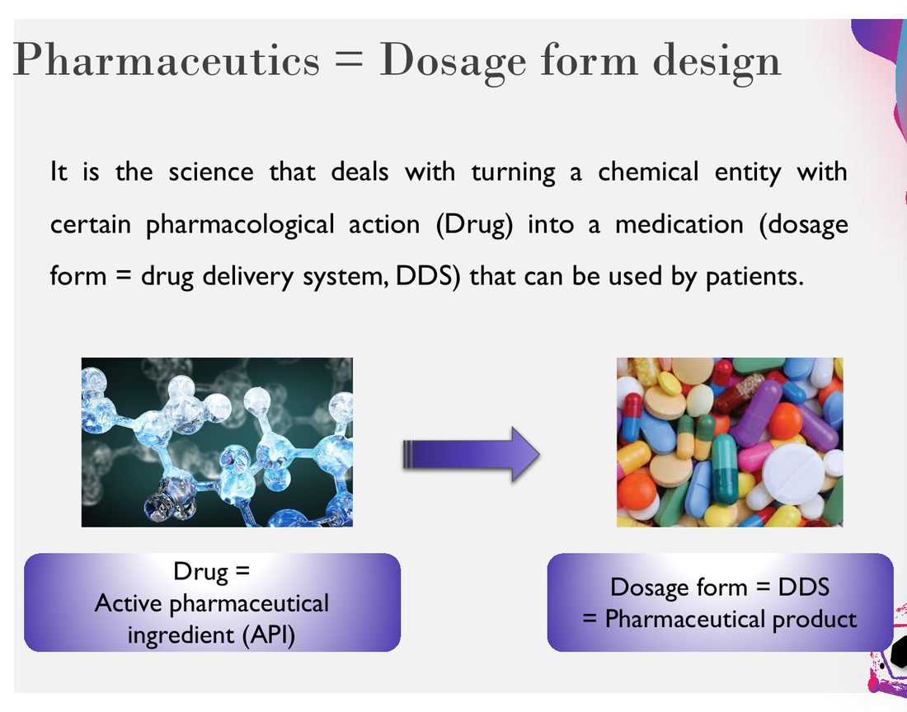
Pharmaceutics is about the “package” that delivers the drug, not the drug's action itself.
Question 2 of 55
The drug itself is called the:
A. Dosage form
B. Active pharmaceutical ingredient (API)
C. Excipient
D. Vehicle
B. Active pharmaceutical ingredient (API)
Drug = active pharmaceutical ingredient (API); the final product given to the patient is the dosage form (DDS, pharmaceutical product).
API = the part that does the medical job.
Question 3 of 55
“Dosage form”, “drug delivery system (DDS)” and “pharmaceutical product” mean:
A. Only injections
B. Three different stages of manufacture
C. The same thing
D. Only tablets
C. The same thing
Dosage form = DDS = pharmaceutical product.
All three names describe the final medication form.
Question 4 of 55
Which is NOT listed as a source of drugs (APIs)?
A. Plant (natural)
B. Biopharmaceutical
C. Minerals from seawater only
D. Chemical (synthetic)
C. Minerals from seawater only
The lecture lists three sources: chemical, biopharmaceutical and plant (natural).
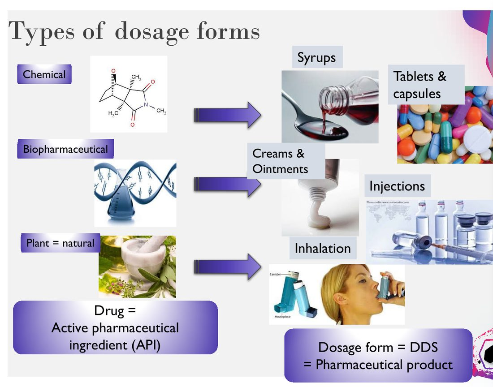
Chemical, bio, plant.
Question 5 of 55
Which is a reason we need a dosage form?
A. To give a precise, reproducible and accurate dose
B. To increase the drug's toxicity
C. To avoid using any excipients
D. To make the drug act everywhere in the body equally
A. To give a precise, reproducible and accurate dose
Reasons: precise, reproducible, accurate dose; drug targeting; palatability (taste); patient compliance.
A tiny amount of powder cannot be measured accurately by a patient — a tablet can.
Question 6 of 55
“Drug targeting” by a dosage form means:
A. Concentrating the drug at the target organ/tissue and avoiding toxicity elsewhere
B. Increasing the dose
C. Destroying the drug before it acts
D. Spreading the drug evenly everywhere
A. Concentrating the drug at the target organ/tissue and avoiding toxicity elsewhere
Drug targeting concentrates drug molecules at the target organ/tissue, avoiding toxicity elsewhere.
Hit the target, spare the rest of the body.
Question 7 of 55
Making a bitter drug taste acceptable (e.g. a flavoured syrup for children) improves:
A. Drug targeting
B. Palatability and patient compliance
C. Bacterial count
D. Sterility
B. Palatability and patient compliance
Palatability (taste) and patient compliance are reasons for designing a dosage form.
If it tastes better, patients actually take it.
Question 8 of 55
Which is NOT a listed characteristic of a dosage form?
A. It can preferentially deliver the drug to a specific part of the body
B. It should be stable
C. It can protect the drug from degradation
D. It must always be sterile
D. It must always be sterile
Characteristics: should be stable; can be sterile (e.g. injections, eye drops); can protect the drug from degradation; can have specific pH, consistency, bacterial count; can preferentially deliver the drug to a specific part of the body. Only some dosage forms must be sterile.
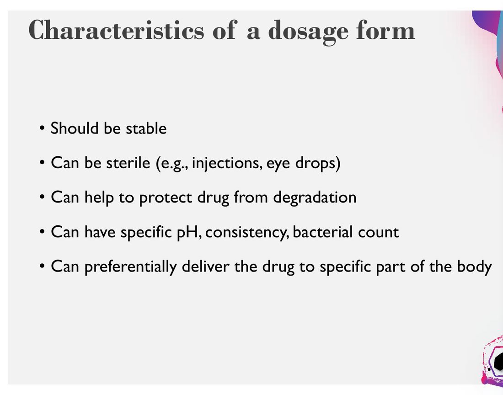
“Can be” sterile — not every dosage form is.
Question 9 of 55
Which dosage forms are given as examples of dosage forms that can be sterile?
A. Injections and eye drops
B. Syrups and lozenges
C. Creams and ointments
D. Tablets and capsules
A. Injections and eye drops
Can be sterile (e.g. injections, eye drops).
Anything going into the blood or the eye must be germ-free.
Question 10 of 55
A dosage form should be stable.
True
False
True
It is the first characteristic listed.
A product must keep its quality until it is used.
Question 11 of 55
A dosage form can help protect the drug from degradation.
True
False
True
Listed as a characteristic of a dosage form.
E.g. a coating protects the drug from stomach acid.
2. Types of Dosage Forms
9 questions
Question 12 of 55
Dosage forms classified by product type are:
A. Sterile and non-sterile
B. OTC and prescription
C. Liquid, semi-solid, solid and others
D. Oral, topical and parenteral only
C. Liquid, semi-solid, solid and others
According to product type: liquid, semi-solid, solid and others.
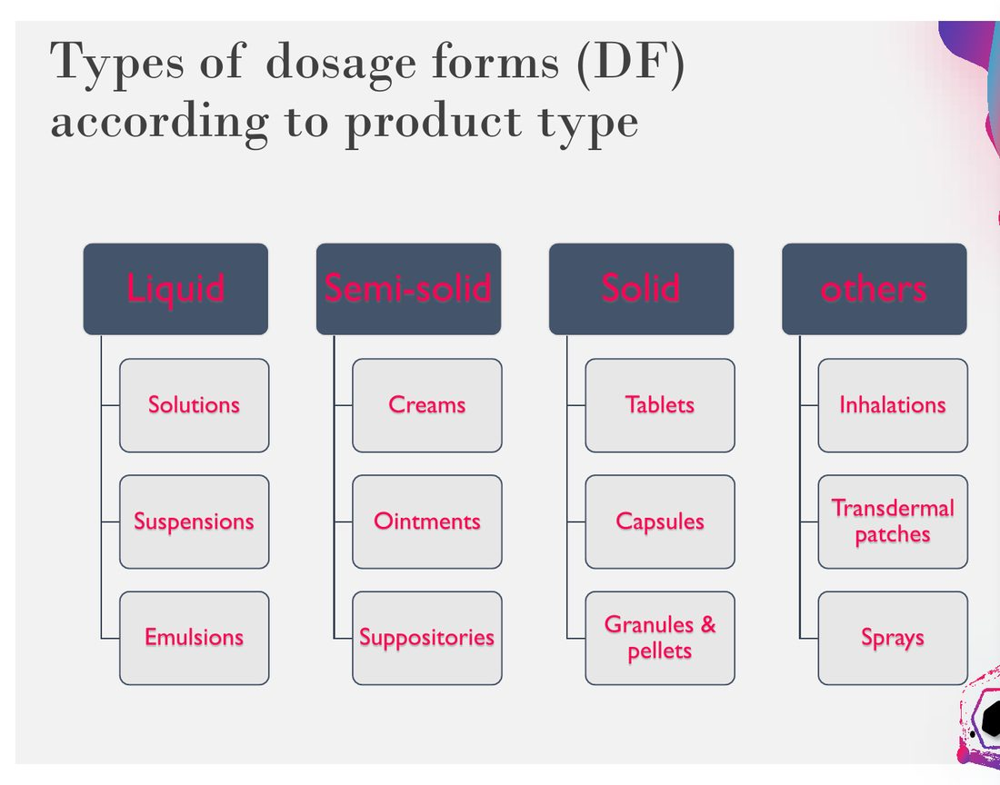
Classify by the physical state of the product.
Question 13 of 55
Which is a liquid dosage form?
A. Suppository
B. Suspension
C. Capsule
D. Ointment
B. Suspension
Liquid: solutions, suspensions, emulsions.
Solutions, suspensions, emulsions are all liquids.
Question 14 of 55
Which is a semi-solid dosage form?
A. Granules
B. Transdermal patch
C. Emulsion
D. Suppository
D. Suppository
Semi-solid: creams, ointments, suppositories.
Creams, ointments, suppositories.
Question 15 of 55
Which is a solid dosage form?
A. Creams
B. Inhalations
C. Granules & pellets
D. Solutions
C. Granules & pellets
Solid: tablets, capsules, granules & pellets.
Tablets, capsules, granules.
Question 16 of 55
Inhalations, transdermal patches and buccal products are classified as:
Which is NOT a factor in choosing the suitable dosage form?
A. Drug properties
B. Desired duration of action
C. The colour of the pharmacy
D. Intended route of administration
C. The colour of the pharmacy
The choice depends on: drug properties, intended use, intended route of administration, desired duration of action, disease condition.
Five factors: drug, use, route, duration, disease.
Question 33 of 55
An unconscious patient who cannot swallow needs an injection instead of a tablet. Which factor is this?
A. Disease condition
B. Excipient type
C. Price
D. Drug colour
A. Disease condition
The patient's disease condition affects the choice of dosage form (and route).
The patient's condition rules out swallowing.
Question 34 of 55
Excipients (additives) are:
A. The constituents of a drug product apart from the API
B. Impurities
C. The active drug
D. Only the packaging
A. The constituents of a drug product apart from the API
Excipients or additives are the constituents of a drug product apart from the API.
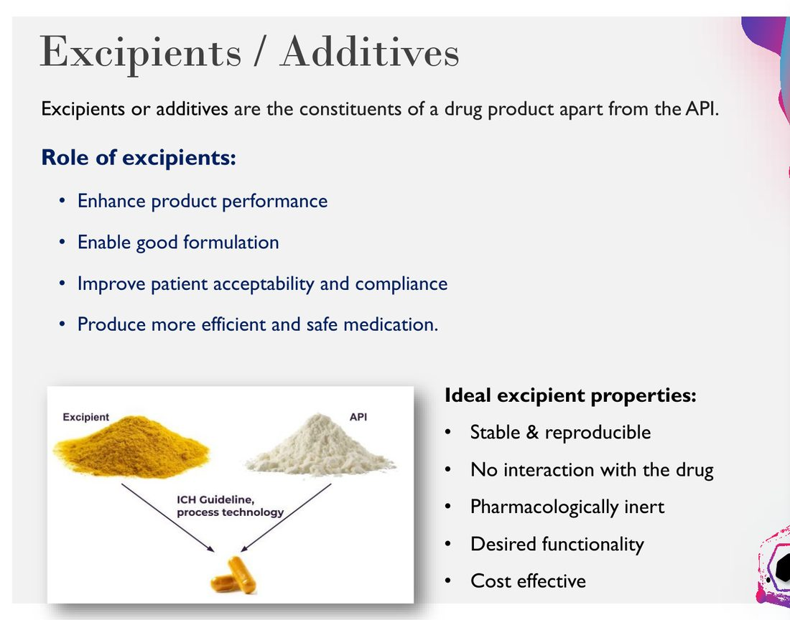
Everything in the tablet except the drug.
Question 35 of 55
Which is NOT a role of excipients?
A. Enhancing product performance
B. Producing the pharmacological effect of the drug
C. Enabling good formulation
D. Improving patient acceptability and compliance
B. Producing the pharmacological effect of the drug
Roles: enhance product performance; enable good formulation; improve patient acceptability and compliance; produce more efficient and safe medication. The effect comes from the API.
Excipients help the drug; they do not act like the drug.
Question 36 of 55
An ideal excipient should be:
A. Pharmacologically active
B. Reactive with the drug
C. Pharmacologically inert
D. As expensive as possible
C. Pharmacologically inert
Ideal properties: stable & reproducible; no interaction with the drug; pharmacologically inert; desired functionality; cost effective.
Inert = does nothing to the body by itself.
Question 37 of 55
An ideal excipient should interact with the drug.
True
False
False
An ideal excipient shows no interaction with the drug.
Interaction could damage the drug.
Question 38 of 55
Cost effectiveness is one of the ideal excipient properties.
True
False
True
Listed among the ideal excipient properties.
Cheap and effective is ideal.
Question 39 of 55
A flavour added to a children's syrup is an excipient.
True
False
True
It is not the API; it improves acceptability and compliance.
Anything other than the API = excipient.
5. Types of Pharmaceutical Products
8 questions
Question 40 of 55
Over-the-counter (OTC) products are drugs that are:
A. Sold in pharmacies and supermarkets without restriction
B. Sold only by a pharmacist without a prescription
C. Narcotics
D. Sold only with a prescription
A. Sold in pharmacies and supermarkets without restriction
OTC: sold in pharmacies and supermarkets without restriction, e.g. analgesics, antihistaminics, antacids, vitamins, diet products.
OTC = you can just pick it off the shelf.
Question 41 of 55
Which is an example of an OTC product?
A. Prescription antibiotics
B. Antacids
C. Narcotic analgesics
D. Controlled sedatives
B. Antacids
Examples of OTC: analgesics, antihistaminics, antacids, vitamins, diet products.
Simple everyday medicines.
Question 42 of 55
Prescription drug products are:
A. Sold by any shop
B. Never sold
C. Sold only in pharmacies and require a prescription from a physician
D. Sold in supermarkets
C. Sold only in pharmacies and require a prescription from a physician
Prescription products: sold only in pharmacies and require a prescription from a physician.
Need a doctor's paper.
Question 43 of 55
Behind-the-counter products (UK) are:
A. Sold only in pharmacies by a registered pharmacist without a prescription
B. Sold in supermarkets
C. Sold only with a special prescription
D. Narcotics
A. Sold only in pharmacies by a registered pharmacist without a prescription
Behind the counter: sold only in pharmacies by a registered pharmacist without a prescription; considered a category of OTC.
You ask the pharmacist — no prescription needed.
Question 44 of 55
Behind-the-counter products are considered a category of:
A. Prescription products
B. OTC products
C. Narcotic products
D. Biopharmaceuticals
B. OTC products
They are considered a category of OTC.
No prescription → OTC family.
Question 45 of 55
Narcotic drug products:
A. Are sold without restriction
B. Do not need any prescription
C. Are prescription drugs that require a special prescription from certified physicians
D. Are OTC
C. Are prescription drugs that require a special prescription from certified physicians
Narcotic drug products: prescription drugs that require a special prescription from certified physicians.
The strictest category.
Question 46 of 55
Prescription drugs can be sold in supermarkets.
True
False
False
They are sold only in pharmacies and require a prescription.
Only pharmacies + prescription.
Question 47 of 55
Arrange from least to most restricted:
A. Behind the counter → OTC → narcotic → prescription
B. Prescription → OTC → narcotic → behind the counter
C. OTC → behind the counter → prescription → narcotic
D. Narcotic → prescription → OTC → behind the counter
C. OTC → behind the counter → prescription → narcotic
OTC (no restriction) → behind the counter (pharmacist only) → prescription (physician) → narcotic (special prescription, certified physician), based on the definitions.
Each step adds a new requirement.
6. Pharmaceutical Sciences
8 questions
Question 48 of 55
Physical pharmacy is:
A. The study of drug absorption only
B. The study of plant drugs
C. The study of the physical and chemical processes important for formulating the dosage form
D. The study of drug sales
C. The study of the physical and chemical processes important for formulating the dosage form
Physical pharmacy: the study of the physical and chemical processes important for the formulation of the dosage form; it uses physical and chemical principles to predict solubility, stability, compatibility and biological action of drug products.
Physics + chemistry of making the dosage form.
Question 49 of 55
Which topics are examples studied in physical pharmacy?
A. Drug–receptor binding
B. Hospital management
C. Drug prices
D. Change of phases, rheology and surface tension
D. Change of phases, rheology and surface tension
The slide shows change of phases, rheology and surface tension.
Physical properties of materials.
Question 50 of 55
Biopharmaceutics investigates:
A. The synthesis of APIs
B. Only the rate of drug metabolism
C. Chemical, physical, physiological, pathological and formulation factors affecting drug absorption, distribution and elimination
D. Drug marketing
C. Chemical, physical, physiological, pathological and formulation factors affecting drug absorption, distribution and elimination
Biopharmaceutics: the field that investigates the chemical, physical, physiological, pathological and formulation factors that can affect drug absorption, distribution and elimination; these determine the in vivo performance of drug products.
Bio + pharmaceutics: how the product behaves inside the body.
Question 51 of 55
Pharmacokinetics studies:
A. The factors in formulation only
B. The colour of tablets
C. Drug–receptor interactions
D. The kinetics (rate and extent) of drug absorption, distribution, metabolism and excretion
D. The kinetics (rate and extent) of drug absorption, distribution, metabolism and excretion
Pharmacokinetics: studying the kinetics (rate and extent) of absorption, distribution, metabolism and excretion (ADME); these processes affect the time course of the drug profile in the body, which determines the time course of the pharmacological effect.
Kinetics = rate. Pharmacokinetics = how fast and how much (ADME).
Question 52 of 55
The factors studied in biopharmaceutics determine the in vivo performance of drug products.
True
False
True
All these factors are important in determining the in vivo performance of drug products.
In vivo = inside the living body.
Question 53 of 55
Which field predicts the solubility, stability and compatibility of drug products?
A. Pharmacokinetics
B. Narcotic control
C. Biopharmaceutics only
D. Physical pharmacy
D. Physical pharmacy
Physical pharmacy uses physical and chemical principles that help predict solubility, stability, compatibility and biological action.
Solubility and stability are physical/chemical properties.
Question 54 of 55
ADME stands for:
A. Action, dose, method, effect
B. Absorption, distribution, metabolism, excretion
C. Administration, delivery, mixing, excretion
D. Absorption, dosage, membrane, elimination
B. Absorption, distribution, metabolism, excretion
The four processes studied in pharmacokinetics.
What the body does to the drug.
Question 55 of 55
The time course of the drug in the body determines the time course of its pharmacological effect.
True
False
True
Stated in the pharmacokinetics slide.
Drug level over time → effect over time.
Lecture 2States of Matter
110 questions
1. States of Matter
13 questions
Question 1 of 110
The three states of matter shown in the lecture are:
A. Solid, liquid and plasma
B. Crystalline, amorphous and liquid
C. Ice, steam and vapor
D. Solid, liquid and gas
D. Solid, liquid and gas
The lecture shows the three states of matter: gas, liquid and solid (e.g. ice → water → water vapor).
Ice, water and steam are the same substance in its three states.
Question 2 of 110
In which state are the particles very close together and tightly packed in a regular pattern?
A. Gas
B. Liquid
C. Solid
D. Both liquid and gas equally
C. Solid
Arrangement of particles: solid = very close together, tightly packed in a regular pattern; liquid = close together, no regular arrangement; gas = far apart, no regular arrangement.
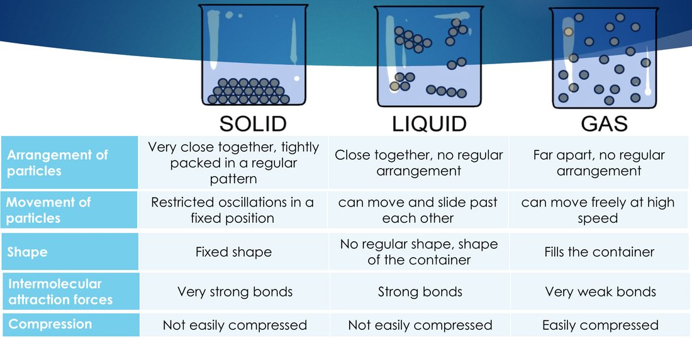
Think of eggs neatly packed in an egg tray.
Question 3 of 110
Particles of a liquid are:
A. Close together with no regular arrangement
B. Far apart with no regular arrangement
C. Fixed in position and only oscillate
D. Tightly packed in a regular pattern
A. Close together with no regular arrangement
Liquid: close together, no regular arrangement; they can move and slide past each other.
Liquid particles touch each other but are jumbled, like marbles in a bag.
Question 4 of 110
Movement of particles in a solid is best described as:
A. No movement of any kind
B. Restricted oscillations in a fixed position
C. Moving freely at high speed
D. Moving and sliding past each other
B. Restricted oscillations in a fixed position
Movement: solid = restricted oscillations in a fixed position; liquid = can move and slide past each other; gas = can move freely at high speed.
Solid particles only vibrate in place, like people standing in a crowded line.
Question 5 of 110
Which state fills the container?
A. Liquid and solid
B. Liquid
C. Solid
D. Gas
D. Gas
Shape: solid = fixed shape; liquid = no regular shape, takes the shape of the container; gas = fills the container.
Open a perfume bottle and the smell spreads through the whole room.
Question 6 of 110
A liquid has:
A. A shape that fills the whole container like a gas
B. No regular shape; it takes the shape of the container
C. No volume
D. A fixed shape
B. No regular shape; it takes the shape of the container
Liquid: no regular shape, shape of the container.
Water poured into a glass takes the shape of the glass.
Question 7 of 110
Intermolecular attraction forces in a gas are:
A. Strong
B. The same as in a solid
C. Very strong
D. Very weak
D. Very weak
Intermolecular attraction forces: solid = very strong bonds; liquid = strong bonds; gas = very weak bonds.
Weak attraction is why gas particles fly apart.
Question 8 of 110
Which state is easily compressed?
A. Liquid
B. Gas
C. Solid
D. No state can be compressed
B. Gas
Compression: solid = not easily compressed; liquid = not easily compressed; gas = easily compressed (its particles are far apart).
You can squeeze air in a syringe, but not water.
Question 9 of 110
Liquids are not easily compressed.
True
False
True
Both solids and liquids are “not easily compressed”; only gases are easily compressed.
Liquid particles are already close together, so there is no space to squeeze.
Question 10 of 110
Look at the three containers. Which one represents a gas?
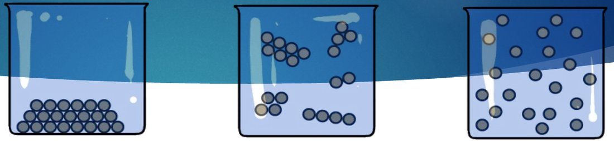
A. The left container: particles resting at the bottom, so they have the most freedom
B. The middle container: particles close together in small groups
C. The left container: particles tightly packed in a regular pattern
D. The right container: particles far apart with no regular arrangement
D. The right container: particles far apart with no regular arrangement
Gas = particles far apart, no regular arrangement, filling the container. The left beaker is the solid, the middle is the liquid.
The most spread-out particles belong to the gas.
Question 11 of 110
Arrange the states from the strongest to the weakest intermolecular attraction forces:
A. Solid → gas → liquid
B. Gas → liquid → solid
C. Liquid → solid → gas
D. Solid → liquid → gas
D. Solid → liquid → gas
Solid = very strong bonds, liquid = strong bonds, gas = very weak bonds.
Stronger attraction holds particles tighter, so the solid comes first.
Question 12 of 110
Why can a gas be easily compressed while a solid cannot?
A. Gas particles are fixed in position
B. Gas particles have very strong bonds
C. Gas particles are tightly packed in a regular pattern
D. Gas particles are far apart, so there is empty space to push them closer
D. Gas particles are far apart, so there is empty space to push them closer
Gas particles are far apart with very weak attraction forces → easily compressed. Solid particles are very close together and tightly packed → not easily compressed.
You can only squeeze something if there is space between its particles.
Question 13 of 110
Gas particles move freely at high speed.
True
False
True
Movement of gas particles: can move freely at high speed.
Gas particles zoom around in all directions.
2. The Gaseous State: Ideal Gas Law
13 questions
Question 14 of 110
The ideal gas law for n moles of gas is:
A. P = nRTV
B. PV = nRT
C. PV = RT/n
D. PT = nRV
B. PV = nRT
For n mole of gas: PV = nRT. This equation is known as the ideal gas law.
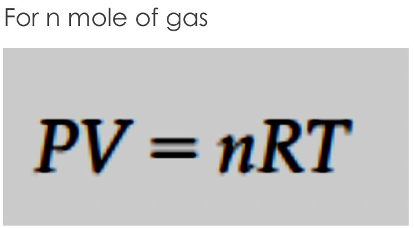
Pressure × volume equals moles × R × temperature.
Question 15 of 110
The ideal gas law links which three properties of a gas?
A. Melting point, boiling point and solubility
B. Viscosity, surface tension and pressure
C. Pressure, volume and temperature
D. Mass, colour and density
C. Pressure, volume and temperature
The lecture diagram links GAS with PRESSURE, TEMPERATURE and VOLUME (PV = nRT, for n moles of gas).
P, V and T are the three letters that describe a gas.
Question 16 of 110
The constant R in the ideal gas law is known as the:
A. Vapor pressure constant
B. Boltzmann constant
C. Henry’s constant
D. Molar gas constant
D. Molar gas constant
The constant R in the equation of state is also known as the molar gas constant.
R is the same number for every ideal gas.
Question 17 of 110
For an ideal gas, the value of R is:
A. 8.314 J mol K
B. 83.14 J K⁻¹ mol⁻¹
C. 8.314 J K⁻¹ mol⁻¹
D. 0.314 J K⁻¹ mol⁻¹
C. 8.314 J K⁻¹ mol⁻¹
For an ideal gas, R is calculated to be 8.314 J K⁻¹ mol⁻¹.
Remember “8.314” and the units joule per kelvin per mole.
Question 18 of 110
The two main pharmaceutical applications for the ideal gas law given in the lecture are:
A. Viscosity and surface tension
B. Liquefaction of gases and solubility of gases in liquids
C. Boiling and melting of solids
D. Polymorphism and crystal growth
B. Liquefaction of gases and solubility of gases in liquids
Two main pharmaceutical applications for the ideal gas law: 1. liquefaction of gases; 2. solubility of gases in liquids.
Both applications deal with gases: turning them into liquid, or dissolving them in liquid.
Question 19 of 110
In PV = nRT, the letter n stands for:
A. The pressure in atmospheres
B. The refractive index
C. The number of molecules per litre
D. The number of moles of gas
D. The number of moles of gas
The law is written “for n mole of gas”, so n = number of moles.
n tells you how much gas you have.
Question 20 of 110
Calculate the volume of 1 mol of an ideal gas at 273.15 K and 101 325 Pa. (R = 8.314 J K⁻¹ mol⁻¹)
A. 224 L
B. 0.0224 L
C. 22.4 L
D. 2.24 L
C. 22.4 L
PV = nRT → V = nRT / P V = (1 × 8.314 × 273.15) / 101 325 V = 0.02241 m³ = 22.4 L (1 m³ = 1000 L).
This is the famous 22.4 L of one mole of gas at 0 °C and 1 atm.
Question 21 of 110
2 mol of an ideal gas occupy 0.050 m³ at 300 K. What is the pressure? (R = 8.314 J K⁻¹ mol⁻¹)
A. ≈ 998 kPa
B. ≈ 8.98 kPa
C. ≈ 99.8 kPa (99 768 Pa)
D. ≈ 249 Pa
C. ≈ 99.8 kPa (99 768 Pa)
P = nRT / V P = (2 × 8.314 × 300) / 0.050 P = 4988.4 / 0.050 = 99 768 Pa ≈ 99.8 kPa.
Divide by the volume; do not multiply by it.
Question 22 of 110
How many moles of an ideal gas are in 0.010 m³ at 2.0 × 10⁵ Pa and 400 K? (R = 8.314 J K⁻¹ mol⁻¹)
A. 0.60 mol
B. 6.0 mol
C. 1.89 mol
D. 1.66 mol
A. 0.60 mol
n = PV / RT n = (2.0 × 10⁵ × 0.010) / (8.314 × 400) n = 2000 / 3325.6 = 0.60 mol.
Rearrange so n is alone: n = PV ÷ RT.
Question 23 of 110
0.5 mol of an ideal gas is kept in a 0.0124 m³ container at 25 °C. What is the pressure? (R = 8.314 J K⁻¹ mol⁻¹)
A. ≈ 15.4 Pa
B. ≈ 8.4 × 10³ Pa
C. ≈ 1.0 × 10⁵ Pa
D. ≈ 1.0 × 10³ Pa
C. ≈ 1.0 × 10⁵ Pa
First convert temperature to kelvin: T = 25 + 273.15 = 298.15 K. P = nRT / V = (0.5 × 8.314 × 298.15) / 0.0124 P = 99 952 Pa ≈ 1.0 × 10⁵ Pa. (Using 25 instead of 298.15 gives the wrong value 8.4 × 10³ Pa.)
Temperature in gas law problems must always be in kelvin.
Question 24 of 110
1 mol of an ideal gas at 101 325 Pa occupies 0.0245 m³. What is its temperature? (R = 8.314 J K⁻¹ mol⁻¹)
A. ≈ 25 K
B. ≈ 573 K
C. ≈ 2.99 × 10⁵ K
D. ≈ 299 K (about 25 °C)
D. ≈ 299 K (about 25 °C)
T = PV / nR T = (101 325 × 0.0245) / (1 × 8.314) T = 2482.5 / 8.314 = 298.6 K ≈ 25.4 °C. (Using 24.5 L instead of 0.0245 m³ gives an impossible 2.99 × 10⁵ K.)
Use SI units (Pa and m³) with R = 8.314.
Question 25 of 110
For a fixed amount of gas at constant temperature, if the pressure is doubled the volume will:
A. Stay the same
B. Be four times larger
C. Be halved
D. Be doubled
C. Be halved
PV = nRT; with n and T constant, PV is constant, so doubling P halves V.
Squeeze harder and the gas takes up less room.
Question 26 of 110
According to PV = nRT, heating a gas in a rigid closed container (fixed volume) will:
A. Decrease the number of moles
B. Increase its pressure
C. Decrease its pressure
D. Not change its pressure
B. Increase its pressure
With n and V constant, P = nRT / V, so P is directly proportional to T: higher T → higher P.
This is why aerosol cans warn: do not heat.
3. Liquefaction of Gases & Pharmaceutical Aerosols
13 questions
Question 27 of 110
Liquefaction of gases is:
A. The change of liquids into the gas state
B. The dissolving of a gas in a liquid
C. The change of a solid directly into a gas
D. The change of gases into the liquid state
D. The change of gases into the liquid state
Liquefaction of gases = change of gases into the liquid state.
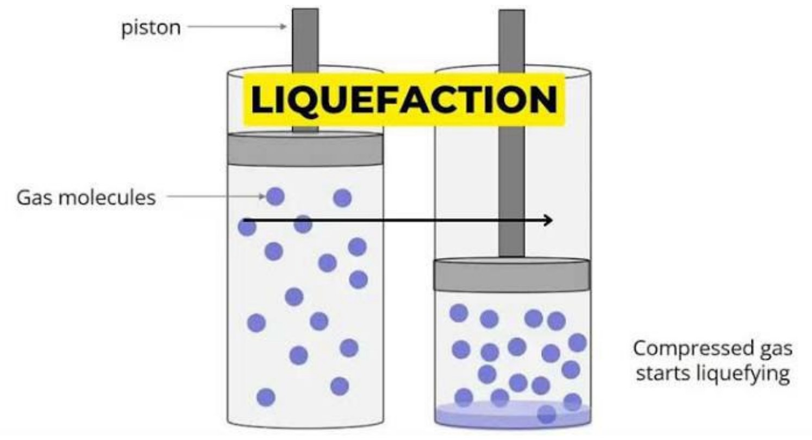
Liquefy = make it liquid.
Question 28 of 110
When a gas is cooled:
A. Its molecules move further apart
B. It gains kinetic energy and its molecules move faster
C. It loses some of its kinetic energy and the velocity of its molecules decreases
D. It cannot change state
C. It loses some of its kinetic energy and the velocity of its molecules decreases
When a gas is cooled, it loses some of its kinetic energy and the velocity of the molecules decreases.
Cold molecules are slow, tired molecules.
Question 29 of 110
If pressure is applied to a gas, the molecules:
A. Gain more kinetic energy and escape
B. Move further apart
C. Turn directly into a solid
D. Are brought closer and pass into the liquid state
D. Are brought closer and pass into the liquid state
If pressure is applied to the gas, the molecules are brought closer and pass into the liquid state.
Pushing the piston down crowds the molecules until they become a liquid.
Question 30 of 110
Gases can be liquefied:
A. Only in the presence of water
B. Under high pressure in a closed chamber
C. Under low pressure in an open container
D. Only by heating
B. Under high pressure in a closed chamber
Gases can be liquefied under high pressure in a closed chamber.
High pressure + closed container = liquid gas (like a gas cylinder).
Question 31 of 110
When the pressure on a liquefied gas is reduced:
A. The molecules expand and the liquid reverts to a gas
B. Nothing happens
C. The liquid becomes a solid
D. The liquid becomes more concentrated
A. The molecules expand and the liquid reverts to a gas
When the pressure is reduced, the molecules expand and the liquid reverts to a gas.
Release the pressure and the gas comes back.
Question 32 of 110
Liquefaction of gases is an irreversible change of state.
True
False
False
It is a reversible change of state: high pressure → liquid; reduced pressure → gas again.
It can go both ways, like water freezing and melting.
Question 33 of 110
Liquefaction of gases is the basic principle involved in the preparation of:
A. Pharmaceutical aerosols (e.g. inhalation aerosols, topical sprays)
B. Tablets
C. Suppositories
D. Ointments
A. Pharmaceutical aerosols (e.g. inhalation aerosols, topical sprays)
This is the basic principle involved in the preparation of pharmaceutical aerosols (e.g. inhalation aerosols, topical sprays).
Spray cans and inhalers hold a liquefied gas.
Question 34 of 110
A propellant is a material that is:
A. Solid inside the container and liquid outside
B. Liquid under the pressure inside the container but forms a gas under normal atmospheric conditions
C. The active drug in the aerosol
D. Always a gas both inside and outside the container
B. Liquid under the pressure inside the container but forms a gas under normal atmospheric conditions
Aerosols contain a drug dissolved or suspended in a propellant, a material that is liquid under the pressure conditions existing inside the container but that forms a gas under normal atmospheric conditions.
Inside the can it is liquid; once it escapes it turns into gas and carries the drug out.
Question 35 of 110
In an aerosol, the drug is:
A. Always present as a solid tablet
B. Kept in a separate compartment from the propellant
C. Chemically bonded to the container
D. Dissolved or suspended in the propellant
D. Dissolved or suspended in the propellant
Aerosols contain a drug dissolved or suspended in a propellant.
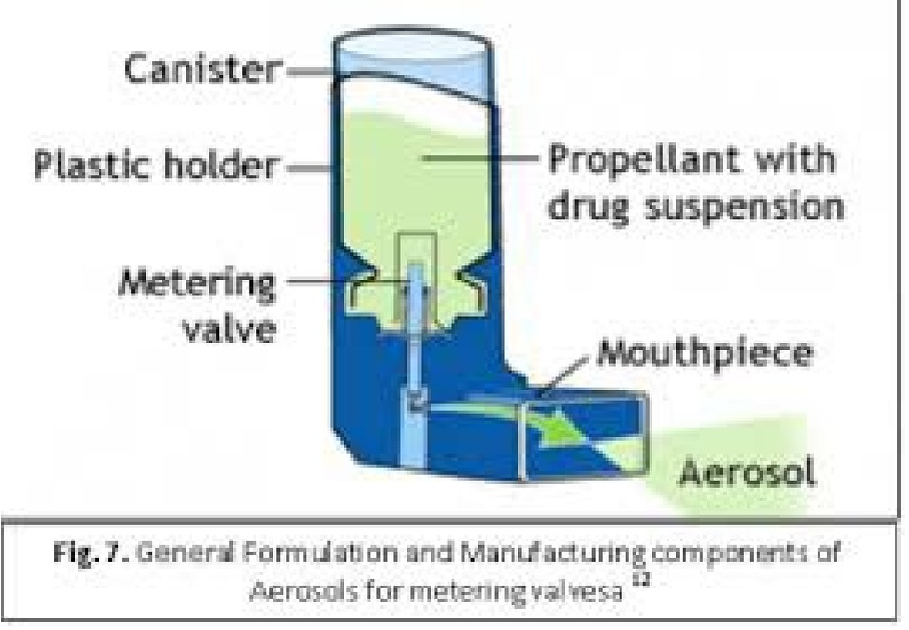
The propellant is the “vehicle” that carries the drug.
Question 36 of 110
Why is some of the drug–propellant mixture expelled when the valve of an aerosol is depressed?
A. Because the propellant freezes
B. Because the container is heated
C. Because of the excess pressure inside the container
D. Because the drug is heavier than air
C. Because of the excess pressure inside the container
The container is so designed that, by depressing a valve, some of the drug–propellant mixture is expelled owing to the excess pressure inside the container.
It works like opening a shaken soda bottle: the pressure pushes the contents out.
Question 37 of 110
A metered-dose inhaler for asthma works on the principle of:
A. Liquefaction of gases
B. Polymorphism
C. Boiling point elevation
D. Henry’s law only
A. Liquefaction of gases
Inhalation aerosols are prepared using the principle of liquefaction of gases (a liquefied propellant under pressure).
The inhaler canister contains liquefied propellant under pressure.
Question 38 of 110
Two ways to change a gas into a liquid, according to the lecture, are:
A. Heating the gas and reducing pressure
B. Adding water and stirring
C. Reducing pressure and opening the container
D. Cooling the gas and applying pressure
D. Cooling the gas and applying pressure
Cooling reduces kinetic energy and molecular velocity; applying pressure brings molecules closer → liquid state.
Slow them down and push them together.
Question 39 of 110
Once the propellant leaves the aerosol container into normal atmospheric conditions, it:
A. Stays a liquid
B. Becomes a solid
C. Dissolves in the drug
D. Forms a gas
D. Forms a gas
A propellant is liquid under the pressure inside the container but forms a gas under normal atmospheric conditions.
Outside the can the pressure drops, so the liquid turns back into gas.
4. Solubility of Gases in Liquids: Henry’s Law
9 questions
Question 40 of 110
The solubility of gases in a liquid can be expressed using:
A. Raoult’s law of melting
B. The ideal gas law only
C. Newton’s law of viscosity
D. Henry’s law
D. Henry’s law
The solubility of gases in a liquid can be expressed using Henry’s law.
Henry’s law = gas dissolving in liquid.
Question 41 of 110
Henry’s law states that at a constant temperature, the amount of a given gas that dissolves in a given type and volume of liquid is:
A. Inversely proportional to the partial pressure of that gas
B. Directly proportional to the partial pressure of that gas in equilibrium with that liquid
C. Independent of pressure
D. Directly proportional to the temperature
B. Directly proportional to the partial pressure of that gas in equilibrium with that liquid
Henry’s law: “at a constant temperature, the amount of a given gas that dissolves in a given type and volume of liquid is directly proportional to the partial pressure of that gas in equilibrium with that liquid.”
More gas pressure on top → more gas pushed into the liquid.
Question 42 of 110
Henry’s law applies at a constant:
A. Pressure
B. Volume of gas
C. Temperature
D. Number of gas molecules
C. Temperature
Henry’s law is stated “at a constant temperature”.
Temperature is kept fixed; only pressure is changed.
Question 43 of 110
In other words, as you increase the pressure above a liquid:
A. Gas molecules leave the liquid and move into the vapor phase
B. Gas molecules move from the vapor phase above the liquid surface into the liquid phase
C. Nothing happens to the dissolved gas
D. The liquid turns into a solid
B. Gas molecules move from the vapor phase above the liquid surface into the liquid phase
As you increase the pressure, the gas molecules move from the vapor phase above the liquid surface into the liquid phase.
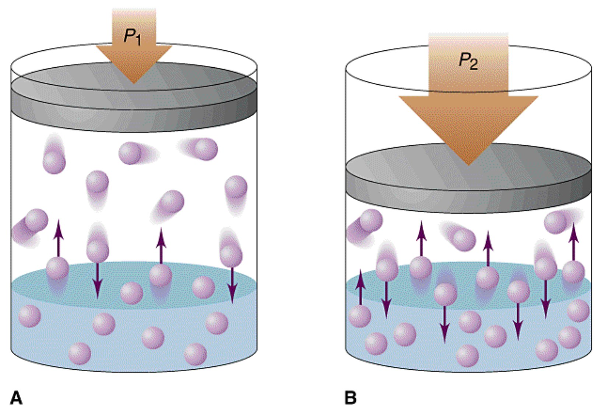
Pressure pushes the gas down into the liquid.
Question 44 of 110
The figure shows the same gas–liquid system at pressures P₁ and P₂ (P₂ > P₁). Which statement is correct?
A. Both containers have the same amount of dissolved gas
B. More gas is dissolved in container A (lower pressure P₁)
C. No gas dissolves at the higher pressure
D. More gas is dissolved in the liquid in container B (higher pressure P₂)
D. More gas is dissolved in the liquid in container B (higher pressure P₂)
According to Henry’s law, the amount of dissolved gas is directly proportional to the partial pressure of the gas. Higher pressure P₂ (container B) → more gas molecules move into the liquid phase.
The bigger arrow pushes more balls into the water.
Question 45 of 110
Which examples are given as applications of the solubility of gases in liquids?
A. Diamond and graphite
B. Cacao butter and chloramphenicol
C. HCl gas in water and carbonated beverages
D. Aerosol sprays and suppositories
C. HCl gas in water and carbonated beverages
Solubility of gases in liquids: applications — HCl gas in water and carbonated beverages.
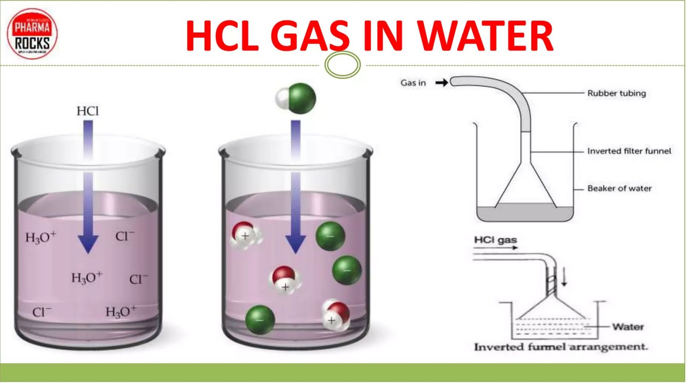
Fizzy drinks have CO₂ dissolved under pressure.
Question 46 of 110
When a bottle of a carbonated drink is opened, bubbles appear because:
A. More gas is forced into the liquid
B. The liquid turns into a solid
C. The pressure above the liquid falls, so less gas can stay dissolved
D. The temperature of the drink suddenly rises to the boiling point
C. The pressure above the liquid falls, so less gas can stay dissolved
By Henry’s law, dissolved gas is proportional to the partial pressure of the gas above the liquid. Opening the bottle lowers the pressure → gas leaves the liquid as bubbles.
Less pressure on top = the gas escapes.
Question 47 of 110
At constant temperature, 0.034 mol of CO₂ dissolves in 1 L of water when the CO₂ partial pressure is 1 atm. According to Henry’s law, how much dissolves at 2.5 atm?
Directly proportional: 2.5 times the pressure gives 2.5 times the gas.
Question 48 of 110
According to Henry’s law, doubling the partial pressure of a gas above a liquid (at constant temperature) will:
A. Halve the amount of gas dissolved
B. Double the amount of gas dissolved
C. Not change the amount dissolved
D. Make the gas insoluble
B. Double the amount of gas dissolved
The amount dissolved is directly proportional to the partial pressure, so 2 × pressure → 2 × amount dissolved.
Direct proportion: one goes up, the other goes up by the same factor.
5. The Liquid State: Vapor Pressure & Boiling Point
22 questions
Question 49 of 110
In a liquid, the kinetic energy is:
A. Zero for all molecules
B. Exactly the same for every molecule
C. Not distributed evenly among molecules; some have more energy and higher velocities than others
D. Highest for the slowest molecules
C. Not distributed evenly among molecules; some have more energy and higher velocities than others
The kinetic energy is not distributed evenly among molecules; some of the molecules have more energy and hence higher velocities than others at any moment.
Like students in a class: some always have more energy than others.
Question 50 of 110
When a liquid is placed in an evacuated container at constant temperature, which molecules break away from the surface and evaporate?
A. The molecules with the highest energies
B. No molecules can leave the liquid
C. The molecules with the lowest energies
D. Only the molecules at the bottom of the container
A. The molecules with the highest energies
The molecules with the highest energies break away from the surface of the liquid and pass into the gaseous state (evaporate), while other molecules return from the gaseous to the liquid state (condense).
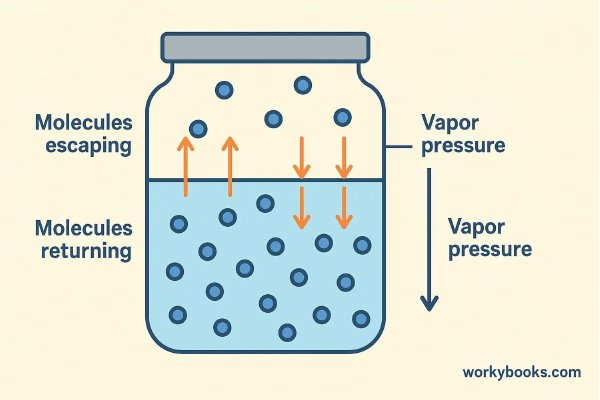
Only the fastest molecules have enough energy to jump out.
Question 51 of 110
Molecules returning from the gaseous state to the liquid state is called:
A. Liquefaction under pressure
B. Evaporation
C. Sublimation
D. Condensation
D. Condensation
Molecules breaking away = evaporate; molecules returning from the gaseous to the liquid state = condense.
Water drops on a cold glass are condensation.
Question 52 of 110
When the rate of condensation equals the rate of vaporization at a definite temperature:
A. The vapor becomes saturated and a dynamic equilibrium is established
B. Evaporation stops completely
C. The liquid starts to boil
D. All the liquid evaporates
A. The vapor becomes saturated and a dynamic equilibrium is established
When the rate of condensation equals the rate of vaporization at a definite temperature, the vapor becomes saturated and a dynamic equilibrium is established. This pressure is then known as the equilibrium vapor pressure.
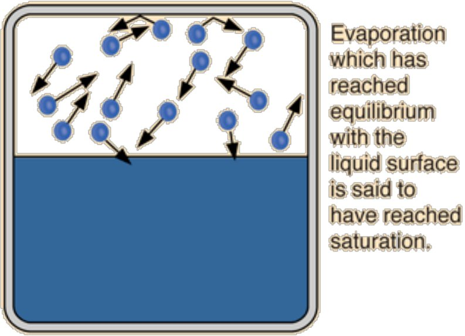
“Dynamic” means molecules still leave and return — but at equal rates.
Question 53 of 110
The vapor pressure of a liquid is:
A. The atmospheric pressure at sea level
B. The pressure inside the liquid at the bottom of the container
C. The pressure exerted by the vapor molecules over the surface of a liquid at equilibrium at a certain temperature
D. The pressure needed to compress a liquid
C. The pressure exerted by the vapor molecules over the surface of a liquid at equilibrium at a certain temperature
The pressure exerted by the vapor molecules over the surface of a liquid at equilibrium at a certain temperature is called the vapor pressure of the liquid.
It is the “push” of the escaped molecules above the liquid.
Question 54 of 110
At dynamic equilibrium, evaporation and condensation both stop.
True
False
False
At dynamic equilibrium both processes continue, but the rate of condensation equals the rate of vaporization.
It is like people entering and leaving a shop at the same rate — the number inside stays constant.
Question 55 of 110
How does temperature affect vapor pressure?
A. Vapor pressure does not depend on temperature
B. Vapor pressure increases with rising temperature
C. Vapor pressure decreases with rising temperature
D. Vapor pressure first rises then falls to zero
B. Vapor pressure increases with rising temperature
The vapor pressure increases with rising temperature.
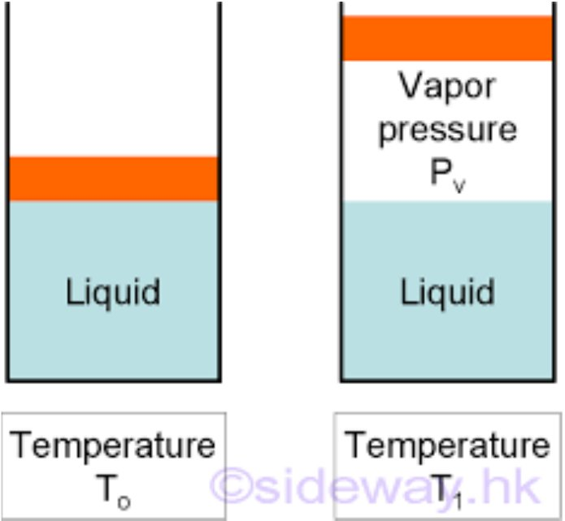
Hot water steams more than cold water.
Question 56 of 110
Why does vapor pressure increase as the temperature rises?
A. Fewer molecules can leave the liquid surface
B. The molecules become heavier
C. More molecules approach the velocity necessary to escape the liquid phase and pass into the gaseous state
D. The intermolecular forces become stronger
C. More molecules approach the velocity necessary to escape the liquid phase and pass into the gaseous state
As the temperature of the liquid is elevated, more molecules approach the velocity necessary to escape the liquid phase and pass into the gaseous state.
Heat gives more molecules enough speed to jump out.
Question 57 of 110
The stronger the intermolecular forces in a liquid:
A. The more easily it evaporates
B. The higher the vapor pressure and the more volatile the liquid
C. The lower the vapor pressure and the less volatile the liquid
D. The lower the boiling point
C. The lower the vapor pressure and the less volatile the liquid
The stronger the intermolecular forces, the lower the vapor pressure, the less volatile the liquid.
Molecules that hold each other tightly do not escape easily.
Question 58 of 110
Why does water have a relatively low vapor pressure?
A. Water molecules have no attraction to each other
B. It takes a lot of energy to break the hydrogen bonds so molecules can enter the gas phase
C. Water molecules are too large to evaporate
D. Water is a gas at room temperature
B. It takes a lot of energy to break the hydrogen bonds so molecules can enter the gas phase
Water has a relatively low vapor pressure because it takes a lot of energy to break the hydrogen bonds so that molecules enter the gas phase. (Note: the slide calls water “non-volatile”; water does evaporate, but it is much less volatile than acetone, alcohol or benzene.)
Hydrogen bonds act like hands holding the water molecules together.
Question 59 of 110
Which liquids are given as examples of volatile liquids with relatively high vapor pressures?
A. Cacao butter and naphthalene
B. Water and acetic acid
C. Glycerin and oils
D. Acetone, alcohol and benzene
D. Acetone, alcohol and benzene
Substances like acetone, alcohol and benzene, which have relatively high vapor pressures, are said to be volatile.
Nail-polish remover (acetone) disappears quickly from your skin — volatile.
Question 60 of 110
Using the graph, which liquid is the most volatile?
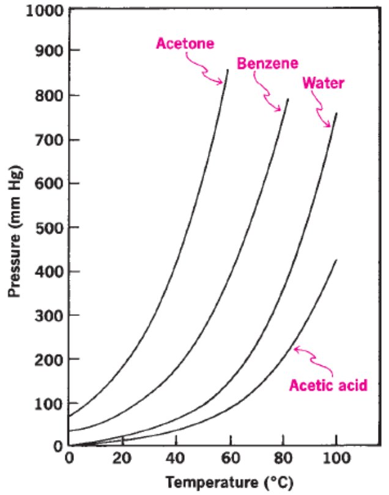
A. Acetone
B. Benzene
C. Acetic acid
D. Water
A. Acetone
At any temperature, acetone has the highest vapor pressure on the graph, so it is the most volatile. Order of vapor pressure: acetone > benzene > water > acetic acid.
The curve that rises earliest has the highest vapor pressure.
Question 61 of 110
Using the graph, the vapor pressure of water at 100 °C is approximately:
A. 420 mm Hg
B. 1000 mm Hg
C. 760 mm Hg
D. 100 mm Hg
C. 760 mm Hg
Reading the water curve at 100 °C gives ≈ 760 mm Hg, which equals normal atmospheric pressure — that is why water boils at 100 °C at sea level.
Water boils at 100 °C because its vapor pressure then equals 1 atm (760 mm Hg).
Question 62 of 110
A liquid boils when:
A. Its vapor pressure equals the external (atmospheric) pressure
B. Its vapor pressure is lower than atmospheric pressure
C. Its temperature reaches 100 °C, whatever the liquid
D. All its molecules have the same energy
A. Its vapor pressure equals the external (atmospheric) pressure
If a liquid is placed in an open container and heated until the vapor pressure equals the atmospheric pressure, the vapor forms bubbles that rise rapidly through the liquid and escape into the gaseous state.
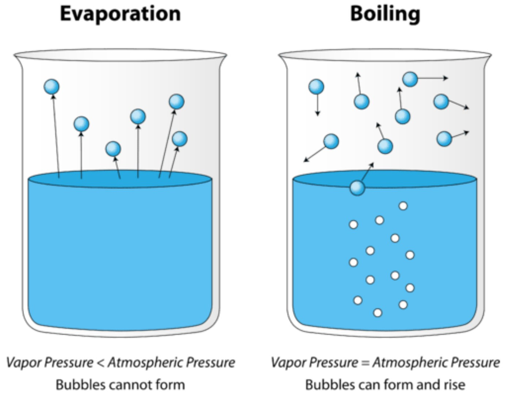
Bubbles can only survive inside the liquid when their pressure matches the air pressure.
Question 63 of 110
The boiling point is defined as:
A. The temperature at which the vapor pressure of the liquid equals the external or atmospheric pressure
B. The temperature at which evaporation starts
C. The pressure at which a gas turns into a liquid
D. The temperature at which the liquid and solid exist in equilibrium
A. The temperature at which the vapor pressure of the liquid equals the external or atmospheric pressure
The temperature at which the vapor pressure of the liquid equals the external or atmospheric pressure is known as the boiling point.
Boiling point: vapor pressure = air pressure.
Question 64 of 110
The boiling point of a compound provides a rough indication of:
A. The compressibility of the gas
B. The molecular shape only
C. The magnitude of the attractive forces
D. The colour of the compound
C. The magnitude of the attractive forces
The boiling point of a compound provides a rough indication of the magnitude of the attractive forces.
Stronger attraction → more heat needed → higher boiling point.
Question 65 of 110
During evaporation (below the boiling point), bubbles cannot form inside the liquid because:
A. The vapor pressure is less than the atmospheric pressure
B. The vapor pressure equals the atmospheric pressure
C. There are no molecules with high energy
D. The vapor pressure is greater than the atmospheric pressure
A. The vapor pressure is less than the atmospheric pressure
Evaporation: vapor pressure < atmospheric pressure → bubbles cannot form. Boiling: vapor pressure = atmospheric pressure → bubbles can form and rise.
Evaporation happens only at the surface; boiling happens throughout the liquid.
Question 66 of 110
Using the graph, which liquid has the lowest boiling point at 760 mm Hg?
A. Acetic acid
B. Acetone
C. Benzene
D. Water
B. Acetone
Boiling point = temperature at which vapor pressure reaches atmospheric pressure (760 mm Hg). Acetone reaches 760 mm Hg first (≈ 55–60 °C), then benzene (≈ 80 °C), then water (100 °C); acetic acid has not reached it by 100 °C.
The most volatile liquid boils at the lowest temperature.
Question 67 of 110
Using the graph, which liquid has the strongest intermolecular forces?
A. Water
B. Acetone
C. Benzene
D. Acetic acid
D. Acetic acid
The stronger the intermolecular forces, the lower the vapor pressure. Acetic acid has the lowest vapor pressure at every temperature on the graph (≈ 420 mm Hg at 100 °C).
Lowest curve = molecules holding on most tightly.
Question 68 of 110
Liquid X has a higher vapor pressure than liquid Y at 25 °C. Which statement is correct?
A. X has a higher boiling point than Y
B. X is more volatile and has weaker intermolecular forces than Y
C. Y evaporates faster than X
D. X has stronger intermolecular forces than Y
B. X is more volatile and has weaker intermolecular forces than Y
Water boils at a lower temperature on top of a high mountain. Why?
A. Atmospheric pressure is lower, so the vapor pressure reaches it at a lower temperature
B. Water molecules become heavier at high altitude
C. The hydrogen bonds become stronger at high altitude
D. Vapor pressure decreases with rising temperature
A. Atmospheric pressure is lower, so the vapor pressure reaches it at a lower temperature
Boiling point = temperature where vapor pressure equals external (atmospheric) pressure. Lower external pressure → this point is reached at a lower temperature.
Less air pushing down means bubbles form more easily.
Question 70 of 110
The boiling point of a liquid is fixed and does not depend on the external pressure.
True
False
False
The boiling point is the temperature at which the vapor pressure equals the external or atmospheric pressure, so changing the external pressure changes the boiling point.
Pressure cookers raise the boiling point by raising the pressure.
6. The Solid State: Crystalline & Amorphous Solids
18 questions
Question 71 of 110
Solids can be classified into two categories:
A. Ionic and liquid
B. Metastable and gaseous
C. Volatile and non-volatile
D. Crystalline and amorphous
D. Crystalline and amorphous
Solids can be classified into 2 categories: crystalline solids and amorphous solids.
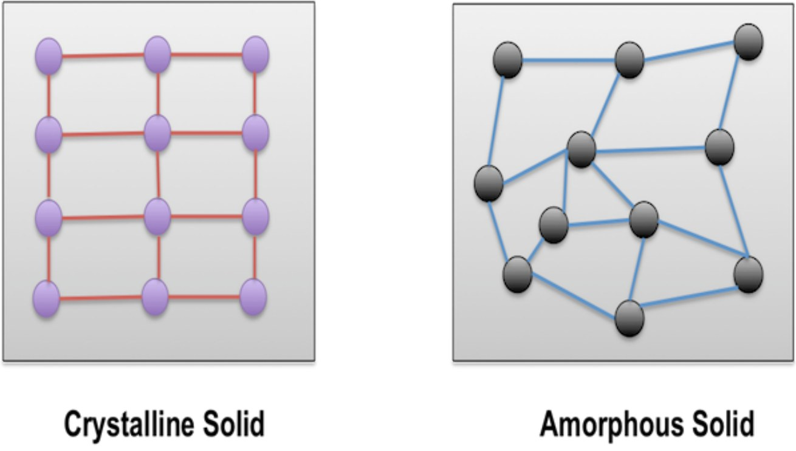
Ordered (crystalline) or disordered (amorphous).
Question 72 of 110
In crystalline solids, the structure units are:
A. Arranged in a regular, well-defined arrangement
B. Arranged randomly without order
C. Free to move like a gas
D. Always single atoms only
A. Arranged in a regular, well-defined arrangement
Crystalline solids: the structure units are arranged in a regular, well-defined arrangement; they have definite melting points.
Crystals are neat and repeat a pattern, like tiles on a floor.
Question 73 of 110
Amorphous solids:
A. Are always ionic crystals
B. Have a regular arrangement and a definite melting point
C. Have a higher melting point than any crystal
D. Do not have much order in their structures and do not have a definite melting point
D. Do not have much order in their structures and do not have a definite melting point
Amorphous solids do not have much order in their structures and do not have a definite melting point.
Glass softens gradually when heated instead of melting at one exact temperature.
Question 74 of 110
Crystalline solids have definite melting points.
True
False
True
Crystalline solids have definite melting points; amorphous solids do not.
An ice cube melts at exactly 0 °C.
Question 75 of 110
The figure shows two solids. The structure on the right represents:
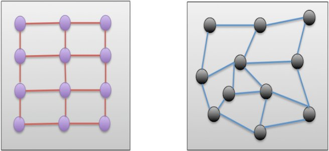
A. A gas
B. A liquid crystal of sodium chloride
C. A crystalline solid
D. An amorphous solid
D. An amorphous solid
The right structure has units with little order (irregular arrangement) → amorphous solid. The left has a regular, well-defined arrangement → crystalline solid.
Irregular network = amorphous.
Question 76 of 110
Quartz and glass are both SiO₂. Which statement is correct?
A. Both are crystalline
B. Both are amorphous
C. Quartz is crystalline SiO₂ and glass is amorphous SiO₂
D. Quartz is amorphous and glass is crystalline
C. Quartz is crystalline SiO₂ and glass is amorphous SiO₂
The slide shows crystalline SiO₂ (quartz) with a regular arrangement and amorphous SiO₂ (glass) with little order.
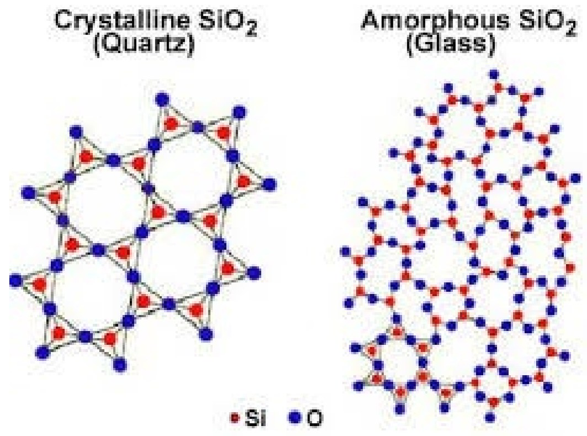
Same chemical, different arrangement.
Question 77 of 110
In crystalline solids, the forces holding the particles are so strong that the particles:
A. Move freely at high speed
B. Escape easily into the vapor phase
C. Are held in fixed positions and have very little freedom of movement
D. Slide past each other
C. Are held in fixed positions and have very little freedom of movement
These forces are so strong that particles in the solid are held in fixed positions and have very little freedom of movement. (The slide says the molecules are held by ionic or strong covalent bonding.)
Strong forces lock particles in place.
Question 78 of 110
The melting point of a pure crystalline solid is defined as:
A. The temperature at which the vapor pressure equals atmospheric pressure
B. The temperature at which the crystal changes to another polymorph
C. The temperature at which the pure liquid and solid exist in equilibrium
D. The temperature at which the solid becomes a gas
C. The temperature at which the pure liquid and solid exist in equilibrium
Melting point of a pure crystalline solid = the temperature at which the pure liquid and solid exist in equilibrium. It is also the freezing point of a liquid.
At 0 °C ice and water can exist together.
Question 79 of 110
The melting point of a crystalline solid is also the ______ of the liquid.
A. Boiling point
B. Freezing point
C. Condensation pressure
D. Vapor pressure
B. Freezing point
Melting point is also the freezing point of a liquid.
Water freezes and ice melts at the same temperature, 0 °C.
Question 80 of 110
Adding heat to melt a crystal is actually adding energy to:
A. Create new chemical bonds
B. Make the crystal more ordered
C. Increase the number of molecules
D. Overcome the strong intermolecular forces holding the crystalline solid together
D. Overcome the strong intermolecular forces holding the crystalline solid together
The addition of heat to melt the crystal is actually the addition of energy to overcome the strong intermolecular forces involved in holding the crystalline solid together. Stronger bonds → higher melting point.
Heat is the energy that breaks the “glue” between particles.
Question 81 of 110
Stronger bonds in a crystal result in a:
A. Lower boiling point
B. Higher vapor pressure
C. Higher melting point
D. Lower melting point
C. Higher melting point
Stronger bonds → higher melting point.
More energy is needed to break stronger bonds.
Question 82 of 110
Ionic crystals such as sodium chloride are held together by:
A. Hydrogen bonds only
B. Covalent bonds between carbon atoms
C. Electrostatic attraction between opposite charges
D. Weak forces between molecules only
C. Electrostatic attraction between opposite charges
Ions are held together by electrostatic attraction between opposite charges. Crystals are hard, brittle and have a high melting point, e.g. sodium chloride.
Na⁺ and Cl⁻ attract each other like magnets.
Question 83 of 110
Ionic crystals are:
A. Soft with a low melting point
B. Hard, brittle and have a high melting point
C. Amorphous with no definite melting point
D. Liquid at room temperature
B. Hard, brittle and have a high melting point
Ions: crystals are hard, brittle and have high melting point (e.g. sodium chloride).
Table salt is hard, shatters when crushed and melts only at a very high temperature.
Question 84 of 110
Graphite and diamond are examples of crystals whose units are:
A. Atoms (carbon atoms held by covalent bonds)
B. Ions
C. Molecules
D. Amorphous chains
A. Atoms (carbon atoms held by covalent bonds)
Atoms: carbon atoms are held together by covalent bonds; very strong crystals; e.g. graphite, diamond. (Note: graphite is soft and slippery because its layers are held together only by weak forces, even though the bonds within each layer are strong covalent bonds.)
Diamond is a giant network of carbon atoms joined by covalent bonds.
Question 85 of 110
Naphthalene is an example of a crystal whose units are:
A. Molecules — the crystals can be soft and have a lower melting point
B. Atoms — very strong crystals
C. Ions — hard and brittle
D. Atoms held by electrostatic attraction
A. Molecules — the crystals can be soft and have a lower melting point
Molecules: crystals can be soft and have lower MP, e.g. naphthalene. (Note: the slide on characteristics says crystal molecules are held by ionic or strong covalent bonding, but molecular crystals like naphthalene are held by weaker intermolecular forces — that is why they are soft with a lower melting point.)
Mothballs (naphthalene) are soft and slowly turn to vapor.
Question 86 of 110
Match the crystal type with its example:
A. Ions – graphite; atoms – naphthalene; molecules – diamond
Salt = ions, carbon = atoms, mothballs = molecules.
Question 87 of 110
A solid softens gradually over a wide temperature range instead of melting at one sharp temperature. It is most likely:
A. Ionic like sodium chloride
B. Amorphous
C. A pure crystalline solid
D. Crystalline
B. Amorphous
Amorphous solids do not have a definite melting point; crystalline solids have definite melting points.
No sharp melting point → no regular order → amorphous.
Question 88 of 110
Which crystal type is expected to have the lowest melting point?
A. An atomic crystal such as diamond
B. An ionic crystal such as sodium chloride
C. All have the same melting point
D. A molecular crystal such as naphthalene
D. A molecular crystal such as naphthalene
Molecular crystals can be soft and have lower MP; ionic crystals have high MP; atomic (covalent) crystals are very strong.
Weaker forces between particles → lower melting point.
7. Polymorphism
22 questions
Question 89 of 110
A substance that can exist in more than one crystalline form is said to be:
A. Amorphous
B. Polymorphic
C. Volatile
D. Isotonic
B. Polymorphic
Some substances, such as carbon and sulfur, may exist in more than one crystalline form and are said to be polymorphic.
Poly = many, morph = form.
Question 90 of 110
Which substances are given as examples that may exist in more than one crystalline form?
A. Oxygen and nitrogen
B. Acetone and benzene
C. Carbon and sulfur
D. Sodium chloride and water
C. Carbon and sulfur
Some substances, such as carbon and sulfur, may exist in more than one crystalline form.
Carbon can be diamond or graphite.
Question 91 of 110
When polymorphism occurs:
A. The chemical formula of the substance changes
B. The substance becomes a gas
C. The molecules arrange themselves in different ways in the crystal
D. The substance becomes amorphous
C. The molecules arrange themselves in different ways in the crystal
When polymorphism occurs, the molecules arrange themselves in different ways in the crystal.
Same bricks, different building.
Question 92 of 110
The polymorphism slide shows three crystal forms of the drug tolfenamic acid (form I, form II and form IX). Which statement matches the figure?
A. All three forms are equally stable
B. Form I is the stable form; forms II and IX are metastable
C. Form IX is the stable form; forms I and II are metastable
D. The three forms are different chemical compounds
B. Form I is the stable form; forms II and IX are metastable
The figure labels tolfenamic acid form I as stable and forms II and IX as metastable. All three have the same molecule; only the arrangement in the crystal differs (that is polymorphism).
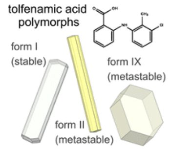
Same drug molecule, three different crystal shapes with different stabilities.
Question 93 of 110
The most common example of polymorphism is the contrast between:
A. Diamond and graphite
B. Ice and water
C. Quartz and glass
D. Sodium chloride and naphthalene
A. Diamond and graphite
The most common example of polymorphism is the contrast between diamond and graphite, both of which are composed of crystalline carbon.
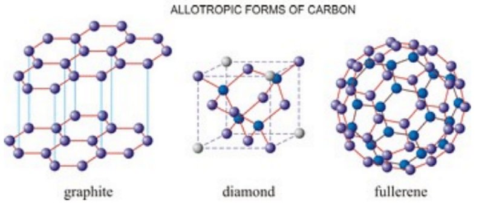
Both are pure carbon, yet one is a gem and one is pencil lead.
Question 94 of 110
The lecture figure “Allotropic forms of carbon” shows which three crystalline forms of carbon?
A. Graphite, diamond and quartz
B. Diamond, glass and naphthalene
C. Graphite, diamond and fullerene
D. Graphite, sulfur and sodium chloride
C. Graphite, diamond and fullerene
The figure “Allotropic forms of carbon” shows graphite, diamond and fullerene — all made only of carbon atoms arranged in different ways.
One element, several different crystal structures.
Question 95 of 110
A diamond is formed from elemental carbon under:
A. Normal atmospheric conditions
B. Vacuum at room temperature
C. High pressure and temperature
D. Low pressure and low temperature
C. High pressure and temperature
High pressure and temperature lead to the formation of a diamond from elemental carbon.
Diamonds form deep in the Earth where it is very hot and the pressure is huge.
Question 96 of 110
Compared with graphite, diamond is:
A. Not made of carbon
B. The more stable form of carbon
C. An amorphous form of carbon
D. A less stable (metastable) crystalline form of carbon
D. A less stable (metastable) crystalline form of carbon
A diamond is a less stable (metastable) crystalline form of carbon than is graphite.
Surprisingly, graphite is the more stable form.
Question 97 of 110
At ambient temperature and pressure, over a very long time diamond:
A. Quickly melts into a liquid
B. Very slowly converts into the more stable graphite polymorph
C. Changes into sulfur
D. Stays unchanged forever
B. Very slowly converts into the more stable graphite polymorph
The imperfections in diamonds continue to occur with time very slowly at the ambient temperature and pressure, converting the diamond into the more stable graphite polymorph.
Metastable forms slowly change to the stable form.
Question 98 of 110
Theobroma oil (cacao butter) is:
A. An amorphous synthetic polymer
B. An ionic crystal
C. A polymorphous natural fat
D. A volatile liquid
C. A polymorphous natural fat
Theobroma oil, or cacao butter, is a polymorphous natural fat.
Cocoa butter can crystallise in several different forms.
Question 99 of 110
Theobroma oil is capable of existing in how many polymorphic forms?
A. 4 – 6
B. 2
C. 10 – 12
D. Only 1
A. 4 – 6
Theobroma oil is capable of existing in 4 – 6 polymorphic forms.
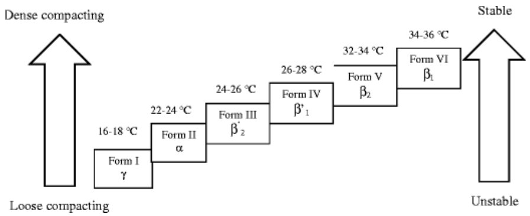
The diagram shows six forms, Form I to Form VI.
Question 100 of 110
During preparation of cacao butter suppositories, melting at a temperature above 35 °C might:
A. Destroy the nuclei of the stable beta polymorph
B. Convert the fat into graphite
C. Have no effect on the polymorphs
D. Make the suppository more stable
A. Destroy the nuclei of the stable beta polymorph
Polymorphic changes dictate special precautions during preparation of cacao butter suppositories. Melting at temperature > 35 °C might destroy the nuclei of the beta stable polymorph.
Overheating destroys the “seeds” of the good stable crystals.
Question 101 of 110
According to the diagram, Form III (β′₂) of cacao butter melts at about:
A. 16–18 °C
B. 24–26 °C
C. 32–34 °C
D. 34–36 °C
B. 24–26 °C
From the diagram: Form I (γ) 16–18 °C, Form II (α) 22–24 °C, Form III (β′₂) 24–26 °C, Form IV (β′₁) 26–28 °C, Form V (β₂) 32–34 °C, Form VI (β₁) 34–36 °C.
Find Form III on the staircase and read the temperature above it.
Question 102 of 110
In the cacao butter diagram, the form with the highest melting point (34–36 °C) is the:
A. Most stable form (Form VI, β₁)
B. α form (Form II)
C. Form with the loosest compacting
D. Most unstable form (Form I, γ)
A. Most stable form (Form VI, β₁)
The forms are arranged from unstable/loose compacting (Form I, γ, 16–18 °C) up to stable/dense compacting (Form VI, β₁, 34–36 °C).
Top of the staircase = most stable and most densely packed.
Question 103 of 110
Why are polymorphic changes very important in pharmaceutical processes?
A. Polymorphs always have the same stability
B. Polymorphs have different chemical formulas
C. Polymorphs cannot change from one form to another
D. Polymorphs show different melting points and solubilities even though they are chemically identical
D. Polymorphs show different melting points and solubilities even though they are chemically identical
Polymorphs exhibit different melting points and solubilities even though they are chemically identical. They have different stabilities and may, at a certain temperature or after some time, convert from the metastable form to the stable form.
Same molecule, different packing → different behaviour.
Question 104 of 110
Polymorphs may, at a certain temperature or after some time, convert:
A. From a crystal into a gas
B. From the stable form to the metastable form only
C. From one chemical compound into another
D. From the metastable form to the stable form
D. From the metastable form to the stable form
Polymorphs have different stabilities and may at certain temperature or after some time convert from the metastable form to the stable form.
Things naturally move toward the more stable state, like diamond → graphite.
Question 105 of 110
Which is listed as a formulation problem caused by polymorphism?
A. Increased compressibility of gases
B. Lower vapor pressure of water
C. Crystal growth in creams, suspensions and injections
D. Liquefaction of propellants
C. Crystal growth in creams, suspensions and injections
Formulation problems: crystal growth in creams, suspensions, injections; differences in solubility and bioavailability (e.g. chloramphenicol).
Growing crystals can make a cream gritty or block an injection needle.
Question 106 of 110
Chloramphenicol is given as an example of a polymorphism problem related to:
A. Liquefaction of gases
B. Differences in solubility and bioavailability
C. Boiling point of solvents
D. Crystal growth in aerosols
B. Differences in solubility and bioavailability
Differences in solubility and bioavailability (e.g. chloramphenicol).
Different polymorphs of the same drug may dissolve and get absorbed differently.
Question 107 of 110
Polymorphs of a drug are chemically different substances.
True
False
False
Polymorphs are chemically identical; they differ only in how the molecules are arranged in the crystal, so they show different melting points, solubilities and stabilities.
Same chemical, different crystal packing.
Question 108 of 110
A drug suspension is made with a metastable polymorph. During storage, the most likely change is:
A. Conversion to the stable form, possibly with crystal growth and changed solubility
B. No change can ever happen
C. Conversion into an amorphous gas
D. The drug becomes chemically different
A. Conversion to the stable form, possibly with crystal growth and changed solubility
Polymorphs may convert from the metastable to the stable form at a certain temperature or after some time; formulation problems include crystal growth in suspensions and differences in solubility and bioavailability.
Metastable means “stable for now” — it will change eventually.
Question 109 of 110
Which pair shows two polymorphs of the same element?
A. Diamond and graphite
B. Water and ice
C. Quartz and acetone
D. Sodium chloride and naphthalene
A. Diamond and graphite
Diamond and graphite are both crystalline carbon — the most common example of polymorphism.
Polymorphs = same substance, different crystal forms.
Question 110 of 110
Why should cacao butter be melted gently (not above about 35 °C) when making suppositories?
A. To evaporate the cacao butter
B. To keep the nuclei of the stable β form so the suppository solidifies in the stable form
C. To convert all forms into the unstable γ form deliberately
D. To increase the vapor pressure of the fat
B. To keep the nuclei of the stable β form so the suppository solidifies in the stable form
Melting at temperature > 35 °C might destroy the nuclei of the beta stable polymorph; the stable β forms (Form V, β₂, and Form VI, β₁) melt at about 32–36 °C.
Keep the good crystal seeds alive so the right form grows back.
Lecture 3Solubility I
141 questions
1. Solutions & Solubility
19 questions
Question 1 of 141
A true solution is best described as:
A. A two-phase system in which solid particles are suspended in a liquid
B. A mixture in which droplets of oil are dispersed in water
C. A homogeneous, single-phase system in which one or more solutes are dispersed molecularly or ionically throughout a solvent
D. A heterogeneous system that separates on standing
C. A homogeneous, single-phase system in which one or more solutes are dispersed molecularly or ionically throughout a solvent
A true solution: a homogenous, single-phase system (monophase) in which one or more solutes are dispersed molecularly or ionically throughout a solvent.
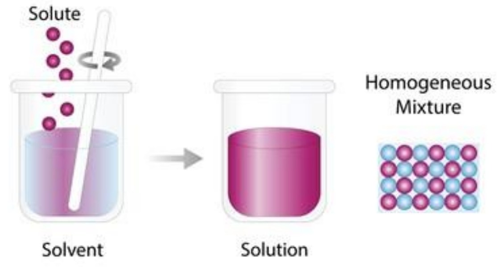
In a true solution you cannot see separate particles; it looks like one uniform phase.
Question 2 of 141
The substance that is dissolved in a solvent to form a solution is the:
A. Solute
B. Vehicle
C. Precipitate
D. Solvent
A. Solute
Solute = the substance that is dissolved in a solvent to form a solution.
Sugar in tea is the solute; the tea water is the solvent.
Question 3 of 141
The solvent is the substance that:
A. Crystallises out of the solution
B. Acts as the medium in which the other substance dissolves (usually the greater amount)
C. Is always a solid
D. Is always present in the smaller amount
B. Acts as the medium in which the other substance dissolves (usually the greater amount)
Solvent = the substance acting as the medium in which the other substance dissolves (usually the greater amount).
The solvent is the “host” liquid that receives the solute.
Question 4 of 141
A drug dissolved in an aqueous vehicle is an example of which type of solution most relevant in pharmacy?
A. Liquid in liquid
B. Solid in liquid
C. Gas in liquid
D. Solid in solid
B. Solid in liquid
Most relevant in pharmacy: solid in liquid (drug in an aqueous vehicle); liquid in liquid (water–ethanol or water–propylene glycol mixtures); gas in liquid (dissolved gases in pharmaceutical or biological fluids).
A solid drug powder dissolving in water = solid in liquid.
Question 5 of 141
A water–propylene glycol mixture is an example of:
A. Solid in solid
B. Gas in liquid
C. Liquid in liquid
D. Solid in liquid
C. Liquid in liquid
Liquid in liquid: water–ethanol or water–propylene glycol mixtures.
Both water and propylene glycol are liquids.
Question 6 of 141
Dissolved gases in pharmaceutical or biological fluids are an example of which type of solution?
A. Liquid in liquid
B. Solid in liquid
C. Gas in liquid
D. Gas in solid
C. Gas in liquid
Most relevant in pharmacy: gas in liquid = dissolved gases in pharmaceutical or biological fluids.
Oxygen dissolved in blood is a gas in a liquid.
Question 7 of 141
Solubility of a substance is defined as:
A. The maximum amount of a substance that can dissolve and remain dissolved in a specified solvent under defined conditions at equilibrium
B. The amount of solvent needed to wet a powder
C. Any amount of a substance that dissolves in water at room temperature
D. The speed at which a substance dissolves
A. The maximum amount of a substance that can dissolve and remain dissolved in a specified solvent under defined conditions at equilibrium
Solubility of a substance: the maximum amount of a substance that can dissolve and remain dissolved in a specified solvent under defined conditions at equilibrium.
Solubility is the “full capacity” of the solvent for that solute.
Question 8 of 141
Equilibrium in a saturated solution is the state in which:
A. The solute has fully reacted with the solvent
B. Dissolving stops completely
C. The rate of dissolving equals the rate of crystallisation, so there is no net change in the amount dissolved
D. Crystallisation stops completely
C. The rate of dissolving equals the rate of crystallisation, so there is no net change in the amount dissolved
Equilibrium: the state when the rate of dissolving equals the rate of crystallisation → no net change occurs in the amount dissolved (lowest energy state), e.g. CaF₂(s) ⇌ Ca²⁺(aq) + 2F⁻(aq).
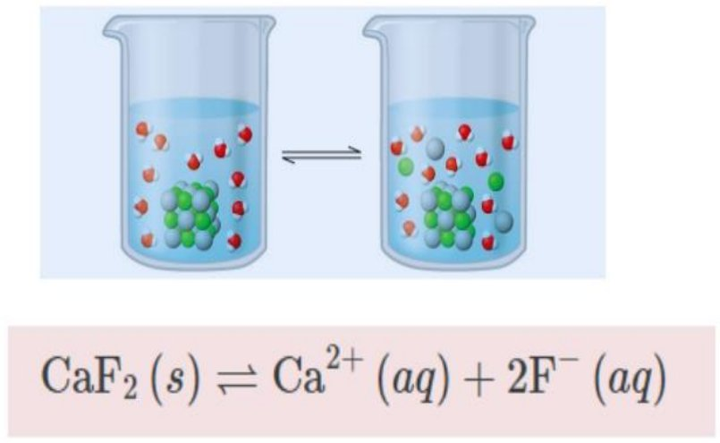
Molecules keep leaving and returning to the solid at the same rate, so the amount dissolved stays constant.
Question 9 of 141
At equilibrium both dissolving and crystallisation have stopped.
True
False
False
Equilibrium is dynamic: dissolving and crystallisation continue at equal rates, so there is no net change.
Like people entering and leaving a room at the same rate — the room count stays the same, but movement continues.
Question 10 of 141
Which statement correctly distinguishes solubility from dissolution rate?
A. Solubility is a kinetic process; dissolution rate is a thermodynamic property
B. Solubility is a thermodynamic property (capacity); dissolution rate is a kinetic process (speed)
C. Both describe the maximum amount dissolved
D. Both describe how quickly a solute enters solution
B. Solubility is a thermodynamic property (capacity); dissolution rate is a kinetic process (speed)
Solubility (capacity): maximum amount dissolved at equilibrium; a thermodynamic property; must be reported with conditions (temperature, pH, solvent and solid form). Dissolution rate (speed): how quickly solute enters solution; a kinetic process; influenced by surface area, agitation and diffusion conditions.
Solubility = how much; dissolution rate = how fast.
Question 11 of 141
Which factor is listed as influencing the dissolution rate?
A. The mole fraction of solvent
B. The pKa only
C. The USP descriptive term
D. Agitation
D. Agitation
Dissolution rate is influenced by surface area, agitation and diffusion conditions.
Stirring speeds up dissolving but does not raise the maximum amount that can dissolve.
Question 12 of 141
When reporting a solubility value, which conditions must be stated?
A. The stirring speed and particle size only
B. Only the volume of the container
C. Only the colour of the solute
D. Temperature, pH, solvent and solid form
D. Temperature, pH, solvent and solid form
Solubility must be reported with conditions: temperature, pH, solvent and solid form.
A solubility number is meaningless without saying “in what, at what temperature and pH”.
Question 13 of 141
Higher equilibrium solubility often increases the driving force for dissolution, so the terms solubility and dissolution rate are interchangeable.
True
False
False
Higher equilibrium solubility often increases the driving force for dissolution, but the two terms are not interchangeable.
They are related, but one is capacity and the other is speed.
Question 14 of 141
“A drug generally must be in solution before it can cross biological membranes.” This explains why solubility matters for:
A. Bioavailability
B. Administration
C. Stability
D. Formulation feasibility
A. Bioavailability
Why solubility matters: formulation feasibility (solution vs suspension, dose volume, excipient needs); stability (dissolved drug may degrade faster; precipitation can change product performance); administration (reconstitution, IV compatibility, precipitation risk); bioavailability (drug must be in solution to cross membranes); clinical performance (onset, food or pH effects, safe administration).
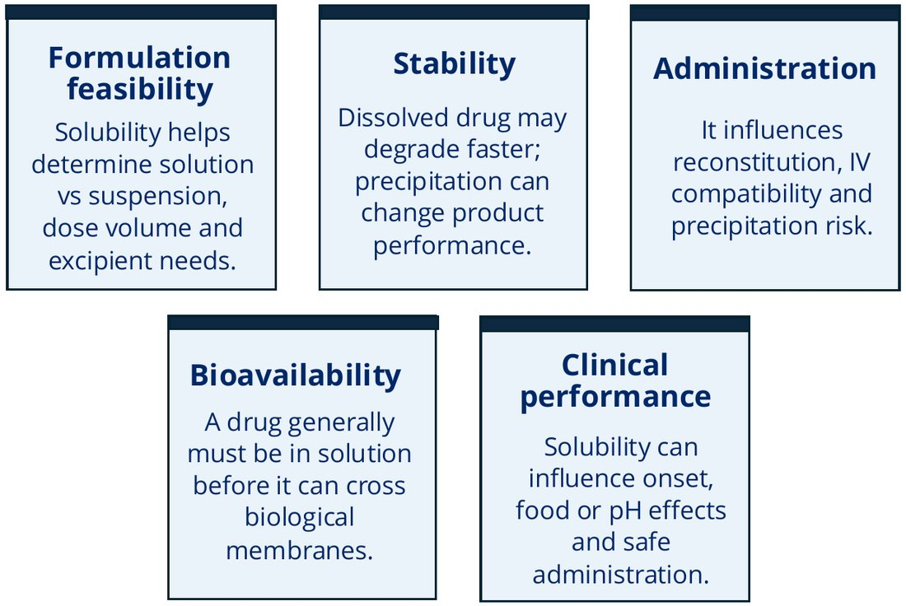
Undissolved drug cannot be absorbed — it must dissolve first.
Question 15 of 141
Solubility helps decide whether a product should be a solution or a suspension, and determines dose volume and excipient needs. This is the role of solubility in:
A. Clinical performance
B. Stability
C. Bioavailability
D. Formulation feasibility
D. Formulation feasibility
Formulation feasibility: solubility helps determine solution vs suspension, dose volume and excipient needs.
If the dose will not dissolve in a reasonable volume, you may need a suspension.
Question 16 of 141
Which statement about solubility and stability is given in the lecture?
A. Solubility has no relation to stability
B. Precipitation always improves product performance
C. Dissolved drug may degrade faster, and precipitation can change product performance
D. Dissolved drug never degrades
C. Dissolved drug may degrade faster, and precipitation can change product performance
Stability: dissolved drug may degrade faster; precipitation can change product performance.
Molecules in solution are more exposed to reactions such as hydrolysis.
Question 17 of 141
Reconstitution, IV compatibility and precipitation risk are linked to solubility under:
A. Formulation feasibility
B. Molecular structure
C. Bioavailability
D. Administration
D. Administration
Administration: solubility influences reconstitution, IV compatibility and precipitation risk.
A drug that precipitates when mixed with an IV fluid is dangerous to inject.
Question 18 of 141
A powder for oral suspension dissolves much faster when shaken vigorously, but the final amount dissolved at equilibrium is the same. Shaking has changed the:
A. USP solubility term
B. Equilibrium solubility
C. Dissolution rate
D. Mole fraction at saturation
C. Dissolution rate
Agitation is a dissolution-rate factor (kinetic); it does not change the maximum amount dissolved at equilibrium (solubility).
Shaking makes it faster, not more.
Question 19 of 141
Solubility can influence the onset of action, food or pH effects and safe administration. This is described as solubility affecting:
A. Formulation feasibility
B. Crystal lattice strength
C. Clinical performance
D. Solvent polarity
C. Clinical performance
Clinical performance: solubility can influence onset, food or pH effects and safe administration.
What the patient experiences clinically depends partly on how well the drug dissolves.
2. Saturation States & Determination of Solubility
11 questions
Question 20 of 141
A solution whose concentration is below the solubility limit, so more solute can dissolve, is:
A. At dynamic equilibrium
B. Supersaturated
C. Unsaturated
D. Saturated
C. Unsaturated
Unsaturated: concentration is below the solubility limit, more solute can dissolve.
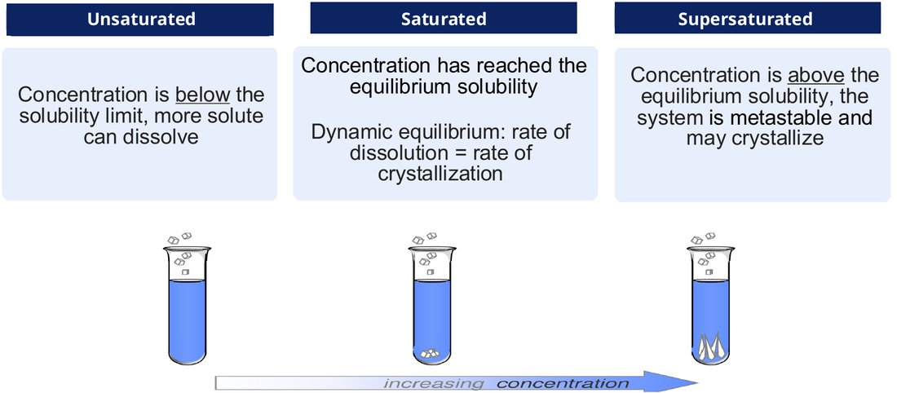
There is still “room” for more solute.
Question 21 of 141
In a saturated solution:
A. Concentration is below the solubility limit
B. Concentration is above the equilibrium solubility
C. No solute can ever crystallize
D. Concentration has reached the equilibrium solubility; rate of dissolution = rate of crystallization
D. Concentration has reached the equilibrium solubility; rate of dissolution = rate of crystallization
Saturated: concentration has reached the equilibrium solubility. Dynamic equilibrium: rate of dissolution = rate of crystallization.
Full to capacity, with dissolving and crystallising balanced.
Question 22 of 141
A supersaturated solution is:
A. Below the solubility limit and stable
B. Exactly at the equilibrium solubility
C. A solution that can dissolve unlimited solute
D. Above the equilibrium solubility; metastable and may crystallize
D. Above the equilibrium solubility; metastable and may crystallize
Supersaturated: concentration is above the equilibrium solubility; the system is metastable and may crystallize.
It holds more than it “should”, so a small disturbance can make crystals appear.
Question 23 of 141
The three saturation states compare the dissolved concentration with the equilibrium solubility at a specified:
A. Temperature
B. Colour
C. Particle size
D. Volume
A. Temperature
They compare the dissolved concentration with the equilibrium solubility at a specified temperature.
Solubility changes with temperature, so the reference temperature must be fixed.
Question 24 of 141
Arrange the saturation states in order of increasing concentration:
A. Supersaturated → saturated → unsaturated
B. Unsaturated → saturated → supersaturated
C. Saturated → unsaturated → supersaturated
D. Unsaturated → supersaturated → saturated
B. Unsaturated → saturated → supersaturated
The slide arrow shows increasing concentration from unsaturated to saturated to supersaturated.
Below the limit → at the limit → above the limit.
Question 25 of 141
A supersaturated drug solution is stable for long-term storage because it is above the solubility limit.
True
False
False
A supersaturated system is metastable and may crystallize (precipitate).
Metastable means it can “fall” into crystals at any time.
Question 26 of 141
To determine solubility experimentally, the first step is to:
A. Filter the solvent before adding the solid
B. Dissolve a small, weighed amount of solid completely
C. Add excess solid to the solvent in a stoppered conical flask and shake for a specified time at a certain temperature
D. Heat the solvent to boiling
C. Add excess solid to the solvent in a stoppered conical flask and shake for a specified time at a certain temperature
Determination of solubility: a saturated solution is prepared and then the amount dissolved is measured. (1) In a stoppered conical flask, add excess solid to the solvent and shake for a specified period of time at a certain temperature. (2) Leave for equilibration for another 24 h at the same temperature. (3) Filter and quantify the dissolved drug using a validated analytical method and calculate solubility.
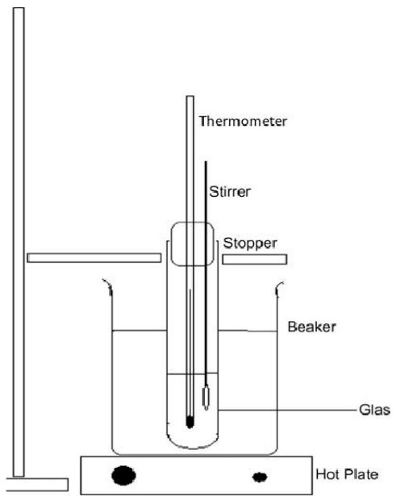
Excess solid guarantees the solution becomes saturated.
Question 27 of 141
After shaking, the flask is left for equilibration for another:
A. 1 week at room temperature with the stopper removed
B. 1 min at a higher temperature
C. 24 h at a lower temperature
D. 24 h at the same temperature
D. 24 h at the same temperature
Step 2: leave for equilibration for another 24 h at the same temperature.
Waiting at constant temperature lets the system reach true equilibrium.
Question 28 of 141
The final step in determining solubility is to:
A. Measure the dissolution rate
B. Evaporate the solvent and weigh the flask only
C. Filter and quantify the dissolved drug using a validated analytical method
D. Add more solvent until all solid dissolves
C. Filter and quantify the dissolved drug using a validated analytical method
Step 3: filter and quantify the dissolved drug using a validated analytical method and calculate solubility.
Remove the undissolved solid, then measure what is in the liquid.
Question 29 of 141
Why is excess solid added when determining solubility?
A. To make sure a saturated solution is formed
B. To speed up filtration
C. To make the solution supersaturated and metastable
D. To lower the temperature
A. To make sure a saturated solution is formed
To determine solubility experimentally, a saturated solution is prepared and then the amount dissolved is measured; excess solid ensures saturation.
If some solid stays undissolved, you know the liquid is holding the maximum.
Question 30 of 141
In the solubility apparatus shown below, the hot plate and thermometer are used to:
A. Filter the undissolved solid
B. Measure the pH of the solution
C. Keep the system at a controlled, constant temperature
D. Increase the particle size
C. Keep the system at a controlled, constant temperature
The procedure requires shaking and equilibration at a certain (constant) temperature; the hot plate heats the water bath and the thermometer monitors temperature.
Solubility depends on temperature, so it must be held constant.
3. Qualitative Solubility Expressions (USP)
11 questions
Question 31 of 141
The USP describes solubility qualitatively in terms of:
A. Grams of solute per litre of solution
B. Parts of solvent required for 1 part of solute
C. Millilitres of solute per 100 mL
D. Moles of solute per kg of solvent
B. Parts of solvent required for 1 part of solute
The United States Pharmacopoeia (USP) describes solubility in descriptive terms based on parts of solvent for 1 part of solute.
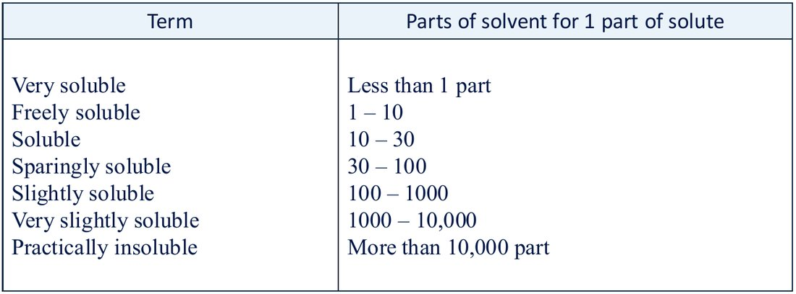
The bigger the number of solvent parts needed, the less soluble the substance.
Question 32 of 141
A substance that needs less than 1 part of solvent to dissolve 1 part of solute is:
A. Sparingly soluble
B. Soluble
C. Freely soluble
D. Very soluble
D. Very soluble
Very soluble: less than 1 part of solvent per 1 part of solute.
It dissolves in less solvent than its own amount.
Question 33 of 141
“Freely soluble” corresponds to:
A. 30–100 parts of solvent
B. Less than 1 part of solvent
C. 10–30 parts of solvent
D. 1–10 parts of solvent
D. 1–10 parts of solvent
Freely soluble: 1 – 10 parts.
Freely = easily, but not as easily as “very soluble”.
Question 34 of 141
“Sparingly soluble” corresponds to:
A. 1000–10,000 parts of solvent
B. 10–30 parts of solvent
C. 100–1000 parts of solvent
D. 30–100 parts of solvent
D. 30–100 parts of solvent
Sparingly soluble: 30 – 100 parts.
Order: very → freely → soluble → sparingly → slightly → very slightly → practically insoluble.
Question 35 of 141
A substance requiring more than 10,000 parts of solvent per part of solute is:
A. Very slightly soluble
B. Slightly soluble
C. Sparingly soluble
D. Practically insoluble
D. Practically insoluble
Practically insoluble: more than 10,000 parts.
It needs a huge amount of solvent — almost nothing dissolves.
% w/v = (mass solute in g / volume solution in mL) × 100 = g solute per 100 mL solution.
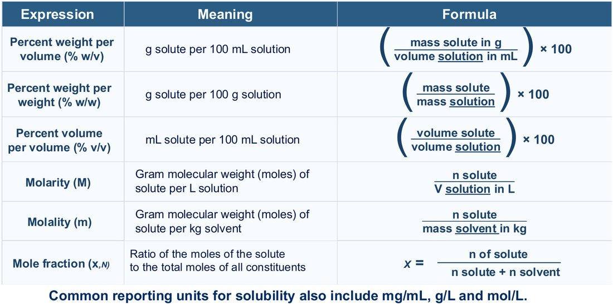
Weight on top, volume of the whole solution below.
Question 43 of 141
Percent weight per weight (% w/w) is:
A. g solute per 100 g solution
B. moles solute per kg solvent
C. g solute per 100 g solvent
D. g solute per 100 mL solution
A. g solute per 100 g solution
% w/w = (mass solute / mass solution) × 100 = g solute per 100 g solution.
The denominator is the whole solution, not just the solvent.
Question 44 of 141
Percent volume per volume (% v/v) is:
A. g solute per 100 g solution
B. g solute per 100 mL solution
C. mL solute per 100 mL solvent
D. mL solute per 100 mL solution
D. mL solute per 100 mL solution
% v/v = (volume solute / volume solution) × 100 = mL solute per 100 mL solution.
Used when a liquid is dissolved in a liquid, e.g. ethanol in water.
Question 45 of 141
Molarity (M) is defined as:
A. Grams of solute per 100 mL solution
B. Moles of solute per kg of solvent
C. Moles of solute per litre of solution
D. Moles of solute per total moles
C. Moles of solute per litre of solution
Molarity (M) = gram molecular weight (moles) of solute per L solution = n solute / V solution in L.
Molarity → litres of solution.
Question 46 of 141
Molality (m) is defined as:
A. Grams of solute per kg of solution
B. Moles of solvent per mole of solute
C. Moles of solute per litre of solution
D. Moles of solute per kg of solvent
D. Moles of solute per kg of solvent
Molality (m) = gram molecular weight (moles) of solute per kg solvent = n solute / mass solvent in kg.
Molality → kilograms of solvent (not solution).
Question 47 of 141
Mole fraction (x) of the solute is:
A. mass solute / mass solution
B. n solvent / n solute
C. n solute / (n solute + n solvent)
D. n solute / n solvent
C. n solute / (n solute + n solvent)
Mole fraction (x, N): ratio of the moles of the solute to the total moles of all constituents: x = n solute / (n solute + n solvent).
It is “my share” of all the moles present.
Question 48 of 141
Besides the expressions in the table, common reporting units for solubility also include:
A. mg/mL, g/L and mol/L
B. Parts per 100 parts of crystal
C. pKa units
D. °C and kPa
A. mg/mL, g/L and mol/L
Common reporting units for solubility also include mg/mL, g/L and mol/L.
These are simple concentration units.
Question 49 of 141
Lecture example: 317.1 g NaCl (MW 58.45) is dissolved in enough water to make 1000 mL solution at 25 °C (density 1.198 g/mL). What is the molarity?
A. 317.1 M
B. 5.425 M
C. 6.16 M
D. 0.0999 M
B. 5.425 M
n NaCl = g ÷ MW = 317.1 g ÷ 58.45 g/mol = 5.425 mol Molarity = n ÷ V solution (L) = 5.425 mol ÷ 1 L = 5.425 M
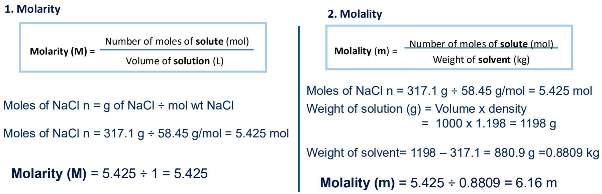
Molarity uses the volume of the whole solution, here exactly 1 L.
Question 50 of 141
Same NaCl example (317.1 g NaCl, 1000 mL solution, density 1.198 g/mL, MW 58.45). What is the molality?
A. 0.0999 m
B. 5.425 m
C. 4.53 m
D. 6.16 m
D. 6.16 m
n NaCl = 317.1 ÷ 58.45 = 5.425 mol Mass of solution = volume × density = 1000 mL × 1.198 g/mL = 1198 g Mass of solvent = 1198 − 317.1 = 880.9 g = 0.8809 kg Molality = 5.425 ÷ 0.8809 = 6.16 m
For molality you must find the mass of the solvent alone, so subtract the solute from the solution mass.
Question 51 of 141
In the NaCl example, the mass of the solvent (water) is:
A. 317.1 g
B. 1198 g
C. 1000 g
D. 880.9 g
D. 880.9 g
Mass of solution = 1000 × 1.198 = 1198 g; mass of solvent = 1198 − 317.1 = 880.9 g.
Divide by the total solution volume (200 mL), not by the water added.
Question 59 of 141
10 g of glucose (MW 180.16) is dissolved in water to make 500 mL of solution. What is the molarity?
A. 0.000111 M
B. 0.111 M
C. 0.0555 M
D. 18.0 M
B. 0.111 M
n = 10 g ÷ 180.16 g/mol = 0.05551 mol V = 500 mL = 0.500 L M = 0.05551 ÷ 0.500 = 0.111 M
Always convert mL to L before dividing for molarity.
Question 60 of 141
20 g of NaCl (MW 58.45) is dissolved in 180 g of water. What is the molality?
A. 0.342 m
B. 1.90 m
C. 0.111 m
D. 1.71 m
B. 1.90 m
n = 20 ÷ 58.45 = 0.3422 mol Mass of solvent = 180 g = 0.180 kg m = 0.3422 ÷ 0.180 = 1.90 m
Molality divides by the solvent mass in kg (0.180 kg), not the solution mass (0.200 kg).
Question 61 of 141
20 g of NaCl is dissolved in 180 g of water. What is the % w/w of NaCl?
A. 20% w/w
B. 10% w/w
C. 11.1% w/w
D. 9% w/w
B. 10% w/w
Mass of solution = 20 + 180 = 200 g % w/w = (20 / 200) × 100 = 10% w/w
Add solute and solvent to get the solution mass first.
Question 62 of 141
40 g of KCl (MW 74.55) is dissolved in water to make 500 mL of solution with a density of 1.05 g/mL. What is the molality of KCl?
A. 1.11 m
B. 1.02 m
C. 0.537 m
D. 1.07 m
A. 1.11 m
n KCl = 40 ÷ 74.55 = 0.5366 mol Mass of solution = 500 mL × 1.05 g/mL = 525 g Mass of solvent = 525 − 40 = 485 g = 0.485 kg Molality = 0.5366 ÷ 0.485 = 1.11 m
Same steps as the NaCl lecture example: density → solution mass → subtract solute → solvent mass.
Question 63 of 141
Same KCl solution (40 g KCl, 500 mL solution, density 1.05 g/mL, MW 74.55). What is the molarity?
A. 0.0807 M
B. 1.07 M
C. 0.537 M
D. 1.11 M
B. 1.07 M
n KCl = 40 ÷ 74.55 = 0.5366 mol V = 0.500 L M = 0.5366 ÷ 0.500 = 1.07 M
Molarity does not need the density — only moles and solution volume.
Question 64 of 141
Same KCl solution (40 g KCl in 500 mL solution, density 1.05 g/mL). What are the % w/w and % w/v?
A solution has a concentration of 31.71% w/v. Expressed in mg/mL this is:
A. 317.1 mg/mL
B. 3.171 mg/mL
C. 31.71 mg/mL
D. 3171 mg/mL
A. 317.1 mg/mL
31.71% w/v = 31.71 g per 100 mL = 0.3171 g/mL = 317.1 mg/mL
Divide by 100 to get g/mL, then × 1000 for mg/mL.
Question 69 of 141
Molality is calculated using the mass of the whole solution in kg.
True
False
False
Molality = moles of solute / mass of solvent in kg.
Molarity → solution (L); molality → solvent (kg).
5. What Controls Solubility?
11 questions
Question 70 of 141
Dissolution of a solute requires:
A. Only breaking solvent–solvent interactions
B. No change in intermolecular interactions
C. Only forming new solute–solute bonds
D. Breaking existing interactions and forming new ones
D. Breaking existing interactions and forming new ones
Dissolution requires breaking existing interactions and forming new ones.
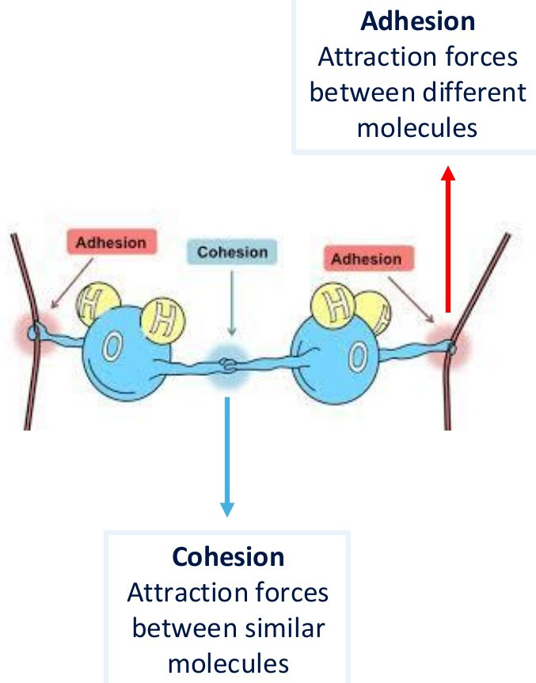
Old “friendships” (solute–solute, solvent–solvent) break; new ones (solute–solvent) form.
Question 71 of 141
Dissolution is favoured when:
A. The solute has a very strong crystal lattice
B. Solute–solute interactions are much stronger than solute–solvent interactions
C. Solvent–solvent interactions cannot be broken
D. New solute–solvent interactions sufficiently compensate for disrupting the original solute–solute and solvent–solvent interactions
D. New solute–solvent interactions sufficiently compensate for disrupting the original solute–solute and solvent–solvent interactions
Dissolution is favoured when the new solute–solvent interactions sufficiently compensate for disrupting the original solute–solute and solvent–solvent interactions.
The new bonds must “pay back” the energy used to break the old ones.
Question 72 of 141
Cohesion refers to:
A. The speed of dissolution
B. Attraction forces between similar molecules
C. Attraction forces between different molecules
D. Repulsion between ions
B. Attraction forces between similar molecules
Cohesion: attraction forces between similar molecules. Adhesion: attraction forces between different molecules.
Co-hesion = same kind sticking together (e.g. water to water).
Question 73 of 141
Attraction between a solute molecule and a solvent molecule is an example of:
A. Cohesion
B. Adhesion
C. Polymorphism
D. Crystallisation
B. Adhesion
Adhesion: attraction forces between different molecules (solute–solvent).
Ad-hesion = sticking to something different.
Question 74 of 141
Which is the correct grouping of the factors affecting solubility?
A. Temperature, colour and taste
B. Solute-related factors, solvent-related factors and system conditions
C. Solute-related factors, packaging factors and patient factors
D. Dissolution rate, agitation and particle size only
B. Solute-related factors, solvent-related factors and system conditions
Factors affecting solubility: solute-related factors (molecular structure; solid state and particle size), solvent-related factors (solvent polarity; solvent composition) and system conditions (temperature, pH, pressure).
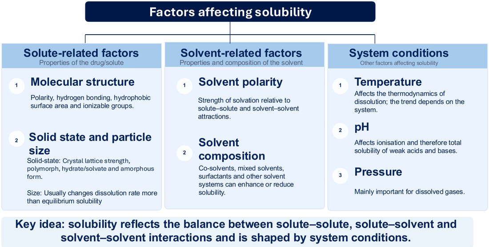
Think: the drug, the liquid, and the surroundings.
Question 75 of 141
Which of the following is a system condition affecting solubility?
A. Crystal lattice strength
B. Solvent polarity
C. Molecular structure
D. pH
D. pH
System conditions: temperature, pH and pressure.
System conditions are external settings, not properties of the drug or solvent molecules.
Question 76 of 141
Co-solvents, mixed solvents and surfactants are classified under:
A. Solid state (solute-related factors)
B. Pressure (system conditions)
C. Molecular structure (solute-related factors)
D. Solvent composition (solvent-related factors)
D. Solvent composition (solvent-related factors)
Solvent composition: co-solvents, mixed solvents, surfactants and other solvent systems can enhance or reduce solubility.
They change what the solvent is made of.
Question 77 of 141
According to the lecture, particle size usually changes ____ more than equilibrium solubility.
A. Melting point
B. Dielectric constant
C. pKa
D. Dissolution rate
D. Dissolution rate
Size: usually changes dissolution rate more than equilibrium solubility.
Smaller particles dissolve faster, but the maximum amount dissolved barely changes.
Question 78 of 141
Key idea: solubility reflects the balance between solute–solute, solute–solvent and solvent–solvent interactions and is shaped by system conditions.
True
False
True
This is the key idea stated on the “What controls solubility?” slide and repeated in the key points.
Three kinds of interactions compete; the conditions tip the balance.
Question 79 of 141
In the overview of factors affecting solubility, the solvent-related factor “solvent polarity” is described as:
A. The crystal lattice strength of the drug
B. The pressure of the gas above the liquid
C. The strength of solvation relative to solute–solute and solvent–solvent attractions
D. The particle size of the drug powder
C. The strength of solvation relative to solute–solute and solvent–solvent attractions
Solvent polarity: strength of solvation relative to solute–solute and solvent–solvent attractions.
A good solvent must attract the solute more strongly than the solute and solvent attract themselves.
Question 80 of 141
Polarity, hydrogen bonding, hydrophobic surface area and ionizable groups are aspects of which factor?
A. Temperature
B. Molecular structure
C. Solvent composition
D. Pressure
B. Molecular structure
Molecular structure (solute-related): polarity, hydrogen bonding, hydrophobic surface area and ionizable groups.
All of these describe the drug molecule itself.
6. Solute-Related Factors
18 questions
Question 81 of 141
As the carbon chain length of a molecule increases, aqueous solubility:
A. Increases, because hydrogen bonding increases
B. Increases, because polarity increases
C. Decreases, because hydrophobic character increases
D. Stays the same
C. Decreases, because hydrophobic character increases
Length of carbon chain: as the carbon chain gets longer → greater hydrophobic character → decrease in solubility.
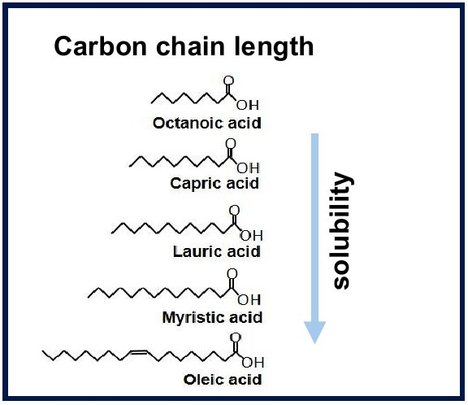
A long oily tail does not like water.
Question 82 of 141
In the fatty acid series octanoic, capric, lauric, myristic and oleic acid, which has the highest aqueous solubility?
A. Capric acid
B. Oleic acid
C. Myristic acid
D. Octanoic acid
D. Octanoic acid
Octanoic acid has the shortest carbon chain in the series (C8), so it is the least hydrophobic and the most water-soluble; solubility decreases down the series as chain length increases.
Shortest chain = most water-soluble.
Question 83 of 141
Increased branching of hydrophobic groups:
A. Has no effect on molecular packing
B. Always decreases aqueous solubility
C. Increases the crystal lattice strength in all cases
D. Can alter molecular packing and may increase aqueous solubility compared with the straight-chain compound
D. Can alter molecular packing and may increase aqueous solubility compared with the straight-chain compound
Branching of hydrophobic groups: increased branching can alter molecular packing and may increase aqueous solubility compared with the corresponding straight-chain compound. (The slide shows straight people packed closely vs branched people packed loosely.)
Branched molecules cannot pack tightly, so they separate from each other more easily.
Question 84 of 141
The higher the polarity of a solute, the higher its aqueous solubility.
True
False
True
Polarity: the higher the polarity of the solute, the higher the aqueous solubility.
Water is polar, and polar dissolves in polar.
Question 85 of 141
Substituent groups influence the solubility of molecules in water due to:
A. Their colour
B. Their effect on the container material
C. Molecular cohesion or their effect on interaction with water molecules
D. Their effect on atmospheric pressure
C. Molecular cohesion or their effect on interaction with water molecules
Substituent groups influence solubility of molecules in water due to the molecular cohesion or to the effect on its interaction with water molecules. Substituents can be classified hydrophobic or hydrophilic depending on their polarity, and the effect also depends on the position of the substituent.
A new group can make the molecule love water more, or less.
Question 86 of 141
According to the substituent classification table, which group is hydrophobic?
A. –CHO
B. –Cl
C. –NH₂
D. –OH
B. –Cl
Hydrophobic: –CH₃, –CH₂–, –Cl, –Br, –F, –N(CH₃)₂, –SCH₃, –OCH₂CH₃. –OH is very hydrophilic; –NH₂ and –CHO are hydrophilic.
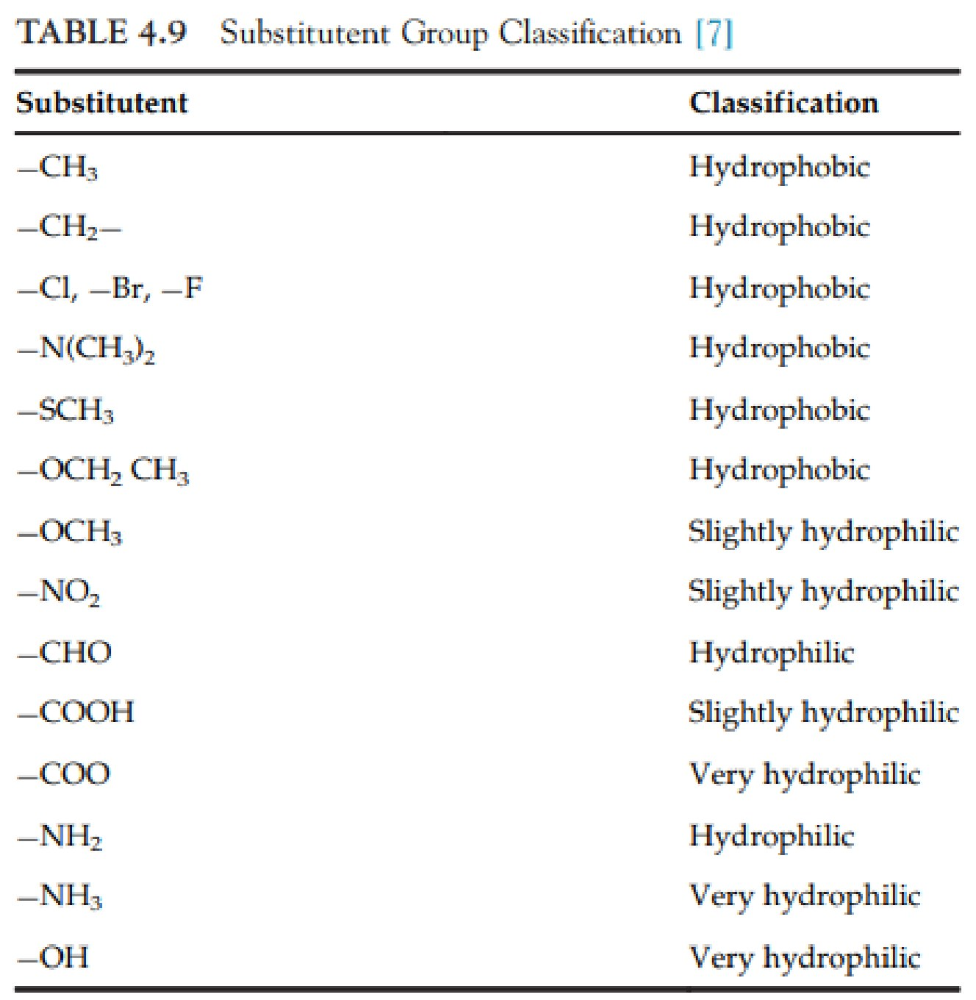
Halogens and alkyl groups are “oily” groups.
Question 87 of 141
According to the substituent table, which group is classified as very hydrophilic?
A. –OCH₂CH₃
B. –OH
C. –CH₃
D. –SCH₃
B. –OH
Very hydrophilic: –COO⁻, –NH₃⁺ and –OH. (Note: the slide writes “–COO” and “–NH₃”; these represent the ionised groups –COO⁻ and –NH₃⁺.)
–OH forms strong hydrogen bonds with water.
Question 88 of 141
Which substituent is classified as slightly hydrophilic?
A. –NH₂
B. –N(CH₃)₂
C. –Br
D. –NO₂
D. –NO₂
Slightly hydrophilic: –OCH₃, –NO₂ and –COOH. –NH₂ is hydrophilic; –Br and –N(CH₃)₂ are hydrophobic.
Slightly hydrophilic groups are only weakly polar.
Question 89 of 141
The ionised carboxylate group (–COO⁻) is more hydrophilic than the un-ionised carboxylic acid group (–COOH).
True
False
True
In the table, –COOH is slightly hydrophilic while –COO(⁻) is very hydrophilic. (Note: the slide writes “–COO”; the ionised form –COO⁻ is meant.)
A charged group attracts water much more strongly.
Question 90 of 141
The effect of a substituent on solubility depends only on its polarity, not on its position in the molecule.
True
False
False
The effect also depends on the position of the substituent.
Where the group sits on the molecule matters, too.
Question 91 of 141
For crystalline solids, a more stable/stronger crystal lattice generally gives:
A. No change in melting point or solubility
B. A higher melting point and higher solubility
C. A lower melting point and higher solubility
D. A higher melting point and lower solubility
D. A higher melting point and lower solubility
Crystalline solids: more stable/stronger crystal lattice → generally higher melting point → generally lower solubility.
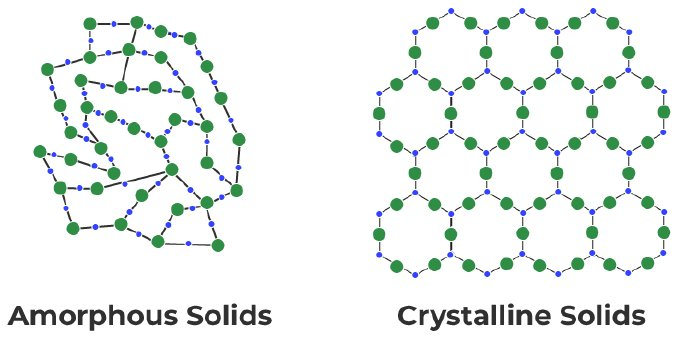
A tightly locked crystal is harder to pull apart, both by heat and by solvent.
Question 92 of 141
Using the table of sulfonamide derivatives below, what relationship is seen between melting point and aqueous solubility?
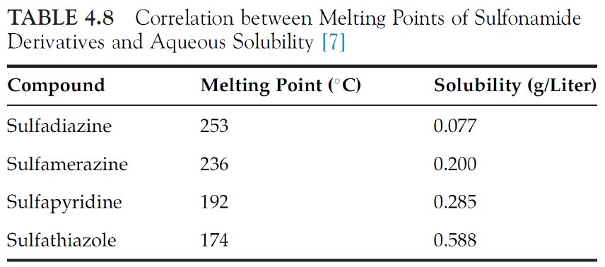
A. As melting point increases, aqueous solubility increases
B. Melting point and solubility are equal
C. As melting point increases, aqueous solubility decreases
D. There is no relationship
C. As melting point increases, aqueous solubility decreases
Sulfadiazine (m.p. 253 °C) has the lowest solubility (0.077 g/L), and sulfathiazole (m.p. 174 °C) has the highest (0.588 g/L): higher melting point → stronger lattice → lower solubility.
High melting point is a sign of a strong crystal, which dissolves less.
Question 93 of 141
According to the sulfonamide table, which compound is the most water-soluble?
A. Sulfadiazine
B. Sulfapyridine
C. Sulfamerazine
D. Sulfathiazole
D. Sulfathiazole
Sulfathiazole has the lowest melting point (174 °C) and the highest solubility (0.588 g/L).
Lowest melting point → weakest lattice → most soluble.
Question 94 of 141
Small particle size leads to:
A. A higher melting point
B. A stronger crystal lattice
C. Large surface area → more interaction with solvent molecules → high dissolution rate
D. Small surface area → less interaction → low dissolution rate
C. Large surface area → more interaction with solvent molecules → high dissolution rate
Particle size: small PS → large surface area → more interaction with solvent molecules → high dissolution rate.
Crushed sugar dissolves faster than a sugar cube.
Question 95 of 141
Which list contains only solid-state aspects that affect solubility?
A. Dielectric constant and dipole moment
B. Co-solvents, surfactants and mixed solvents
C. Temperature, pH and pressure
D. Crystal lattice strength, polymorph, hydrate/solvate and amorphous form
D. Crystal lattice strength, polymorph, hydrate/solvate and amorphous form
Solid-state: crystal lattice strength, polymorph, hydrate/solvate and amorphous form.
These describe how the solid molecules are arranged.
Question 96 of 141
Compared with a crystalline solid, an amorphous solid has molecules that are:
A. Always gases
B. Arranged in a highly ordered, repeating lattice
C. Bound more strongly than in any crystal
D. Arranged randomly without an ordered lattice, so it is generally easier to dissolve
D. Arranged randomly without an ordered lattice, so it is generally easier to dissolve
The slide shows amorphous solids with a random, disordered network and crystalline solids with an ordered, repeating lattice. Since a stronger, more ordered crystal lattice generally lowers solubility, the less ordered amorphous form is generally easier to dissolve.
No strong ordered lattice to break → easier to dissolve.
Question 97 of 141
Replacing an –OH group on a drug with a –CH₃ group would most likely:
A. Make the drug very hydrophilic
B. Decrease aqueous solubility
C. Have no possible effect
D. Increase aqueous solubility
B. Decrease aqueous solubility
–OH is very hydrophilic while –CH₃ is hydrophobic (substituent table), so the change makes the molecule less water-loving.
You swap a water-loving group for an oily one.
Question 98 of 141
Micronising (grinding) a drug powder mainly increases its equilibrium solubility rather than its dissolution rate.
True
False
False
Particle size usually changes dissolution rate more than equilibrium solubility: smaller particles → larger surface area → faster dissolution.
Grinding makes it dissolve faster, not more.
7. Solvent-Related Factors
18 questions
Question 99 of 141
Polarity is defined as:
A. The mass of solvent per litre
B. The rate of dissolution
C. The distribution of electrical charge over the atoms in a molecule
D. The number of carbon atoms in a molecule
C. The distribution of electrical charge over the atoms in a molecule
Polarity: distribution of electrical charge over the atoms in a molecule.
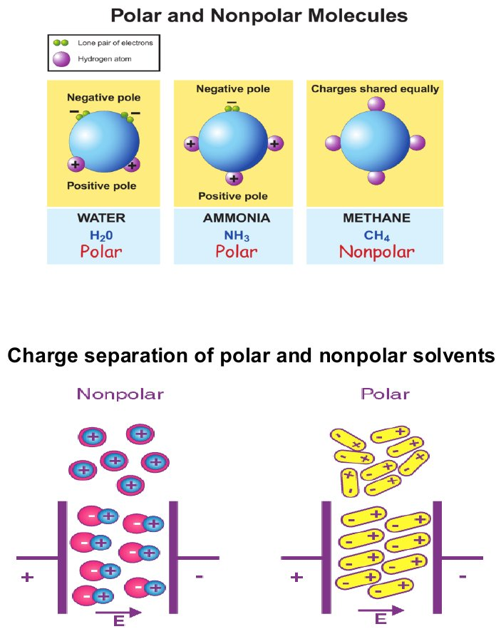
Polar molecules have a positive end and a negative end.
Question 100 of 141
The dielectric constant (ε) of a solvent is:
A. A quantitative measure of polarity (ability to separate charges)
B. The number of hydrogen atoms in the solvent
C. A measure of the solvent's boiling point
D. A measure of the solvent's density
A. A quantitative measure of polarity (ability to separate charges)
Dielectric constant (ε): a quantitative measure of polarity. ↑ Dielectric constant = ↑ ability to separate charges = ↑ polarity.
High ε = strongly polar solvent that can pull ions apart.
Question 101 of 141
Which of these molecules is shown on the slide as nonpolar?
A. Ammonia (NH₃)
B. Methane (CH₄)
C. Ethanol
D. Water (H₂O)
B. Methane (CH₄)
The slide shows water and ammonia as polar (they have a negative and a positive pole) and methane as nonpolar (charges shared equally).
In methane the charge is spread evenly, so there are no poles.
In the polarity table, as the dielectric constant of the solvent decreases, the solutes that dissolve in it show:
A. No change in water solubility
B. Increasing water solubility
C. Increasing ionic character
D. Decreasing water solubility
D. Decreasing water solubility
The table shows decreasing polarity of the solvent going down, and the solutes listed show decreasing water solubility going down.
Less polar solvents dissolve less water-friendly solutes.
Question 107 of 141
Polar solvents interact with solutes through:
A. Dipole–dipole interactions and/or hydrogen bonding
B. Magnetic forces
C. Covalent bond formation
D. Van der Waals forces only
A. Dipole–dipole interactions and/or hydrogen bonding
Polar solvents: high dielectric constant (e.g. water ε = 80); interact with solutes through dipole–dipole interactions and/or hydrogen bonding; good for dissolving polar/ionic solutes (e.g. NaCl).
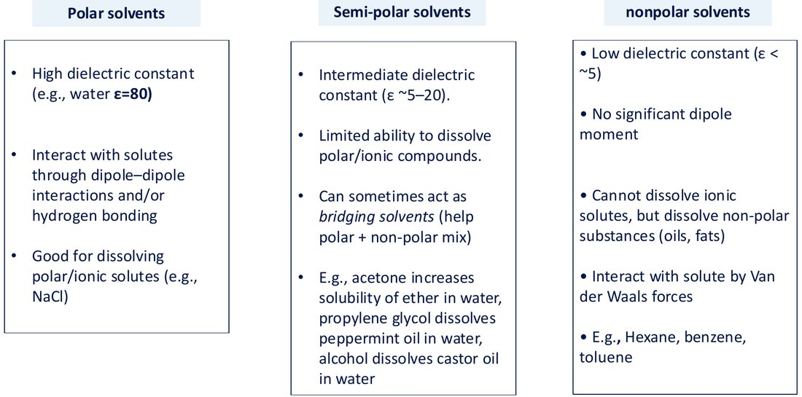
Water molecules “grab” ions and polar groups with their charged ends.
Question 108 of 141
Semi-polar solvents have an intermediate dielectric constant of about:
A. 5–20
B. 80
C. More than 50
D. Less than 5
A. 5–20
Semi-polar solvents: intermediate dielectric constant (ε ~5–20); limited ability to dissolve polar/ionic compounds; can sometimes act as bridging solvents (help polar + non-polar mix).
Between nonpolar (<5) and highly polar (water, 80).
Question 109 of 141
A solvent that helps a polar and a nonpolar liquid to mix is called a:
A. Supersaturated solvent
B. Nonpolar solvent
C. Bridging solvent
D. Dielectric solvent
C. Bridging solvent
Semi-polar solvents can sometimes act as bridging solvents (help polar + non-polar mix).
Like a translator between two people who speak different languages.
Question 110 of 141
Which is given as an example of a semi-polar solvent acting as a bridge?
A. Water dissolves paraffin
B. Mineral oil dissolves sugar
C. Hexane dissolves NaCl
D. Propylene glycol dissolves peppermint oil in water
D. Propylene glycol dissolves peppermint oil in water
Examples: acetone increases solubility of ether in water; propylene glycol dissolves peppermint oil in water; alcohol dissolves castor oil in water.
The semi-polar solvent brings the oil into the water.
Question 111 of 141
Nonpolar solvents:
A. Have a high dielectric constant and dissolve ionic solutes well
B. Are good for dissolving NaCl
C. Interact with solutes mainly through hydrogen bonding
D. Have a low dielectric constant (ε < ~5), no significant dipole moment, and interact with solutes by Van der Waals forces
D. Have a low dielectric constant (ε < ~5), no significant dipole moment, and interact with solutes by Van der Waals forces
Nonpolar solvents: low dielectric constant (ε < ~5); no significant dipole moment; cannot dissolve ionic solutes but dissolve non-polar substances (oils, fats); interact with solute by Van der Waals forces; e.g. hexane, benzene, toluene.
No charged ends, so only weak Van der Waals attractions.
Question 112 of 141
Which is an example of a nonpolar solvent?
A. Glycols
B. Toluene
C. Water
D. Acetone
B. Toluene
Examples of nonpolar solvents: hexane, benzene, toluene. Acetone is given as a semi-polar example; water is polar.
Hydrocarbon solvents are nonpolar.
Question 113 of 141
Nonpolar solvents can dissolve ionic solutes such as NaCl.
Without charges to stabilise them, ions stay together.
Question 114 of 141
A pharmacist needs to dissolve an ionic salt drug. Which solvent is most suitable?
A. Hexane
B. Benzene
C. Mineral oil
D. Water
D. Water
Water has a high dielectric constant (ε ≈ 80), good for dissolving polar/ionic solutes; the table lists inorganic and organic salts as dissolving in water.
Salts need a strongly polar solvent.
Question 115 of 141
Arrange these solvents from highest to lowest dielectric constant:
A. Ethyl alcohol → water → hexane → glycols
B. Water → glycols → ethyl alcohol → hexane
C. Hexane → ethyl alcohol → glycols → water
D. Glycols → water → hexane → ethyl alcohol
B. Water → glycols → ethyl alcohol → hexane
From the table: water (80) → glycols (50) → methyl/ethyl alcohols (30) → hexane (5).
Water is at the top; hydrocarbons are near the bottom.
Question 116 of 141
Paraffin would dissolve best in:
A. Methyl alcohol
B. Water
C. Glycols
D. Hexane
D. Hexane
Paraffin is a nonpolar hydrocarbon; the table shows paraffin dissolving in solvents of ε ≈ 5 (hexane, benzene, etc.), in line with “like dissolves like”.
Oily dissolves in oily.
8. System Conditions: Temperature, pH & Pressure
25 questions
Question 117 of 141
The effect of temperature on solubility depends on:
A. The size of the container
B. The USP descriptive term
C. The thermodynamics of dissolution
D. The colour of the solution
C. The thermodynamics of dissolution
The effect of temperature on solubility depends on the thermodynamics of dissolution. Energy is required to overcome the interactions holding the solid together, while energy is released when new solute–solvent interactions form. When a solid dissolves in a liquid, a change in the physical state of the solid takes place.
It depends on whether dissolving takes in or gives out heat.
Question 118 of 141
During dissolution of a solid, energy is ____ to break the solid's interactions and ____ when new solute–solvent interactions form.
A. Released; released
B. Required; released
C. Required; required
D. Released; required
B. Required; released
Energy is required to overcome the interactions holding the solid together, while energy is released when new solute–solvent interactions form.
Breaking bonds costs energy; making bonds gives energy back.
Question 119 of 141
Endothermic solutes:
A. Become insoluble at any temperature above 25 °C
B. Release heat during dissolution; increasing temperature usually decreases their solubility
C. Absorb heat from the surroundings during dissolution; increasing temperature usually increases their solubility
D. Show no heat change
C. Absorb heat from the surroundings during dissolution; increasing temperature usually increases their solubility
Endothermic: solutes absorb heat from the surroundings during dissolution; energy is required to break the solute bonds; increasing temperature usually increases solubility of solids (most common).
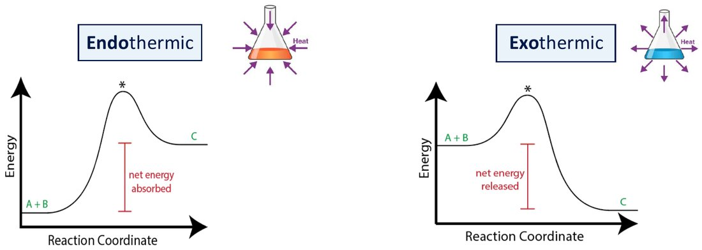
If dissolving needs heat, giving more heat helps it dissolve.
Question 120 of 141
Exothermic solutes:
A. Release heat during dissolution; increasing temperature usually decreases their solubility
B. Are the most common type of solid
C. Absorb heat during dissolution; increasing temperature increases their solubility
D. Never change solubility with temperature
A. Release heat during dissolution; increasing temperature usually decreases their solubility
Exothermic: solutes release heat to the surroundings during dissolution; energy released is greater than the energy needed to break the solute bonds; increasing temperature usually decreases solubility of solids (less common).
If dissolving already gives off heat, adding more heat pushes it backwards.
Question 121 of 141
For an exothermic solute, the energy released during dissolution is ____ the energy needed to break the solute bonds.
A. Unrelated to
B. Greater than
C. Exactly equal to
D. Less than
B. Greater than
Exothermic: energy released is greater than the energy needed to break the solute bonds, so net heat is released to the surroundings. (For endothermic solutes, energy is required to break the solute bonds and net heat is absorbed.)
More energy comes out than goes in, so the solution warms up.
Question 122 of 141
Which type of solid is more common: one whose solubility increases with temperature, or one whose solubility decreases with temperature?
A. Increases with temperature (endothermic) is more common
B. They are equally common
C. Decreases with temperature (exothermic) is more common
D. Neither occurs in practice
A. Increases with temperature (endothermic) is more common
Increasing temperature usually increases solubility of solids (endothermic, most common); decreasing solubility with temperature (exothermic) is less common.
Most solids dissolve better in hot water.
Question 123 of 141
Study this energy diagram for a dissolution process (A + B → C):
This dissolution is:
A. Exothermic — because there is an energy peak
B. Neither — no energy change
C. Endothermic — net energy is absorbed
D. Exothermic — net energy is released
C. Endothermic — net energy is absorbed
When products are higher in energy than the reactants, net energy is absorbed from the surroundings → endothermic. In the exothermic diagram, products lie below the reactants (net energy released).
Going uphill in energy means energy had to be taken in.
Question 124 of 141
Using the graph below, which compound shows decreasing solubility as temperature increases over the whole range?
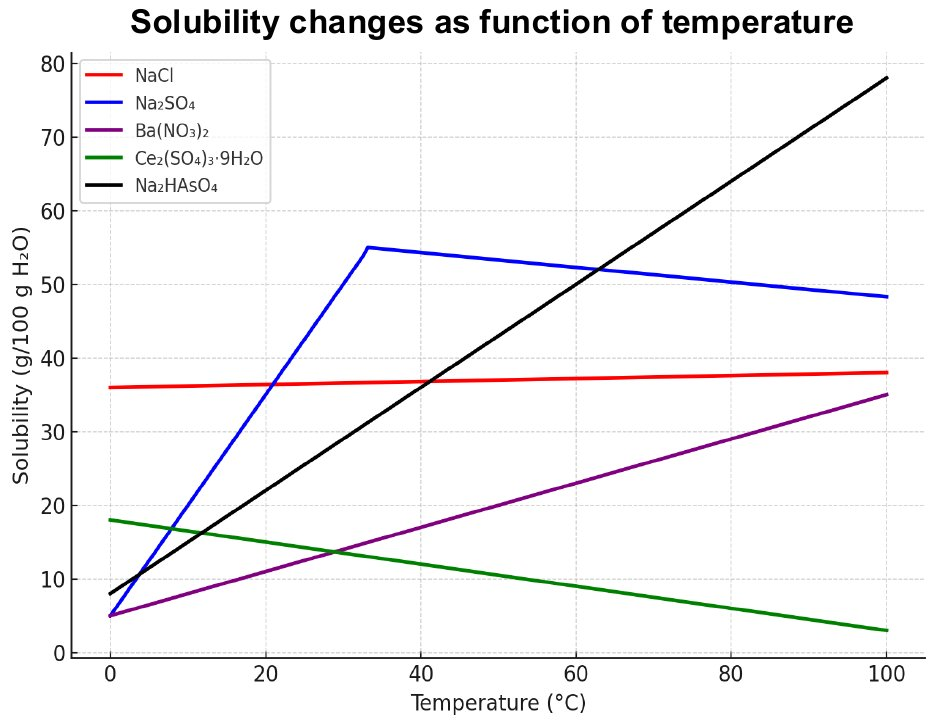
A. Na₂HAsO₄
B. Ce₂(SO₄)₃·9H₂O
C. Ba(NO₃)₂
D. NaCl
B. Ce₂(SO₄)₃·9H₂O
Ce₂(SO₄)₃·9H₂O (cerium(III) sulfate nonahydrate): solubility decreases with temperature → exothermic. Ba(NO₃)₂ and Na₂HAsO₄ increase (endothermic); NaCl is almost constant.
Look for the line going down from left to right.
Question 125 of 141
According to the lecture, the solubility of NaCl with temperature is:
A. Strongly increasing
B. Almost constant
C. First decreasing then increasing
D. Strongly decreasing
B. Almost constant
NaCl (sodium chloride): almost constant solubility with temperature (about 36–38 g/100 g H₂O between 0 and 100 °C on the graph).
Its line on the graph is nearly flat.
Question 126 of 141
The solubility of Na₂SO₄ (sodium sulfate):
A. Decreases steadily from 0 to 100 °C
B. Is constant at all temperatures
C. Increases up to ~33 °C (as decahydrate), then decreases slightly as it converts to the anhydrous form
D. Increases steadily all the way to 100 °C
C. Increases up to ~33 °C (as decahydrate), then decreases slightly as it converts to the anhydrous form
Na₂SO₄: solubility increases up to ~33 °C (as decahydrate), then decreases slightly as it converts to anhydrous form.
A change in the solid form (hydrate → anhydrous) changes the trend.
Question 127 of 141
Barium nitrate, Ba(NO₃)₂, and sodium arsenate, Na₂HAsO₄, are both classified as:
A. Endothermic — solubility increases with temperature
B. Supersaturated
C. Temperature-independent
D. Exothermic — solubility decreases with temperature
A. Endothermic — solubility increases with temperature
Ba(NO₃)₂: solubility increases with temperature → endothermic. Na₂HAsO₄: solubility increases steadily with temperature → endothermic.
Both lines on the graph go up.
Question 128 of 141
From the graph below, approximately what is the solubility of Na₂HAsO₄ at 100 °C?
A. About 78 g/100 g H₂O
B. About 48 g/100 g H₂O
C. About 3 g/100 g H₂O
D. About 35 g/100 g H₂O
A. About 78 g/100 g H₂O
The black Na₂HAsO₄ line reaches about 78 g/100 g H₂O at 100 °C (Ba(NO₃)₂ ≈ 35, Na₂SO₄ ≈ 48, Ce₂(SO₄)₃·9H₂O ≈ 3).
Follow the black line to the right edge of the graph.
Question 129 of 141
The aqueous solubility of many drugs depends on pH because:
A. pH changes the drug's molecular weight
B. pH changes the dielectric constant of all solvents to zero
C. pH only affects gases
D. Many drugs are weak acids or weak bases, so their degree of ionisation depends on pH
D. Many drugs are weak acids or weak bases, so their degree of ionisation depends on pH
Many drugs are weak acids or weak bases; therefore, their degree of ionisation and consequently their aqueous solubility can depend on pH. Solubility is governed by both pH and the acid dissociation constant (pKa) of the drug.
Ionised (charged) forms are more water-soluble.
Question 130 of 141
The solubility of a weak acid or weak base drug is governed by:
A. Only the container volume
B. Only the pressure
C. Only the particle size
D. Both the pH and the drug's pKa
D. Both the pH and the drug's pKa
Solubility is governed by both pH and the acid dissociation constant (pKa) of the drug.
pKa tells at which pH the drug changes from un-ionised to ionised.
Question 131 of 141
A weak acid drug such as aspirin is:
A. Less soluble in acidic solutions (low pH) and more soluble in alkaline solutions (high pH)
B. Insoluble in alkaline solutions
C. Equally soluble at all pH values
D. More soluble in acidic solutions and less soluble in alkaline solutions
A. Less soluble in acidic solutions (low pH) and more soluble in alkaline solutions (high pH)
Weak acids: less soluble in acidic solutions (low pH), more soluble in alkaline solutions (high pH). Examples: aspirin, NSAIDs, barbiturates. R–COOH (unionized) + NaOH → R–COO⁻ Na⁺ (soluble).
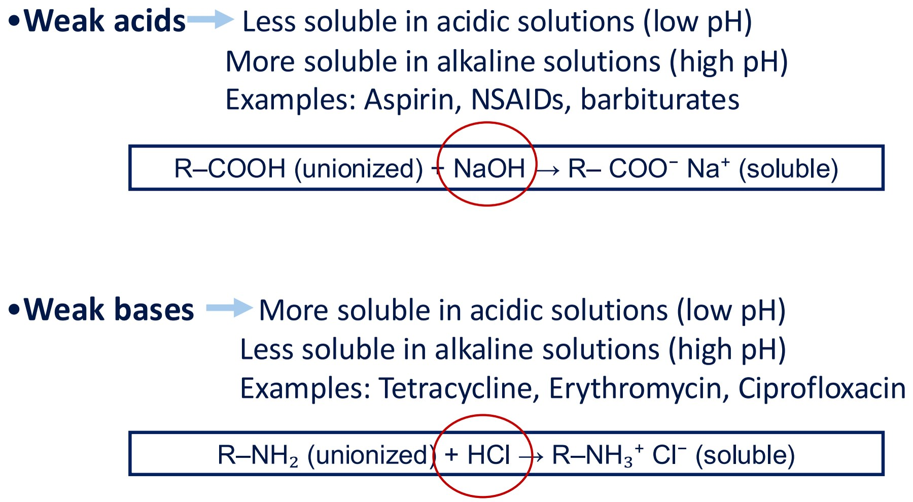
A base (NaOH) turns the acid into its charged, soluble salt.
Question 132 of 141
Which drugs are given as examples of weak bases?
A. Aspirin, NSAIDs, barbiturates
B. Tetracycline, erythromycin, ciprofloxacin
C. NaCl, Na₂SO₄, Ba(NO₃)₂
D. Hexane, benzene, toluene
B. Tetracycline, erythromycin, ciprofloxacin
Weak bases: more soluble in acidic solutions (low pH), less soluble in alkaline solutions (high pH). Examples: tetracycline, erythromycin, ciprofloxacin. R–NH₂ (unionized) + HCl → R–NH₃⁺ Cl⁻ (soluble).
Aspirin is an acid; the antibiotics listed are bases.
Question 133 of 141
Reacting a weak base drug R–NH₂ with HCl produces:
A. R–NH₃⁺ Cl⁻, a soluble ionised salt
B. R–COO⁻ Na⁺
C. R–NH₂ precipitate, an insoluble form
D. An un-ionised, less soluble form
A. R–NH₃⁺ Cl⁻, a soluble ionised salt
R–NH₂ (unionized) + HCl → R–NH₃⁺ Cl⁻ (soluble).
Acid protonates the base, giving it a charge that water likes.
Question 134 of 141
Which is NOT listed as a clinical relevance of pH-dependent solubility?
A. Solubility of a drug changes in different parts of the GI tract
B. pH changes the colour of all tablets
C. Formulation pH must be controlled to keep drugs dissolved
D. Storage pH changes can cause precipitation
B. pH changes the colour of all tablets
Clinical relevance: formulation pH must be controlled to keep drugs dissolved; solubility of a drug changes in different parts of the GI tract; storage pH changes can cause precipitation.
Think of keeping drugs dissolved in the bottle and in the gut.
Question 135 of 141
A weak base drug is expected to be more soluble in the stomach (acidic) than in the small intestine (more alkaline).
True
False
True
Weak bases are more soluble in acidic solutions (low pH) and less soluble in alkaline solutions (high pH); this is why solubility changes in different parts of the GI tract.
Bases love acid — they become ionised there.
Question 136 of 141
Adding NaOH to a suspension of a weak acid drug (R–COOH) will most likely:
A. Decrease its solubility by forming more R–COOH
B. Convert it into R–NH₃⁺ Cl⁻
C. Have no effect on solubility
D. Increase its aqueous solubility by forming R–COO⁻ Na⁺
D. Increase its aqueous solubility by forming R–COO⁻ Na⁺
R–COOH (unionized) + NaOH → R–COO⁻ Na⁺ (soluble). Weak acids are more soluble at high pH.
The alkali turns the weak acid into a soluble salt.
Question 137 of 141
A barbiturate (weak acid) solution is accidentally acidified during storage. What is the most likely result?
A. No change
B. Precipitation of the drug
C. An increase in its solubility
D. Conversion to a weak base
B. Precipitation of the drug
Weak acids are less soluble at low pH; storage pH changes can cause precipitation.
Lowering the pH turns the acid back into its un-ionised, less soluble form.
Question 138 of 141
For solids and liquids, pressure generally has:
A. Little effect on solubility
B. An effect only on dissolution rate
C. A strong decreasing effect on solubility
D. A much greater effect than for gases
A. Little effect on solubility
Pressure: for solids and liquids, pressure generally has little effect on solubility. For gases dissolved in liquids, pressure has a much greater influence.
You cannot “squeeze” more sugar into water.
Question 139 of 141
For a gas dissolved in a liquid, increasing the pressure of the gas above the liquid:
A. Generally decreases the amount of gas that dissolves
B. Has no effect
C. Turns the gas into a solid
D. Generally increases the amount of gas that dissolves
D. Generally increases the amount of gas that dissolves
Increasing the pressure of a gas above a liquid generally increases the amount of gas that dissolves. General relationship: ↑ gas pressure → ↑ gas solubility.
Fizzy drinks are bottled under high CO₂ pressure to keep the gas dissolved.
Question 140 of 141
When a carbonated drink is opened, bubbles form because:
A. The temperature suddenly rises to 100 °C
B. The gas pressure above the liquid drops, so gas solubility decreases
C. The dissolved gas changes into a solid
D. The liquid becomes more polar
B. The gas pressure above the liquid drops, so gas solubility decreases
General relationship: ↑ gas pressure → ↑ gas solubility; so when pressure is released, gas solubility falls and the excess gas escapes as bubbles.
Less pressure → less gas can stay dissolved.
Question 141 of 141
Understanding solute-related, solvent-related and system factors provides the basis for:
A. Choosing the packaging size
B. Calculating molecular weight
C. Measuring the colour of solutions
D. Predicting and improving drug solubility in formulation
D. Predicting and improving drug solubility in formulation
Key points: solubility is the maximum amount of solute that can remain dissolved at equilibrium under specified conditions; it can be expressed qualitatively or quantitatively; it reflects the balance between solute–solute, solvent–solvent and solute–solvent interactions; it is influenced by solute-related factors, solvent-related factors and system conditions. Understanding these factors provides the basis for predicting and improving drug solubility in formulation.
Knowing why a drug dissolves lets you design a better formulation.
Lecture 4Solubility II
86 questions
1. Solutes in Solutions & Types of Solutions
10 questions
Question 1 of 86
A true solution is best described as:
A. A homogeneous, single-phase system in which one or more solutes are dispersed molecularly or ionically throughout a solvent
B. A two-phase system of solid particles floating in a liquid
C. A mixture of two immiscible liquids
D. A heterogeneous system in which the solute settles on standing
A. A homogeneous, single-phase system in which one or more solutes are dispersed molecularly or ionically throughout a solvent
A true solution is a homogeneous, single-phase system in which one or more solutes are dispersed molecularly or ionically throughout a solvent.
In a true solution you cannot see separate particles: the solute is broken down to single molecules or ions.
Question 2 of 86
According to the lecture, solubility is:
A. The maximum amount of solute that can remain dissolved at equilibrium under specified conditions
B. The minimum amount of solvent needed to wet a powder
C. Any amount of solute added to a solvent
D. The speed at which a solid dissolves
A. The maximum amount of solute that can remain dissolved at equilibrium under specified conditions
Solubility = maximum amount of solute that can remain dissolved at equilibrium under specified conditions.
Solubility is the "full tank" limit: beyond it, extra solute will not stay dissolved.
Question 3 of 86
What determines whether dissolved species exist predominantly as neutral molecules or as ions?
A. The nature of the solute
B. The colour of the solvent
C. The size of the container
D. The volume of solution prepared
A. The nature of the solute
The nature of the solute determines whether dissolved species exist predominantly as neutral molecules or as ions in solution. The molecular or ionic form influences its behaviour in solution.
Salt splits into ions, sugar stays as whole molecules: it depends on what the solute is.
Question 4 of 86
Solutions are classified into electrolyte and non-electrolyte solutions according to:
A. The temperature at which the solution is prepared
B. The volume of solvent used
C. The nature of the dissolved solute (whether it exists as ions or as neutral molecules)
D. The colour of the solution
C. The nature of the dissolved solute (whether it exists as ions or as neutral molecules)
Solutes can exist in solution as neutral molecules or ions, and this forms the basis for their classification as non-electrolytes or electrolytes (types of solutions by nature of solute).
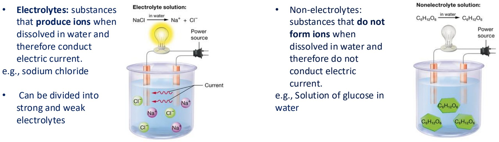
Ions in solution make an electrolyte solution; only whole neutral molecules make a non-electrolyte solution.
Question 5 of 86
Electrolytes are substances that:
A. Always precipitate in water
B. Only dissolve in oils
C. Do not form ions in water and do not conduct electric current
D. Produce ions when dissolved in water and therefore conduct electric current
D. Produce ions when dissolved in water and therefore conduct electric current
Electrolytes: substances that produce ions when dissolved in water and therefore conduct electric current, e.g. sodium chloride.
Ions are charged carriers, so they let electricity flow through the water.
Question 6 of 86
Which is given in the lecture as an example of a non-electrolyte solution?
A. Acetic acid in water
B. Hydrochloric acid in water
C. Sodium chloride in water
D. Glucose in water
D. Glucose in water
Non-electrolytes: substances that do not form ions when dissolved in water and therefore do not conduct electric current, e.g. a solution of glucose in water (C₆H₁₂O₆ → C₆H₁₂O₆ in water).
Glucose dissolves as whole molecules, so there are no charges to carry current.
Question 7 of 86
In the lecture figure, the bulb lights up when the electrodes are placed in a NaCl solution but not in a glucose solution. Why?
A. Glucose is insoluble in water
B. Glucose molecules block the electrodes
C. NaCl solution is hotter
D. NaCl produces Na⁺ and Cl⁻ ions that carry current; glucose stays as neutral molecules
D. NaCl produces Na⁺ and Cl⁻ ions that carry current; glucose stays as neutral molecules
NaCl → Na⁺ + Cl⁻ in water, and the ions conduct current (bulb on). C₆H₁₂O₆ dissolves as neutral molecules, so no current flows (bulb off).
No ions, no current, no light.
Question 8 of 86
Electrolytes can be divided into strong and weak electrolytes.
True
False
True
Electrolyte solutions can be divided into strong and weak electrolytes.
Some electrolytes split fully into ions, others only partly.
Question 9 of 86
A solution of a non-electrolyte conducts electric current well.
True
False
False
Non-electrolytes do not form ions when dissolved in water and therefore do not conduct electric current.
Current needs charged particles, and non-electrolytes give none.
Question 10 of 86
A drug dissolves in water and the solution conducts electricity. The drug is most likely:
A. Insoluble
B. A suspension
C. A non-electrolyte
D. An electrolyte
D. An electrolyte
Conduction of electric current means ions are present, so the substance is an electrolyte.
If it conducts, there must be ions, so it is an electrolyte.
2. Strong & Weak Electrolytes
8 questions
Question 11 of 86
Strong electrolytes:
A. Exist mainly as unionised molecules
B. Are only partially ionised in water
C. Never conduct electric current
D. Exist almost completely in ionic form in dilute and moderately concentrated aqueous solutions
D. Exist almost completely in ionic form in dilute and moderately concentrated aqueous solutions
Strong electrolytes exist almost completely in ionic form in dilute and moderately concentrated aqueous solutions.
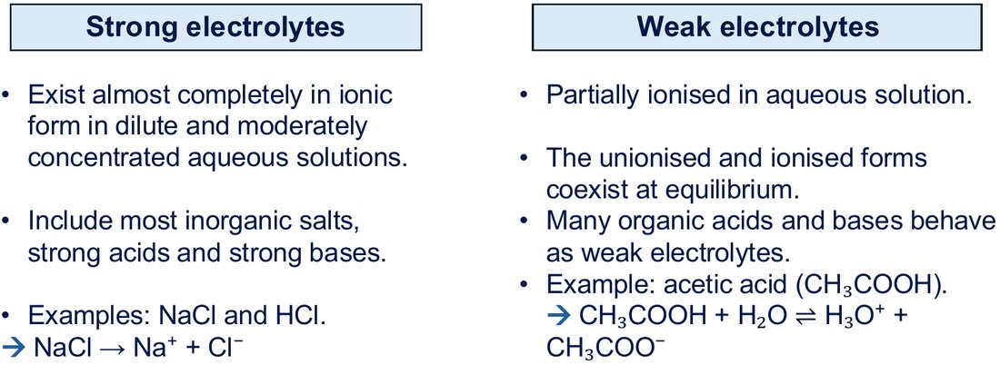
Strong = (almost) all of it splits into ions.
Question 12 of 86
Which group is listed as strong electrolytes?
A. Many organic acids and bases
B. Non-polar oils
C. Most inorganic salts, strong acids and strong bases
D. Sugars such as glucose
C. Most inorganic salts, strong acids and strong bases
Strong electrolytes include most inorganic salts, strong acids and strong bases, e.g. NaCl and HCl.
Think of table salt and hydrochloric acid.
Question 13 of 86
Weak electrolytes are:
A. Never ionised in water
B. Completely ionised in water
C. Partially ionised in aqueous solution, with unionised and ionised forms coexisting at equilibrium
D. Always inorganic salts
C. Partially ionised in aqueous solution, with unionised and ionised forms coexisting at equilibrium
Weak electrolytes are partially ionised in aqueous solution; the unionised and ionised forms coexist at equilibrium.
Weak = only some molecules split, and both forms live together.
Question 14 of 86
Many organic acids and bases behave as:
A. Non-electrolytes
B. Strong electrolytes
C. Weak electrolytes
D. Insoluble salts
C. Weak electrolytes
Many organic acids and bases behave as weak electrolytes, e.g. acetic acid.
Most drug molecules are organic, so most are weak electrolytes.
Why is the ionisation of acetic acid written with a double arrow (⇌) while that of NaCl uses a single arrow (→)?
A. Acetic acid is only partially ionised, so ionised and unionised forms coexist at equilibrium; NaCl ionises almost completely
B. NaCl is a weak electrolyte
C. The double arrow means the reaction is very fast
D. Acetic acid does not ionise at all
A. Acetic acid is only partially ionised, so ionised and unionised forms coexist at equilibrium; NaCl ionises almost completely
NaCl → Na⁺ + Cl⁻ (strong: almost completely ionic). CH₃COOH + H₂O ⇌ H₃O⁺ + CH₃COO⁻ (weak: partial ionisation, equilibrium between both forms).
Double arrow = traffic in both directions, so both forms are present.
Question 17 of 86
HCl is classified as a weak electrolyte.
True
False
False
HCl is a strong acid; strong acids are strong electrolytes (example given: NaCl and HCl).
HCl splits almost completely into ions.
Question 18 of 86
A drug that is an organic weak base dissolves in water. Which description fits best?
A. It cannot dissolve in water at all
B. Part of it exists as ions and part as unionised molecules
C. None of it can ever ionise
D. All of it exists as ions
B. Part of it exists as ions and part as unionised molecules
Organic bases often behave as weak electrolytes: partially ionised, with ionised and unionised forms at equilibrium.
Weak electrolytes are a mixture of the two forms.
3. Weak Electrolytes & Solubility
5 questions
Question 19 of 86
Many pharmaceutical drugs are:
A. Weak acids or weak bases
B. Inorganic salts only
C. Strong bases
D. Strong acids
A. Weak acids or weak bases
Many pharmaceutical drugs are weak acids or weak bases, so they may exist in both unionised and ionised forms in aqueous solution.
Most drugs are organic molecules that only partly ionise.
Question 20 of 86
The relative proportion of ionised and unionised forms of a weak electrolyte depends mainly on:
A. The size of the container
B. Only the temperature
C. The pH of the solution and the pKa of the drug
D. The colour and odour of the drug
C. The pH of the solution and the pKa of the drug
The relative proportion of these forms depends mainly on the pH of the solution and the pKa of the drug.
pH is the environment, pKa is the drug's own character: together they decide the balance.
Question 21 of 86
Which form of a weak electrolyte is generally more water-soluble?
A. The ionised form
B. Neither form dissolves in water
C. Both are always equally soluble
D. The unionised form
A. The ionised form
The ionised form is generally more water-soluble than the corresponding unionised form.
Charged ions attract polar water molecules strongly, so they dissolve better.
Question 22 of 86
Changes in pH can markedly alter the total aqueous solubility of weakly acidic and weakly basic drugs.
True
False
True
Because pH changes the proportion of the more soluble ionised form, it can markedly alter the total aqueous solubility of weak acids and weak bases.
Change the pH, change the share of ions, change the solubility.
Question 23 of 86
A weakly acidic drug is more soluble in a solution where a larger fraction of it is ionised. This is because:
A. The ionised form is generally more water-soluble than the unionised form
B. The unionised form is always more water-soluble
C. Ionisation decreases water solubility
D. pH has no effect on ionisation
A. The ionised form is generally more water-soluble than the unionised form
More ionisation → more of the more water-soluble ionised form → higher total aqueous solubility.
More ions means more of the water-loving form.
4. Effect of Additives: Salting In & Salting Out
12 questions
Question 24 of 86
Why can additives change drug solubility in a formulation?
A. They may interact with the solute, the solvent, or both
B. They only change the colour of the product
C. They never interact with anything
D. They always react chemically to destroy the drug
A. They may interact with the solute, the solvent, or both
Pharmaceutical formulations commonly contain additional components alongside the drug and solvent. These components may interact with the solute, solvent, or both, altering the solubility of the drug.
Extra ingredients can change how the drug and water "get along".
Question 25 of 86
The presence of an additive always increases drug solubility.
True
False
False
Depending on the system, the presence of an additive may increase or decrease solubility.
Additives can help or hurt solubility.
Question 26 of 86
The effects of additives on solubility are important when considering:
A. Only the price of the product
B. Only the colour of the product
C. Both formulation performance and physical stability
D. Only the taste of the product
C. Both formulation performance and physical stability
These effects are important when considering both formulation performance and physical stability.
If the drug precipitates, the product fails and becomes unstable.
Question 27 of 86
Which three examples of additive effects are given in the lecture?
A. Filtration, sterilisation, granulation
B. Cosolvency, complexation, micellisation
C. Hydrolysis, oxidation, photolysis
D. Salting in, salting out, common-ion effect
D. Salting in, salting out, common-ion effect
Examples of the effect of additives on solubility: salting in, salting out and the common-ion effect.
Two "salting" effects plus the common ion.
Question 28 of 86
Salting in refers to:
A. An increase in the solubility of a solute following the addition of certain electrolytes
B. Precipitation caused by a common ion
C. Adding table salt to improve taste
D. A decrease in the solubility of a nonelectrolyte after adding an electrolyte
A. An increase in the solubility of a solute following the addition of certain electrolytes
Salting in refers to an increase in the solubility of a solute following the addition of certain electrolytes.
Salting IN = the salt pulls more solute IN to the solution.
Question 29 of 86
In salting in, what happens to the added electrolyte?
A. It forms micelles
B. It evaporates
C. It dissociates into ions, which become hydrated in the aqueous solution
D. It remains as undissolved crystals
C. It dissociates into ions, which become hydrated in the aqueous solution
The added electrolyte dissociates into ions, which become hydrated in the aqueous solution. The ions modify the intermolecular interactions and solvent environment surrounding the solute.
The salt splits into ions that get surrounded by water.
Question 30 of 86
In systems showing salting in, the changes caused by the ions make:
A. The dissolved state more favourable relative to solute–solute association, so equilibrium shifts towards more dissolved solute
B. The solvent evaporate faster
C. Solute–solute association more favourable, so the solute precipitates
D. The solute form a separate oily layer
A. The dissolved state more favourable relative to solute–solute association, so equilibrium shifts towards more dissolved solute
In systems showing salting in, these changes make the dissolved state more favourable relative to solute–solute association. Consequently, the equilibrium shifts towards a greater concentration of dissolved solute.
The solute prefers being in water over sticking to itself.
Question 31 of 86
Salting out refers to:
A. The increase in solubility of a solute after adding certain electrolytes
B. The decrease in solubility of a nonelectrolyte in an aqueous solution following the addition of an electrolyte
C. The removal of salt from a solution by filtration
D. The increase in solubility caused by a surfactant
B. The decrease in solubility of a nonelectrolyte in an aqueous solution following the addition of an electrolyte
Salting out refers to the decrease in solubility of a nonelectrolyte in an aqueous solution following the addition of an electrolyte.
Salting OUT = the salt pushes the solute OUT of the solution.
Question 32 of 86
What is the mechanism of salting out at higher electrolyte concentrations?
A. The electrolyte lowers the pH, ionising the nonelectrolyte
B. The ions form micelles that trap the nonelectrolyte
C. The ions react chemically with the nonelectrolyte to form a salt
D. Water molecules are strongly attracted to and solvate the ions, changing the solvent environment available to the nonelectrolyte
D. Water molecules are strongly attracted to and solvate the ions, changing the solvent environment available to the nonelectrolyte
At higher electrolyte concentrations, water molecules are strongly attracted to and solvate the ions. This changes the solvent environment available to the nonelectrolyte and can reduce its solubility in water.
The ions "steal" the water, leaving less for the nonelectrolyte.
Question 33 of 86
As the concentration of electrolyte increases during salting out, the nonelectrolyte may eventually:
A. Turn into an electrolyte
B. Become more soluble without limit
C. Form a cyclodextrin complex
D. Separate or precipitate from solution
D. Separate or precipitate from solution
As the concentration of electrolyte increases, the nonelectrolyte may eventually separate or precipitate from solution.
Too much salt and the solute drops out.
Question 34 of 86
Adding an electrolyte to an aqueous solution of a nonelectrolyte causes it to precipitate. This is an example of:
A. Micellar solubilization
B. Cosolvency
C. Salting out
D. Salting in
C. Salting out
Decrease in solubility of a nonelectrolyte after adding an electrolyte = salting out.
Solubility went down, so it is salting out.
Question 35 of 86
Adding a certain electrolyte increases the solubility of a solute. This is called:
A. Salting in
B. Salting out
C. Common-ion effect
D. Salt formation
A. Salting in
Salting in = an increase in the solubility of a solute following the addition of certain electrolytes.
Solubility went up, so it is salting in.
5. Common-Ion Effect
6 questions
Question 36 of 86
The common-ion effect refers to:
A. The increase in solubility caused by a cosolvent
B. The increase in solubility of any solute when an electrolyte is added
C. The formation of micelles above the CMC
D. The decrease in solubility of a sparingly soluble ionic compound when a soluble compound containing a common ion is added
D. The decrease in solubility of a sparingly soluble ionic compound when a soluble compound containing a common ion is added
The common-ion effect refers to the decrease in solubility of a sparingly soluble ionic compound when a soluble compound containing a common ion is added to the solution.
Adding more of an ion that is already there pushes the solid back out.
Question 37 of 86
How does the added common ion decrease solubility?
A. It shifts the dissolution equilibrium toward the undissolved solid
B. It shifts the equilibrium toward more dissolved ions
C. It forms an inclusion complex with the solute
D. It increases the polarity of water
A. It shifts the dissolution equilibrium toward the undissolved solid
The added common ion shifts the dissolution equilibrium toward the undissolved solid, decreasing its solubility and potentially causing precipitation.
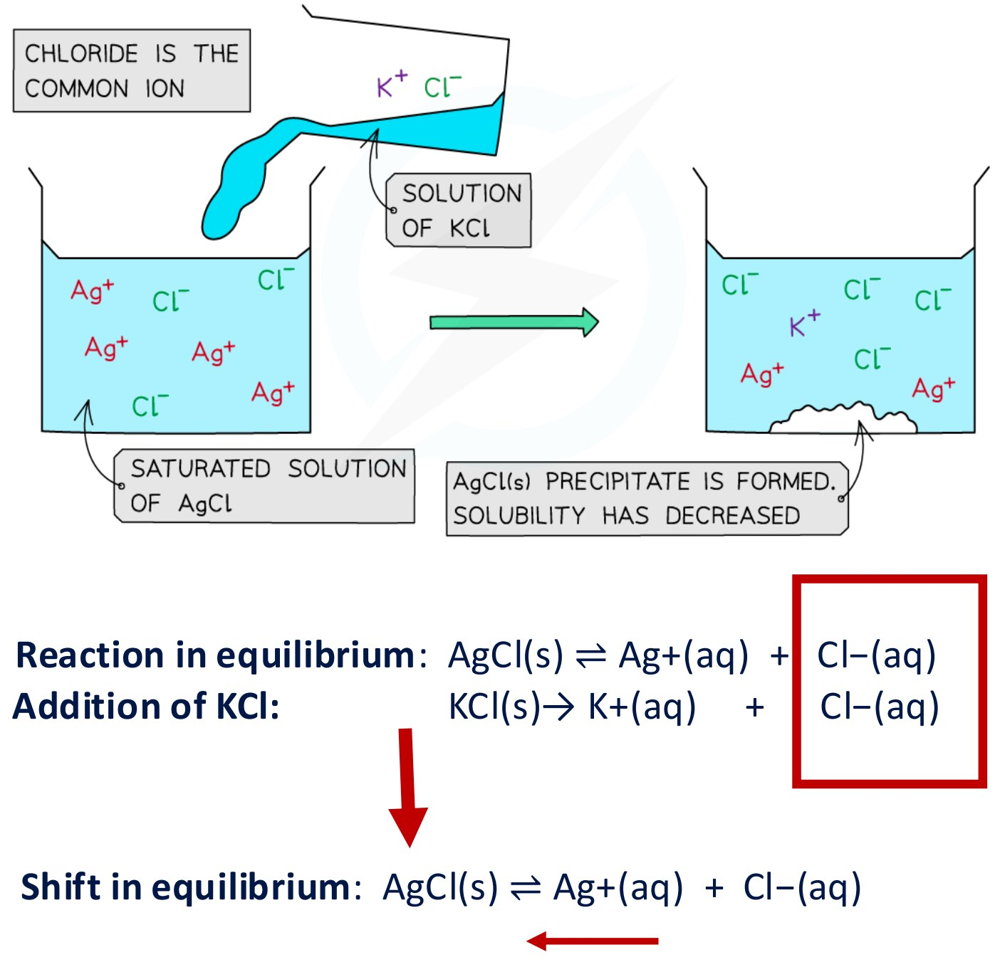
The equilibrium "pushes back" against the extra ion by making more solid.
Question 38 of 86
In the lecture example, KCl is added to a saturated solution of AgCl. Which ion is the common ion?
A. Ag⁺
B. Cl⁻
C. K⁺
D. OH⁻
B. Cl⁻
AgCl(s) ⇌ Ag⁺(aq) + Cl⁻(aq) and KCl(s) → K⁺(aq) + Cl⁻(aq). Both produce Cl⁻, so chloride is the common ion.
The ion found in both compounds is chloride.
Question 39 of 86
What is the result of adding KCl to a saturated AgCl solution?
A. Ag⁺ concentration increases
B. AgCl becomes more soluble
C. The Cl⁻ concentration increases and AgCl precipitates (solubility of AgCl decreases)
D. KCl precipitates
C. The Cl⁻ concentration increases and AgCl precipitates (solubility of AgCl decreases)
Addition of KCl increases the concentration of Cl⁻; the equilibrium AgCl(s) ⇌ Ag⁺(aq) + Cl⁻(aq) shifts to the left, resulting in precipitation of AgCl. Solubility has decreased.
Too much chloride, so some Ag⁺ and Cl⁻ join back into solid AgCl.
Question 40 of 86
Adding NaCl to a saturated solution of AgCl would:
A. Increase the solubility of AgCl
B. Dissolve the AgCl completely
C. Decrease the solubility of AgCl (common-ion effect, Cl⁻ is common)
D. Have no effect because Na⁺ is not in AgCl
C. Decrease the solubility of AgCl (common-ion effect, Cl⁻ is common)
NaCl → Na⁺ + Cl⁻ increases [Cl⁻], the ion shared with AgCl(s) ⇌ Ag⁺ + Cl⁻, so the equilibrium shifts to the left and AgCl precipitates, exactly like the KCl example.
Any soluble chloride supplies the common ion.
Question 41 of 86
Which added compound would show a common-ion effect on a saturated AgCl solution?
A. Water
B. Glucose
C. AgNO₃ (supplies Ag⁺)
D. Ethanol
C. AgNO₃ (supplies Ag⁺)
AgNO₃ is a soluble compound that supplies Ag⁺, an ion common to AgCl(s) ⇌ Ag⁺ + Cl⁻; extra Ag⁺ shifts the equilibrium to the left and decreases AgCl solubility.
The common ion can be either of the two ions, here silver.
6. Strategies: pH Adjustment & Salt Formation
14 questions
Question 42 of 86
Why are strategies to improve solubility needed?
A. Drugs are always too soluble
B. High solubility makes drugs toxic
C. Solubility does not affect formulation
D. Poor aqueous solubility may limit drug formulation and performance
D. Poor aqueous solubility may limit drug formulation and performance
Poor aqueous solubility may limit drug formulation and performance. Different formulation approaches can be used to increase solubility or the amount of drug maintained in aqueous phase.
A drug that will not dissolve is hard to make into a product and to absorb.
Question 43 of 86
The most appropriate solubility-enhancement approach depends on:
A. The name of the manufacturer
B. The physicochemical properties of the drug and the formulation system
C. The patient's age only
D. The colour of the tablet
B. The physicochemical properties of the drug and the formulation system
The most appropriate approach depends on the physicochemical properties of the drug and the formulation system.
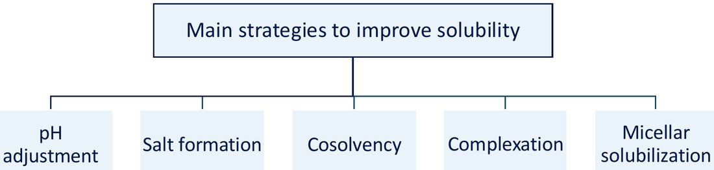
Choose the tool that fits the drug.
Question 44 of 86
Which is NOT one of the five main strategies to improve solubility listed in the lecture?
A. pH adjustment
B. Salting out
C. Micellar solubilization
D. Cosolvency
B. Salting out
Main strategies: pH adjustment, salt formation, cosolvency, complexation and micellar solubilization. Salting out decreases solubility.
Salting out lowers solubility, so it cannot be a strategy to improve it.
Question 45 of 86
pH adjustment is applicable mainly to:
A. Weak acids and weak bases
B. Strong electrolytes such as NaCl
C. Non-electrolytes such as glucose
D. Any drug, whatever its structure
A. Weak acids and weak bases
pH adjustment is applicable mainly to weak acids and weak bases, because drug solubility depends on the degree of ionisation.
pH can only help if the drug can switch between ionised and unionised forms.
Question 46 of 86
For a weak acid, how should pH be changed to increase solubility?
A. Decrease pH → ↑ ionisation → ↑ solubility
B. pH has no effect on a weak acid
C. Increase pH → ↑ ionisation → ↑ solubility
D. Increase pH → ↓ ionisation → ↑ solubility
C. Increase pH → ↑ ionisation → ↑ solubility
Weak acid: ↑ pH → ↑ ionisation → ↑ solubility.
Bases pull H⁺ off the acid, so it becomes the charged, soluble form.
Question 47 of 86
For a weak base, how should pH be changed to increase solubility?
A. Decrease pH → ↑ ionisation → ↑ solubility
B. Decrease pH → ↓ ionisation → ↓ solubility
C. Increase pH → ↑ ionisation → ↑ solubility
D. Weak bases cannot be ionised
A. Decrease pH → ↑ ionisation → ↑ solubility
Weak base: ↓ pH → ↑ ionisation → ↑ solubility.
Acid gives H⁺ to the base, making it a charged, soluble cation.
Question 48 of 86
Salt formation converts an ionisable drug to a salt form by:
A. Adding a surfactant above the CMC
B. Reaction with a suitable base or acid
C. Placing it inside a cyclodextrin cavity
D. Mixing it with ethanol
B. Reaction with a suitable base or acid
Reaction with a suitable base or acid can convert an ionisable drug to a salt form.
Acid + base gives a salt.
Question 49 of 86
In the salt form, the drug exists as:
A. A molecule trapped in a micelle
B. An ion associated with an oppositely charged counterion
C. A neutral unionised molecule
D. A molecule inside a cyclodextrin cavity
B. An ion associated with an oppositely charged counterion
In the salt form, the drug exists as an ion associated with an oppositely charged counterion, which may result in greater aqueous solubility than the unionised form.
The drug becomes charged and gets a partner of opposite charge.
Question 50 of 86
Which equation represents salt formation of a weak acid drug?
An acid drug reacts with a base (NaOH) to give its sodium salt.
Question 51 of 86
Tetracaine (a weak base) is converted to a more soluble salt by reaction with HCl. The product is:
A. Tetracaine–cyclodextrin complex
B. Sodium tetracaine
C. Tetracaine hydrochloride
D. Tetracaine micelles
C. Tetracaine hydrochloride
Weak base: B + HCl → BH⁺Cl⁻, e.g. tetracaine → tetracaine hydrochloride.
Base + hydrochloric acid gives a "hydrochloride" salt.
Question 52 of 86
Phenobarbital is a weak acid. Its salt formed with NaOH is:
A. Phenobarbital acetate
B. Phenobarbital hydrochloride
C. Sodium phenobarbital
D. Phenobarbital chloride
C. Sodium phenobarbital
Weak acid: HA + NaOH → Na⁺A⁻ + H₂O, e.g. phenobarbital → sodium phenobarbital.
Acid + sodium hydroxide gives a "sodium" salt.
Question 53 of 86
The increase in solubility achieved by salt formation depends on:
A. Only the colour of the salt
B. Only the container size
C. Nothing; every salt has the same solubility
D. The drug, counterion, pH and properties of the salt form
D. The drug, counterion, pH and properties of the salt form
The increase in solubility depends on the drug, counterion, pH and properties of the salt form.
Not every salt is equally soluble; the partner ion matters.
Question 54 of 86
A weakly basic drug is placed in a solution whose pH is then increased. Its aqueous solubility will most likely:
A. Decrease, because ionisation decreases
B. Increase, because ionisation increases
C. Stay exactly the same
D. Become infinite
A. Decrease, because ionisation decreases
Weak base: ↓ pH → ↑ ionisation → ↑ solubility. So raising the pH does the opposite: ↓ ionisation → ↓ solubility.
Bases like acidic (low pH) conditions; raising pH makes them less soluble.
Question 55 of 86
A drug with no ionisable group (a non-electrolyte) is a good candidate for salt formation.
True
False
False
Salt formation applies to ionisable drugs (weak acids or weak bases) reacting with a suitable base or acid. A non-ionisable drug cannot form a salt this way.
B. The use of a mixture of solvents to increase the solubility of a poorly water-soluble drug
C. The reaction of a drug with an acid
D. The use of surfactants above the CMC
B. The use of a mixture of solvents to increase the solubility of a poorly water-soluble drug
Cosolvency is the use of a mixture of solvents to increase the solubility of a poorly water-soluble drug.
Co-solvent = a helper solvent mixed with water.
Question 57 of 86
Which are examples of water-miscible cosolvents given in the lecture?
A. Sodium chloride and potassium chloride
B. Ethanol, glycerol and propylene glycol
C. Cyclodextrins and surfactants
D. Mineral oil, chloroform and benzene
B. Ethanol, glycerol and propylene glycol
The aqueous solubility of unionised weak electrolytes and poorly water-soluble, relatively non-polar drugs may be increased by adding a water-miscible cosolvent, such as ethanol, glycerol or propylene glycol.
Cosolvents must mix with water, like alcohol and glycerol do.
Question 58 of 86
What is the mechanism of cosolvency?
A. The cosolvent precipitates the drug
B. The cosolvent forms micelles around the drug
C. The cosolvent modifies the polarity of the solvent system, creating a more favourable environment for the unionised drug
D. The cosolvent ionises the drug
C. The cosolvent modifies the polarity of the solvent system, creating a more favourable environment for the unionised drug
Mechanism: the cosolvent modifies the polarity of the solvent system. This creates a more favourable solvent environment for the unionised drug, increasing its solubility.
Adding alcohol makes water a little less polar, closer to what a non-polar drug likes.
Question 59 of 86
The lecture example for cosolvency is phenobarbital, whose solubility increases in mixtures of:
A. Water and cyclodextrin
B. Water and potassium chloride
C. Water and sodium chloride
D. Water, alcohol and glycerol
D. Water, alcohol and glycerol
Example: phenobarbital has low aqueous solubility, but its solubility increases in mixtures of water, alcohol and glycerol.
A mixed solvent dissolves phenobarbital better than water alone.
Question 60 of 86
Complexation is:
A. The permanent covalent destruction of the drug
B. The use of a mixture of solvents
C. The decrease in solubility caused by a common ion
D. The reversible association of a drug with another molecule or ion (complexing agent) to form a complex
D. The reversible association of a drug with another molecule or ion (complexing agent) to form a complex
Complexation is the reversible association of a drug with another molecule or ion (complexing agent) to form a complex.
The drug "holds hands" with a helper molecule, and can let go again.
Question 61 of 86
Which interactions may be involved in complexation?
A. Only ionic precipitation
B. Only nuclear reactions
C. Only covalent bonds
D. Hydrogen bonding, van der Waals, dipole–dipole and hydrophobic interactions
D. Hydrogen bonding, van der Waals, dipole–dipole and hydrophobic interactions
Mechanism: interactions may include hydrogen bonding, van der Waals, dipole–dipole and hydrophobic interactions.
Weak, reversible forces hold the complex together.
Question 62 of 86
How does complexation increase apparent aqueous solubility?
A. It ionises the drug by changing pH
B. It lowers the temperature of the solution
C. It removes water from the solution
D. The complexing agent shields or interacts with poorly water-compatible regions of the drug, forming a sufficiently water-soluble complex
D. The complexing agent shields or interacts with poorly water-compatible regions of the drug, forming a sufficiently water-soluble complex
The complexing agent can shield or interact with poorly water-compatible regions of the drug. Formation of a sufficiently water-soluble complex → ↑ apparent aqueous solubility.
The helper hides the drug's water-hating part.
Question 63 of 86
Cyclodextrins have:
A. A hydrophilic cavity and a hydrophobic exterior
B. A completely hydrophobic structure
C. A hydrophobic cavity and a hydrophilic exterior
D. A completely ionic structure
C. A hydrophobic cavity and a hydrophilic exterior
Cyclodextrins have a hydrophobic cavity and a hydrophilic exterior. Hydrophobic regions of a drug can enter the cavity, becoming shielded from the aqueous environment.
Like a cup that is oily inside and water-friendly outside.
Question 64 of 86
In the itraconazole–HP-β-CD example, which part of itraconazole enters the cyclodextrin cavity?
A. The hydrophobic region of itraconazole
B. The water molecules only
C. The hydroxypropyl groups
D. The hydrophilic outer surface of the cyclodextrin
A. The hydrophobic region of itraconazole
Itraconazole (poorly water-soluble) + hydroxypropyl-β-cyclodextrin (HP-β-CD) → itraconazole–HP-β-CD inclusion complex (increased aqueous solubility). The hydrophobic region of itraconazole enters the hydrophobic internal cavity; the hydrophilic outer surface (hydroxypropyl groups) faces water.
Water-hating part goes inside the water-hating cavity.
Question 65 of 86
Micellar solubilization is:
A. The use of surfactants to increase the apparent aqueous solubility of poorly water-soluble drugs
B. The reaction of a drug with an acid or base
C. The use of a mixture of solvents
D. The reversible association of a drug with a cyclodextrin
A. The use of surfactants to increase the apparent aqueous solubility of poorly water-soluble drugs
Micellar solubilization: the use of surfactants to increase the apparent aqueous solubility of poorly water-soluble drugs.
Surfactants (like soap) build tiny carriers for oily drugs.
Question 66 of 86
Surfactants are:
A. Inorganic salts that fully ionise
B. Water-miscible cosolvents such as glycerol
C. Amphiphilic molecules containing a hydrophilic region and a hydrophobic region
D. Molecules that are completely hydrophobic
C. Amphiphilic molecules containing a hydrophilic region and a hydrophobic region
Surfactants: amphiphilic molecules containing a hydrophilic region and a hydrophobic region.
Amphiphilic = loves both water and oil, with a head and a tail.
Question 67 of 86
Surfactant molecules associate to form micelles:
A. Below the critical micelle concentration (CMC)
B. At any concentration, even very low
C. Only when no water is present
D. Above the critical micelle concentration (CMC)
D. Above the critical micelle concentration (CMC)
Above the critical micelle concentration (CMC), surfactant molecules associate to form micelles. Below the CMC they exist as "free molecules".
CMC is the threshold: enough surfactant must be present before micelles form.
Question 68 of 86
How do micelles increase apparent aqueous solubility?
A. Poorly water-soluble drugs become incorporated into or associated with the micelle, and the micelles remain dispersed in the aqueous phase
B. Micelles ionise the drug
C. Micelles precipitate the drug
D. Micelles change the solvent into oil
A. Poorly water-soluble drugs become incorporated into or associated with the micelle, and the micelles remain dispersed in the aqueous phase
Poorly water-soluble drugs can become incorporated into or associated with the micelle. Micelles remain dispersed in the aqueous phase → ↑ apparent aqueous solubility.
The micelle is a tiny oily bubble that carries the drug through the water.
Question 69 of 86
The graph shows the concentration of a poorly soluble compound in solution versus surfactant concentration. What happens above the concentration marked by the dashed line?
A. The concentration stays constant
B. The concentration falls to zero
C. The compound precipitates completely
D. The concentration of the poorly soluble compound rises steeply as surfactant concentration increases
D. The concentration of the poorly soluble compound rises steeply as surfactant concentration increases
The dashed line is the CMC. Below the CMC the solubility of the poorly soluble compound stays low and almost constant; above the CMC micelles form and the dissolved concentration rises steeply (roughly linearly) with surfactant concentration.
No micelles, no extra carriers; once micelles appear, every extra bit of surfactant carries more drug.
Question 70 of 86
In the micelle diagram of the lecture, surfactant "free molecules" (not yet associated) are found at concentrations:
A. Only when an oil droplet is added
B. Above the CMC (>cmc)
C. Below the CMC (<cmc)
D. Only after solubilization
C. Below the CMC (<cmc)
The figure shows "free molecules" at <cmc, micelles at >cmc, and solubilization when an oil droplet is taken into the micelle.
Below the threshold, surfactants float around alone.
Question 71 of 86
Ethanol is added to water to dissolve a poorly water-soluble, relatively non-polar drug. Which strategy is this?
A. Salt formation
B. Common-ion effect
C. Complexation
D. Cosolvency
D. Cosolvency
Using a mixture of solvents (water + a water-miscible cosolvent such as ethanol) to increase solubility = cosolvency.
Mixing solvents = cosolvency.
Question 72 of 86
A surfactant added below its CMC produces a large increase in apparent drug solubility through micelles.
True
False
False
Micelles form only above the CMC; below the CMC surfactant exists as free molecules and the solubility of the poorly soluble compound stays low.
No micelles below the CMC, so no micellar solubilization.
Question 73 of 86
In a cyclodextrin inclusion complex, the drug is permanently and covalently bonded to the cyclodextrin.
True
False
False
Complexation is a reversible association, held by interactions such as hydrogen bonding, van der Waals, dipole–dipole and hydrophobic interactions.
Complexes are reversible, not permanent bonds.
8. Comparing & Selecting Strategies
13 questions
Question 74 of 86
According to the comparison table, what is the basis for solubility enhancement by pH adjustment?
A. Modifies solvent polarity
B. Drug associates with surfactant micelles
C. Alters drug ionisation
D. Forms a soluble complex with the drug
C. Alters drug ionisation
pH adjustment: alters drug ionisation; particularly useful when the drug is a weak acid or weak base; key consideration: pH change or dilution may cause precipitation.
pH works by switching the drug between charged and uncharged.
Question 75 of 86
For which strategy is the key consideration "pH change or dilution may cause precipitation"?
A. Micellar solubilization
B. Salt formation
C. pH adjustment
D. Complexation
C. pH adjustment
pH adjustment: key consideration: pH change or dilution may cause precipitation.
If the pH that kept the drug ionised changes, the drug can fall out.
Question 76 of 86
Cosolvency is particularly useful when:
A. The drug has greater affinity for a mixed solvent system than for water alone
B. The drug can be accommodated within micelles
C. A suitable drug–counterion combination can be formed
D. The drug is a strong electrolyte
A. The drug has greater affinity for a mixed solvent system than for water alone
Cosolvency: modifies solvent polarity and drug–solvent interactions; useful when the drug has greater affinity for a mixed solvent system than for water alone; key consideration: dilution can reduce solvent strength and cause precipitation. (Note: the slide writes "polarityand", "complexwith" and "etrategies"; these are typing errors for "polarity and", "complex with" and "strategies".)
Cosolvency works if the drug likes the mixture more than plain water.
Question 77 of 86
Salt formation is particularly useful when:
A. A suitable drug–counterion combination can be formed
B. Surfactant is above the CMC
C. The drug has a hydrophobic region that fits a cyclodextrin
D. The drug is a non-electrolyte
A. A suitable drug–counterion combination can be formed
Salt formation: converts an ionisable drug to a salt form; useful when a suitable drug–counterion combination can be formed; solubility depends on the drug, counterion, pH and salt properties.
You need a good partner ion to make a salt.
Question 78 of 86
For complexation, the key consideration is that it:
A. Depends on complex formation and stability
B. Always fails on dilution
C. Depends on surfactant concentration and micelle formation
D. Requires the drug to be a weak acid
A. Depends on complex formation and stability
Complexation: forms a soluble complex with the drug; useful when the drug can associate favourably with a suitable complexing agent; depends on complex formation and stability.
The complex must form and hold together.
Question 79 of 86
For micellar solubilization, the key consideration is that it:
A. Depends on surfactant concentration and micelle formation
B. Depends on pH only
C. Depends on the counterion
D. Depends on adding a common ion
A. Depends on surfactant concentration and micelle formation
Micellar solubilization: drug associates with surfactant micelles; useful when the poorly soluble drug can be accommodated within/associated with micelles; depends on surfactant concentration and micelle formation.
No micelles (below CMC), no solubilization.
Question 80 of 86
Which two strategies have dilution listed as a possible cause of precipitation in the comparison table?
A. Salt formation and micellar solubilization
B. Complexation and salt formation
C. Micellar solubilization and complexation
D. pH adjustment and cosolvency
D. pH adjustment and cosolvency
pH adjustment: "pH change or dilution may cause precipitation". Cosolvency: "Dilution can reduce solvent strength and cause precipitation".
Both depend on a special liquid environment that dilution can destroy.
Question 81 of 86
Strategy selection depends on:
A. Only the drug's colour
B. Only the patient's preference
C. The drug, solvent system, dosage form and conditions the formulation will encounter during manufacture, storage and use
D. Only the cost of the solvent
C. The drug, solvent system, dosage form and conditions the formulation will encounter during manufacture, storage and use
Strategy selection depends on the drug, solvent system, dosage form and conditions the formulation will encounter during manufacture, storage and use.
The chosen method must keep working from the factory to the patient.
Question 82 of 86
The appropriate strategy must maintain adequate solubility under the intended conditions of use.
True
False
True
Key point: the appropriate strategy depends on the properties of the drug and the formulation system and must maintain adequate solubility under the intended conditions of use.
It is not enough to dissolve the drug once; it must stay dissolved.
Question 83 of 86
A drug is a weak base, poorly soluble at neutral pH. Which strategy directly uses its ionisable group?
A. pH adjustment (lowering pH) or forming a hydrochloride salt
B. Using a non-electrolyte additive with no effect
C. Salting out
D. Adding a common ion
A. pH adjustment (lowering pH) or forming a hydrochloride salt
pH adjustment and salt formation both rely on ionisation: weak base, ↓ pH → ↑ ionisation → ↑ solubility; B + HCl → BH⁺Cl⁻ forms a more soluble salt.
An ionisable drug can be made charged, either by pH or by making a salt.
Question 84 of 86
A highly non-polar drug has no ionisable groups. Which strategy is least suitable?
A. pH adjustment
B. Complexation with a cyclodextrin
C. Cosolvency
D. Micellar solubilization
A. pH adjustment
pH adjustment is applicable mainly to weak acids and weak bases; a drug with no ionisable group cannot be ionised by pH. Cosolvency, complexation and micelles do not need ionisation.
No charge to switch on, so pH cannot help.
Question 85 of 86
A drug solution made with a cosolvent is diluted with a large volume of water and the drug precipitates. The most likely reason is:
A. The drug formed a salt
B. Micelles formed above the CMC
C. The common-ion effect
D. Dilution reduced the solvent strength of the mixed solvent
D. Dilution reduced the solvent strength of the mixed solvent
Cosolvency key consideration: dilution can reduce solvent strength and cause precipitation.
More water means the mixture loses its "drug-friendly" character.
Question 86 of 86
A drug with a hydrophobic ring that fits well into a cyclodextrin cavity would be a good candidate for:
A. Complexation
B. Common-ion effect
C. Salting out
D. pH adjustment only
A. Complexation
Complexation is useful when the drug can associate favourably with a suitable complexing agent; hydrophobic regions of the drug can enter the cyclodextrin's hydrophobic cavity.
Good fit in the cup = good complex.
Lecture 5Colligative Properties
102 questions
1. Colligative Properties & Particle Number
13 questions
Question 1 of 102
Colligative properties are properties of solutions that depend mainly on:
A. The chemical identity of the solute
B. The colour of the solute
C. The number of dissolved solute particles
D. The molecular shape of the solvent
C. The number of dissolved solute particles
Colligative properties: properties of solutions that depend mainly on the number of dissolved solute particles, rather than their chemical identity.
Count the particles, not what they are: one glucose molecule and one urea molecule count the same.
Question 2 of 102
Which is NOT one of the four main colligative properties?
A. Elevation of the boiling point
B. Viscosity
C. Osmotic pressure
D. Lowering of the vapor pressure
B. Viscosity
The four main colligative properties: lowering of the vapor pressure, elevation of the boiling point, depression of the freezing point, and osmotic pressure.
Remember: ↓ vapor pressure, ↑ boiling point, ↓ freezing point, osmotic pressure.
Question 3 of 102
Adding a non-volatile solute to a solvent causes the freezing point to:
A. Decrease (depression)
B. Become equal to the boiling point
C. Stay exactly the same
D. Increase (elevation)
A. Decrease (depression)
The four colligative changes: ↓ vapor pressure, ↑ boiling point, ↓ freezing point, and osmotic pressure.
This is why salt melts ice on roads: the freezing point goes down.
Question 4 of 102
The pharmaceutical relevance of colligative properties is that they:
A. Determine the colour of tablets
B. Measure the pharmacological effect of the drug
C. Replace the need for excipients
D. Provide a basis for understanding and controlling the physicochemical properties of pharmaceutical solutions
D. Provide a basis for understanding and controlling the physicochemical properties of pharmaceutical solutions
Pharmaceutical relevance: colligative properties provide a basis for understanding and controlling the physicochemical properties of pharmaceutical solutions.
They help us design solutions such as injections and eye drops correctly.
Question 5 of 102
The van’t Hoff factor (i) accounts for:
A. The molecular weight of the solute
B. The volume of the solvent
C. The temperature of the solution
D. The number of particles a solute produces in solution
D. The number of particles a solute produces in solution
Van’t Hoff factor (i): accounts for the number of particles a solute produces in solution. Colligative effect ∝ i × concentration.
i tells you how many pieces one unit of solute breaks into.
Question 6 of 102
According to the lecture, the colligative effect is proportional to:
A. Temperature only
B. Concentration ÷ i
C. i × concentration
D. Molecular weight × concentration
C. i × concentration
Colligative effect ∝ i × concentration. More dissolved particles → greater colligative effect.
More pieces in the solution → bigger effect.
Question 7 of 102
What is the ideal van’t Hoff factor of CaCl₂?
A. 3
B. 4
C. 1
D. 2
A. 3
CaCl₂ → Ca²⁺ + 2Cl⁻ = 3 particles, so i = 3 (ideal values assume complete dissociation).
One calcium ion plus two chloride ions = 3 particles.
Question 8 of 102
What is the ideal van’t Hoff factor of glucose (C₆H₁₂O₆)?
A. 3
B. 2
C. 6
D. 1
D. 1
Glucose stays as C₆H₁₂O₆ in solution (it does not dissociate), so i = 1.
Glucose dissolves but does not split into ions.
Question 9 of 102
NaCl in solution gives Na⁺ + Cl⁻, so its ideal i is 2.
True
False
True
NaCl → Na⁺ + Cl⁻ = 2 particles; ideal i = 2.
One salt unit → two ions.
Question 10 of 102
The ideal van’t Hoff values in the table assume:
A. Half dissociation
B. Dissociation only at high temperature
C. No dissociation
D. Complete dissociation
D. Complete dissociation
“Ideal values assume complete dissociation.”
Ideal = every salt unit fully splits into its ions.
Question 11 of 102
The same amount (moles) of different solutes always produces the same number of particles in solution.
True
False
False
The same amount of different solutes may produce a different number of particles in solution (e.g. 1 mol glucose → 1 mol particles; 1 mol CaCl₂ → 3 mol particles).
Salts split into ions; sugars do not.
Question 12 of 102
Which 0.1 molal aqueous solution has the greatest colligative effect (assume ideal dissociation)?
A. NaCl
B. CaCl₂
C. Sucrose
D. Glucose
B. CaCl₂
Colligative effect ∝ i × concentration. At the same concentration: CaCl₂ (i = 3) > NaCl (i = 2) > glucose = sucrose (i = 1).
Same concentration, so the solute with the most particles wins.
Question 13 of 102
Glucose and sucrose solutions of the same molality have the same colligative effect.
True
False
True
Both are non-electrolytes (i = 1), so equal molality gives equal numbers of particles; the chemical identity does not matter.
Colligative properties count particles, not what kind they are.
2. Vapor-Pressure Lowering & Raoult’s Law
13 questions
Question 14 of 102
Vapor pressure is the pressure exerted by vapor molecules above a liquid when:
A. The solid and liquid phases are in equilibrium
B. The liquid is completely evaporated
C. The liquid and vapor phases are at equilibrium at a given temperature
D. The liquid is boiling at 100 °C only
C. The liquid and vapor phases are at equilibrium at a given temperature
Vapor pressure: the pressure exerted by vapor molecules above a liquid when the liquid and vapor phases are at equilibrium at a given temperature.
It is the “push” of the escaped vapor molecules in a closed container.
Question 15 of 102
When a non-volatile solute is added to a volatile solvent, the vapor pressure:
A. First increases then decreases
B. Decreases
C. Increases
D. Stays the same
B. Decreases
The solute does not contribute to the vapor phase; the escaping tendency of the solvent molecules decreases; fewer solvent molecules are present in the vapor phase at equilibrium → vapor pressure decreases.
Solute particles “take up space” at the surface, so fewer solvent molecules escape.
Question 16 of 102
Which statement explains vapor-pressure lowering by a non-volatile solute?
A. The escaping tendency of the solvent molecules decreases
B. The temperature of the solution rises
C. The solvent molecules become heavier
D. The solute molecules evaporate and add to the vapor
A. The escaping tendency of the solvent molecules decreases
When a non-volatile solute is added: the solute does not contribute to the vapor phase, and the escaping tendency of the solvent molecules decreases → fewer solvent molecules in the vapor → lower vapor pressure.
Fewer solvent molecules can leave the liquid, so the pressure of the vapor is lower.
Question 17 of 102
A non-volatile solute contributes to the vapor phase above the solution.
True
False
False
The non-volatile solute does not contribute to the vapor phase.
Non-volatile = does not evaporate.
Question 18 of 102
Two closed containers hold the same volatile solvent at the same temperature; one contains only the pure solvent and the other also contains a dissolved non-volatile solute. Which container shows the higher vapor pressure?
A. The container without solute
B. Both show identical vapor pressure
C. The container with solute
D. It cannot be predicted
A. The container without solute
The pure solvent (without solute) has the higher vapor pressure; adding solute lowers the vapor pressure. More dissolved solute particles → greater vapor pressure lowering.
Pure solvent = more molecules free to escape → higher pressure.
Question 19 of 102
Raoult’s law states that the vapor pressure of a solvent in a solution is proportional to:
A. Its molecular weight
B. The volume of the container
C. Its mole fraction
D. The boiling point of the solute
C. Its mole fraction
Raoult’s law: the vapor pressure of a solvent in a solution is proportional to its mole fraction: P = Xsolvent · Psolvent.
Less solvent “share” in the mixture → less solvent vapor.
Question 20 of 102
Raoult’s law describes the relationship between:
A. Molality and boiling-point elevation
B. Molarity and osmotic pressure
C. Solute concentration and vapor-pressure lowering
D. Temperature and freezing point
C. Solute concentration and vapor-pressure lowering
Raoult’s law describes the relationship between solute concentration and vapor-pressure lowering.
Raoult’s law is the vapor-pressure law: more solute → bigger drop in vapor pressure.
Question 21 of 102
In Raoult’s law, P = Xsolvent · Psolvent, the term Psolvent is:
A. The vapor pressure of the solvent above the solution
B. The mole fraction of solvent
C. The vapor pressure of the pure solvent
D. The vapor-pressure lowering
C. The vapor pressure of the pure solvent
P = vapor pressure of solvent above the solution; Xsolvent = mole fraction of solvent; Psolvent = vapor pressure of pure solvent.
Psolvent is the reference value with no solute added.
Question 22 of 102
The vapor-pressure lowering (ΔP) is calculated as:
A. ΔP = Psolvent × Psolution
B. ΔP = Xsolvent + Psolvent
C. ΔP = Psolution − Psolvent
D. ΔP = Psolvent − Psolution
D. ΔP = Psolvent − Psolution
ΔP = Psolvent − Psolution (pure solvent minus solution), which is a positive number because the solution has the lower vapor pressure.
Lowering = what you started with minus what is left.
Question 23 of 102
As solute concentration increases:
A. Xsolvent increases and ΔP decreases
B. Xsolvent decreases and ΔP increases
C. Xsolvent and ΔP both stay constant
D. Xsolvent and ΔP both decrease
B. Xsolvent decreases and ΔP increases
As solute concentration increases → Xsolvent decreases → ΔP increases.
More solute = smaller solvent share = bigger drop in vapor pressure.
Question 24 of 102
A solution contains 1 mol of a non-volatile solute in 19 mol of water. The vapor pressure of pure water at this temperature is 23.8 mmHg. What is the vapor pressure of water above the solution?
A solution has Xsolvent = 1 (pure solvent). According to Raoult’s law, its vapor pressure equals the vapor pressure of the pure solvent.
True
False
True
P = 1 × Psolvent = Psolvent, so ΔP = 0.
No solute → no lowering.
3. Boiling-Point Elevation
11 questions
Question 27 of 102
The normal boiling point is the temperature at which the vapor pressure of the liquid becomes equal to:
A. The osmotic pressure
B. The external atmospheric pressure of 760 mmHg (1 atm)
C. Zero
D. The vapor pressure of the solute
B. The external atmospheric pressure of 760 mmHg (1 atm)
Normal boiling point: the temperature at which the vapor pressure of the liquid becomes equal to the external atmospheric pressure of 760 mmHg (1 atm).
A liquid boils when its vapor can push as hard as the air above it.
Question 28 of 102
Why does a solution of a non-volatile solute boil at a higher temperature than the pure solvent?
A. The solute increases the external pressure
B. The solute lowers the vapor pressure, so a higher temperature is needed for the vapor pressure to reach the external pressure
C. The solute raises the vapor pressure
D. The solute evaporates first
B. The solute lowers the vapor pressure, so a higher temperature is needed for the vapor pressure to reach the external pressure
The solute lowers the vapor pressure of the solvent. Boiling occurs when the vapor pressure equals the external pressure. Therefore, a higher temperature is required for the solution to boil: Tb(solution) > Tb(pure solvent).
Starting from a lower vapor pressure, you must heat more to reach 760 mmHg.
Question 29 of 102
In the vapor pressure–temperature graph of a solvent and its solution, the lower curve belongs to the solution, and ΔTb is the difference between T and T0 at 760 mmHg.
True
False
True
The solution curve lies below the solvent curve (lower vapor pressure, ΔP). It reaches 760 mmHg at T, higher than the solvent’s T0; ΔTb = T − T0.
Lower curve → reaches 760 later → boils hotter.
Question 30 of 102
The boiling-point elevation depends on:
A. The number of dissolved particles and the molality of the solution
B. The volume of the container
C. The chemical identity of the solute only
D. The colour of the solution
A. The number of dissolved particles and the molality of the solution
The boiling-point elevation depends on the number of dissolved particles and the molality of the solution: ΔTb = iKbm.
It is colligative, so it depends on how many particles per kg of solvent.
Question 31 of 102
In ΔTb = iKbm, Kb is:
A. The van’t Hoff factor
B. The molal boiling-point elevation constant of the solvent
C. The boiling point of the pure solvent
D. The molarity of the solution
B. The molal boiling-point elevation constant of the solvent
ΔTb = boiling-point elevation; i = van’t Hoff factor; Kb = molal boiling-point elevation constant of the solvent; m = molality.
Kb belongs to the solvent (each solvent has its own value).
Question 32 of 102
The concentration term “m” in ΔTb = iKbm stands for:
A. Molality (mol solute per kg solvent)
B. Mass of solute in grams
C. Mole fraction
D. Molarity (mol per litre of solution)
A. Molality (mol solute per kg solvent)
m = molality, i.e. moles of solute per kilogram of solvent.
Small m = molality (per kg); capital M = molarity (per litre).
Question 33 of 102
The boiling point of the solution is calculated as:
A. Tb(solution) = Tb° − ΔTb
B. Tb(solution) = Tb° + ΔTb
C. Tb(solution) = ΔTb − Tb°
D. Tb(solution) = Tb° × ΔTb
B. Tb(solution) = Tb° + ΔTb
Tb(solution) = Tb° + ΔTb, because the boiling point is elevated.
Boiling point goes up, so add.
Question 34 of 102
The graph of boiling point against molality of sucrose shows that as molality increases, the boiling point:
A. Stays constant
B. Decreases linearly
C. First rises then falls
D. Increases linearly
D. Increases linearly
The graph shows a straight line rising with molality, consistent with ΔTb = iKbm. (Note: on this slide the line starts at about 98 °C and rises about 3 °C per molal; for water the boiling point at 1 atm is 100 °C and Kb ≈ 0.512 °C·kg/mol, so use the graph only for its linear trend.)
Double the molality → double the elevation.
Question 35 of 102
What is the boiling point of a solution of 0.50 mol NaCl in 1.00 kg of water? (Kb of water = 0.512 °C·kg/mol, Tb° = 100 °C, assume ideal dissociation)
A. 100.26 °C
B. 99.49 °C
C. 101.02 °C
D. 100.51 °C
D. 100.51 °C
ΔTb = iKbm i = 2 (Na⁺ + Cl⁻); m = 0.50 mol / 1.00 kg = 0.50 mol/kg ΔTb = 2 × 0.512 × 0.50 = 0.512 °C Tb = 100 + 0.512 = 100.51 °C
Do not forget i = 2 for NaCl (100.26 °C is the answer if you forget it).
Question 36 of 102
1.2 g of urea (MW = 60 g/mol, non-electrolyte) is dissolved in 200 g of water. What is ΔTb? (Kb = 0.512 °C·kg/mol)
A. 0.0512 °C
B. 0.0102 °C
C. 0.512 °C
D. 0.1024 °C
A. 0.0512 °C
Moles of urea = 1.2 / 60 = 0.020 mol m = 0.020 mol / 0.200 kg = 0.10 mol/kg ΔTb = iKbm = 1 × 0.512 × 0.10 = 0.0512 °C
Convert grams of water to kg before dividing.
Question 37 of 102
Adding a non-volatile solute makes a solution boil at a lower temperature than the pure solvent.
True
False
False
Tb(solution) > Tb(pure solvent): the boiling point is elevated.
Lower vapor pressure → need more heat to boil.
4. Freezing-Point Depression
14 questions
Question 38 of 102
The freezing point is the temperature at which:
A. The solid and liquid phases co-exist in equilibrium at 760 mmHg (1 atm)
B. The vapor pressure equals 760 mmHg
C. All solvent has evaporated
D. The liquid and vapor phases are in equilibrium
A. The solid and liquid phases co-exist in equilibrium at 760 mmHg (1 atm)
Freezing point: the temperature at which the solid and liquid phases co-exist in equilibrium at 760 mmHg (1 atm).
At the freezing point, molecules join and leave the solid at the same rate.
Question 39 of 102
Why is the freezing point of a solution lower than that of the pure solvent?
A. Solute particles raise the external pressure
B. Solute particles interfere with the formation of the ordered solid structure of the solvent
C. Solute particles freeze first and warm the solvent
D. Solute particles increase the vapor pressure
B. Solute particles interfere with the formation of the ordered solid structure of the solvent
Solute particles interfere with the formation of the ordered solid structure of the solvent → a lower temperature is required for the solvent to freeze → Tf(solution) < Tf°(pure solvent).
Solute particles get in the way of the neat crystal, so you must cool it more.
Question 40 of 102
In ΔTf = iKfm, Kf is:
A. A constant that depends on the solute
B. The freezing point of the pure solvent
C. The molarity of the solution
D. The molal freezing-point depression constant of the solvent
D. The molal freezing-point depression constant of the solvent
ΔTf = freezing-point depression; i = van’t Hoff factor; Kf = molal freezing-point depression constant of the solvent; m = molality.
Kf is a property of the solvent (water ≈ 1.86, benzene 5.12).
Question 41 of 102
The freezing point of the solution is calculated as:
A. Tf(solution) = ΔTf ÷ Tf°
B. Tf(solution) = Tf° − ΔTf
C. Tf(solution) = iKfm
D. Tf(solution) = Tf° + ΔTf
B. Tf(solution) = Tf° − ΔTf
Tf(solution) = Tf° − ΔTf, because the freezing point is depressed.
Freezing point goes down, so subtract.
Question 42 of 102
The freezing-point depression depends on the number of dissolved particles and the molality of the solution.
True
False
True
Stated on the slide; ΔTf = iKfm.
More particles per kg of solvent → lower freezing point.
Question 43 of 102
The graph shows the normal freezing point of water against the molality of sucrose. What is the approximate freezing point at 10 molal?
A. About −18.6 °C
B. About +18.6 °C
C. About −10 °C
D. About 0 °C
A. About −18.6 °C
Reading the graph, at 10 molal the point is just below −18 °C. This matches ΔTf = iKfm = 1 × 1.86 × 10 = 18.6 °C, so Tf = 0 − 18.6 = −18.6 °C.
The line drops about 1.86 °C for every 1 molal of sucrose.
Question 44 of 102
Lecture example: What is the freezing point of a solution containing 3.42 g of sucrose (MW = 342 g/mol) in 500 g of water? (Kf ≈ 1.86)
A. −0.019 °C
B. −0.037 °C
C. +0.037 °C
D. −0.074 °C
B. −0.037 °C
ΔTf = iKfm; i (sucrose) = 1 Moles of sucrose = 3.42 g ÷ 342 g/mol = 0.01 mol m = 0.01 mol ÷ 0.5 kg = 0.02 mol/kg ΔTf = 1.86 × 0.02 = 0.037 °C Tf = 0 − 0.037 = −0.037 °C
Freezing point moves just below 0 °C because the solution is dilute.
Question 45 of 102
In the sucrose example (3.42 g sucrose in 500 g water), the molality of the solution is:
A. 0.005 mol/kg
B. 6.84 mol/kg
C. 0.01 mol/kg
D. 0.02 mol/kg
D. 0.02 mol/kg
Moles = 3.42 / 342 = 0.01 mol m = 0.01 mol ÷ 0.5 kg = 0.02 mol/kg
Divide by kilograms of solvent (0.5 kg), not grams.
Question 46 of 102
Lecture example: 2.000 g of 1,3-dinitrobenzene in 100.0 g of benzene gives a freezing-point depression of 0.6095 °C. Kf of benzene = 5.12 °C·kg/mol, i = 1. What is the molar mass of 1,3-dinitrobenzene?
A. 1680 g/mol
B. 168 g/mol
C. 16.8 g/mol
D. 84 g/mol
B. 168 g/mol
ΔTf = iKfm → 0.6095 = 5.12 × m m = 0.6095 ÷ 5.12 = 0.1190 mol/kg n = m × kg solvent = 0.1190 × 0.1000 = 0.01190 mol Molar mass = weight ÷ moles = 2.000 ÷ 0.01190 = 168 g/mol
Freezing-point data let you “weigh” a molecule: find moles, then grams ÷ moles.
Question 47 of 102
In the 1,3-dinitrobenzene example, i = 1 because the compound is:
A. A strong electrolyte
B. A salt that gives two ions
C. A volatile solvent
D. A non-electrolyte
D. A non-electrolyte
i = 1 (non-electrolyte): it does not dissociate into ions in benzene.
Organic molecules like this do not split into ions.
Question 48 of 102
What is the freezing point of a 0.10 molal aqueous CaCl₂ solution? (Kf = 1.86 °C·kg/mol, assume ideal dissociation)
A. +0.558 °C
B. −0.558 °C
C. −0.372 °C
D. −0.186 °C
B. −0.558 °C
ΔTf = iKfm; i = 3 (Ca²⁺ + 2Cl⁻) ΔTf = 3 × 1.86 × 0.10 = 0.558 °C Tf = 0 − 0.558 = −0.558 °C
CaCl₂ gives three particles, so it lowers the freezing point three times as much as sugar.
Question 49 of 102
9.0 g of glucose (MW = 180 g/mol) is dissolved in 250 g of water. What is the freezing point? (Kf = 1.86 °C·kg/mol)
A. −0.372 °C
B. −0.093 °C
C. −0.0372 °C
D. −0.744 °C
A. −0.372 °C
Moles of glucose = 9.0 / 180 = 0.050 mol m = 0.050 mol / 0.250 kg = 0.20 mol/kg ΔTf = 1 × 1.86 × 0.20 = 0.372 °C Tf = 0 − 0.372 = −0.372 °C
Grams → moles → molality → ΔTf → subtract from 0 °C.
Question 50 of 102
1.00 g of an unknown non-electrolyte dissolved in 50.0 g of water lowers the freezing point by 0.372 °C. What is its molar mass? (Kf = 1.86 °C·kg/mol)
A. 200 g/mol
B. 50 g/mol
C. 100 g/mol
D. 20 g/mol
C. 100 g/mol
m = ΔTf ÷ (iKf) = 0.372 ÷ 1.86 = 0.200 mol/kg n = 0.200 × 0.0500 kg = 0.0100 mol Molar mass = 1.00 g ÷ 0.0100 mol = 100 g/mol
Same steps as the 1,3-dinitrobenzene example.
Question 51 of 102
At the same molality, a NaCl solution has approximately twice the freezing-point depression of a glucose solution (ideal dissociation).
True
False
True
ΔTf = iKfm; at equal m, i = 2 for NaCl and 1 for glucose, so ΔTf(NaCl) ≈ 2 × ΔTf(glucose). E.g. at 1 m: 3.72 °C vs 1.86 °C.
Twice the particles → twice the effect.
5. Osmosis & Osmotic Pressure
15 questions
Question 52 of 102
Osmosis is the net movement of:
A. Solvent molecules through a semipermeable membrane from lower to higher solute concentration
B. Solute molecules from higher to lower solute concentration
C. Solvent molecules from higher to lower solute concentration
D. Solute and solvent equally in both directions
A. Solvent molecules through a semipermeable membrane from lower to higher solute concentration
Osmosis: the net movement of solvent molecules through a semipermeable membrane from a region of lower solute concentration to a region of higher solute concentration.
Water moves toward the “saltier” side to dilute it.
Question 53 of 102
A semipermeable membrane:
A. Blocks all molecules
B. Allows solvent molecules to pass while restricting solute particles
C. Allows everything to pass freely
D. Allows solute particles to pass while restricting solvent
B. Allows solvent molecules to pass while restricting solute particles
The semipermeable membrane allows solvent molecules to pass, while restricting solute particles.
It is a sieve with holes big enough only for the solvent.
Question 54 of 102
The U-tube below is separated at the bottom by a semipermeable membrane; one arm contains pure solvent and the other a solution (red = solute particles). Why has the liquid level risen in the right arm?
A. Solute moved into the left arm
B. Solvent moved into the more concentrated solution, raising its level
C. The membrane allowed solute to pass to the right
D. Solvent evaporated from the right arm
B. Solvent moved into the more concentrated solution, raising its level
Solvent moves toward the more concentrated solution. As solvent enters the more concentrated solution, the liquid level rises and hydrostatic pressure develops. Net osmosis stops when the opposing pressure balances the osmotic driving force.
The red solute cannot cross, so the water crosses to it.
Question 55 of 102
Net osmosis stops when:
A. The solute crosses the membrane
B. All the solvent has moved to one side
C. The temperature reaches the boiling point
D. The opposing (hydrostatic) pressure balances the osmotic driving force
D. The opposing (hydrostatic) pressure balances the osmotic driving force
As the level rises, hydrostatic pressure develops; net osmosis stops when the opposing pressure balances the osmotic driving force.
Like a tug of war that ends in a draw.
Question 56 of 102
In osmosis we follow the movement of the solute, not the solvent.
True
False
False
“Do not confuse osmosis with diffusion. In osmosis, we are following the movement of the solvent, not the solute.”
Osmosis = solvent movement.
Question 57 of 102
Which statement correctly distinguishes diffusion from osmosis?
A. Both require a semipermeable membrane
B. Diffusion is movement of solvent only
C. Diffusion does not require a semipermeable membrane; osmosis does
D. Diffusion requires a semipermeable membrane; osmosis does not
C. Diffusion does not require a semipermeable membrane; osmosis does
Diffusion: movement of particles down their own concentration gradient (generally high → low concentration of the moving species); semipermeable membrane not required. Osmosis: movement of solvent across a semipermeable membrane toward the side with higher solute concentration; semipermeable membrane required.
Perfume spreading in a room is diffusion — no membrane needed.
Question 58 of 102
In diffusion, the moving species generally moves from:
A. Low to high concentration of the moving species
B. Low to high solute concentration through a membrane only
C. High to low concentration of the moving species
D. Nowhere; it stays still
C. High to low concentration of the moving species
Diffusion: movement of particles down their own concentration gradient — generally high → low concentration of the moving species.
Particles spread from crowded areas to empty areas.
Question 59 of 102
Osmotic pressure (π) is:
A. The pressure of solute moving through the membrane
B. The atmospheric pressure at the boiling point
C. The pressure that must be applied to a solution to prevent the net movement of solvent through a semipermeable membrane
D. The pressure of the vapor above a solution
C. The pressure that must be applied to a solution to prevent the net movement of solvent through a semipermeable membrane
Osmotic pressure (π): the pressure that must be applied to a solution to prevent the net movement of solvent through a semipermeable membrane. Pressure required to stop net osmosis = osmotic pressure.
It is the push you need on the piston to stop water coming in.
Question 60 of 102
In the osmotic pressure equation π = iMRT, M is the:
A. Mole fraction
B. Molarity
C. Molality
D. Molar mass
B. Molarity
π = osmotic pressure; i = van’t Hoff factor; M = molarity; R = gas constant; T = absolute temperature (K).
Osmotic pressure uses molarity (capital M), unlike ΔTb and ΔTf, which use molality.
Question 61 of 102
In π = iMRT, the temperature must be expressed in:
A. Degrees Fahrenheit
B. Degrees Celsius
C. Kelvin (absolute temperature)
D. Any unit
C. Kelvin (absolute temperature)
T = absolute temperature (K); e.g. 25 °C = 25 + 273 = 298 K.
Gas-law equations always use Kelvin.
Question 62 of 102
Increasing the number of dissolved particles increases the osmotic pressure.
True
False
True
Osmotic pressure is a colligative property: ↑ dissolved particles → ↑ osmotic pressure.
More particles pull more water.
Question 63 of 102
Lecture example: 1 g of sucrose (MW = 342) is dissolved in 100 mL of solution at 25 °C. What is the osmotic pressure? (R = 0.08206 L·atm·mol⁻¹·K⁻¹)
A. 0.71 atm
B. 7.1 atm
C. 0.059 atm
D. 0.071 atm
A. 0.71 atm
π = iMRT; i = 1 (non-electrolyte); T = 25 + 273 = 298 K Moles of sucrose = 1 / 342 = 0.0029 mol M = 0.0029 / 0.1 L = 0.029 mol/L π = 1 × 0.029 × 0.082 × 298 = 0.71 atm
Change mL to L and °C to K before multiplying.
Question 64 of 102
What is the osmotic pressure of a 0.10 M NaCl solution at 37 °C? (R = 0.08206 L·atm·mol⁻¹·K⁻¹, assume ideal dissociation)
A. 10.2 atm
B. 2.54 atm
C. 0.61 atm
D. 5.09 atm
D. 5.09 atm
π = iMRT; i = 2; T = 37 + 273 = 310 K π = 2 × 0.10 × 0.08206 × 310 = 5.09 atm
Forgetting i gives 2.54 atm; using 37 instead of 310 K gives 0.61 atm.
Question 65 of 102
A 0.30 M glucose solution at 25 °C has the same osmotic pressure as a 0.10 M CaCl₂ solution at 25 °C (ideal dissociation).
True
False
True
Glucose: iM = 1 × 0.30 = 0.30. CaCl₂: iM = 3 × 0.10 = 0.30. Same iM at the same T → same π = 0.30 × 0.08206 × 298 = 7.34 atm.
Which solution has the highest osmotic pressure at 25 °C (ideal dissociation)?
A. 0.3 M glucose
B. 0.2 M NaCl
C. 0.2 M sucrose
D. 0.1 M CaCl₂
B. 0.2 M NaCl
Compare i × M: NaCl 2 × 0.2 = 0.4; glucose 1 × 0.3 = 0.3; CaCl₂ 3 × 0.1 = 0.3; sucrose 1 × 0.2 = 0.2. The highest is 0.2 M NaCl.
Multiply concentration by the number of particles, then compare.
6. Osmolarity & Osmolality
17 questions
Question 67 of 102
Osmolarity and osmolality both describe:
A. The viscosity of a solution
B. The concentration of osmotically active particles in a solution
C. The colour of a solution
D. The pH of a solution
B. The concentration of osmotically active particles in a solution
Both osmolarity and osmolality describe the concentration of osmotically active particles in a solution.
They are two ways of counting the particles that pull water.
Question 68 of 102
An osmole (Osm) is:
A. 1 litre of solution
B. The pressure needed to stop osmosis
C. The amount of solute that produces 1 mole of osmotically active particles
D. 1 gram of any solute
C. The amount of solute that produces 1 mole of osmotically active particles
Osmole (Osm): the amount of solute that produces 1 mole of osmotically active particles. Osmoles = moles of solute × i.
An osmole is a mole of particles, counting every ion separately.
Question 69 of 102
Osmolarity is expressed as:
A. Moles per kilogram of solution
B. Osmoles per liter of solution
C. Osmoles per kilogram of solvent
D. Grams per liter of solvent
B. Osmoles per liter of solution
Osmolarity: osmoles per liter of solution (Osm/L or mOsm/L), based on volume. Osmolality: osmoles per kilogram of solvent (Osm/kg or mOsm/kg), based on mass.
Osmolarity → per litre of solution; osmolality → per kg of solvent.
Question 70 of 102
Which is affected (slightly) by temperature?
A. Osmolality
B. Osmolarity
C. Molality
D. Osmoles of solute
B. Osmolarity
Osmolarity is based on volume and may change slightly with temperature; osmolality is based on mass and is not affected by temperature.
Liquids expand when warm (volume changes), but mass does not.
Question 71 of 102
Osmolality is based on the mass of the solvent and is expressed in Osm/kg or mOsm/kg.
True
False
True
Osmolality: osmoles per kilogram of solvent; units Osm/kg or mOsm/kg; based on mass.
Per kilogram = per mass.
Question 72 of 102
According to the lecture, how many osmoles are produced by 2 moles of NaCl (ideal dissociation)?
A. 6 Osm
B. 1 Osm
C. 2 Osm
D. 4 Osm
D. 4 Osm
Osmoles = i × n = 2 × 2 = 4 Osm (2 moles of glucose give only 1 × 2 = 2 Osm).
Each NaCl gives two ions, so the count doubles.
Question 73 of 102
Osmotic concentration depends on:
A. Only the number of moles of solute added
B. The chemical identity of the solute
C. Only the mass of solute added
D. The number of particles present in solution, not simply the number of moles of solute added
D. The number of particles present in solution, not simply the number of moles of solute added
Osmotic concentration depends on the number of particles present in solution, not simply the number of moles of solute added.
Ions count separately once the salt dissociates.
Question 74 of 102
A 1 molal solution of NaCl has approximately ____ the osmolality of a 1 molal solution of glucose, assuming ideal dissociation.
A. Three times
B. The same as
C. Half
D. Twice
D. Twice
A 1 molal solution of NaCl has approximately twice the osmolality of a 1 molal solution of glucose (i = 2 vs 1).
NaCl → 2 particles; glucose → 1.
Question 75 of 102
Plasma/serum osmolality is determined mainly by:
A. Glucose
B. Urea
C. Proteins
D. Sodium and its accompanying anions
D. Sodium and its accompanying anions
Plasma/serum osmolality is determined mainly by sodium and its accompanying anions, with smaller contributions from glucose and other solutes. Body fluids contain many osmotically active particles, including electrolytes, glucose, proteins and other solutes.
Sodium is the main particle in plasma.
Question 76 of 102
The typical serum/plasma osmolality is approximately:
A. 275–295 mOsm/kg
B. 27.5–29.5 mOsm/kg
C. 2750–2950 mOsm/kg
D. 100–150 mOsm/kg
A. 275–295 mOsm/kg
Typical serum/plasma osmolality ≈ 275–295 mOsm/kg. Plasma osmolality is tightly regulated and plays an important role in fluid balance between body compartments.
Remember “about 290”.
Question 77 of 102
Plasma osmolality is tightly regulated and plays an important role in fluid balance between body compartments.
True
False
True
Stated in “Osmolality in practice”: plasma osmolality is tightly regulated and plays an important role in fluid balance between body compartments.
The body keeps its particle concentration steady so water stays where it should.
Question 78 of 102
Osmolality is especially important when designing which formulations?
A. Parenteral and ophthalmic formulations
B. Suppositories only
C. Powders for dusting
D. Tablets and capsules
A. Parenteral and ophthalmic formulations
Pharmaceutical relevance: osmolality is important when designing parenteral and ophthalmic formulations; differences in osmotic concentration can drive water movement across cell membranes.
Products that touch blood cells or the eye must match body fluids.
Question 79 of 102
Differences in osmotic concentration can drive water movement across cell membranes.
True
False
True
Stated in “Osmolality in practice” (pharmaceutical relevance).
Water moves toward the side with more particles.
Question 80 of 102
How many osmoles are produced by 3 moles of CaCl₂ (ideal dissociation)?
A. 3 Osm
B. 9 Osm
C. 6 Osm
D. 1 Osm
B. 9 Osm
Osmoles = moles × i = 3 × 3 = 9 Osm (CaCl₂ → Ca²⁺ + 2Cl⁻).
Three particles per CaCl₂, times three moles.
Question 81 of 102
Normal saline contains 0.9% w/v NaCl (9 g per litre; MW = 58.44 g/mol). What is its ideal osmolarity?
A solute dissolved in 1 kg of water produces 0.30 osmoles. What is the osmolality?
A. 0.30 mOsm/kg
B. 300 mOsm/L
C. 30 mOsm/kg
D. 300 mOsm/kg
D. 300 mOsm/kg
Osmolality = osmoles ÷ kg of solvent = 0.30 Osm ÷ 1 kg = 0.30 Osm/kg = 300 mOsm/kg.
Per kg of solvent → osmolality; 1 Osm = 1000 mOsm.
7. Tonicity & Pharmaceutical Significance
19 questions
Question 84 of 102
Which statement best contrasts osmolality and tonicity?
A. Tonicity counts all dissolved particles; osmolality counts only non-penetrating solutes
B. Tonicity is measured in mOsm/kg; osmolality is described as hypo-, iso- or hypertonic
C. Osmolality tells us the solute concentration; tonicity tells us what that concentration does to cells
D. Osmolality and tonicity are identical terms
C. Osmolality tells us the solute concentration; tonicity tells us what that concentration does to cells
Osmolality tells us the solute concentration; tonicity tells us what that concentration does to cells.
Osmolality = a number; tonicity = the effect on the cell.
Question 85 of 102
Which solutes mainly contribute to tonicity?
A. Non-penetrating solutes
B. Only penetrating solutes
C. Only proteins
D. All dissolved particles
A. Non-penetrating solutes
Osmolality: all dissolved particles contribute. Tonicity: mainly non-penetrating solutes contribute; it depends on membrane permeability to the solute.
A solute that can enter the cell cannot hold water outside it.
Question 86 of 102
Osmolality depends on whether the solute can cross the cell membrane.
True
False
False
Osmolality does not depend on whether the solute can cross the membrane; tonicity depends on membrane permeability to the solute.
Osmolality just counts particles; the membrane does not matter.
Question 87 of 102
Tonicity is expressed as:
A. Isotonic, hypotonic or hypertonic
B. Osm/L or mOsm/L
C. mmHg
D. Osm/kg or mOsm/kg
A. Isotonic, hypotonic or hypertonic
Expression: osmolality → Osm/kg or mOsm/kg; tonicity → isotonic, hypotonic or hypertonic.
Tonicity is a description, not a number.
Question 88 of 102
A red blood cell is placed in a hypotonic solution. What happens?
A. No net water movement; volume unchanged
B. Net water movement into the cell; the cell swells and may lyse
C. Net water movement out of the cell; the cell shrinks
D. The cell becomes isoosmotic and shrinks
B. Net water movement into the cell; the cell swells and may lyse
Hypotonic solution: net water movement into the cell → cell swells → may lyse.
Hypo = low particles outside, so water rushes in.
Question 89 of 102
The beaker below shows a red blood cell in a solution. What type of solution is it?
A. Hypotonic
B. Isoosmotic and isotonic
C. Hypertonic
D. Isotonic
C. Hypertonic
The cell is shrunken: net water movement out of the cell → cell shrinks → hypertonic solution.
Shrunken cell = water left it = hypertonic.
Question 90 of 102
In an isotonic solution:
A. The cell lyses
B. Water moves out of the cell
C. Water moves into the cell
D. There is no net water movement and the cell volume remains unchanged
D. There is no net water movement and the cell volume remains unchanged
Isotonic solution: no net water movement; cell volume remains unchanged.
Iso = equal; water in = water out.
Question 91 of 102
Isoosmotic means:
A. Causing no net change in cell volume
B. Having zero osmolality
C. Having twice the osmolality of plasma
D. Having the same osmolality as the reference fluid
D. Having the same osmolality as the reference fluid
Isoosmotic: has the same osmolality as the reference fluid. Isotonic: causes no net change in cell volume.
Iso-osmotic is about the number; isotonic is about the cell.
Question 92 of 102
Every isoosmotic solution is isotonic.
True
False
False
Not always. Tonicity depends on membrane permeability (and osmotic concentration). Isoosmotic does not necessarily mean isotonic.
Same particle count does not guarantee the cell stays the same size.
Question 93 of 102
A 1.9% boric acid solution is isoosmotic with blood but causes red blood cells to swell. Why?
A. Boric acid penetrates the cells, and water follows
B. Boric acid cannot cross the cell membrane
C. Boric acid draws water out of the cells
D. Boric acid has zero osmolality
A. Boric acid penetrates the cells, and water follows
With red blood cells: boric acid can penetrate the cells → water follows → cells swell → isoosmotic but not isotonic.
A solute that enters the cell drags water in with it.
Question 94 of 102
With the eye, 1.9% boric acid solutions:
A. Are hypertonic and shrink corneal cells
B. Always cause severe ocular irritation
C. Can be compatible with ocular tissues and may be considered isotonic for ophthalmic use
D. Are never used in eye preparations
C. Can be compatible with ocular tissues and may be considered isotonic for ophthalmic use
With the eye: boric acid solutions can be compatible with ocular tissues and have traditionally been used in isotonic ophthalmic preparations → may be considered isotonic for ophthalmic use.
Tonicity depends on which membrane: the same solution behaves differently with red blood cells and with the eye.
Question 95 of 102
Tonicity depends on:
A. Osmotic concentration only
B. Membrane permeability only
C. The colour of the solution
D. Both osmotic concentration and membrane permeability
D. Both osmotic concentration and membrane permeability
“Tonicity depends on both osmotic concentration AND membrane permeability.”
Count the particles, then ask: can they get into the cell?
Question 96 of 102
Tonicity is particularly important for formulations that come into contact with:
A. Only the stomach
B. Glass containers
C. Sensitive cells and tissues
D. Only the outer skin
C. Sensitive cells and tissues
Tonicity is particularly important for formulations that come into contact with sensitive cells and tissues, e.g. parenteral and ophthalmic preparations.
Blood cells and eye tissues react to tonicity.
Question 97 of 102
For parenteral preparations, hypertonic solutions may cause cells to:
A. Shrink
B. Swell and lyse
C. Stay unchanged
D. Divide
A. Shrink
Parenteral preparations: tonicity should be considered to minimize undesirable changes in blood cells and tissues. Hypotonic solutions may cause cells to swell or lyse; hypertonic solutions may cause cells to shrink.
Hyper outside → water leaves the cell.
Question 98 of 102
For ophthalmic preparations, large deviations from physiological tonicity may cause:
A. No effect at all
B. Faster tear evaporation only
C. Irritation and discomfort
D. Improved ocular comfort
C. Irritation and discomfort
Ophthalmic preparations: appropriate tonicity helps improve ocular comfort and tolerability; large deviations from physiological tonicity may cause irritation and discomfort.
Eye drops that do not match tears sting.
Question 99 of 102
Which agents are given as examples for adjusting tonicity?
A. Sodium chloride or dextrose
B. Benzene or chloroform
C. Talc or starch
D. Ethanol or acetone
A. Sodium chloride or dextrose
Formulation considerations: tonicity may be adjusted using suitable agents, such as sodium chloride or dextrose, depending on the formulation.
Salt and sugar are the classic tonicity adjusters.
Question 100 of 102
An injection solution is found to be strongly hypotonic. If injected, the most likely effect on red blood cells is:
A. Swelling and possible lysis
B. Shrinking
C. No change in volume
D. Conversion to an isoosmotic state
A. Swelling and possible lysis
Hypotonic solutions may cause cells to swell or lyse (net water movement into the cell). Tonicity should be adjusted, e.g. with sodium chloride or dextrose.
Too little solute outside → water floods the cell.
Question 101 of 102
A solution can have the same osmolality as plasma and still cause red blood cells to swell.
True
False
True
Yes — if its solute penetrates the cells (like 1.9% boric acid), the solution is isoosmotic but not isotonic.
Isoosmotic ≠ isotonic when the solute can enter the cell.
Question 102 of 102
Which property, unlike tonicity, includes the contribution of penetrating solutes such as boric acid?
A. Cell volume
B. Osmolality
C. Membrane permeability
D. Tonicity
B. Osmolality
Osmolality counts all dissolved particles regardless of membrane permeability; tonicity is mainly due to non-penetrating solutes.
Osmolality counts everything; tonicity counts only what stays outside.
Lecture 6Buffers
102 questions
1. What Is a Buffer?
12 questions
Question 1 of 102
A buffer is a solution that:
A. Resists changes in pH when small amounts of strong acid or strong base are added
B. Always has a pH of exactly 7
C. Keeps its pH constant whatever amount of acid or base is added
D. Changes pH quickly when acid or base is added
A. Resists changes in pH when small amounts of strong acid or strong base are added
A buffer is a solution that resists changes in pH when small amounts of strong acid or strong base are added.
A buffer is like a shock absorber for pH: it softens small bumps, but it cannot stop big ones.
Question 2 of 102
An acidic buffer usually consists of:
A. A strong acid + a strong base
B. A weak acid + a salt containing its conjugate base
C. A strong acid + a salt containing its conjugate base
D. A weak base + a salt containing its conjugate acid
B. A weak acid + a salt containing its conjugate base
A weak acid + a salt containing its conjugate base → acidic buffer.
Acidic buffer = weak acid + its "partner" base supplied by the salt.
Question 3 of 102
A basic buffer usually consists of:
A. A strong base + water
B. A weak acid + a salt containing its conjugate base
C. A weak base + a salt containing its conjugate acid
D. A strong base + a salt containing its conjugate acid
C. A weak base + a salt containing its conjugate acid
A weak base + a salt containing its conjugate acid → basic buffer.
Basic buffer = weak base + its "partner" acid supplied by the salt.
Question 4 of 102
Which pair is the lecture's example of an acidic buffer?
Water has nothing to "catch" the added acid; the buffer does.
Question 9 of 102
A buffer can be made from a strong acid and its salt (e.g. HCl + NaCl).
True
False
False
A buffer needs a weak acid (or weak base) and a salt containing its conjugate partner. HCl is a strong acid, and Cl⁻ does not react with added acid, so HCl/NaCl is not a buffer.
Strong acids ionize completely, so there is no reversible pair to absorb added H⁺.
Question 10 of 102
Which of the following mixtures would act as a buffer?
A. Hydrochloric acid + water
B. Sodium hydroxide + sodium chloride
C. Carbonic acid (H₂CO₃) + sodium bicarbonate (NaHCO₃)
D. Sodium chloride + water
C. Carbonic acid (H₂CO₃) + sodium bicarbonate (NaHCO₃)
H₂CO₃ is a weak acid and NaHCO₃ supplies its conjugate base HCO₃⁻ → acidic buffer (the same pair that buffers blood). The others contain no weak acid/base conjugate pair.
Look for the weak partner plus its conjugate.
Question 11 of 102
A mixture of hydrofluoric acid (HF, a weak acid) and sodium fluoride (NaF) is a:
A. Basic buffer
B. Acidic buffer
C. Not a buffer, because NaF is a salt
D. Strong acid solution
B. Acidic buffer
HF is a weak acid and NaF is a salt containing its conjugate base F⁻ → acidic buffer (the lecture's mechanism example).
Weak acid + salt of its conjugate base = acidic buffer.
Question 12 of 102
A buffer completely prevents any change in pH when strong acid is added.
True
False
False
A buffer resists (minimizes) changes in pH; the pH still decreases slightly (e.g. 7.0 → 6.9 in the figure).
Buffers reduce change; they do not make it zero.
2. How Buffers Resist pH Changes
17 questions
Question 13 of 102
Buffers resist pH change because they contain:
A. A weak acid–base conjugate pair that reacts with added acid or base
B. Only a strong acid
C. An enzyme that destroys H⁺
D. Only water and salt
A. A weak acid–base conjugate pair that reacts with added acid or base
Buffers contain a weak acid–base conjugate pair that reacts with added acid or base.
One member of the pair takes care of added acid, the other takes care of added base.
Question 14 of 102
The common-ion effect in a buffer means:
A. The conjugate ion supplied by the salt suppresses ionization of the weak acid or base, keeping appreciable amounts of both components
B. The ions of the salt neutralize each other
C. The salt increases the ionization of the weak acid
D. The weak acid and the salt react to form water
A. The conjugate ion supplied by the salt suppresses ionization of the weak acid or base, keeping appreciable amounts of both components
Common-ion effect: the conjugate ion supplied by the salt suppresses ionization of the weak acid or base, helping maintain appreciable amounts of both buffer components.
Extra acetate from the salt pushes the acid equilibrium back, so most acetic acid stays un-ionized.
Question 15 of 102
When a strong acid is added to a buffer:
A. The basic component reacts with it and the pH decreases only slightly
B. The basic component reacts with it and the pH increases
C. The acidic component reacts with it and the pH increases only slightly
D. Nothing reacts, so the pH stays exactly the same
A. The basic component reacts with it and the pH decreases only slightly
When a strong acid is added: the basic component of the buffer reacts with the added acid → the pH decreases only slightly.
Acid is neutralized by the base partner.
Question 16 of 102
When a strong base is added to a buffer:
A. The basic component reacts with it and the pH decreases only slightly
B. The acidic component reacts with it and the pH increases only slightly
C. The salt reacts with it and the pH rises sharply
D. The acidic component reacts with it and the pH decreases sharply
B. The acidic component reacts with it and the pH increases only slightly
When a strong base is added: the acidic component of the buffer reacts with the added base → the pH increases only slightly.
Base is neutralized by the acid partner.
Question 17 of 102
In the acetic acid / sodium acetate buffer, what happens when acid (H⁺) is added?
A. H⁺ remains free and the pH falls sharply
B. Na⁺ combines with H⁺
C. CH₃COOH combines with H⁺ to form water
D. CH₃COO⁻ from the salt combines with H⁺ to form CH₃COOH
D. CH₃COO⁻ from the salt combines with H⁺ to form CH₃COOH
When acid (H⁺) is added, the acetate ion (CH₃COO⁻) supplied by sodium acetate takes it up → CH₃COOH. When base (OH⁻) is added, it reacts with H⁺ from acetic acid → H₂O.
Acetate "catches" the extra H⁺ and turns it into weak acetic acid.
Question 18 of 102
In the acetate buffer, added OH⁻ is removed by reacting with H⁺ (from CH₃COOH) to form:
A. H₂O
B. CH₃COONa
C. CH₃COOH
D. Na⁺
A. H₂O
When base (OH⁻) is added, it combines with H⁺ from the acetic acid equilibrium to form H₂O.
OH⁻ + H⁺ → water.
Question 19 of 102
Without a buffer, adding HCl to water:
A. Increases [H₃O⁺], so the pH decreases
B. Decreases [H₃O⁺], so the pH increases
C. Has no effect on pH
D. Increases [OH⁻], so the pH increases
A. Increases [H₃O⁺], so the pH decreases
HCl + H₂O → H₃O⁺ + Cl⁻ (strong acid). Without a buffer the concentration of H₃O⁺ increases → the pH decreases.
More H₃O⁺ = more acidic = lower pH.
Question 20 of 102
Without a buffer, adding NaOH to water:
A. Decreases [OH⁻], so the pH decreases
B. Has no effect on pH
C. Increases [OH⁻], so the pH increases
D. Increases [H₃O⁺], so the pH decreases
C. Increases [OH⁻], so the pH increases
NaOH → Na⁺ + OH⁻ (strong base). Without a buffer the concentration of OH⁻ increases → the pH increases.
More OH⁻ = more basic = higher pH.
Question 21 of 102
In the HF/NaF buffer, which reaction neutralizes added strong acid?
A. HF + OH⁻ → F⁻ + H₂O
B. NaF → Na⁺ + F⁻
C. F⁻ + H₃O⁺ → HF + H₂O
D. HCl + H₂O → H₃O⁺ + Cl⁻
C. F⁻ + H₃O⁺ → HF + H₂O
Neutralization by the buffer: F⁻ + H₃O⁺ → HF + H₂O. Added H₃O⁺ is consumed by the buffer, so the pH decreases only slightly.
The conjugate base F⁻ grabs the extra H₃O⁺.
Question 22 of 102
In the HF/NaF buffer, which reaction neutralizes added strong base?
A. NaOH → Na⁺ + OH⁻
B. F⁻ + OH⁻ → HF
C. HF + OH⁻ → F⁻ + H₂O
D. F⁻ + H₃O⁺ → HF + H₂O
C. HF + OH⁻ → F⁻ + H₂O
Neutralization by the buffer: HF + OH⁻ → F⁻ + H₂O. Added OH⁻ is consumed, so the pH increases only slightly. (Note: on the slide the small red arrow above the HF equilibrium in the "strong base" panel points to the left; because OH⁻ removes H₃O⁺, that equilibrium actually shifts to the right, producing more F⁻.)
The weak acid HF gives its H⁺ to the added OH⁻, making water.
Question 23 of 102
In the HF/NaF buffer, the salt NaF supplies:
A. H₃O⁺
B. HF, the weak acid
C. OH⁻
D. F⁻, the conjugate base
D. F⁻, the conjugate base
NaF → Na⁺ + F⁻ (salt). F⁻ is the conjugate base of the weak acid HF.
The salt is the source of the conjugate base.
Question 24 of 102
In the NH₃/NH₄Cl buffer, which reaction neutralizes added strong acid?
A. NH₄Cl → NH₄⁺ + Cl⁻
B. NH₄⁺ + OH⁻ → NH₃ + H₂O
C. NH₃ + H₃O⁺ → NH₄⁺ + H₂O
D. NH₄⁺ + H₃O⁺ → NH₃ + H₂O
C. NH₃ + H₃O⁺ → NH₄⁺ + H₂O
Basic buffer example: neutralization by the buffer: NH₃ + H₃O⁺ → NH₄⁺ + H₂O. Added H₃O⁺ is consumed, so the pH decreases only slightly.
The weak base NH₃ takes the extra H⁺.
Question 25 of 102
In the NH₃/NH₄Cl buffer, which reaction neutralizes added strong base?
A. Cl⁻ + OH⁻ → HCl
B. NH₃ + OH⁻ → NH₄⁺
C. NH₄⁺ + OH⁻ → NH₃ + H₂O
D. NH₃ + H₃O⁺ → NH₄⁺ + H₂O
C. NH₄⁺ + OH⁻ → NH₃ + H₂O
Neutralization by the buffer: NH₄⁺ + OH⁻ → NH₃ + H₂O. Added OH⁻ is consumed by the buffer, so the pH increases only slightly.
The conjugate acid NH₄⁺ gives H⁺ to the added OH⁻.
Question 26 of 102
In a buffer made of a weak acid HA and its salt NaA, added HCl is mainly consumed by:
A. A⁻
B. HA
C. Cl⁻
D. Na⁺
A. A⁻
Added acid is neutralized by the basic component of the buffer: A⁻ + H₃O⁺ → HA + H₂O.
Acid is always taken up by the base member of the pair.
Question 27 of 102
In a buffer made of a weak base B and its salt BH⁺Cl⁻, added NaOH is mainly consumed by:
A. BH⁺
B. Cl⁻
C. B
D. Na⁺
A. BH⁺
Added base is neutralized by the acidic component of the buffer: BH⁺ + OH⁻ → B + H₂O (like NH₄⁺ + OH⁻ → NH₃ + H₂O).
Base is always taken up by the acid member of the pair.
Question 28 of 102
After HCl is added to an HF/NaF buffer, the amount of HF increases and the amount of F⁻ decreases.
True
False
True
F⁻ + H₃O⁺ → HF + H₂O: F⁻ is used up and HF is formed.
The added acid converts the base form into the acid form.
Question 29 of 102
Thanks to the common-ion effect, a weak acid in a buffer is more ionized than the same acid alone in water.
True
False
False
The conjugate ion from the salt suppresses ionization of the weak acid, so it is less ionized.
Adding an ion that is already a product pushes the equilibrium backwards.
3. Henderson–Hasselbalch Equation
24 questions
Question 30 of 102
The Henderson–Hasselbalch equation relates the pH of a buffer to:
A. The total mass of salt only
B. The temperature only
C. The volume of the buffer only
D. The dissociation constant of its weak acid/base component and the ratio of the buffer components
D. The dissociation constant of its weak acid/base component and the ratio of the buffer components
It relates the pH of a buffer to the dissociation constant of its weak acid/base component and the ratio of the buffer components.
pH depends on "how strong the weak acid is" (pKa) and "how much salt vs acid" (ratio).
Question 31 of 102
Which is NOT a use of the Henderson–Hasselbalch equation mentioned in the lecture?
A. Calculating the ratio of components needed for a desired pH
B. Providing a basis for selecting and preparing pharmaceutical buffers
C. Measuring the viscosity of a buffer
D. Calculating the pH of a buffer
C. Measuring the viscosity of a buffer
Uses: calculate the pH of a buffer or the ratio of buffer components required to achieve a desired pH; provides a basis for the selection and preparation of pharmaceutical buffer systems.
It is a pH equation, not a flow equation.
Question 32 of 102
The Henderson–Hasselbalch equation for an acidic buffer is:
A. pH = pKa − log ([Salt]/[Acid]) + 14
B. pH = pKa + log ([Salt]/[Acid])
C. pH = pKa + log ([Acid]/[Salt])
D. pH = pKw − pKb + log ([Base]/[Salt])
B. pH = pKa + log ([Salt]/[Acid])
Acidic buffer (weak acid and its salt): pH = pKa + log [Salt]/[Acid]. pKa = −log Ka; acid = weak acid; salt provides the conjugate base.
Salt on top for an acidic buffer: more salt → higher pH.
Question 33 of 102
The Henderson–Hasselbalch equation for a basic buffer is:
A. pH = pKw − pKb + log ([Salt]/[Base])
B. pH = pKw − pKb + log ([Base]/[Salt])
C. pH = pKa + log ([Salt]/[Acid])
D. pH = pKb + log ([Base]/[Salt])
B. pH = pKw − pKb + log ([Base]/[Salt])
Basic buffer (weak base and its salt): pH = pKw − pKb + log [Base]/[Salt]. pKb = −log Kb; base = weak base; salt provides the conjugate acid.
Base on top for a basic buffer: more base → higher pH.
Question 34 of 102
pKa is defined as:
A. 1/Ka
B. log Ka
C. −log Ka
D. 14 − Ka
C. −log Ka
pKa = −log Ka (acid dissociation constant). Similarly pKb = −log Kb.
The "p" always means "minus log of".
Question 35 of 102
At 25 °C, Kw and pKw are:
A. Kw = 1.0 × 10¹⁴, pKw = −14
B. Kw = 1.0 × 10⁻⁷, pKw = 7
C. Kw = 14, pKw = 1.0 × 10⁻¹⁴
D. Kw = 1.0 × 10⁻¹⁴, pKw = 14
D. Kw = 1.0 × 10⁻¹⁴, pKw = 14
At 25 °C: Kw = 1.0 × 10⁻¹⁴, pKw = 14.
−log(10⁻¹⁴) = 14.
Question 36 of 102
For a conjugate acid–base pair at 25 °C:
A. pKa + pKb = 7
B. pKa − pKb = 14
C. pKa + pKb = pKw = 14
D. pKa × pKb = 14
C. pKa + pKb = pKw = 14
For a conjugate acid–base pair: pKa + pKb = pKw = 14.
A stronger acid has a weaker conjugate base, and the two always add up to 14.
Question 37 of 102
In the acidic-buffer Henderson–Hasselbalch equation, the "salt" provides:
A. The weak acid
B. The conjugate acid
C. H₃O⁺
D. The conjugate base
D. The conjugate base
Acidic buffer: Acid = weak acid; Salt = provides the conjugate base.
In sodium acetate the useful part is acetate, the conjugate base.
Question 38 of 102
In the basic-buffer Henderson–Hasselbalch equation, the "salt" provides:
A. The conjugate acid
B. The conjugate base
C. OH⁻
D. The weak base
A. The conjugate acid
Basic buffer: Base = weak base; Salt = provides the conjugate acid (e.g. NH₄⁺ from NH₄Cl).
In ammonium chloride the useful part is NH₄⁺, the conjugate acid.
Question 39 of 102
What molar ratio [Salt]/[Acid] is required to prepare an acetate buffer of pH 5.0? (pKa of acetic acid = 4.76)
The target pH is below 9.25, so you need less base than salt.
Question 52 of 102
For an acidic buffer, increasing the [Salt]/[Acid] ratio increases the pH.
True
False
True
pH = pKa + log [Salt]/[Acid]: a larger ratio gives a larger log term and a higher pH.
More conjugate base → less acidic.
Question 53 of 102
A student calculates the pH of 0.1 M ephedrine / 0.01 M ephedrine HCl using pH = pKb + log ([Base]/[Salt]) and gets 5.64. What was the mistake?
A. The pKb must be subtracted from pKw (14) first
B. The ratio should be [Salt]/[Base]
C. The log should be a natural log
D. Nothing — 5.64 is correct
A. The pKb must be subtracted from pKw (14) first
For a basic buffer: pH = pKw − pKb + log [Base]/[Salt] = (14 − 4.64) + 1 = 10.36. Using pKb directly gives 4.64 + 1 = 5.64, which is the wrong (acidic) value for a basic buffer.
A base buffer cannot have an acidic pH — always check if the answer makes sense.
4. Buffer Capacity (β)
19 questions
Question 54 of 102
Buffer capacity (β) is:
A. The pH at which a buffer is prepared
B. The pKa of the weak acid
C. The volume of a buffer solution
D. A quantitative measure of a buffer's resistance to changes in pH when acid or base is added
D. A quantitative measure of a buffer's resistance to changes in pH when acid or base is added
Buffer capacity (β) is a quantitative measure of a buffer's resistance to changes in pH when acid or base is added.
It tells you "how strong" the buffer is, as a number.
Question 55 of 102
Buffer capacity is defined as the number of moles (or gram-equivalents) of strong acid or base needed to:
A. Change the pH of 100 mL of buffer by 0.1 unit
B. Change the pH of 1 liter of buffer by 1 unit
C. Neutralize all of the buffer
D. Bring the pH to 7
B. Change the pH of 1 liter of buffer by 1 unit
Defined as the number of moles (or gram-equivalents) of strong acid or base needed to change the pH of 1 liter of buffer by 1 unit.
Per litre, per one pH unit.
Question 56 of 102
In the formula β = ΔB / ΔpH, ΔB is:
A. The concentration of the buffer salt
B. The change in pH
C. The amount of strong acid or base added per litre
D. The pKa of the buffer
C. The amount of strong acid or base added per litre
β = ΔB / ΔpH, where ΔB = the amount of strong acid or base added per litre and ΔpH = the change in pH.
B for "base (or acid) added".
Question 57 of 102
Buffer capacity is constant for a given buffer system, whatever its concentration.
True
False
False
Buffer capacity is not constant; it depends on buffer concentration and the relative amounts of the buffer components.
Same chemicals, different amounts → different capacity.
Question 58 of 102
A higher buffer capacity (β) means:
A. Greater resistance to pH changes
B. A higher pH
C. Lower resistance to pH changes
D. A lower pKa
A. Greater resistance to pH changes
Higher β → greater resistance to pH changes; lower β → lower resistance to pH changes.
A bigger β is a stronger shock absorber.
Question 59 of 102
Buffer capacity is maximum when:
A. [HA] = [A⁻], so pH = pKa
B. [A⁻] is ten times [HA]
C. pH = pKa + 2
D. pH = 7
A. [HA] = [A⁻], so pH = pKa
1. Relative amounts of buffer components: maximum buffer capacity when [HA] = [A⁻] → pH = pKa. As the ratio moves away from 1:1, buffer capacity decreases.
A 1:1 mixture is equally ready to absorb acid or base.
Question 60 of 102
As the ratio of buffer components moves away from 1:1, buffer capacity:
A. Stays the same
B. Becomes infinite
C. Increases
D. Decreases
D. Decreases
As the ratio moves away from 1:1, buffer capacity decreases.
If one component is small, it runs out quickly.
Question 61 of 102
Look at the graph of buffer capacity versus pH. At what pH does the curve reach its peak, and what does this pH equal?
A. About 7.0, equal to neutral pH
B. About 4.8, equal to pKw
C. About 2.0, equal to the pKa
D. About 4.8, equal to the pKa
D. About 4.8, equal to the pKa
The curve peaks at about pH 4.8, which is marked as the pKa (the acetic acid pKa is 4.76). Maximum β occurs at pH = pKa.
The top of the hill sits exactly over the pKa.
Question 62 of 102
From the same graph, the maximum buffer capacity shown is approximately:
A. 0.10
B. 0.22
C. 0.02
D. 4.8
B. 0.22
Reading the y-axis, the peak of the curve is at β ≈ 0.22 (just below the 0.22 mark), while near pH 2 or 7 it falls to ≈ 0.
Read the height of the peak on the β axis.
Question 63 of 102
The second factor affecting buffer capacity is total buffer concentration. Higher concentration gives:
A. Greater buffer capacity
B. Lower buffer capacity
C. No change in capacity
D. A different pH only
A. Greater buffer capacity
2. Total buffer concentration: higher buffer concentration → greater buffer capacity, because more [HA] and [A⁻] are available to neutralize added acid or base.
A bigger army of buffer molecules can neutralize more acid or base.
Question 64 of 102
Compare a 0.50 M / 0.50 M buffer with a 0.05 M / 0.05 M buffer of the same acid–salt pair. Which is true?
A. The 0.50 M buffer has a higher pH
B. Same pH, but the 0.50 M buffer has greater buffer capacity
C. The 0.05 M buffer has greater buffer capacity
D. They have the same pH and the same buffer capacity
B. Same pH, but the 0.50 M buffer has greater buffer capacity
Example: 0.50 M/0.50 M > 0.05 M/0.05 M — same pH (ratio = 1, so pH = pKa), but greater buffer capacity.
pH depends on the ratio; capacity depends on the amount.
Question 65 of 102
A buffer contains 0.25 M acetic acid (pKa = 4.76) and 0.25 M sodium acetate. Its pH is:
Rearrange the formula: change = amount ÷ capacity.
Question 70 of 102
Buffer X changes pH by 0.5 unit and buffer Y by 0.05 unit when the same amount of acid is added to 1 L of each. Which is true?
A. Buffer capacity cannot be compared this way
B. X has the higher buffer capacity
C. Both have the same buffer capacity
D. Y has the higher buffer capacity
D. Y has the higher buffer capacity
β = ΔB / ΔpH. With the same ΔB, the smaller ΔpH (Y) gives the larger β.
The buffer that barely moves is the stronger one.
Question 71 of 102
Which acetate buffer (pKa 4.76) has the greatest buffer capacity?
A. 0.5 M acid + 0.5 M salt
B. 0.5 M acid + 0.05 M salt
C. 0.05 M acid + 0.5 M salt
D. 0.05 M acid + 0.05 M salt
A. 0.5 M acid + 0.5 M salt
Buffer capacity is greatest when the components are equal (1:1, pH = pKa) and the total concentration is high.
Both rules together: equal and concentrated.
Question 72 of 102
Two acetate buffers have the same total concentration: one at pH 4.76 and one at pH 6.0. The one at pH 4.76 has the higher buffer capacity.
True
False
True
pKa = 4.76, so the pH 4.76 buffer has [HA] = [A⁻] (maximum β). At pH 6.0 the ratio is far from 1:1, so β is lower (see the curve).
The closer the pH is to the pKa, the higher the curve.
5. Effective Buffer Range & Limits to Buffering
13 questions
Question 73 of 102
Buffering is most effective when:
A. The pH is exactly 7
B. The pH is close to the pKa of the buffer system
C. The pH is far from the pKa
D. The salt concentration is zero
B. The pH is close to the pKa of the buffer system
Buffering is most effective when the pH is close to the pKa of the buffer system.
Near the pKa there are good amounts of both partners.
Question 74 of 102
As the pH moves further from the pKa:
A. The pKa changes
B. Buffer capacity increases
C. One buffer component predominates
D. Both components become equal
C. One buffer component predominates
As the pH moves further from the pKa, one buffer component predominates (so buffering becomes weaker).
Far from the pKa, one partner is almost gone.
Question 75 of 102
A commonly used approximate effective buffer range is:
A. pH ≅ pKa ± 1
B. pH ≅ pKw ± 1
C. pH ≅ 7 ± 1
D. pH ≅ pKa ± 3
A. pH ≅ pKa ± 1
A commonly used approximate effective range is pH ≅ pKa ± 1.
One pH unit on either side of the pKa.
Question 76 of 102
When selecting a buffer for a formulation, you should choose:
A. A buffer system with pKa close to the desired formulation pH
B. Any buffer, because pKa does not matter
C. A buffer with pKa as far as possible from the desired pH
D. A buffer with pKa of exactly 14
A. A buffer system with pKa close to the desired formulation pH
Buffer selection: a buffer system with pKa close to the desired formulation pH.
Pick the buffer whose "best point" matches your target pH.
Question 77 of 102
Buffers can neutralize unlimited amounts of added acid or base.
True
False
False
Limits to buffering: buffers can neutralize only limited amounts of added acid or base.
Once a buffer's components are used up, it stops working.
Question 78 of 102
When excess strong acid is added to a buffer, it progressively consumes the:
A. Weak acid
B. Salt cation (e.g. Na⁺)
C. Conjugate base
D. Water
C. Conjugate base
Excess acid progressively consumes the conjugate base; excess base progressively consumes the weak acid.
Acid eats up the base partner.
Question 79 of 102
When excess strong base is added to a buffer, it progressively consumes the:
A. Chloride ion
B. Conjugate base
C. Weak acid
D. Salt cation
C. Weak acid
Excess base progressively consumes the weak acid.
Base eats up the acid partner.
Question 80 of 102
As either buffer component is progressively consumed, buffer capacity:
A. Increases
B. Stays constant
C. Decreases
D. Becomes maximal
C. Decreases
As either component is progressively consumed, buffer capacity decreases.
Fewer "catchers" left → weaker buffer.
Question 81 of 102
What is the approximate effective buffer range of an acetate buffer (pKa = 4.76)?
A. pH 4.76 – 6.76
B. pH 6.0 – 8.0
C. pH 2.76 – 6.76
D. pH 3.76 – 5.76
D. pH 3.76 – 5.76
Effective range ≅ pKa ± 1 = 4.76 − 1 to 4.76 + 1 = 3.76 – 5.76.
Go one unit down and one unit up from the pKa.
Question 82 of 102
What is the approximate effective buffer range of an ammonia buffer (pKb of NH₃ = 4.75)?
A. pH 13.25 – 15.25
B. pH 8.25 – 10.25
C. pH 4.75 – 6.75
D. pH 3.75 – 5.75
B. pH 8.25 – 10.25
pKa of NH₄⁺ = 14 − 4.75 = 9.25 → effective range ≅ 9.25 ± 1 = 8.25 – 10.25.
Convert pKb to pKa first (pKa + pKb = 14).
Question 83 of 102
A formulation needs pH 7.2. Which buffer system is the best choice?
A. A buffer with pKa 4.76
B. A buffer with pKa 9.25
C. A buffer with pKa 3.1
D. A buffer with pKa 7.2
D. A buffer with pKa 7.2
Buffer selection: choose a buffer system with pKa close to the desired formulation pH; pKa 7.2 matches exactly (pH 7.2 lies at the centre of its range 6.2 – 8.2).
Match the pKa to the target pH.
Question 84 of 102
An acetate buffer (pKa 4.76) is adjusted to pH 5.76. What is the [Salt]/[Acid] ratio, and what does this show?
A. 10 : 1 — one component predominates at the edge of the effective range
B. 100 : 1 — the buffer is outside its range
C. 1 : 1 — maximum buffer capacity
D. 1 : 10 — the acid predominates
A. 10 : 1 — one component predominates at the edge of the effective range
log [Salt]/[Acid] = 5.76 − 4.76 = 1 → [Salt]/[Acid] = 101 = 10 : 1. At pKa + 1 the salt predominates tenfold, which is why pKa ± 1 is the approximate limit of effective buffering.
Each pH unit away from the pKa changes the ratio 10 times.
Question 85 of 102
A buffer at pH 3.0 using acetic acid / acetate (pKa 4.76) would buffer effectively.
True
False
False
pH 3.0 is outside pKa ± 1 (3.76 – 5.76); at this pH the weak acid predominates and very little conjugate base is left to neutralize added acid.
Too far from the pKa → poor buffering.
6. Importance of pH & Buffers
17 questions
Question 86 of 102
Which is NOT listed as an effect of pH on a drug product?
A. It determines the drug's molecular weight
B. It influences compatibility with physiological tissues
C. It affects drug stability
D. It influences drug solubility and ionization
A. It determines the drug's molecular weight
Importance of pH: influences drug solubility and ionization; affects drug stability (e.g. hydrolysis and oxidation may be pH-dependent); influences compatibility with physiological tissues.
pH changes how a drug behaves, not what it weighs.
Question 87 of 102
Which degradation reactions are given as examples of pH-dependent drug instability?
A. Sublimation and melting
B. Hydrolysis and oxidation
C. Evaporation and freezing
D. Crystallization and filtration
B. Hydrolysis and oxidation
Affects drug stability (e.g. hydrolysis and oxidation may be pH-dependent).
Many drugs break down faster at the "wrong" pH.
Question 88 of 102
Which is NOT a role of buffers in pharmaceutical formulations?
A. Maintaining pH within a desired range
B. Helping maintain drug solubility
C. Helping minimize irritation at the administration site
D. Increasing the pharmacological potency of the drug
D. Increasing the pharmacological potency of the drug
Role of buffers in pharmaceutical formulations: maintain pH within a desired range; help maintain drug solubility; improve chemical stability; help minimize irritation at the administration site.
Buffers protect the product; they do not make the drug more potent.
Question 89 of 102
Buffers in formulations help improve chemical stability.
True
False
True
Listed as a role of buffers: improve chemical stability.
Keeping the pH right slows pH-dependent breakdown.
Question 90 of 102
Which buffer system contributes to maintaining blood pH at approximately 7.4?
A. Ammonia / ammonium
B. Bicarbonate / carbonic acid
C. Acetate
D. Borate
B. Bicarbonate / carbonic acid
Blood: the bicarbonate/carbonic acid buffer system contributes to maintaining blood pH at approximately 7.4. CO₂ + H₂O ⇌ H₂CO₃ ⇌ H⁺ + HCO₃⁻ (lungs and kidneys).
Carbonic acid (from CO₂) and bicarbonate keep blood pH steady.
Question 91 of 102
Normal blood pH is approximately:
A. 6.8
B. 7.0
C. 7.4
D. 8.2
C. 7.4
The bicarbonate/carbonic acid buffer system helps maintain blood pH at approximately 7.4.
Blood is slightly basic.
Question 92 of 102
In the lecture's diagram of blood pH regulation (CO₂ + H₂O ⇌ H₂CO₃ ⇌ H⁺ + HCO₃⁻), which organs are shown at the two ends of the equilibrium?
Equilibrium = the final state; kinetic = the speed of getting there.
Question 5 of 100
A drug must be in solution before it can be absorbed across a biological membrane.
True
False
True
Stated on the slide: a drug must be in solution before it can be absorbed across a biological membrane.
Only dissolved molecules can pass through the membrane; solid particles cannot.
Question 6 of 100
Dissolution and solubility are the same thing.
True
False
False
Dissolution ≠ Solubility. Solubility is how much can dissolve (equilibrium); dissolution rate is how fast it dissolves (kinetic).
A full bucket (how much) is different from how quickly you fill it (how fast).
Question 7 of 100
Two drugs have the same solubility in water, but drug X dissolves in 5 minutes and drug Y in 60 minutes. They differ in:
A. Saturation solubility
B. Dissolution rate
C. Equilibrium concentration
D. Solubility
B. Dissolution rate
Same solubility (same “how much”) but different time to dissolve means a different dissolution rate (“how fast”).
Same final amount, different speed.
Question 8 of 100
A highly soluble drug always dissolves quickly from a dosage form, whatever the formulation.
True
False
False
Solubility and dissolution rate are distinct: dissolution rate also depends on surface area, diffusion layer thickness, diffusion coefficient, and bulk concentration (Noyes–Whitney), so formulation matters.
Being able to dissolve a lot does not guarantee dissolving fast.
2. From Dosage Form to Solution & Importance
11 questions
Question 9 of 100
Disintegration is the step in which:
A. Drug molecules leave the solid surface and enter solution
B. Granules separate into finer particles
C. The dosage form breaks into smaller particles or granules
D. Dissolved drug crosses a membrane into the circulation
C. The dosage form breaks into smaller particles or granules
Disintegration: dosage form breaks into smaller particles or granules.
The tablet falls apart into pieces first.
Question 10 of 100
Deaggregation is the step in which:
A. Drug enters the systemic circulation
B. Drug molecules form a saturated solution in the bulk
C. The tablet breaks into granules
D. Granules separate into finer particles
D. Granules separate into finer particles
Deaggregation: granules separate into finer particles.
Clumps (granules) break into fine powder.
Question 11 of 100
In the scheme below, which process does the “?” represent?
A. Disintegration
B. Deaggregation
C. Dissolution
D. Absorption
B. Deaggregation
Granules or aggregates → deaggregation → fine particles. (Tablet → granules is disintegration; every arrow into “drug in solution” is dissolution; solution → blood is absorption.)
Granules breaking into fine particles = deaggregation.
Question 12 of 100
Absorption is the step in which:
A. Drug molecules leave the solid surface
B. The tablet breaks into granules
C. Solid drug crosses the membrane directly
D. Dissolved drug crosses a biological membrane into the systemic circulation
D. Dissolved drug crosses a biological membrane into the systemic circulation
Absorption: dissolved drug crosses a biological membrane into the systemic circulation (in vivo).
Only dissolved drug gets through the gut wall into the blood.
Question 13 of 100
According to the scheme, dissolution can occur from:
A. Granules only
B. Fine particles only
C. Drug in blood only
D. Tablets/capsules, granules/aggregates and fine particles
D. Tablets/capsules, granules/aggregates and fine particles
The scheme shows dissolution arrows from the tablet or capsule, from granules or aggregates, and from fine particles into “drug in solution (in vitro or in vivo)”.
Every solid stage can dissolve; smaller pieces just dissolve faster.
Question 14 of 100
The correct order from a solid dosage form to drug in the blood is:
A. Deaggregation → disintegration → absorption → dissolution
B. Absorption → dissolution → disintegration → deaggregation
C. Dissolution → disintegration → absorption → deaggregation
D. Disintegration → deaggregation → dissolution → absorption
D. Disintegration → deaggregation → dissolution → absorption
Tablet → (disintegration) granules → (deaggregation) fine particles → (dissolution) drug in solution → (absorption) drug in blood, other fluids and tissues.
Break, break smaller, dissolve, then absorb.
Question 15 of 100
For poorly soluble drugs, dissolution may be the ______ in absorption.
A. Rate-limiting step
B. Least important step
C. Fastest step
D. Final step after absorption
A. Rate-limiting step
For poorly soluble drugs, dissolution may be the rate-limiting step in absorption.
The slowest step in a chain controls the overall speed, like the narrow neck of a bottle.
Question 16 of 100
Which is NOT listed as a reason why dissolution is important?
A. Dissolution rate can influence the rate and extent of absorption
B. The drug must dissolve before it can be absorbed
C. It determines the colour of the tablet
D. It is important in formulation development and quality control
C. It determines the colour of the tablet
Reasons: drug must dissolve before it can be absorbed; dissolution rate can influence the rate and extent of drug absorption; for poorly soluble drugs it may be rate-limiting; important in formulation development and quality control.
Dissolution matters for absorption and quality, not appearance.
Question 17 of 100
Dissolution rate influences drug bioavailability and onset of action.
True
False
True
Boxed statement on the slide: dissolution rate influences drug bioavailability and onset of action.
Faster dissolving often means the drug reaches the blood sooner.
Question 18 of 100
Dissolution rate affects only the rate of absorption, not its extent.
True
False
False
Dissolution rate can influence both the rate and extent of drug absorption.
It affects how fast and how much gets absorbed.
Question 19 of 100
A tablet does not disintegrate in the stomach. What is the most likely effect?
A. Dissolution and absorption are slowed because less surface area is exposed
B. Solubility of the drug increases
C. The drug is absorbed as a solid
D. Absorption becomes faster
A. Dissolution and absorption are slowed because less surface area is exposed
Disintegration and deaggregation increase the surface area exposed to the medium; without them, dissolution is slower, and the drug must dissolve before it can be absorbed.
One big lump dissolves much slower than many small pieces.
3. Mechanism: The Diffusion-Layer Model
9 questions
Question 20 of 100
In step 1 of dissolution, drug molecules at the solid surface dissolve to produce:
A. A saturated solution (Cₛ)
B. A dilute bulk solution (C)
C. An emulsion
D. A suspension
A. A saturated solution (Cₛ)
1. Dissolution at the solid surface: drug molecules at the surface dissolve, producing a saturated solution (Cₛ).
Right next to the solid, the liquid is as full of drug as it can be.
Question 21 of 100
In step 2, dissolved drug molecules:
A. Re-crystallise on the surface
B. Are absorbed directly from the solid
C. Move into the solid core
D. Diffuse across a thin diffusion layer of thickness h
D. Diffuse across a thin diffusion layer of thickness h
2. Diffusion through the diffusion layer: dissolved drug molecules diffuse across a thin diffusion layer of thickness (h).
Molecules must walk across a thin still-liquid film around the particle.
Question 22 of 100
In step 3, drug molecules enter the bulk solution, where the concentration is:
A. Cₛ
B. h
C. C
D. D
C. C
3. Movement into the bulk solution: drug molecules enter the bulk solution, where the concentration is C.
C = bulk concentration; Cₛ = concentration at the surface.
Question 23 of 100
What drives drug diffusion from the solid surface into the bulk solution?
A. The weight of the tablet
B. The concentration difference (Cₛ − C)
C. The colour of the drug
D. The volume of the medium alone
B. The concentration difference (Cₛ − C)
The concentration difference (Cₛ − C) drives drug diffusion from the solid surface into the bulk solution. This forms the basis of the Noyes–Whitney equation.
Molecules move from crowded (high concentration) to less crowded (low concentration).
Question 24 of 100
In the figure below, the concentration in the layer immediately at the solid surface (marked “?”) is:
A. C, the bulk concentration
B. Zero
C. Equal to the concentration in blood
D. Cₛ, the saturation solubility
D. Cₛ, the saturation solubility
At the solid surface the solution is saturated (Cₛ); the drug then diffuses through the diffusion layer into the bulk solution (C). In the lower figure, dissolved molecules diffuse through the GI contents and across the gastrointestinal membrane into the blood circulation.
Surface = saturated; bulk = more dilute.
Question 25 of 100
The dissolution steps in the correct order are:
A. Dissolution at the solid surface → diffusion through the diffusion layer → movement into the bulk solution
B. Diffusion layer → solid surface → bulk solution
C. Movement into the bulk → diffusion layer → solid surface
D. Bulk solution → solid surface → diffusion layer
A. Dissolution at the solid surface → diffusion through the diffusion layer → movement into the bulk solution
1. Dissolution at the solid surface; 2. diffusion through the diffusion layer; 3. movement into the bulk solution.
Inside out: surface, layer, bulk.
Question 26 of 100
Normally Cₛ is higher than C, so drug moves from the surface towards the bulk solution.
True
False
True
The difference (Cₛ − C) drives diffusion from the solid surface into the bulk solution.
Downhill from high to low concentration.
Question 27 of 100
If the bulk concentration C became equal to Cₛ, the net dissolution rate would be:
A. Unchanged
B. Doubled
C. Zero
D. Maximum
C. Zero
Rate ∝ (Cₛ − C). If C = Cₛ, then (Cₛ − C) = 0, so there is no driving force and net dissolution stops (the solution is saturated).
No concentration difference means no push.
Question 28 of 100
The diffusion-layer model forms the basis of which equation?
A. Henderson–Hasselbalch equation
B. Arrhenius equation
C. Noyes–Whitney equation
D. Stokes–Einstein equation
C. Noyes–Whitney equation
The slide states: this process forms the basis of the Noyes–Whitney equation.
Noyes–Whitney is the maths of this three-step picture.
4. Noyes–Whitney Equation & Calculations
22 questions
Question 29 of 100
The Noyes–Whitney equation describes:
A. The rate of dissolution of a solid drug
B. The rate of drug elimination
C. The solubility of a gas
D. The pH of a solution
A. The rate of dissolution of a solid drug
The Noyes–Whitney equation describes the rate of dissolution of a solid drug.
It tells you how fast a solid dissolves.
Question 30 of 100
Which is the Noyes–Whitney equation expressed in terms of concentration?
A. dC/dt = DSVh(Cₛ + C)
B. dC/dt = (DS / h)(C − Cₛ)
C. dC/dt = (Dh / VS)(Cₛ − C)
D. dC/dt = (DS / Vh)(Cₛ − C)
D. dC/dt = (DS / Vh)(Cₛ − C)
Concentration form: dC/dt = (DS / Vh)(Cₛ − C) = K′S(Cₛ − C), where K′ = D/Vh.
Things that speed dissolution (D, S) are on top; things that slow it (V, h) are below.
Question 31 of 100
Which is the Noyes–Whitney equation expressed in terms of mass?
A. dM/dt = (Dh / S)(Cₛ − C)
B. dM/dt = (DS / Vh)(Cₛ − C)
C. dM/dt = DS(C − Cₛ)
D. dM/dt = (DS / h)(Cₛ − C)
D. dM/dt = (DS / h)(Cₛ − C)
Mass form: dM/dt = (DS / h)(Cₛ − C) = KS(Cₛ − C), where K = D/h. V disappears because mass, not concentration, is being followed.
Mass form = concentration form without V.
Question 32 of 100
In the mass form of the Noyes–Whitney equation, the dissolution rate constant K equals:
A. Dh
B. D/h
C. D/Vh
D. h/D
B. D/h
K = D/h (units cm/s). In the concentration form, K′ = D/Vh.
K = how easily the drug crosses the layer: big D, thin h.
Question 33 of 100
In the concentration form, K′ (concentration-form dissolution constant) equals:
A. DVh
B. Vh/D
C. D/h
D. D/Vh
D. D/Vh
dC/dt = K′S(Cₛ − C), where K′ = D/Vh.
K′ is K divided by the volume V.
Question 34 of 100
In the Noyes–Whitney equation, D is:
A. The density of the medium
B. The diffusion coefficient of the dissolved drug (cm²/s)
C. The dose of the drug (mg)
D. The diameter of the particle (cm)
B. The diffusion coefficient of the dissolved drug (cm²/s)
D: diffusion coefficient of the dissolved drug (cm²/s).
D = how quickly dissolved molecules spread out.
Question 35 of 100
In the Noyes–Whitney equation, h is:
A. Hardness of the tablet
B. Height of the vessel
C. Thickness of the diffusion layer (cm)
D. Heat of solution
C. Thickness of the diffusion layer (cm)
h: thickness of diffusion layer (cm).
h = the distance the molecules must travel.
Question 36 of 100
In the Noyes–Whitney equation, Cₛ is:
A. The concentration in the bulk solution at time t
B. The surface area of the solid
C. The saturation solubility at the solid surface (mg/mL)
D. The dissolution rate constant
C. The saturation solubility at the solid surface (mg/mL)
Cₛ: saturation solubility at the solid surface (mg/mL); C: concentration in bulk solution at time t (mg/mL).
s = saturated, at the surface.
Question 37 of 100
Match the symbol with its unit as given in the lecture: S, V, K.
A. S in cm², V in cm³ or mL, K in cm/s
B. S in cm/s, V in cm², K in mL
C. S in cm²/s, V in cm, K in mg/mL
D. S in mL, V in cm/s, K in cm²
A. S in cm², V in cm³ or mL, K in cm/s
S: surface area of the solid (cm²); V: volume of dissolution medium (cm³ or mL); K: dissolution rate constant (cm/s).
Area → cm², volume → mL, rate constant → cm/s.
Question 38 of 100
Lecture example: Drug granules (0.8 g, total surface area 0.28 m² = 0.28 × 10⁴ cm²) dissolve in 500 mL water at 25 °C. After the first minute, 0.76 g has dissolved. What is the initial dissolution rate dM/dt?
A. 12.67 mg/s
B. 0.76 mg/s
C. 1.52 mg/s
D. 760 mg/s
A. 12.67 mg/s
Initial dissolution rate = mass dissolved / time. dM = 0.76 g = 760 mg; dt = 1 min = 60 s. dM/dt = 760 mg / 60 s = 12.67 mg/s. (Note: the slide writes “760g/60 s”; it should be 760 mg/60 s, which gives 12.67 mg/s.)
Rate = how much dissolved ÷ how long it took, after converting g → mg and min → s.
Question 39 of 100
Lecture example (continued): Using dM/dt = 12.67 mg/s, S = 0.28 × 10⁴ cm² and Cₛ = 15 mg/mL, and assuming initial sink conditions, calculate K.
A. 1.51 × 10⁻⁶ cm/s
B. 1.81 × 10⁻² cm/s
C. 3.02 × 10⁻⁴ cm/s
D. 3.02 cm/s
C. 3.02 × 10⁻⁴ cm/s
dM/dt = KS(Cₛ − C). Initial sink conditions: C ≈ 0, so dM/dt = KSCₛ. 12.67 = K × (0.28 × 10⁴ cm²) × (15 mg/mL) 12.67 = K × 42 000 K = 12.67 / 42 000 = 3.02 × 10⁻⁴ cm/s. (mg/mL = mg/cm³, so mg/s ÷ (cm² × mg/cm³) = cm/s.)
Rearrange: K = rate ÷ (S × Cₛ).
Question 40 of 100
Lecture example (continued): K = 3.02 × 10⁻⁴ cm/s and the diffusion layer thickness h = 5 × 10⁻³ cm. Calculate the diffusion coefficient D.
A. 1.66 × 10⁻⁵ cm²/s
B. 1.51 × 10⁻⁶ cm²/s
C. 1.51 × 10⁻⁷ cm²/s
D. 6.04 × 10⁻² cm²/s
B. 1.51 × 10⁻⁶ cm²/s
K = D/h → D = K × h D = (3.02 × 10⁻⁴ cm/s)(5 × 10⁻³ cm) D = 1.51 × 10⁻⁶ cm²/s.
Since K = D/h, multiply K by h to get D back.
Question 41 of 100
In the lecture example, why was C taken as approximately zero?
A. Because the drug is insoluble
B. Because the volume is very small
C. Because of initial sink conditions at the start of dissolution
D. Because Cₛ is zero
C. Because of initial sink conditions at the start of dissolution
Initial sink conditions: C ≈ 0, therefore dM/dt = KSCₛ.
At the very start almost nothing has dissolved yet, so the bulk is nearly drug-free.
In the lecture example (760 mg dissolved in 500 mL after 1 minute, Cₛ = 15 mg/mL), what is the bulk concentration C after the first minute, and is it small compared with Cₛ?
A. 1.52 mg/mL, about 10% of Cₛ
B. 380 mg/mL, much larger than Cₛ
C. 15 mg/mL, equal to Cₛ
D. 0.65 mg/mL, about 4% of Cₛ
A. 1.52 mg/mL, about 10% of Cₛ
C = mass / volume = 760 mg / 500 mL = 1.52 mg/mL. C/Cₛ = 1.52 / 15 = 0.10 → about 10% of Cₛ, so C is small compared with Cₛ and the sink assumption (C ≈ 0) is reasonable.
Divide the dissolved mass by the volume, then compare with Cₛ.
Question 44 of 100
A drug has D = 5 × 10⁻⁶ cm²/s and a diffusion layer h = 2 × 10⁻³ cm. Calculate K.
A. 1.0 × 10⁻⁸ cm/s
B. 2.5 × 10⁻⁹ cm/s
C. 2.5 × 10⁻³ cm/s
D. 4.0 × 10² cm/s
C. 2.5 × 10⁻³ cm/s
K = D/h K = (5 × 10⁻⁶ cm²/s) / (2 × 10⁻³ cm) K = 2.5 × 10⁻³ cm/s.
Divide D by h, not multiply.
Question 45 of 100
Using K = 2.5 × 10⁻³ cm/s, S = 100 cm² and Cₛ = 2 mg/mL under sink conditions (C ≈ 0), calculate dM/dt.
B. Reducing the thickness of the diffusion layer (h)
C. Increasing the bulk concentration C
D. Increasing the saturation solubility
B. Reducing the thickness of the diffusion layer (h)
↓ h → ↑ dissolution rate. Agitation/stirring reduces the thickness of the diffusion layer; a thinner layer shortens the distance over which dissolved drug molecules must diffuse.
Stirring washes away the still film around the particle, so the path is shorter.
Question 58 of 100
The diffusion coefficient D generally increases with:
A. Increasing viscosity only
B. Increasing temperature and decreasing viscosity
C. Increasing particle size
D. Decreasing temperature and increasing viscosity
B. Increasing temperature and decreasing viscosity
D generally increases with increasing temperature and decreasing viscosity. A higher D means dissolved drug molecules diffuse more rapidly through the medium.
Molecules move faster in warm, thin liquids than in cold, thick ones (like honey).
Question 59 of 100
As dissolved drug accumulates in the bulk solution, the dissolution rate:
A. Becomes negative
B. Increases, because C increases
C. Stays exactly constant
D. Decreases, because (Cₛ − C) decreases
D. Decreases, because (Cₛ − C) decreases
↑ C → ↓ (Cₛ − C) → ↓ dissolution rate. The concentration gradient decreases, reducing the driving force for dissolution.
A thicker diffusion layer increases the dissolution rate.
True
False
False
↓ h → ↑ dissolution rate; so a thicker layer (↑h) decreases the dissolution rate because molecules must diffuse a longer distance.
A longer path means a slower trip.
Question 62 of 100
Increasing the viscosity of the dissolution medium tends to decrease D and therefore decrease dissolution rate.
True
False
True
D increases with decreasing viscosity, so higher viscosity lowers D, and ↓D → ↓ dissolution rate.
Thick liquids slow down moving molecules.
Question 63 of 100
If the surface area S is doubled while all other factors stay constant, the dissolution rate:
A. Increases four times
B. Doubles
C. Halves
D. Stays the same
B. Doubles
dM/dt = (DS/h)(Cₛ − C): the rate is directly proportional to S, so 2 × S → 2 × rate.
Direct proportion: double in, double out.
Question 64 of 100
If the diffusion layer thickness h is halved (e.g. by faster stirring) and all else is constant, the dissolution rate:
A. Stays the same
B. Halves
C. Increases four times
D. Doubles
D. Doubles
dM/dt = (DS/h)(Cₛ − C): the rate is inversely proportional to h, so h/2 → 2 × rate.
h is on the bottom: making it smaller makes the rate bigger.
Question 65 of 100
Which change would decrease the dissolution rate of a drug?
A. Using larger drug crystals
B. Increasing the stirring speed
C. Raising the temperature
D. Micronising (finely grinding) the drug
A. Using larger drug crystals
Larger crystals → smaller surface area → ↓ dissolution rate. Micronising increases S; stirring reduces h; higher temperature increases D — all of these increase the rate.
Big crystals expose less surface.
Question 66 of 100
A formulator adds a wetting agent to a hydrophobic drug powder. The expected effect is:
A. No effect on dissolution
B. Slower dissolution due to a thicker diffusion layer
C. Faster dissolution due to a larger effective surface area
D. Lower saturation solubility
C. Faster dissolution due to a larger effective surface area
Improved wetting increases the effective surface area in contact with the medium → ↑ dissolution rate.
Water can only dissolve the parts it can touch.
Question 67 of 100
Under otherwise identical conditions, a dissolution test is run at a lower temperature. The expected effect on D and dissolution rate is:
A. D increases, so dissolution rate increases
B. D decreases, so dissolution rate decreases
C. D decreases, so dissolution rate increases
D. No change in either
B. D decreases, so dissolution rate decreases
D generally increases with increasing temperature; so lowering temperature lowers D, and ↓D → ↓ dissolution rate.
Cold molecules move more slowly.
6. Sink and Non-Sink Conditions
10 questions
Question 68 of 100
Sink conditions are defined as:
A. C >> Cₛ
B. C << Cₛ
C. C = Cₛ
D. C increases until it equals Cₛ
B. C << Cₛ
Sink conditions: C << Cₛ (the bulk concentration is much smaller than the saturation solubility).
A “sink” keeps draining away the drug, so the bulk never fills up.
Question 69 of 100
Under sink conditions, (Cₛ − C):
A. Becomes negative
B. Remains large and approximately constant
C. Decreases quickly to zero
D. Increases with time
B. Remains large and approximately constant
Under sink conditions, (Cₛ − C) remains large and approximately constant, and the driving force for dissolution is maintained.
C stays tiny, so the gap stays about the same.
Question 70 of 100
Under sink conditions, if the other factors remain constant, the dissolution rate:
A. Decreases as the solution approaches saturation
B. Remains approximately constant
C. Falls to zero immediately
D. Increases exponentially
B. Remains approximately constant
If the other factors remain constant, the dissolution rate remains approximately constant (it may approximate zero-order behaviour).
Constant push → constant speed.
Question 71 of 100
Under non-sink conditions:
A. Cₛ decreases with time
B. C stays near zero and the rate is constant
C. C increases with time, (Cₛ − C) decreases and the dissolution rate decreases
D. The driving force increases with time
C. C increases with time, (Cₛ − C) decreases and the dissolution rate decreases
Non-sink conditions: C increases with time; (Cₛ − C) decreases with time; the driving force decreases; the dissolution rate decreases as the solution approaches saturation.
The bulk fills up, so the push gets weaker.
Question 72 of 100
Under sink conditions, dissolution may approximate:
A. Zero-order behaviour
B. A rate that decreases to zero quickly
C. Saturation from the start
D. Negative-order behaviour
A. Zero-order behaviour
Under sink conditions, dissolution may approximate zero-order behaviour, while under non-sink conditions the dissolution rate decreases.
Zero-order = the same amount dissolves every minute.
Question 73 of 100
Maintaining sink conditions maintains a large concentration gradient and promotes dissolution.
True
False
True
Key takeaway: maintaining sink conditions (C << Cₛ) maintains a large concentration gradient and promotes dissolution.
Keep the bulk nearly empty to keep the drive strong.
Question 74 of 100
The graph shows the amount dissolved versus time for the same drug under two conditions. Which curve represents sink conditions?
A. Curve A (straight line)
B. Both curves equally
C. Neither curve
D. Curve B (levels off)
A. Curve A (straight line)
At the start C ≈ 0 in both cases, so both curves begin with the same slope. Under sink conditions (C << Cₛ), (Cₛ − C) stays approximately constant, so the dissolution rate (slope) is approximately constant → straight line (approximately zero-order), curve A. Under non-sink conditions C rises, the driving force falls and the rate decreases as the solution approaches saturation → the curve flattens, curve B.
Constant slope = constant rate = sink.
Question 75 of 100
Drug dissolution in the GI tract is helped because absorbed drug is continuously removed into the blood. This keeps the gut fluid close to:
A. Sink conditions
B. Saturation
C. Non-sink conditions
D. Equilibrium solubility
A. Sink conditions
Removing dissolved drug keeps C low (C << Cₛ), which maintains (Cₛ − C) and the driving force — i.e. sink conditions (the lecture figure shows dissolved molecules diffusing across the GI membrane into the blood circulation).
The blood acts like a drain, keeping the gut “sink” empty.
Question 76 of 100
A poorly soluble drug (Cₛ = 0.02 mg/mL) is tested in a small volume of medium. As the test continues, C rises to 0.018 mg/mL. The test is now under:
A. Sink conditions; the rate is constant
B. Sink conditions; the rate has increased
C. Non-sink conditions; the dissolution rate has fallen strongly
D. Non-sink conditions; the rate has increased
C. Non-sink conditions; the dissolution rate has fallen strongly
C = 0.018 mg/mL is 90% of Cₛ (0.018/0.02 = 0.9), so C is not << Cₛ → non-sink. (Cₛ − C) = 0.002 mg/mL, only 10% of the initial gradient, so the rate has fallen to about 10% of its initial value.
Near saturation the push almost disappears.
Question 77 of 100
Which change would help keep a dissolution test under sink conditions?
A. Stopping the stirring
B. Using a larger volume of dissolution medium
C. Using a much smaller volume of medium
D. Adding already-dissolved drug to the medium
B. Using a larger volume of dissolution medium
A larger volume keeps the bulk concentration C (= M/V) low, so C stays << Cₛ.
The same amount of drug in more liquid gives a lower concentration.
7. Dissolution Testing & USP Apparatus
23 questions
Question 78 of 100
Dissolution testing measures:
A. The drug concentration in the patient's blood
B. Only the hardness of a tablet
C. The weight of the tablet
D. The rate and extent of drug dissolution from a dosage form under controlled conditions
D. The rate and extent of drug dissolution from a dosage form under controlled conditions
Dissolution testing measures the rate and extent of drug dissolution from a dosage form under controlled conditions.
A lab test that watches how fast and how much drug comes out.
Question 79 of 100
Which is NOT listed as a reason why dissolution testing is important?
A. It evaluates drug release/dissolution performance from a dosage form
B. It ensures consistent product quality between batches
C. It measures the drug's pharmacological effect in patients
D. It assesses the effect of formulation and manufacturing variables on dissolution
C. It measures the drug's pharmacological effect in patients
Importance: evaluates drug release/dissolution performance; ensures consistent product quality between batches; assesses the effect of formulation and manufacturing variables on dissolution.
It is a quality test of the product, not a clinical test.
Question 80 of 100
Which is NOT one of the key standardized conditions of a dissolution test listed in the lecture?
A. Dissolution medium
B. Agitation speed
C. Tablet colour
D. Medium volume
C. Tablet colour
Key test conditions: dissolution medium, medium volume, temperature, agitation speed, dissolution apparatus.
Only things that change how the drug dissolves are standardised.
Question 81 of 100
Dissolution testing is performed under standardized conditions, including temperature and dissolution apparatus.
True
False
True
The listed conditions are dissolution medium, medium volume, temperature, agitation speed and dissolution apparatus.
Same conditions every time so results can be compared.
Question 82 of 100
The USP describes different dissolution apparatus depending on:
A. The price of the product
B. The dosage form and test requirements
C. The colour of the medium
D. The patient's age
B. The dosage form and test requirements
The USP describes different apparatus for dissolution and drug-release testing depending on the dosage form and test requirements.
Different products need different test machines.
Question 83 of 100
Which USP apparatus are commonly used for oral solid dosage forms?
A. Apparatus VII (reciprocating disk) only
B. Apparatus I (basket) and II (paddle)
C. Apparatus IV (flow-through cell) only
D. Apparatus V (paddle over disk) and VI (cylinder)
B. Apparatus I (basket) and II (paddle)
USP Apparatus I (basket) and II (paddle) are commonly used for oral solid dosage forms.
Basket and paddle are the everyday tablet testers.
Question 84 of 100
According to Table 8.6, which USP apparatus are used for transdermal products?
A. I (basket) and VII (reciprocating disk)
B. V (paddle over disk) and VI (cylinder)
C. III (reciprocating cylinder) and IV (flow-through cells)
D. I (basket) and II (paddle)
B. V (paddle over disk) and VI (cylinder)
Table 8.6: V – paddle over disk (25–50 rpm) – transdermal; VI – cylinder (N/A) – transdermal.
Patches are tested on a disk or cylinder.
Question 85 of 100
According to Table 8.6, USP Apparatus IV (flow-through cells) is used for:
A. Immediate-release tablets only
B. Extended-release tablets and poorly soluble drugs
C. Transdermal products only
D. Delayed-release tablets only
B. Extended-release tablets and poorly soluble drugs
Fresh medium keeps flowing through, which suits poorly soluble drugs.
Question 86 of 100
According to Table 8.6, the rotation speed of USP Apparatus III (reciprocating cylinder) is expressed as:
A. 30 rpm
B. 6–35 dpm (dips per minute)
C. 25–50 rpm
D. 50–120 rpm
B. 6–35 dpm (dips per minute)
Table 8.6: III – reciprocating cylinder – 6–35 dpm (dips per minute) – immediate-release and extended-release tablets.
A reciprocating cylinder dips up and down, so it is counted in dips, not rotations.
Question 87 of 100
According to Table 8.6, the rotation speeds of USP Apparatus I (basket) and II (paddle) are:
A. Basket 6–35 dpm; paddle N/A
B. Basket 50–120 rpm; paddle 25–50 rpm
C. Both 30 rpm
D. Basket 25–50 rpm; paddle 50–120 rpm
B. Basket 50–120 rpm; paddle 25–50 rpm
Table 8.6: I – basket – 50–120 rpm; II – paddle – 25–50 rpm. Both are used for immediate-, delayed- and extended-release tablets.
The basket is listed with the higher speed range.
Question 88 of 100
According to Table 8.6, USP Apparatus VII is the:
A. Flow-through cell, for poorly soluble drugs
B. Reciprocating disk (30 rpm), for extended-release tablets
C. Paddle over disk, for transdermal products
D. Basket, for immediate-release tablets
B. Reciprocating disk (30 rpm), for extended-release tablets
Table 8.6: VII – reciprocating disk – 30 rpm – extended-release tablets.
VII = reciprocating disk.
Question 89 of 100
In USP Apparatus I, the tablet or capsule is placed:
A. On a disk at the bottom
B. Inside a rotating cylindrical wire-mesh basket
C. At the bottom of the vessel under a paddle
D. In a flow-through cell
B. Inside a rotating cylindrical wire-mesh basket
USP Apparatus I – Basket: tablet or capsule inside a rotating cylindrical wire-mesh basket; the basket rotates in the medium and helps keep the dosage form immersed.
The dosage form sits in a small metal-mesh cage that spins.
Question 90 of 100
USP Apparatus I (basket) is particularly useful for:
A. Dosage forms that sink very fast only
B. Transdermal patches
C. Dosage forms that tend to float, such as some capsules
D. Liquids
C. Dosage forms that tend to float, such as some capsules
The basket helps keep the dosage form immersed — particularly useful for dosage forms that tend to float, such as some capsules.
The cage stops a floating capsule from bobbing on the surface.
Question 91 of 100
In USP Apparatus II (paddle):
A. The tablet is held inside a wire-mesh basket
B. The tablet is placed at the bottom of the vessel and a paddle rotates above it
C. Medium flows through a cell containing the tablet
D. The tablet is attached to a reciprocating disk
B. The tablet is placed at the bottom of the vessel and a paddle rotates above it
USP Apparatus II – Paddle: tablet placed at the bottom of the vessel; a paddle rotates above the dosage form, stirring the medium and creating a uniform flow around the tablet.
The paddle stirs like a spoon above the tablet.
Question 92 of 100
When using the paddle apparatus for a dosage form that tends to float, what may be used?
A. A thicker medium
B. A flow-through cell
C. A sinker
D. A faster paddle speed
C. A sinker
Paddle: commonly used for tablets and other oral solid dosage forms; a sinker may be used if the dosage form tends to float.
A sinker is a small weight that keeps it at the bottom.
Question 93 of 100
Identify this dissolution apparatus.
A. USP Apparatus II – paddle
B. USP Apparatus I – basket
C. USP Apparatus V – paddle over disk
D. USP Apparatus IV – flow-through cell
B. USP Apparatus I – basket
The drawing shows a cylindrical wire-mesh basket on a rotating shaft inside the vessel: USP Apparatus I (basket).
A closed mesh cylinder = basket.
Question 94 of 100
Identify this dissolution apparatus.
A. USP Apparatus I – basket
B. USP Apparatus III – reciprocating cylinder
C. USP Apparatus VI – cylinder
D. USP Apparatus II – paddle
D. USP Apparatus II – paddle
The drawing shows a flat blade (paddle) on a rotating shaft above the bottom of the vessel: USP Apparatus II (paddle).
A flat stirring blade = paddle.
Question 95 of 100
In measuring dissolution, how is drug concentration in the withdrawn samples determined?
A. By an appropriate analytical method, e.g. UV–Vis or HPLC
B. By weighing the remaining tablet only
C. By looking at the colour of the medium
D. By measuring the rotation speed
A. By an appropriate analytical method, e.g. UV–Vis or HPLC
Samples are withdrawn at specified time intervals; drug concentration is determined using an appropriate analytical method, e.g. UV–Vis or HPLC.
UV–Vis and HPLC are instruments that measure how much drug is in a sample.
Question 96 of 100
A dissolution profile is obtained by plotting:
A. Amount or percentage of drug dissolved versus time
B. Particle size versus viscosity
C. Rotation speed versus temperature
D. Volume versus surface area
A. Amount or percentage of drug dissolved versus time
Results are expressed as amount or percentage of drug dissolved versus time to obtain a dissolution profile.
The profile shows how the dissolved % grows over time.
Question 97 of 100
In dissolution testing, samples are withdrawn at specified time intervals.
True
False
True
Measurement of dissolution: samples are withdrawn at specified time intervals.
Regular sampling shows how dissolution changes over time.
Question 98 of 100
A capsule floats on the surface of the medium. Which approach follows the lecture?
A. Use the paddle apparatus without any change
B. Use a transdermal apparatus
C. Use the basket apparatus, or use a sinker with the paddle apparatus
D. Stop the test
C. Use the basket apparatus, or use a sinker with the paddle apparatus
The basket keeps the dosage form immersed and is useful for dosage forms that tend to float; with the paddle, a sinker may be used if the dosage form tends to float.
Either cage it or weigh it down.
Question 99 of 100
A company compares dissolution profiles of three batches of the same tablet to see if they behave alike. This uses dissolution testing to:
A. Measure the drug's receptor binding
B. Ensure consistent product quality between batches
C. Measure patient compliance
D. Determine the drug's melting point
B. Ensure consistent product quality between batches
One reason dissolution testing is important: it ensures consistent product quality between batches.
Every batch should dissolve the same way.
Question 100 of 100
A tablet contains 200 mg of drug. A sample taken at 30 min shows that 150 mg has dissolved. What percentage has dissolved?
A. 25%
B. 133%
C. 15%
D. 75%
D. 75%
% dissolved = (amount dissolved / total amount) × 100 = (150 / 200) × 100 = 75%. Such values plotted against time give the dissolution profile.
Part ÷ whole × 100.
Lecture 8Partitioning & Distribution
101 questions
1. Miscibility & the Partitioning Principle
14 questions
Question 1 of 101
In the sequence of physicochemical concepts, partitioning and distribution describes:
A. How much drug can dissolve and how ionization affects solubility
B. How drug molecules move down a concentration gradient
C. How quickly a drug dissolves and becomes available in solution
D. How a drug distributes between aqueous and lipid environments
D. How a drug distributes between aqueous and lipid environments
The four linked concepts: solubility & pH (how much dissolves), dissolution rate (how quickly it dissolves), partitioning and distribution (how a drug distributes between aqueous and lipid environments), and diffusion and Fick's law (movement down a concentration gradient).
First the drug dissolves, then it chooses between water and fat, then it moves.
Question 2 of 101
In the lecture's sequence of physicochemical concepts, which concept comes directly after partitioning and distribution?
A. Solubility & pH
B. Diffusion and Fick's law
C. Miscibility
D. Dissolution rate
B. Diffusion and Fick's law
The slide arrows go: solubility & pH → dissolution rate → partitioning and distribution → diffusion and Fick's law.
After the drug enters the membrane (partitioning), it moves across it (diffusion).
Question 3 of 101
Miscibility describes:
A. The ionization of a drug at a given pH
B. The extent to which two liquids mix to form a homogeneous phase
C. The ratio of drug concentrations in oil and water
D. The rate at which a solid dissolves
B. The extent to which two liquids mix to form a homogeneous phase
Miscibility describes the extent to which two liquids mix to form a homogeneous phase.
Miscible = they mix into one liquid.
Question 4 of 101
Water + ethanol is an example of:
A. Partitioning
B. Complete miscibility
C. Immiscible liquids
D. Partial miscibility
B. Complete miscibility
Complete miscibility: the liquids mix in all proportions to form a single homogeneous phase, e.g. water + ethanol.
Any amount of ethanol dissolves in water — one phase.
Question 5 of 101
Water + phenol is an example of:
A. Partial miscibility
B. Complete miscibility
C. Immiscible liquids
D. A single homogeneous phase in all proportions
A. Partial miscibility
Partial miscibility: limited mutual solubility; two liquid phases may form, each containing some of the other liquid, e.g. water + phenol.
They mix a little, but not completely.
Question 6 of 101
Water + oil is an example of:
A. Partial miscibility with one phase
B. Complete miscibility
C. A homogeneous solution
D. Immiscible liquids
D. Immiscible liquids
Immiscible: very limited mutual solubility; they form two distinct liquid phases, e.g. water + oil.
Oil floats on water as a separate layer.
Question 7 of 101
In partial miscibility, two liquid phases may form, each containing some of the other liquid.
True
False
True
Partially miscible liquids have limited mutual solubility; two liquid phases may form, each containing some of the other liquid.
Each layer is “contaminated” with a little of the other liquid.
Question 8 of 101
Partitioning occurs when a solute distributes between:
A. Two identical aqueous solutions
B. A solid and a gas
C. Two distinct liquid phases
D. Two completely miscible liquids forming one phase
C. Two distinct liquid phases
Partitioning occurs when a solute distributes between two distinct liquid phases.
You need two separate layers for a solute to “choose” between.
Question 9 of 101
When two immiscible phases (e.g. aqueous and oily) are in contact, a solute that is soluble in both phases will:
A. Stay only in the aqueous phase
B. Precipitate at the interface
C. Stay only in the oily phase
D. Distribute between the two phases
D. Distribute between the two phases
A solute that is soluble in both phases will distribute between the two phases.
If it likes both, it spreads into both.
Question 10 of 101
Distribution of a solute between two immiscible phases continues until:
A. Equilibrium is established, where the chemical potential of the solute is equal in both phases
B. The concentrations of the solute are equal in both phases
C. The temperature rises
D. All the solute has moved into the oil phase
A. Equilibrium is established, where the chemical potential of the solute is equal in both phases
Distribution continues until equilibrium is established, at which the chemical potential of the solute is equal in both phases.
Equilibrium means equal chemical potential — not equal concentration.
Question 11 of 101
At equilibrium, the concentrations of the solute in the two phases are always equal.
True
False
False
At equilibrium, the concentrations of the solute in the two phases are not necessarily equal; it is the chemical potential that is equal.
A fat-loving drug can have a much higher concentration in the oil layer at equilibrium.
Question 12 of 101
Partitioning is defined as:
A. The movement of a drug down a concentration gradient
B. The equilibrium distribution of a solute between two immiscible phases according to its relative affinity for each phase
C. The mixing of two liquids into one phase
D. The rate at which a drug dissolves
B. The equilibrium distribution of a solute between two immiscible phases according to its relative affinity for each phase
Partitioning: the equilibrium distribution of a solute between two immiscible phases according to its relative affinity for each phase.
The solute shares itself between the layers based on which one it “likes” more.
Question 13 of 101
A solute is shaken with water and ethanol. Why is this not a partitioning system?
A. The solute must be ionized
B. Water is always the aqueous phase
C. Ethanol is an organic solvent
D. Water and ethanol are completely miscible and form a single phase
D. Water and ethanol are completely miscible and form a single phase
Partitioning occurs only between two distinct liquid phases. Water and ethanol mix in all proportions to form one homogeneous phase, so there is nothing to partition between.
One layer only — there is no second phase to move into.
Question 14 of 101
In the beaker below, the dots are drug molecules at equilibrium. Which statement is correct?
A. The drug is only in the water phase
B. The oil and water have mixed into one phase
C. The drug concentrations must be zero in one phase
D. The drug is distributed between the oil and water phases
D. The drug is distributed between the oil and water phases
Oil and water are immiscible and form two layers; a solute soluble in both distributes between the two phases until equilibrium.
Molecules sit in both layers — that is partitioning.
2. The Distribution Law & Partition Coefficient (P)
13 questions
Question 15 of 101
At equilibrium and constant temperature, a solute distributes between two immiscible phases such that:
A. Its concentration in the aqueous phase is always higher
B. Its concentrations in the two phases are equal
C. The sum of its concentrations is constant
D. The ratio of its equilibrium concentrations in the two phases is constant
D. The ratio of its equilibrium concentrations in the two phases is constant
At equilibrium and constant temperature, the ratio of the solute's equilibrium concentrations in the two phases is constant: K = C₁ / C₂.
Double the drug, and both layers double — the ratio stays the same.
Question 16 of 101
In the distribution law K = C₁ / C₂, K is called the:
A. Solubility product
B. Rate constant
C. Dissociation constant
D. Distribution constant or partition coefficient
D. Distribution constant or partition coefficient
C₁ = equilibrium concentration in phase 1, C₂ = equilibrium concentration in phase 2, K = distribution constant or partition coefficient.
K tells you how the drug shares itself between the two phases.
Question 17 of 101
Which is NOT a condition for the distribution law K = C₁/C₂ to apply?
A. The two phases must have equal volumes
B. Equilibrium has been established
C. Temperature remains constant
D. The solute exists in the same molecular form in both phases
A. The two phases must have equal volumes
The relationship applies when: temperature remains constant; the solute exists in the same molecular form in both phases; equilibrium has been established. Phase volumes do not need to be equal.
Volumes do not change the concentration ratio at equilibrium.
Question 18 of 101
For the distribution law to apply, the solute must exist in the same molecular form in both phases.
True
False
True
Listed as one of the three conditions (with constant temperature and established equilibrium).
If the molecule changes form (e.g. ionizes) in one phase, the simple ratio no longer holds.
Question 19 of 101
For pharmaceutical systems involving an organic and an aqueous phase, the distribution law forms the basis of the:
A. Fick's law constant
B. Dissolution rate
C. pKa
D. Partition coefficient (P)
D. Partition coefficient (P)
For pharmaceutical systems involving an organic and an aqueous phase, this principle forms the basis of the partition coefficient (P).
P is the distribution law applied to oil (octanol) and water.
Question 20 of 101
The partition coefficient (P) quantifies the equilibrium distribution of:
A. The ionized form of a solute only
B. Both ionized and unionized forms at a given pH
C. The unionized form of a solute between two immiscible phases
D. The solvent between two phases
C. The unionized form of a solute between two immiscible phases
P quantifies the equilibrium distribution of the unionized form of a solute between two immiscible phases.
P looks only at the neutral (uncharged) molecule.
Question 21 of 101
The partition coefficient P is defined as:
A. Co × Cw
B. Cw(unionized) / Co(unionized)
C. [Co(ionized) + Co(unionized)] / [Cw(ionized) + Cw(unionized)]
D. Co(unionized) / Cw(unionized)
D. Co(unionized) / Cw(unionized)
P is the ratio of the equilibrium concentration of the unionized solute in the organic phase to that in the aqueous phase.
Organic on top, water on the bottom.
Question 22 of 101
A higher log P means:
A. Greater affinity for the aqueous phase → greater hydrophilicity
B. Greater affinity for the organic phase → greater lipophilicity
C. The drug is more ionized
D. The drug cannot partition
B. Greater affinity for the organic phase → greater lipophilicity
Higher log P → greater affinity for the organic phase → greater lipophilicity. Lower log P → greater affinity for the aqueous phase → greater hydrophilicity.
Lipo = fat-loving; a big log P loves the oil layer.
Question 23 of 101
A lower log P indicates greater hydrophilicity.
True
False
True
Lower log P → greater affinity for the aqueous phase → greater hydrophilicity.
Hydro = water-loving.
Question 24 of 101
Key point: log P describes the:
A. Overall distribution of a drug at a specified pH
B. Ionization constant of a drug
C. Intrinsic lipophilicity of the unionized form of a compound
D. Dissolution rate of a drug
C. Intrinsic lipophilicity of the unionized form of a compound
Key point: log P describes the intrinsic lipophilicity of the unionized form of a compound.
“Intrinsic” = the molecule's own built-in fat-loving nature.
Question 25 of 101
A drug has log P = 0. This means:
A. It is completely ionized
B. It is strongly lipophilic
C. Its unionized form is equally distributed between the organic and aqueous phases (P = 1)
D. It does not dissolve in either phase
C. Its unionized form is equally distributed between the organic and aqueous phases (P = 1)
log P = 0 → P = 10⁰ = 1 → Co = Cw.
log of 1 is zero — an even split.
Question 26 of 101
A drug has log P = −0.5. What is P, and what does it indicate?
A. P ≈ 0.32; greater affinity for the organic phase
B. P ≈ 0.32; greater affinity for the aqueous phase (hydrophilic)
C. P ≈ 3.16; greater affinity for the organic phase
D. P = −0.5; the drug is ionized
B. P ≈ 0.32; greater affinity for the aqueous phase (hydrophilic)
P = 10log P = 10−0.5 ≈ 0.32. P < 1 (log P < 0) → Co < Cw → greater hydrophilicity.
A negative log P means the water layer wins.
Question 27 of 101
Drug X has log P = 2 and drug Y has log P = 4. Which statement is correct?
A. Both have the same lipophilicity
B. Drug Y is more lipophilic; its P is 100 times larger than that of X
C. Drug Y is twice as lipophilic as X
D. Drug X is more lipophilic
B. Drug Y is more lipophilic; its P is 100 times larger than that of X
Why do many drugs exist as a mixture of ionized and unionized forms?
A. Because they are weak acids or weak bases
B. Because they are strong electrolytes
C. Because they are always in the organic phase
D. Because they are insoluble in water
A. Because they are weak acids or weak bases
Many drugs are weak acids or weak bases and therefore exist as a mixture of ionized and unionized forms.
Weak acids/bases are only partly ionized.
Question 29 of 101
The relative proportions of the ionized and unionized forms of a drug depend on:
A. The pH of the aqueous phase and the drug's pKa
B. The shape of the container
C. The colour of the drug
D. The volume of the organic phase only
A. The pH of the aqueous phase and the drug's pKa
The relative proportions depend on the pH of the aqueous phase and the drug's pKa.
pH vs pKa decides how much is charged.
Question 30 of 101
Why does the overall distribution of an ionizable drug change with pH?
A. Because the organic phase becomes ionized
B. Because pH changes the volume of the phases
C. Because pH changes the temperature
D. Because ionization alters the drug's affinity for the aqueous and organic phases
D. Because ionization alters the drug's affinity for the aqueous and organic phases
Because ionization alters a drug's affinity for the aqueous and organic phases, its overall distribution changes with pH.
Charged molecules love water; neutral ones can enter oil.
Question 31 of 101
The distribution coefficient (D) describes:
A. The distribution of the unionized form only
B. The intrinsic lipophilicity independent of pH
C. The rate of dissolution
D. The overall distribution of an ionizable drug between two phases at a specified pH
D. The overall distribution of an ionizable drug between two phases at a specified pH
The distribution coefficient (D) describes the overall distribution of an ionizable drug between two phases at a specified pH.
D counts all forms of the drug at one particular pH.
Question 32 of 101
The distribution coefficient D is calculated as:
A. Co(unionized) / Cw(unionized)
B. [Co(ionized) + Co(unionized)] / [Cw(ionized) + Cw(unionized)]
C. Co(ionized) / Cw(ionized)
D. Cw(ionized) / Co(unionized)
B. [Co(ionized) + Co(unionized)] / [Cw(ionized) + Cw(unionized)]
D = total concentration (ionized + unionized) in the organic phase ÷ total concentration (ionized + unionized) in the aqueous phase.
D = all drug in oil ÷ all drug in water.
Question 33 of 101
Unlike log P, log D must be reported at a specified pH (e.g. log D7.4).
True
False
True
Unlike log P, log D must be reported at a specified pH (e.g. log D7.4), because D varies with pH.
A D value without a pH is meaningless.
Question 34 of 101
For a weak base in an octanol/water system (BH⁺ ⇌ B in the water), which species is shown partitioning into the octanol?
A. BH⁺ (the ionized form)
B. Neither form
C. B (the unionized base)
D. Both BH⁺ and B equally
C. B (the unionized base)
The figure shows BH⁺water ⇌ Bwater in the aqueous phase, and only the unionized B partitions into octanol (Boct).
The charged form stays in water; the neutral form crosses into octanol.
Question 35 of 101
For a monoprotic weak acid, log D is related to log P by:
A. log D = log P − log(1 + 10(pH − pKa))
B. log D = log P + log(1 + 10(pH − pKa))
C. log D = log P − log(1 + 10(pKa − pH))
D. log D = log P × (pH − pKa)
A. log D = log P − log(1 + 10(pH − pKa))
Weak acid: log D = log P − log(1 + 10(pH − pKa)). Weak base: log D = log P − log(1 + 10(pKa − pH)).
For acids, ionization grows as pH rises above pKa, so pH comes first in the exponent.
Question 36 of 101
For a monoprotic weak base, log D is related to log P by:
A. log D = log P − log(10pH)
B. log D = log P − log(1 + 10(pKa − pH))
C. log D = log P − log(1 + 10(pH − pKa))
D. log D = log P + pKa − pH
B. log D = log P − log(1 + 10(pKa − pH))
Weak base: log D = log P − log(1 + 10(pKa − pH)).
Bases ionize more as pH falls below pKa, so pKa comes first in the exponent.
Question 37 of 101
For a weak acid, increasing the pH causes:
A. Ionization ↑ → D ↑
B. No change in D
C. Ionization ↓ → D ↑
D. Ionization ↑ → D ↓
D. Ionization ↑ → D ↓
Weak acids: pH ↑ → ionization ↑ → D ↓.
Acids lose H⁺ in basic conditions and become charged, water-loving ions.
Question 38 of 101
For a weak base, increasing the pH causes:
A. No change in D
B. Ionization ↑ → D ↓
C. Ionization ↑ → D ↑
D. Ionization ↓ → D ↑
D. Ionization ↓ → D ↑
Weak bases: pH ↑ → ionization ↓ → D ↑.
Bases are charged in acid; in basic conditions they become neutral and oil-loving.
Question 39 of 101
The equations relating log D, log P, pH and pKa assume that:
A. Partitioning of the ionized species into the organic phase is negligible
B. The phase volumes are equal
C. The ionized species partitions completely into the organic phase
D. The pH equals the pKa
A. Partitioning of the ionized species into the organic phase is negligible
These relationships assume negligible partitioning of the ionized species into the organic phase.
The equations treat the charged form as staying entirely in water.
Question 40 of 101
From the log D–pH curve of benzoic acid (pKa = 4.2), what is happening at pH ≪ pKa?
A. The acid is predominantly unionized, so log D ≈ log P
B. The acid is predominantly ionized, so log D is lowest
C. log D is pH-independent because the acid is fully ionized
D. log D equals zero
A. The acid is predominantly unionized, so log D ≈ log P
At pH ≪ pKa, benzoic acid is predominantly unionized → log D ≈ log P (the upper plateau of the curve).
In acid, an acid keeps its H⁺ and stays neutral.
Question 41 of 101
On the benzoic acid curve, why is log D low at pH ≫ pKa?
A. The acid decomposes
B. The organic phase dissolves in water
C. The acid is predominantly ionized → greater aqueous phase distribution
D. The acid is predominantly unionized → greater organic distribution
C. The acid is predominantly ionized → greater aqueous phase distribution
At pH ≫ pKa, benzoic acid is predominantly ionized → greater aqueous phase distribution → lower log D.
Charged benzoate ions prefer the water layer.
Question 42 of 101
Using the benzoic acid log D–pH graph, what is the approximate log P of benzoic acid?
A. ≈ 4.2
B. ≈ −2.12
C. ≈ 0
D. ≈ 1.56
D. ≈ 1.56
At pH ≪ pKa the drug is unionized and log D ≈ log P. The upper plateau of the curve is at log D ≈ 1.56, so log P ≈ 1.56. (4.2 is the pKa; −2.12 is the lower plateau when ionized.)
Read the flat top of the curve — that is log P.
Question 43 of 101
Benzoic acid (pKa 4.2) is placed in an octanol/water system. At which aqueous pH will the most drug be found in the octanol phase?
A. pH 10
B. pH 5.6
C. pH 1.5
D. pH 7.4
C. pH 1.5
For a weak acid, low pH (pH ≪ pKa) → mostly unionized → highest D. pH 1.5 is the lowest pH, so D is highest there.
Acids are neutral in acid — so they go into the oil.
Question 44 of 101
A weak base (pKa 9.0) will have its highest log D at:
A. pH 12
B. pH 7
C. pH 2
D. pH 9
A. pH 12
For a weak base, pH ↑ → ionization ↓ → D ↑. At pH 12 (≫ pKa) it is mostly unionized and log D ≈ log P.
Bases are neutral in basic solution.
Question 45 of 101
For any drug, log D can never be higher than log P (under the lecture's assumptions).
True
False
True
log D = log P − log(1 + 10x). Since 1 + 10x > 1, the subtracted term is always positive, so log D ≤ log P; it approaches log P only when the drug is almost fully unionized.
Ionization can only pull drug back into water, never push more into oil.
Question 46 of 101
A weak acid has log P = 2.0. What is its log D when pH = pKa?
At pH 7.4 this acid is mostly ionized, so its log D falls almost 3 units.
Question 48 of 101
A weak acid has log P = 3.0 and pKa = 4.5. Calculate log D at pH 1.5.
A. 6.0
B. −1.5
C. ≈ 3.0
D. 0.10
C. ≈ 3.0
log D = 3.0 − log(1 + 10(1.5 − 4.5)) = 3.0 − log(1 + 0.001) = 3.0 − 0.0004 ≈ 3.0. At pH ≪ pKa the acid is unionized, so log D ≈ log P.
An acid in strong acid stays neutral.
Question 49 of 101
A weak base has log P = 3.0 and pKa = 9.0. Calculate log D at pH 7.0.
A. 5.0
B. 3.0
C. ≈ 1.0
D. ≈ −1.0
C. ≈ 1.0
For a weak base: log D = log P − log(1 + 10(pKa − pH)) = 3.0 − log(1 + 10(9.0 − 7.0)) = 3.0 − log(101) = 3.0 − 2.00 = ≈ 1.0.
pH is 2 units below pKa, so the base is ~99% ionized.
Question 50 of 101
At equilibrium, an octanol/water system at pH 6 contains: total drug in octanol = 6 mg/mL; in water, ionized = 10 mg/mL and unionized = 2 mg/mL. Calculate D and log D.
Use all the drug in water (ionized + unionized) on the bottom.
4. Worked Calculations: P and the Distribution Law
16 questions
Question 51 of 101
Example 1: A drug is equilibrated between octanol and water. Co = 8 mg/mL and Cw = 2 mg/mL. What are P and log P?
A. P = 16; log P = 1.2
B. P = 0.25; log P = −0.6
C. P = 4; log P = 4
D. P = 4; log P = 0.6
D. P = 4; log P = 0.6
P = Co / Cw = 8 / 2 = 4 log P = log₁₀(4.0) = 0.6
Organic divided by water, then take log₁₀.
Question 52 of 101
In Example 1 (P = 4, log P = 0.6), what can you say about the drug's relative affinity?
A. It has greater affinity for the octanol (organic) phase — it is lipophilic
B. It does not partition
C. It has equal affinity for both phases
D. It has greater affinity for water — it is hydrophilic
A. It has greater affinity for the octanol (organic) phase — it is lipophilic
P = 4 > 1 (log P > 0): the concentration in octanol is 4 times that in water → greater affinity for the organic phase → lipophilic.
Four times more drug in the oil layer.
Question 53 of 101
Example 2: A drug is in 100 mL of aqueous solution at 10 mg/mL. What is the initial total amount of drug?
A. 1000 mg
B. 10 000 mg
C. 10 mg
D. 100 mg
A. 1000 mg
mtotal = C × V = 10 mg/mL × 100 mL = 1000 mg.
Concentration × volume = amount.
Question 54 of 101
Example 2: 100 mL of aqueous drug solution (10 mg/mL) is equilibrated with 50 mL of an immiscible organic solvent; P = 4. What is the equilibrium concentration in the aqueous phase?
Same steps as Example 2: ratio first, then mass balance.
Question 63 of 101
200 mL of aqueous drug solution (5 mg/mL) is equilibrated with 100 mL of organic solvent; P = 9. What percentage of the drug is extracted into the organic phase?
At pH = pKa, half is ionized → log D is log P minus 0.3.
Question 65 of 101
Lidocaine (pKa 7.9, log P 2.3): at pH 10.9, log D is approximately:
A. 1.68
B. 0.6
C. 2.3
D. −4.1
C. 2.3
log D = 2.3 − log(1 + 10(7.9 − 10.9)) = 2.3 − log(1.001) ≈ 2.3. At pH ≫ pKa a weak base is unionized, so log D ≈ log P.
A base in basic solution is neutral — log D reaches log P.
Question 66 of 101
A drug has P = 100 between octanol and water. If Cw at equilibrium is 0.05 mg/mL, what is Co?
A. 2000 mg/mL
B. 5 mg/mL
C. 0.0005 mg/mL
D. 0.5 mg/mL
B. 5 mg/mL
P = Co/Cw → Co = P × Cw = 100 × 0.05 = 5 mg/mL.
Multiply the water concentration by P.
5. Summary: P versus D
7 questions
Question 67 of 101
Both P and D describe the equilibrium distribution of a compound between two immiscible phases, but they differ in:
A. The units of concentration
B. The species considered
C. The type of phases used
D. Whether equilibrium is reached
B. The species considered
Both P and D describe the equilibrium distribution of a compound between two immiscible phases BUT differ in the species considered.
P = neutral form only; D = all forms.
Question 68 of 101
Which species does the partition coefficient represent?
A. The solvent molecules
B. Unionized species only
C. Ionized species only
D. Ionized + unionized species
B. Unionized species only
Partition coefficient: unionized species only. Distribution coefficient: ionized + unionized species.
P ignores the charged form.
Question 69 of 101
The distribution coefficient represents:
A. The overall distribution at a specific pH
B. A pH-independent constant
C. Intrinsic lipophilicity
D. Only the unionized form
A. The overall distribution at a specific pH
Partition coefficient → intrinsic lipophilicity. Distribution coefficient → overall distribution at specific pH.
D is the real-life picture at one pH.
Question 70 of 101
The partition coefficient is pH-independent, while the distribution coefficient varies with pH.
True
False
True
pH dependence: P is independent; D varies with pH.
P describes the neutral molecule only, so pH does not matter.
Question 71 of 101
A common application of the distribution coefficient is:
A. Comparing intrinsic lipophilicity
B. Measuring dissolution rate
C. Determining sterility
D. Characterizing ionizable drugs under defined pH conditions
D. Characterizing ionizable drugs under defined pH conditions
Common application: P → comparing intrinsic lipophilicity; D → characterizing ionizable drugs under defined pH conditions.
D is used when the drug's charge depends on pH.
Question 72 of 101
For a non-ionizable (neutral) drug, D = P at every pH.
True
False
True
A non-ionizable drug has no ionized form, so the total concentrations equal the unionized concentrations and D = P regardless of pH.
No charge to change — D and P are the same.
Question 73 of 101
You want to compare the built-in lipophilicity of several new molecules, regardless of the pH of the test. Which value should you compare?
A. log D at pH 7.4
B. log P
C. pKa
D. Dissolution rate
B. log P
P represents intrinsic lipophilicity and is pH-independent; it is used for comparing intrinsic lipophilicity.
Intrinsic → P.
6. Pharmaceutical Relevance
14 questions
Question 74 of 101
In formulation design, partitioning determines:
A. The colour of a cream
B. How fast a tablet disintegrates
C. The sterility of an injection
D. How a drug distributes between the phases of multiphase formulations such as emulsions and creams
D. How a drug distributes between the phases of multiphase formulations such as emulsions and creams
Formulation design: partitioning determines how a drug distributes between the phases of multiphase formulations, such as emulsions and creams.
A cream has oil and water — the drug sits in both.
Question 75 of 101
For preservative efficacy in emulsions and creams, preservatives must be sufficiently available in the:
A. Container wall
B. Air above the product
C. Oil phase, where microbes mainly grow
D. Aqueous phase, where microbial growth predominantly occurs
D. Aqueous phase, where microbial growth predominantly occurs
Preservatives in emulsions and creams must be sufficiently available in the aqueous phase, where microbial growth predominantly occurs, to exert their antimicrobial effect.
Microbes live in the water — the preservative must be there too.
Question 76 of 101
Solvent extraction is based on partitioning: a drug is extracted from one liquid phase into an immiscible solvent in which it has:
A. Lower affinity
B. Greater affinity
C. The same affinity
D. Zero solubility
B. Greater affinity
Solvent extraction: partitioning provides the basis for extracting a drug from one liquid phase into an immiscible solvent in which it has greater affinity.
The drug moves to the liquid it “likes” more.
Question 77 of 101
In pharmaceutical analysis, liquid–liquid extraction is used to:
A. Sterilize injections
B. Isolate drugs from biological samples prior to analysis, including therapeutic drug monitoring
C. Make tablets dissolve faster
D. Increase the dose of the drug
B. Isolate drugs from biological samples prior to analysis, including therapeutic drug monitoring
Pharmaceutical analysis: liquid–liquid extraction can be used to isolate drugs from biological samples prior to analysis, including therapeutic drug monitoring.
Pull the drug out of blood into a clean solvent before measuring it.
Question 78 of 101
Membrane permeation: during passive diffusion, drugs need sufficient lipophilicity to:
A. Partition from an aqueous environment into lipid biological membranes
B. Become ionized
C. Stay in the blood plasma
D. Bind to water molecules
A. Partition from an aqueous environment into lipid biological membranes
Membrane permeation: drugs require sufficient lipophilicity to partition from an aqueous environment into lipid biological membranes during passive diffusion.
Cell membranes are fatty — the drug must like fat to get in.
Question 79 of 101
Besides lipophilicity, drug permeability (absorption) also depends on:
A. Ionization, molecular size and other properties
B. Only the volume of water drunk
C. Nothing else — lipophilicity alone decides
D. Only the colour of the drug
A. Ionization, molecular size and other properties
Drug absorption: lipophilicity contributes to drug absorption, although permeability also depends on ionization, molecular size and other properties.
Fat-loving helps, but a huge or charged molecule may still struggle.
Question 80 of 101
More lipophilic compounds may show greater distribution into lipid-rich tissues.
True
False
True
Drug distribution: lipophilicity influences partitioning between aqueous biological fluids, membranes and tissues; more lipophilic compounds may show greater distribution into lipid-rich tissues.
Fat-loving drugs collect in fatty tissues.
Question 81 of 101
Lipinski's Rule of Five includes which lipophilicity criterion?
A. log D < 1
B. log P > 5
C. log P = 0
D. log P < 5
D. log P < 5
Lipinski's Rule of Five includes log P < 5, with higher values being associated with an increased risk of poor oral absorption/permeation.
Too fat-loving (log P above 5) is a warning sign.
Question 82 of 101
According to the lecture, a log P value above 5 is associated with:
A. High water solubility
B. Guaranteed excellent oral absorption
C. An increased risk of poor oral absorption/permeation
D. Complete ionization
C. An increased risk of poor oral absorption/permeation
Lipinski's Rule of Five: log P < 5; higher values are associated with an increased risk of poor oral absorption/permeation.
Extremely lipophilic drugs struggle to dissolve in gut fluids and get stuck in membranes.
Question 83 of 101
Based on D7.5 (octanol/water) values of the tetracyclines, which two compounds would you expect to show greater penetration into lipid-rich tissues?
A. Doxycycline and tetracycline
B. Tetracycline and oxytetracycline
C. Oxytetracycline and minocycline
D. Minocycline and doxycycline
D. Minocycline and doxycycline
Minocycline (D = 1.100) and doxycycline (D = 0.600) have the highest distribution coefficients → they are the most lipophilic → greater penetration into lipid-rich tissues. Tetracycline (0.036) and oxytetracycline (0.025) are much more hydrophilic.
Higher D = more fat-loving = better entry into fatty tissue.
Question 84 of 101
Which tetracycline is the most hydrophilic at pH 7.5?
A. Minocycline
B. Doxycycline
C. Oxytetracycline
D. Tetracycline
C. Oxytetracycline
Oxytetracycline has the lowest D7.5 (0.025) → greatest affinity for the aqueous phase → most hydrophilic.
The smallest D prefers water the most.
Question 85 of 101
A preservative in an o/w cream partitions strongly into the oil phase (very high P). What problem could this cause?
A. Too little preservative remains in the aqueous phase, where microbes grow, so preservation may fail
B. The preservative becomes more effective
C. The cream becomes sterile automatically
D. The drug will not be absorbed
A. Too little preservative remains in the aqueous phase, where microbes grow, so preservation may fail
Preservatives must be sufficiently available in the aqueous phase, where microbial growth predominantly occurs. If most of it moves into the oil, the aqueous concentration may be too low to protect the product.
A guard who hides in the wrong room cannot stop the intruder.
Question 86 of 101
Convert minocycline's D7.5 = 1.100 and oxytetracycline's D7.5 = 0.025 to log D values.
A. Minocycline ≈ 0.10; oxytetracycline ≈ −0.60
B. Minocycline ≈ 0.04; oxytetracycline ≈ −1.60
C. Minocycline ≈ −0.04; oxytetracycline ≈ 1.60
D. Minocycline ≈ 1.10; oxytetracycline ≈ 0.025
B. Minocycline ≈ 0.04; oxytetracycline ≈ −1.60
log D = log₁₀ D Minocycline: log 1.100 = 0.04 Oxytetracycline: log 0.025 = −1.60
D < 1 gives a negative log D (more in water).
Question 87 of 101
A drug candidate has log P = 6.5. According to Lipinski's Rule of Five, what would you expect?
A. An increased risk of poor oral absorption/permeation
B. It will be preserved well in creams
C. Ideal oral absorption
D. It must be ionized
A. An increased risk of poor oral absorption/permeation
Lipinski's rule includes log P < 5; a value of 6.5 is higher and is associated with an increased risk of poor oral absorption/permeation.
Above 5 breaks the rule.
7. Experimental Determination: Shake-Flask Method
14 questions
Question 88 of 101
In the shake-flask method, why are the aqueous and organic solvents first mixed, allowed to reach equilibrium and then separated?
A. To sterilize the solvents
B. Because each solvent has some solubility in the other
C. To dissolve the drug in the organic phase first
D. To increase the temperature
B. Because each solvent has some solubility in the other
The aqueous and organic solvents are first mixed, allowed to reach equilibrium, and then separated because each solvent has some solubility in the other (pre-saturation).
Pre-saturating stops the layers changing volume during the test.
Question 89 of 101
In the shake-flask method, the drug is first dissolved in:
A. The aqueous phase at a known concentration
B. n-Octanol at an unknown concentration
C. Both phases at equal concentrations
D. A solid carrier
A. The aqueous phase at a known concentration
The drug is dissolved in the aqueous phase at a known concentration; then known volumes of the aqueous drug solution and n-octanol are mixed thoroughly.
Start with a known amount, so you can see how much moves.
Question 90 of 101
What is the organic solvent used in the shake-flask method described in the lecture?
A. Glycerol
B. Water
C. n-Octanol
D. Ethanol
C. n-Octanol
Known volumes of the aqueous drug solution and n-octanol are mixed thoroughly. n-Octanol/water is commonly used as the standard system for measuring drug lipophilicity.
Octanol acts like a simple model of a fatty membrane.
Question 91 of 101
In the shake-flask method, mixing (shaking) is done to:
A. Ionize the drug
B. Make the two phases permanently miscible
C. Destroy the drug
D. Increase contact between the two phases so the drug can partition until equilibrium is reached
D. Increase contact between the two phases so the drug can partition until equilibrium is reached
Mixing increases contact between the two phases, allowing the drug to partition between them until equilibrium is reached, after which the phases are allowed to separate.
Shaking speeds up the sharing.
Question 92 of 101
After equilibration, the drug concentration is measured in which phase (e.g. by UV spectroscopy)?
A. The aqueous phase
B. The glass of the flask
C. The air above the liquids
D. Only the octanol phase
A. The aqueous phase
The equilibrium drug concentration in the aqueous phase is determined using a suitable analytical method (e.g. UV spectroscopy). The amount transferred to the organic phase can then be determined and P calculated.
Measure what is left in water; the rest went into octanol.
Question 93 of 101
Why must the temperature be kept constant in the shake-flask method?
A. Because the partition coefficient is temperature-dependent
B. Because the drug becomes ionized when cooled
C. Because octanol boils at room temperature
D. Because UV spectroscopy only works when hot
A. Because the partition coefficient is temperature-dependent
Temperature must be kept constant because the partition coefficient is temperature-dependent.
Change the temperature, change P.
Question 94 of 101
In the shake-flask method, the volumes of the two phases must always be equal.
True
False
False
Phase volumes do not have to be equal and may be adjusted depending on the extent of drug partitioning.
P is a concentration ratio, so any known volumes can be used.
Question 95 of 101
If an organic solvent other than n-octanol is used:
A. P will be exactly the same as in octanol/water
B. P cannot be measured
C. The drug will not partition
D. The measured P value will depend on the solvent system
D. The measured P value will depend on the solvent system
n-Octanol/water is commonly used as a standard system. Other organic solvents may be used, but the measured P value will depend on the solvent system.
Always state which solvent pair you used.
Question 96 of 101
Which is a key consideration regarding equilibrium in the shake-flask method?
A. Equilibrium is reached instantly, so no time is needed
B. Sufficient mixing and equilibration time must be allowed for the drug to reach its equilibrium distribution
C. Phases must be separated before equilibrium
D. Shaking should be avoided
B. Sufficient mixing and equilibration time must be allowed for the drug to reach its equilibrium distribution
Equilibrium: sufficient mixing and equilibration time must be allowed for the drug to reach its equilibrium distribution between the two phases.
Measure too early and you get the wrong ratio.
Question 97 of 101
Which is NOT a limitation of the shake-flask method?
A. It may require relatively large volumes of solvents and drug
B. It can be time-consuming, particularly when equilibrium is slow
C. It can only be used with equal phase volumes
D. Emulsion formation can make complete phase separation difficult
C. It can only be used with equal phase volumes
Limitations: time-consuming (especially with slow equilibrium); may require relatively large volumes of solvents and drug; emulsion formation can make complete phase separation difficult. Phase volumes do not have to be equal.
Unequal volumes are allowed, so that is not a limitation.
Question 98 of 101
Emulsion formation is a limitation of the shake-flask method because it:
A. Speeds up equilibrium
B. Increases the partition coefficient
C. Makes the drug unionized
D. Makes complete phase separation difficult
D. Makes complete phase separation difficult
Emulsion formation can make complete phase separation difficult.
Shaking oil and water too hard can make a cloudy mixture that will not separate cleanly.
Question 99 of 101
Shake-flask: 100 mL of aqueous drug solution (1.0 mg/mL) is shaken with 20 mL n-octanol. At equilibrium the aqueous concentration is 0.2 mg/mL. Calculate P and log P.
A. P = 20; log P = 1.30
B. P = 0.05; log P = −1.30
C. P = 4; log P = 0.60
D. P = 5; log P = 0.70
A. P = 20; log P = 1.30
Initial amount = 1.0 × 100 = 100 mg Left in water = 0.2 × 100 = 20 mg → transferred to octanol = 100 − 20 = 80 mg Co = 80 mg / 20 mL = 4.0 mg/mL P = Co/Cw = 4.0 / 0.2 = 20; log P = log 20 = 1.30.
Find the amount that left the water, then divide by the octanol volume. (P = 4 is the mistake of forgetting the different volumes.)
Question 100 of 101
Shake-flask: 50 mL of aqueous drug solution (0.5 mg/mL) is shaken with 50 mL n-octanol. At equilibrium the aqueous concentration is 0.1 mg/mL. What is P?
A. 0.25
B. 5
C. 4
D. 0.4
C. 4
Initial amount = 0.5 × 50 = 25 mg; left in water = 0.1 × 50 = 5 mg → in octanol = 20 mg Co = 20/50 = 0.4 mg/mL P = 0.4 / 0.1 = 4.
With equal volumes, Co is simply the drop in aqueous concentration.
Question 101 of 101
A drug partitions very strongly into octanol (very high P). How might the phase volumes be adjusted in the shake-flask method?
A. Use a smaller octanol volume relative to the aqueous volume so a measurable amount remains in water
B. Use a much larger octanol volume
C. Use no aqueous phase
D. Phase volumes must always stay equal
A. Use a smaller octanol volume relative to the aqueous volume so a measurable amount remains in water
Phase volumes do not have to be equal and may be adjusted depending on the extent of drug partitioning. If almost all the drug moves into octanol, a smaller octanol volume leaves enough drug in the aqueous phase to measure accurately.
Adjust the volumes so the water layer still has enough drug to measure.
Lecture 9Diffusion
98 questions
1. Diffusion: Concept & Relevance to Pharmacy
15 questions
Question 1 of 98
In the sequence of physicochemical concepts shown in the lecture, which concept describes how drug molecules move through a medium or across a barrier down a concentration gradient?
A. Dissolution rate
B. Diffusion and Fick’s law
C. Solubility & pH
D. Partitioning and distribution
B. Diffusion and Fick’s law
The lecture lists four linked concepts: Solubility & pH (how much drug can dissolve and how ionization affects solubility) → Dissolution rate (how quickly a drug dissolves) → Partitioning and distribution (how a drug distributes between aqueous and lipid environments) → Diffusion and Fick’s law (how drug molecules move through a medium or across a barrier down a concentration gradient).
First the drug dissolves, then it partitions, then it moves — that movement is diffusion.
Question 2 of 98
“How a drug distributes between aqueous and lipid environments” describes:
A. Dissolution rate
B. Solubility & pH
C. Diffusion
D. Partitioning and distribution
D. Partitioning and distribution
Partitioning and distribution: how a drug distributes between aqueous and lipid environments.
Partitioning = how the drug shares itself between water and fat.
Question 3 of 98
“How quickly a drug dissolves and becomes available in solution” describes:
A. Diffusion coefficient
B. Solubility
C. Partitioning
D. Dissolution rate
D. Dissolution rate
Dissolution rate: how quickly a drug dissolves and becomes available in solution. Solubility is how much can dissolve; dissolution rate is how fast.
Solubility = how much; dissolution rate = how fast.
Question 4 of 98
Diffusion is defined as:
A. The dissolving of a solid drug in a solvent
B. A process of mass transfer driven by an applied pressure difference
C. The movement of molecules from low to high concentration using energy
D. A process of mass transfer resulting from the random molecular motion of molecules, driven by a concentration gradient
D. A process of mass transfer resulting from the random molecular motion of molecules, driven by a concentration gradient
Diffusion: a process of mass transfer resulting from the random molecular motion of molecules, driven by a concentration gradient.
Like a drop of ink spreading in water by itself — no stirring, no pump.
Question 5 of 98
During diffusion, molecules show net movement:
A. Only in the direction of gravity
B. From a region of lower concentration to a region of higher concentration
C. From a region of higher concentration to a region of lower concentration
D. Only from the lipid phase to the water phase
C. From a region of higher concentration to a region of lower concentration
Molecules show net movement from a region of higher concentration to a region of lower concentration.
Molecules spread from the crowded place to the empty place.
Question 6 of 98
Diffusion continues until:
A. All molecules have moved to one side
B. The concentration gradient disappears and equilibrium is reached
C. The temperature drops to zero
D. All the molecules stop moving
B. The concentration gradient disappears and equilibrium is reached
Diffusion continues until the concentration gradient disappears and equilibrium is reached.
When both sides are equally full, there is no reason for net flow.
Question 7 of 98
At equilibrium, molecules stop moving completely.
True
False
False
At equilibrium, molecules continue to move randomly, but there is no net movement between the two regions.
People still walk between two equally busy rooms, but the numbers in each room stay the same.
Question 8 of 98
Which statement about diffusion and drug absorption/elimination is correct according to the lecture?
A. Diffusion is only relevant to packaging
B. Diffusion prevents drugs from crossing membranes
C. Diffusion contributes to drug movement across biological membranes during absorption and excretion
D. Diffusion only occurs in the dosage form, never in the body
C. Diffusion contributes to drug movement across biological membranes during absorption and excretion
Drug absorption and elimination: diffusion contributes to drug movement across biological membranes during absorption and excretion.
To get into or out of the blood, drugs must cross membranes — often by diffusion.
Question 9 of 98
Diffusion contributes to drug movement between biological fluids and tissues. This relates to:
A. Drug distribution
B. Dissolution rate
C. Drug synthesis
D. Product stability
A. Drug distribution
Drug distribution: diffusion contributes to drug movement between biological fluids and tissues.
Distribution = drug moving from blood into the tissues.
Question 10 of 98
In controlled-release formulations, diffusion can:
A. Destroy the drug inside the dosage form
B. Increase the drug’s molecular size
C. Stop water from ever entering the system
D. Govern the release of drug molecules from the dosage form into the surrounding medium
D. Govern the release of drug molecules from the dosage form into the surrounding medium
Controlled-release formulations: diffusion can govern the release of drug molecules from the dosage form into the surrounding medium. The figure shows a permeable polymer barrier that swells, allowing water to diffuse inward and drug particles to diffuse out.
The polymer coat acts like a slow gate — the drug leaks out by diffusion over time.
Question 11 of 98
How is diffusion related to product stability?
A. Diffusion makes all products more stable
B. Diffusion of oxygen and water vapour through packaging can influence drug stability and shelf-life
C. Diffusion has no role in stability
D. Diffusion of light through packaging is the only stability concern
B. Diffusion of oxygen and water vapour through packaging can influence drug stability and shelf-life
Product stability: diffusion of oxygen and water vapour through pharmaceutical packaging can influence drug stability and shelf-life.
Air and moisture sneaking through a bottle wall can spoil the medicine.
Question 12 of 98
A drop of blue dye is placed in a flask of still water and slowly spreads until the whole flask is evenly blue. Which statement is correct?
A. The dye moves from low to high concentration
B. Once evenly blue, the dye molecules stop moving
C. This is diffusion: net movement from high to low concentration until equilibrium
D. This is not diffusion because nothing was stirred
C. This is diffusion: net movement from high to low concentration until equilibrium
The dye spreads by random molecular motion down its concentration gradient until the gradient disappears (equilibrium). At equilibrium the molecules still move randomly but there is no net movement.
No stirring is needed — random motion alone spreads the dye.
Question 13 of 98
The driving force for diffusion is:
A. The concentration gradient
B. A pump using energy
C. The colour of the molecules
D. The size of the container
A. The concentration gradient
Diffusion is driven by a concentration gradient.
No gradient → no net diffusion.
Question 14 of 98
Moisture entering a blister pack and degrading a tablet is an example of diffusion affecting:
A. Product stability
B. Drug absorption
C. Drug targeting
D. Drug distribution
A. Product stability
Diffusion of oxygen and water vapour through pharmaceutical packaging can influence drug stability and shelf-life.
Packaging problems = stability problems.
Question 15 of 98
A drug moving from the blood into muscle tissue by diffusion is an example of:
A. Drug distribution
B. Drug excretion
C. Controlled release
D. Product stability
A. Drug distribution
Drug distribution: diffusion contributes to drug movement between biological fluids and tissues.
Blood → tissue = distribution.
2. Quantifying Diffusion: Diffusion Rate & Flux
8 questions
Question 16 of 98
The diffusion rate (dM/dt) is:
A. The total amount of substance diffusing per unit time
B. The amount of substance diffusing per unit area per unit time
C. The concentration difference across a membrane
D. The thickness of the membrane
A. The total amount of substance diffusing per unit time
Diffusion rate (dM/dt): total amount of substance diffusing per unit time. Unit: mass/time, e.g. mg/s. (Note: the slide writes dM/dT with a capital T; it means time t, i.e. dM/dt.)
Diffusion rate = how many mg cross in total every second.
Question 17 of 98
Which is a correct unit for the diffusion rate (dM/dt)?
A. mg/s
B. cm/s
C. mg cm⁻² s⁻¹
D. cm²/s
A. mg/s
Diffusion rate unit: mass/time, e.g. mg/s. (mg cm⁻² s⁻¹ is flux; cm²/s is D; cm/s is P.)
Rate = mass ÷ time.
Question 18 of 98
Flux (J) is:
A. The total amount diffused
B. The concentration gradient
C. The diffusion rate multiplied by the surface area
D. The diffusion rate expressed per unit surface area
D. The diffusion rate expressed per unit surface area
Flux (J): diffusion rate expressed per unit surface area; it describes how much substance crosses each unit area per unit time: J = (dM/dt) × (1/S).
Flux is like the number of people passing through each single door per minute.
Question 19 of 98
Which is the correct unit of flux?
A. cm²/s
B. mg/s
C. mg cm⁻² s⁻¹
D. mg/mL
C. mg cm⁻² s⁻¹
Unit of flux: mass · area⁻¹ · time⁻¹, e.g. mg cm⁻² s⁻¹.
Flux = mass per area per time.
Question 20 of 98
In the equation J = (dM/dt) × (1/S), S stands for:
A. The sink concentration
B. The solubility of the drug
C. The time of diffusion
D. The surface area available for diffusion (e.g. membrane area)
D. The surface area available for diffusion (e.g. membrane area)
M = amount diffused, t = time, S = surface area available for diffusion (e.g. membrane area).
S = surface.
Question 21 of 98
A drug diffuses through a membrane of area 1.5 cm² at a rate of 3.0 × 10⁻³ mg/s. What is the flux?
Flux = total rate shared out over each cm² of membrane.
Question 22 of 98
Two membranes have the same flux, but membrane 2 has twice the surface area of membrane 1. Compared with membrane 1, the total diffusion rate through membrane 2 is:
A. Twice as large
B. The same
C. Half as large
D. Four times as large
A. Twice as large
dM/dt = J × S. Same J, double S → double dM/dt.
Same flow through each door, but twice as many doors.
Question 23 of 98
Flux and diffusion rate are the same quantity with different names.
True
False
False
Diffusion rate (dM/dt) is the total amount per unit time (mg/s); flux (J) is that rate per unit surface area (mg cm⁻² s⁻¹).
Flux = rate ÷ area, so they differ unless the area is 1 cm².
3. Fick’s First Law & Steady State
12 questions
Question 24 of 98
Fick’s first law describes the relationship between:
A. Particle size and dissolution time
B. Diffusion flux and the concentration gradient
C. Solubility and pH
D. Temperature and viscosity
B. Diffusion flux and the concentration gradient
Fick’s first law describes the relationship between diffusion flux and the concentration gradient: J = −D dC/dx.
Steeper concentration slope → more flux.
Question 25 of 98
According to Fick’s first law, the greater the concentration gradient:
A. The flux is unchanged
B. The smaller the flux
C. The smaller the diffusion coefficient
D. The greater the magnitude of the flux
D. The greater the magnitude of the flux
The greater the concentration gradient, the greater the magnitude of the flux (J ∝ dC/dx).
A steeper hill makes the ball roll faster.
Question 26 of 98
In J = −D dC/dx, what does dC/dx represent?
A. The diffusion coefficient
B. The membrane surface area
C. The concentration gradient across the diffusion distance
D. The total amount diffused per unit time
C. The concentration gradient across the diffusion distance
J = diffusion flux; D = diffusion coefficient (diffusivity); dC/dx = concentration gradient across the diffusion distance.
dC/dx = change of concentration per unit distance.
Question 27 of 98
The negative sign in J = −D dC/dx indicates that:
A. D is a negative number
B. Diffusion occurs from low to high concentration
C. Net diffusion occurs in the direction of decreasing concentration
D. Flux is always a negative quantity in practice
C. Net diffusion occurs in the direction of decreasing concentration
The negative sign indicates that net diffusion occurs in the direction of decreasing concentration (the gradient dC/dx is negative in the direction of flow, so J comes out positive).
The minus sign just says “downhill”.
Question 28 of 98
Which is a correct unit of the diffusion coefficient D?
A. cm²/s
B. mg/s
C. cm/s
D. mg cm⁻² s⁻¹
A. cm²/s
Units of D: area/time, e.g. cm²/s.
D = area per time.
Question 29 of 98
Fick’s first law describes diffusion under:
A. Steady-state conditions
B. Conditions with no concentration gradient
C. Conditions where the gradient changes rapidly with time
D. Equilibrium conditions only
A. Steady-state conditions
Fick’s first law describes diffusion under steady-state conditions.
First law = steady state.
Question 30 of 98
At steady state:
A. The concentration gradient is zero
B. Diffusion has stopped
C. The flux increases continuously with time
D. The concentration gradient does not change with time, so the flux remains constant
D. The concentration gradient does not change with time, so the flux remains constant
At steady state, the concentration gradient does not change with time. Therefore, the flux (J) remains constant with time. Drug molecules continue to diffuse, but at a constant rate per unit area.
Like a river flowing at the same speed all day.
Question 31 of 98
Steady state and equilibrium are the same thing.
True
False
False
Steady state ≠ equilibrium. At steady state, diffusion continues at a constant flux. At equilibrium, there is no concentration gradient and therefore no net diffusion.
Steady state = constant flow; equilibrium = no net flow.
Question 32 of 98
At equilibrium there is:
A. Net movement from low to high concentration
B. A constant, non-zero flux
C. No concentration gradient and therefore no net diffusion
D. A maximum concentration gradient
C. No concentration gradient and therefore no net diffusion
At equilibrium, there is no concentration gradient and therefore no net diffusion.
Both sides equal → nothing to drive net flow.
Question 33 of 98
A drug crosses a membrane at a constant flux of 2 × 10⁻⁴ mg cm⁻² s⁻¹ for several hours. This system is at:
A. Zero gradient
B. Equilibrium
C. No diffusion
D. Steady state
D. Steady state
Diffusion is continuing (non-zero flux) at a constant rate → steady state. At equilibrium the net flux would be zero.
Still flowing, at a fixed speed = steady state.
Question 34 of 98
If the concentration gradient across a medium is doubled (D unchanged), the flux:
A. Stays the same
B. Increases four times
C. Doubles
D. Halves
C. Doubles
J = −D dC/dx → J is directly proportional to dC/dx. Doubling dC/dx doubles J.
Flux follows the gradient one-to-one.
Question 35 of 98
In Fick’s first law, which symbol represents diffusivity?
A. x
B. C
C. D
D. J
C. D
D = diffusion coefficient (diffusivity).
D for diffusivity.
4. Diffusion Coefficient (D) & Stokes–Einstein
14 questions
Question 36 of 98
The diffusion coefficient (D), or diffusivity, describes:
A. How readily a molecule diffuses through a particular medium
B. How much drug can dissolve in a solvent
C. How the drug distributes between oil and water
D. The thickness of a membrane
A. How readily a molecule diffuses through a particular medium
The diffusion coefficient (D), or diffusivity, describes how readily a molecule diffuses through a particular medium.
High D = the molecule moves easily.
Question 37 of 98
The Stokes–Einstein equation relates D to particle size and medium properties for:
A. Non-spherical polymers in solids
B. Gases only
C. Solid crystals
D. Spherical particles in a liquid
D. Spherical particles in a liquid
For spherical particles in a liquid, D can be related to molecular/particle size and properties of the medium using the Stokes–Einstein equation: D = kT / (6πηr).
Stokes–Einstein = a ball moving through a liquid.
Question 38 of 98
Which is the Stokes–Einstein equation?
A. D = 6πηr / kT
B. D = kT / (6πηr)
C. D = 6πkT / (ηr)
D. D = kTr / (6πη)
B. D = kT / (6πηr)
D = kT / (6πηr), where k = Boltzmann constant, T = absolute temperature (K), η = viscosity of the medium, r = radius of the spherical particle.
Temperature on top (helps), viscosity and size on the bottom (slow it down).
Question 39 of 98
In the Stokes–Einstein equation, η represents:
A. The radius of the particle
B. The Boltzmann constant
C. The viscosity of the medium
D. The absolute temperature
C. The viscosity of the medium
η = viscosity of the medium; k = Boltzmann constant; T = absolute temperature (K); r = radius of the spherical particle.
η (eta) = how thick the liquid is.
Question 40 of 98
In the Stokes–Einstein equation, T must be expressed in:
A. Degrees Fahrenheit
B. Kelvin (absolute temperature)
C. Degrees Celsius
D. Any temperature unit
B. Kelvin (absolute temperature)
T = absolute temperature (K).
Absolute temperature always means Kelvin.
Question 41 of 98
The diffusion coefficient is determined by:
A. Both the diffusing molecule and the medium
B. Only the diffusing molecule
C. Only the medium
D. Only the membrane area
A. Both the diffusing molecule and the medium
The diffusion coefficient is determined by both the diffusing molecule and the medium.
How fast you swim depends on you and on the water.
Question 42 of 98
Increasing the temperature:
A. Increases D, because greater molecular motion promotes diffusion
B. Decreases D, because viscosity increases
C. Has no effect on D
D. Decreases D, because molecules collide more
A. Increases D, because greater molecular motion promotes diffusion
Temperature: ↑ temperature → ↑ D. Greater molecular motion promotes diffusion.
Warm molecules move faster.
Question 43 of 98
Increasing the viscosity of the medium:
A. Has no effect on D
B. Increases D
C. Increases D, because molecules are pushed faster
D. Decreases D, because of greater resistance to molecular movement
D. Decreases D, because of greater resistance to molecular movement
Viscosity of the medium: ↑ viscosity → ↓ D. Greater resistance to molecular movement.
Walking through honey is slower than walking through water.
Question 44 of 98
Larger molecules/particles diffuse more slowly.
True
False
True
Molecular/particle size: ↑ size → ↓ D. Larger molecules/particles diffuse more slowly.
A big ball is harder to push through a liquid than a small one.
Question 45 of 98
According to the Stokes–Einstein equation, if the radius of a spherical particle is doubled (T and η constant), D becomes:
A. Half of the original
B. One quarter of the original
C. Four times the original
D. Double the original
A. Half of the original
D = kT / (6πηr) → D ∝ 1/r. New D = kT / (6πη × 2r) = D/2. D becomes half.
r is on the bottom, so doubling r halves D.
Question 46 of 98
A drug is moved from a solution of viscosity η to a gel with viscosity 3η (same T and particle size). The new D is:
A. Three times the original
B. Nine times the original
C. One third of the original
D. Unchanged
C. One third of the original
D ∝ 1/η. New D = kT / (6π × 3η × r) = D/3.
Three times thicker medium → three times slower diffusion.
Question 47 of 98
Using Stokes–Einstein, by what factor does D change when T rises from 298 K to 310 K, assuming η and r stay constant?
A. × 12
B. × 1.40
C. × 0.96
D. × 1.04
D. × 1.04
D ∝ T (in Kelvin). D₂/D₁ = T₂/T₁ = 310/298 = 1.04 (about 4% increase). (In reality viscosity also falls on warming, which increases D even more.)
Use Kelvin: 310/298 is only a small change.
Question 48 of 98
Calculate D for a spherical molecule of radius 0.5 nm (0.5 × 10⁻⁹ m) in water at 298 K. (k = 1.38 × 10⁻²³ J/K, η = 8.9 × 10⁻⁴ Pa·s)
Which change would increase the diffusion coefficient of a drug in a liquid?
A. Adding a thickening agent
B. Lowering the viscosity of the medium
C. Lowering the temperature
D. Increasing the particle size
B. Lowering the viscosity of the medium
↓ viscosity → ↑ D. (↑ size, ↓ temperature and thickening agents (↑ viscosity) all decrease D.)
Make the path easier: thinner liquid.
5. Fick’s Law in the Lab: Franz Cell & Sink Conditions
14 questions
Question 50 of 98
A Franz diffusion cell is used to:
A. Measure the melting point of a drug
B. Measure the viscosity of a liquid
C. Determine the pH of a solution
D. Study drug diffusion across a membrane
D. Study drug diffusion across a membrane
A Franz diffusion cell can be used to study drug diffusion across a membrane.
Two chambers separated by a membrane — watch the drug cross.
Question 51 of 98
In a Franz diffusion cell, the drug formulation or solution is placed in the:
A. Sampling port only
B. Receptor compartment
C. Donor compartment
D. Water jacket
C. Donor compartment
The donor compartment contains the drug formulation or solution. The receptor compartment contains a receptor medium into which the drug diffuses.
The donor “donates” the drug.
Question 52 of 98
In a Franz diffusion cell, the receptor compartment contains:
A. A receptor medium into which the drug diffuses
B. The membrane
C. The drug formulation
D. Only air
A. A receptor medium into which the drug diffuses
The receptor compartment contains a receptor medium into which the drug diffuses.
The receptor “receives” the drug.
Question 53 of 98
In a Franz diffusion cell, what separates the donor and receptor compartments?
A. A water jacket
B. A sampling port
C. A stirbar
D. A membrane
D. A membrane
A membrane separates the donor and receptor compartments.
The membrane is the wall the drug must cross.
Question 54 of 98
To determine the amount of drug that has diffused over time in a Franz cell, samples are collected from the:
A. Membrane
B. Water jacket
C. Receptor compartment
D. Donor compartment
C. Receptor compartment
Samples can be collected from the receptor compartment (via the sampling port) to determine the amount of drug that has diffused over time.
Measure what has arrived on the other side.
Question 55 of 98
Across a membrane of thickness h, the concentration gradient can be approximated as:
A. (C₁ − C₂)/h
B. (C₁ − C₂) × h
C. (C₁ + C₂)/h
D. h/(C₁ − C₂)
A. (C₁ − C₂)/h
Across a membrane of thickness h, the concentration gradient can be approximated as (C₁ − C₂)/h. Therefore Fick’s first law can be written as J = D(C₁ − C₂)/h. (Note: strictly, the gradient dC/dx = (C₂ − C₁)/h, which is negative; combining it with the minus sign in J = −D dC/dx gives J = D(C₁ − C₂)/h. The slide writes the magnitude (C₁ − C₂)/h.)
Gradient = concentration drop ÷ distance.
Question 56 of 98
In the membrane diagram, C₁ is:
A. The concentration in the membrane at the receptor side
B. The concentration in the donor solution
C. The concentration in the membrane at the donor side
D. The concentration in the receptor solution
C. The concentration in the membrane at the donor side
C₁ = concentration in the membrane at the donor side; C₂ = concentration in the membrane at the receptor side; h = membrane thickness.
C₁ is inside the membrane, on the donor face.
Question 57 of 98
The figure shows the concentration profile across a membrane between donor and receptor compartments.Point B represents:
A. Cd, the donor solution concentration
B. C₁, the concentration in the membrane at the donor side
C. Cr, the receptor solution concentration
D. C₂, the concentration in the membrane at the receptor side
D. C₂, the concentration in the membrane at the receptor side
A = C₁ (membrane, donor side); B = C₂ (membrane, receptor side); X = Cd (donor solution); Y = Cr (receptor solution); h = membrane thickness.
B sits inside the membrane at the receptor face.
Question 58 of 98
Under sink conditions:
A. The receptor concentration equals the donor concentration
B. The receptor concentration is maintained much lower than the donor concentration
C. The donor concentration is kept close to zero
D. The membrane thickness is kept at zero
B. The receptor concentration is maintained much lower than the donor concentration
Sink conditions: the receptor concentration is maintained much lower than the donor concentration. Under perfect sink conditions, Cr ≅ 0. This maintains a large concentration gradient and therefore a strong driving force for diffusion.
Like a drain that never fills up — water keeps flowing in.
Question 59 of 98
Under perfect sink conditions:
A. Cd ≅ 0
B. Cr ≅ 0
C. Cd = Cr
D. h ≅ 0
B. Cr ≅ 0
Under perfect sink conditions: (Cr ≅ 0).
The receptor is practically empty of drug.
Question 60 of 98
Why are sink conditions useful?
A. They stop diffusion so the system can reach equilibrium
B. They reduce the diffusion coefficient
C. They maintain a large concentration gradient and therefore a strong driving force for diffusion
D. They increase the membrane thickness
C. They maintain a large concentration gradient and therefore a strong driving force for diffusion
Sink conditions maintain a large concentration gradient and therefore a strong driving force for diffusion.
Keep the far side empty and the drug keeps moving.
Question 61 of 98
In a Franz cell experiment, the drug concentration measured in the receptor compartment increases over time. This shows that:
A. The membrane is impermeable
B. The system is already at equilibrium
C. Drug is diffusing from the donor across the membrane into the receptor
D. Drug is diffusing from the receptor into the donor
C. Drug is diffusing from the donor across the membrane into the receptor
Drug diffuses across the membrane from higher (donor) to lower (receptor) concentration; samples from the receptor show the amount diffused over time.
Rising receptor level = drug arriving.
Question 62 of 98
Under sink conditions, the equation J = P(Cd − Cr) simplifies to:
A. J = P / Cd
B. J = P Cr
C. J = P Cd
D. J = 0
C. J = P Cd
Sink: Cr ≅ 0 → J = P(Cd − 0) = P Cd.
Remove the zero term.
Question 63 of 98
In the membrane concentration profile, the concentration just inside the membrane at the donor side (C₁) is higher than the donor solution concentration (Cd). What does this tell you about the partition coefficient K?
A. K is greater than 1
B. K is zero
C. K is equal to 1
D. K is less than 1
A. K is greater than 1
K = C₁ / Cd. If C₁ > Cd, then K > 1: the drug partitions favourably from the solution into the membrane.
A jump up at the membrane face means the drug prefers the membrane.
6. Partitioning & the Permeability Coefficient
18 questions
Question 64 of 98
Before a drug can diffuse through a membrane, it must first:
A. Partition from the solution into the membrane
B. Be ionized completely
C. Be converted into a gas
D. Reach equilibrium with the receptor
A. Partition from the solution into the membrane
Drug must first partition from the solution into the membrane before it can diffuse through it.
You must step into the tunnel before you can walk through it.
Question 65 of 98
The membrane/solution partition coefficient (K) is defined as:
A. K = D / h
B. K = C₁ − C₂
C. K = C₁ / Cd
D. K = Cd / C₁
C. K = C₁ / Cd
K = C₁ / Cd, where C₁ = concentration in the membrane at the donor side and Cd = concentration in the donor solution. K describes the distribution of drug between the membrane and the surrounding solution.
K = how much is in the membrane compared with the solution next to it.
Question 66 of 98
Combining Fick’s law with partitioning gives:
A. J = DKh(Cd + Cr)
B. J = (DK/h)(Cd − Cr)
C. J = (K/Dh)(Cd − Cr)
D. J = (Dh/K)(Cd − Cr)
B. J = (DK/h)(Cd − Cr)
J = (DK/h)(Cd − Cr), where D = diffusion coefficient in the membrane, K = membrane/solution partition coefficient, h = membrane thickness and (Cd − Cr) = concentration difference between donor and receptor solutions.
Partitioning (K) and diffusing (D) on top, thickness (h) on the bottom.
Question 67 of 98
In J = (DK/h)(Cd − Cr), (Cd − Cr) is:
A. The membrane thickness
B. The concentration difference between the donor and receptor solutions
C. The concentration difference between the two faces inside the membrane
D. The partition coefficient
B. The concentration difference between the donor and receptor solutions
(Cd − Cr) = concentration difference between donor and receptor solutions. (C₁ − C₂ is the difference inside the membrane.)
d = donor, r = receptor — both are solutions.
Question 68 of 98
Membrane transport depends on:
A. Only partitioning into the membrane (K)
B. Only the donor volume
C. Both partitioning into the membrane (K) and diffusion through it (D)
D. Only diffusion through the membrane (D)
C. Both partitioning into the membrane (K) and diffusion through it (D)
Membrane transport therefore depends on both partitioning into the membrane (K) and diffusion through it (D).
Get in (K), then move through (D).
Question 69 of 98
The permeability coefficient (P) is:
A. P = Kh/D
B. P = Dh/K
C. P = D/(Kh)
D. P = DK/h
D. P = DK/h
The terms D, K and h can be combined into the permeability coefficient: P = DK/h, so J = P(Cd − Cr).
P bundles all the membrane properties into one number.
Question 70 of 98
Which is a correct unit of the permeability coefficient P?
A. mg cm⁻² s⁻¹
B. mg/s
C. cm/s
D. cm²/s
C. cm/s
Unit of P: length/time, e.g. cm/s. (Check: D (cm²/s) × K (no unit) ÷ h (cm) = cm/s.)
cm² ÷ cm leaves cm.
Question 71 of 98
A higher P indicates:
A. Lower permeability of the drug
B. A thicker membrane
C. A lower partition coefficient
D. Greater permeability of the drug across the membrane
D. Greater permeability of the drug across the membrane
A higher P indicates greater permeability of the drug across the membrane.
Big P = the membrane lets the drug through easily.
Question 72 of 98
In this lecture, the letter P stands for the partition coefficient and K for the permeability coefficient.
True
False
False
Note from the lecture: here, P represents the permeability coefficient and K represents the membrane/solution partition coefficient.
P = Permeability, K = partition (watch out — other books use P for partition).
A. The total diffusion rate, whereas flux is expressed per unit area
B. Only the diffusion coefficient
C. The flux, but not the total diffusion rate
D. Neither the flux nor the diffusion rate
A. The total diffusion rate, whereas flux is expressed per unit area
Surface area affects the total diffusion rate, whereas flux is expressed per unit area. Flux: J = P(Cd − Cr); total diffusion rate: dM/dt = PS(Cd − Cr).
More doors = more people in total, but the same number per door.
Question 75 of 98
A drug has Cd = 2 mg/mL in the donor solution and C₁ = 6 mg/mL in the membrane at the donor side. What is K?
A. 0.33
B. 4
C. 3
D. 12
C. 3
K = C₁ / Cd K = 6 / 2 K = 3 (no units)
K > 1 means the drug prefers the membrane over the solution.
Question 76 of 98
A drug has D = 2.0 × 10⁻⁶ cm²/s in a membrane, K = 1.5 and membrane thickness h = 0.02 cm. Calculate P.
A. 2.7 × 10⁻⁸ cm/s
B. 6.0 × 10⁻⁸ cm/s
C. 1.5 × 10⁻⁴ cm/s
D. 1.5 × 10⁻⁶ cm/s
C. 1.5 × 10⁻⁴ cm/s
P = DK/h P = (2.0 × 10⁻⁶ × 1.5) / 0.02 P = 3.0 × 10⁻⁶ / 0.02 = 1.5 × 10⁻⁴ cm/s
Multiply D by K, then divide by h.
Question 77 of 98
Using P = 1.5 × 10⁻⁴ cm/s, Cd = 2 mg/mL and sink conditions, calculate the flux J.
A membrane has P = 3 × 10⁻⁶ cm/s, K = 0.5 and h = 0.05 cm. What is the diffusion coefficient D in the membrane?
A. 7.5 × 10⁻⁸ cm²/s
B. 1.2 × 10⁻⁵ cm²/s
C. 3 × 10⁻⁵ cm²/s
D. 3 × 10⁻⁷ cm²/s
D. 3 × 10⁻⁷ cm²/s
P = DK/h → D = Ph/K D = (3 × 10⁻⁶ × 0.05) / 0.5 D = 1.5 × 10⁻⁷ / 0.5 = 3 × 10⁻⁷ cm²/s
Rearrange: D = P × h ÷ K.
Question 79 of 98
A drug has D = 1 × 10⁻⁶ cm²/s, membrane thickness h = 0.1 cm and P = 5 × 10⁻⁵ cm/s. What is the partition coefficient K?
A. 5
B. 0.2
C. 5 × 10⁻¹¹
D. 50
A. 5
P = DK/h → K = Ph/D K = (5 × 10⁻⁵ × 0.1) / (1 × 10⁻⁶) K = 5 × 10⁻⁶ / 1 × 10⁻⁶ = 5
Rearrange: K = P × h ÷ D.
Question 80 of 98
The flux J = P(Cd − Cr) does not depend on the membrane surface area.
True
False
True
Flux is expressed per unit area, so S does not appear in J = P(Cd − Cr). S appears only in the total diffusion rate dM/dt = PS(Cd − Cr).
Flux is “per cm²”, so area is already divided out.
Question 81 of 98
A drug with a very low partition coefficient (K) into the membrane will most likely:
A. Have a high permeability coefficient
B. Cross the membrane faster than a high-K drug
C. Have a low permeability coefficient and diffuse slowly across the membrane
D. Not be affected, because only D matters
C. Have a low permeability coefficient and diffuse slowly across the membrane
P = DK/h, so a low K gives a low P and a low diffusion rate. Membrane transport depends on both partitioning (K) and diffusion (D).
If the drug hardly enters the membrane, little can cross it.
7. Factors Affecting Diffusion & Worked Calculations
17 questions
Question 82 of 98
Increasing the concentration difference (Cd − Cr):
A. Decreases the diffusion coefficient
B. Decreases the diffusion rate
C. Has no effect on the diffusion rate
D. Increases the diffusion rate (greater driving force)
D. Increases the diffusion rate (greater driving force)
Concentration difference (Cd − Cr) ↑ → diffusion rate ↑. Greater driving force for diffusion.
A bigger difference pushes harder.
Question 83 of 98
Increasing the membrane surface area (S):
A. Has no effect on the diffusion rate
B. Decreases the diffusion rate
C. Increases the membrane thickness
D. Increases the diffusion rate (larger area available for diffusion)
D. Increases the diffusion rate (larger area available for diffusion)
Surface area (S) ↑ → diffusion rate ↑. Larger area available for diffusion.
More area = more room to cross.
Question 84 of 98
Increasing the partition coefficient (K) increases the diffusion rate because:
A. The concentration gradient disappears
B. The drug diffuses less readily
C. There is greater partitioning of drug into the membrane
D. The membrane becomes thicker
C. There is greater partitioning of drug into the membrane
Partition coefficient (K) ↑ → diffusion rate ↑. Greater partitioning of drug into the membrane. (Similarly, D ↑ → diffusion rate ↑ because the drug diffuses more readily through the membrane.)
More drug inside the membrane = more drug to move across.
Question 85 of 98
Increasing the membrane thickness (h):
A. Increases the partition coefficient
B. Has no effect on the diffusion rate
C. Decreases the diffusion rate (longer diffusion pathway)
D. Increases the diffusion rate
C. Decreases the diffusion rate (longer diffusion pathway)
Which factor decreases the diffusion rate when it increases?
A. Partition coefficient (K)
B. Surface area (S)
C. Membrane thickness (h)
D. Diffusion coefficient (D)
C. Membrane thickness (h)
Diffusion rate increases with D, K, S and the concentration difference, but decreases as membrane thickness increases.
h is the only one on the bottom of the fraction.
Question 87 of 98
Example 1: A drug with D = 4.23 × 10⁻⁷ cm²/s and K = 2.03 passes through a 1 mm-thick membrane. Calculate the permeability coefficient P.
A. 8.59 × 10⁻⁵ cm/s
B. 8.59 × 10⁻⁷ cm/s
C. 8.59 × 10⁻⁶ cm/s
D. 2.08 × 10⁻⁷ cm/s
C. 8.59 × 10⁻⁶ cm/s
P = DK/h h = 1 mm = 0.1 cm P = (4.23 × 10⁻⁷) × (2.03) / (0.1) P = 8.59 × 10⁻⁶ cm/s
Always convert mm to cm first so the units match D (cm²/s).
Question 88 of 98
Example 1 (continued): For the same drug (P = 8.59 × 10⁻⁶ cm/s), the radius of the area exposed to the solution is 2 cm and Cd = 0.5 mg/mL. Assuming sink conditions, calculate the diffusion rate dM/dt.
A. 2.70 × 10⁻⁵ mg/s
B. 5.40 × 10⁻⁶ mg/s
C. 4.30 × 10⁻⁶ mg/s
D. 5.40 × 10⁻⁵ mg/s
D. 5.40 × 10⁻⁵ mg/s
dM/dt = PS(Cd − Cr) = (DKS/h)(Cd − Cr) S = πr² = π × 2² = 12.57 cm² Cr = 0 (sink condition) dM/dt = (8.59 × 10⁻⁶ cm/s)(12.57 cm²)(0.5 mg/cm³) dM/dt = 5.40 × 10⁻⁵ mg/s (The slide circles D, K and h in DSK/h and labels them “= P”, because DK/h = P, so DSK/h = PS.)
Find the area from the radius first, then multiply P × S × ΔC.
Question 89 of 98
Example 2: A drug shows a diffusion rate of 0.5 mg/h through a membrane of 5 cm² surface area. P = 5 × 10⁻⁶ cm/s. Calculate the concentration difference (ΔC) across the membrane.
Without sink conditions, subtract the receptor concentration.
Question 96 of 98
Which combination of changes would give the largest increase in the diffusion rate across a membrane?
A. Lower partition coefficient and thinner membrane
B. Smaller surface area and thicker membrane
C. Larger surface area and thinner membrane
D. Larger surface area and thicker membrane
C. Larger surface area and thinner membrane
dM/dt = (DKS/h)(Cd − Cr): ↑ S increases the rate and ↓ h increases the rate, so both changes work in the same direction.
Open more doors and make the corridor shorter.
Question 97 of 98
A transdermal patch is redesigned to cover twice the skin area, with everything else unchanged. The total diffusion rate:
A. Halves
B. Both flux and total rate double
C. Doubles, while the flux stays the same
D. Stays the same, while the flux doubles
C. Doubles, while the flux stays the same
dM/dt = PS(Cd − Cr) → doubles with S. Flux J = P(Cd − Cr) is per unit area, so it is unchanged.
Same flow per cm², but twice as many cm².
Question 98 of 98
Multiplying P (cm/s) by a concentration (mg/cm³) gives units of:
A. mg cm⁻² s⁻¹ (flux)
B. cm²/s (diffusion coefficient)
C. mg/s (diffusion rate)
D. mg/cm (gradient)
A. mg cm⁻² s⁻¹ (flux)
(cm/s) × (mg/cm³) = mg/(cm² · s) = mg cm⁻² s⁻¹ — the unit of flux, consistent with J = P(Cd − Cr). Multiplying further by S (cm²) gives mg/s.
Cancel one cm from the top and bottom.
Lecture 10Phase Diagrams
85 questions
1. What a Phase Diagram Shows
18 questions
Question 1 of 85
A phase diagram shows:
A. How the pH of a solution changes when acid is added
B. How the mass of a substance changes during heating
C. How the state of matter (solid, liquid, gas) changes when temperature or pressure changes
D. How the concentration of a drug in blood changes with time
C. How the state of matter (solid, liquid, gas) changes when temperature or pressure changes
A phase diagram shows how the state of matter (solid, liquid, gas) changes when temperature or pressure changes.
It is a “map” telling you which state a substance is in for any temperature–pressure combination.
Question 2 of 85
On a phase diagram, the horizontal (x) axis and the vertical (y) axis are:
A. x = volume, y = pressure
B. x = pressure, y = temperature
C. x = time, y = temperature
D. x = temperature, y = pressure
D. x = temperature, y = pressure
In the lecture diagrams temperature is on the x-axis and pressure is on the y-axis (study guide: x-axis = temperature in °C, y-axis = pressure in atm).
Read across for temperature, read up for pressure.
Question 3 of 85
The solid–liquid line in a phase diagram corresponds to:
A. Only evaporation
B. Melting and freezing
C. Sublimation and deposition
D. Boiling and condensation
B. Melting and freezing
Solid – liquid line → melting & freezing.
Ice ⇄ water happens on this line.
Question 4 of 85
The liquid–gas line in a phase diagram corresponds to:
A. Sublimation and deposition
B. Boiling (vaporization) and condensation
C. Only freezing
D. Melting and freezing
B. Boiling (vaporization) and condensation
Liquid – gas line → boiling & condensation (labelled vaporization/condensation in the diagram).
Water ⇄ steam happens on this line.
Question 5 of 85
The solid–gas line in a phase diagram corresponds to:
A. Melting and freezing
B. Boiling and condensation
C. Only melting
D. Sublimation and deposition
D. Sublimation and deposition
Solid – gas line → sublimation & deposition.
Here the solid skips the liquid state completely.
Question 6 of 85
Deposition is the change from:
A. Solid to liquid
B. Solid directly to gas
C. Liquid to gas
D. Gas directly to solid
D. Gas directly to solid
Deposition = gas → solid (the reverse of sublimation, which is solid → gas).
Deposition “deposits” a solid straight out of a gas, like frost forming.
Question 7 of 85
A phase diagram helps us predict melting, boiling, freezing and sublimation of a substance under different conditions.
True
False
True
True. The lecture states: phase diagram helps us predict melting, boiling, freezing, sublimation under different conditions.
If you know T and P, the diagram tells you what will happen.
Question 8 of 85
In the phase diagram below, region A represents:
A. Supercritical fluid
B. Solid
C. Gas
D. Liquid
B. Solid
Region A is at low temperature and high pressure, to the left of the solid–liquid line: it is the solid region.
Cold and squeezed → solid.
Question 9 of 85
In the phase diagram below, line 2 represents the conditions of:
A. The supercritical fluid region
B. Boiling (vaporization) and condensation
C. Melting and freezing
D. Sublimation and deposition
B. Boiling (vaporization) and condensation
Line 2 separates the liquid region (B) from the gas region (C) and runs from the triple point to the critical point: it is the liquid–gas line → boiling/vaporization & condensation.
The curve that ends at the critical point is always the liquid–gas line.
Question 10 of 85
Study guide (short answer): Explain what the boundaries (lines) in a phase diagram represent.
A. They show the temperature and pressure conditions at which two phases exist together in equilibrium
B. They show the conditions at which three phases always exist
C. They show the conditions at which the substance stops changing state completely
D. They show the conditions at which only one phase can exist
A. They show the temperature and pressure conditions at which two phases exist together in equilibrium
The lines are boundaries where two phases exist together in equilibrium (two phases at the same time): solid–liquid → melting/freezing, liquid–gas → boiling/condensation, solid–gas → sublimation/deposition. (Not answered in the study guide.)
On a line you have two phases; inside an area you have one.
Question 11 of 85
Study guide (short answer): Which phase change is called sublimation?
A. Liquid changing to gas
B. Solid changing to liquid
C. Solid changing directly to gas without becoming liquid
D. Gas changing directly to solid
C. Solid changing directly to gas without becoming liquid
Sublimation = solid → gas directly, without passing through the liquid state (e.g. dry ice “smoking”). The reverse (gas → solid) is deposition. (Not answered in the study guide.)
Sublimation skips the liquid step.
Question 12 of 85
Study guide (fill in the blanks): “A phase diagram shows how the ____ of matter (solid, liquid, gas) changes when ____ or ____ changes.”
A. colour; pH; concentration
B. state; temperature; pressure
C. solubility; time; volume
D. mass; volume; density
B. state; temperature; pressure
A phase diagram shows how the state of matter (solid, liquid, gas) changes when temperature or pressure changes. (Not answered in the study guide.)
The two “knobs” of a phase diagram are temperature and pressure.
Question 13 of 85
Study guide (fill in the blanks): “The lines in a phase diagram represent ____ where two states of matter exist together in ____.”
A. boundaries; equilibrium
B. reactions; solution
C. points; vacuum
D. regions; isolation
A. boundaries; equilibrium
The lines in a phase diagram represent boundaries where two states of matter exist together in equilibrium. (Not answered in the study guide.)
Line = border = two phases balanced together.
Question 14 of 85
According to the study guide, phase diagrams are important in pharmacy and industry because:
A. Drug formulation and storage can be sensitive to temperature and pressure
B. They show the colour of a drug at each temperature
C. They show how fast a drug is absorbed
D. They replace the need for stability testing
A. Drug formulation and storage can be sensitive to temperature and pressure
The study guide states that phase diagrams are important for pharmacy and industry because drug formulation and storage can be sensitive to temperature and pressure.
Knowing when a product may melt, freeze or evaporate helps you store it correctly.
Question 15 of 85
In the phase diagram below, what does line 3 represent?
A. Sublimation and deposition
B. Boiling and condensation
C. The critical point
D. Melting and freezing
A. Sublimation and deposition
Line 3 starts at the origin side and separates solid (A) from gas (C): it is the solid–gas line → sublimation & deposition.
Line 3 is the border between solid and gas, so the liquid is skipped.
Question 16 of 85
In the phase diagram below, a substance moves from region C to region A by crossing line 3. This process is:
A. Condensation
B. Deposition
C. Sublimation
D. Melting
B. Deposition
Region C = gas, region A = solid. Going gas → solid directly across the solid–gas line is deposition.
Gas straight to solid = deposition; the reverse direction would be sublimation.
Question 17 of 85
A point lying exactly on a boundary line of a phase diagram represents only one single phase.
True
False
False
False. Points on a boundary line are conditions where two states exist together in equilibrium; a single phase exists only inside a region.
Inside an area: one phase. On a line: two phases.
Question 18 of 85
Freezing of a liquid happens when its temperature–pressure point crosses which line?
A. The solid–liquid line
B. The liquid–gas line
C. The solid–gas line
D. No line; freezing happens inside the gas region
A. The solid–liquid line
Solid–liquid line → melting & freezing. Crossing it from the liquid side to the solid side is freezing.
Freezing and melting share the same line, just opposite directions.
2. Triple Point, Critical Point & Supercritical Fluid
14 questions
Question 19 of 85
The critical point is the point:
A. At which solid, liquid and gas coexist
B. At which the gas freezes directly
C. Beyond which liquid and gas become one (supercritical fluid)
D. At which the solid melts at 1 atm
C. Beyond which liquid and gas become one (supercritical fluid)
Critical point → beyond this, liquid and gas become one (supercritical fluid) → no distinction between liquid and gas.
After the critical point the liquid–gas boundary simply ends.
Question 20 of 85
In a supercritical fluid:
A. There is no distinction between liquid and gas
B. All three phases coexist
C. Solid and liquid are clearly separated
D. The substance is a pure solid
A. There is no distinction between liquid and gas
Beyond the critical point liquid and gas become one (supercritical fluid) → no distinction between liquid and gas.
Liquid and gas “merge” into one state.
Question 21 of 85
In the phase diagram below, point X is the:
A. Critical point
B. Triple point
C. Normal melting point
D. Normal boiling point
B. Triple point
Point X is where the three lines (solid–liquid, liquid–gas, solid–gas) meet, so it is the triple point.
Where three borders meet, three phases meet.
Question 22 of 85
In the phase diagram below, point Y is the:
A. Normal melting point
B. Triple point
C. Sublimation point
D. Critical point
D. Critical point
Point Y is the end of the liquid–gas line: it is the critical point. Beyond it, liquid and gas become a supercritical fluid.
The liquid–gas line stops at the critical point.
Question 23 of 85
At the triple point, only solid and liquid coexist.
True
False
False
False. At the triple point all three states (solid, liquid and gas) exist at the same time.
Triple = three, not two.
Question 24 of 85
Study guide (short answer): What is the triple point?
A. The temperature at which a liquid boils at 1 atm
B. The unique temperature and pressure at which solid, liquid and gas coexist in equilibrium
C. The temperature above which a liquid cannot exist
D. The pressure at which a gas becomes a supercritical fluid
B. The unique temperature and pressure at which solid, liquid and gas coexist in equilibrium
Triple point: the unique temperature and pressure point at which all three phases (solid, liquid, gas) coexist in equilibrium, together at the same time. On the diagram it is where all three lines meet. (Not answered in the study guide.)
One special point where ice, water and vapour can all be present together.
Question 25 of 85
Study guide (short answer): Describe what is meant by a supercritical fluid.
A. A state beyond the critical point that has properties of both a gas (spreads and fills a space) and a liquid (can dissolve things)
B. A gas that exists only below the triple point
C. A liquid cooled below its freezing point
D. A solid that changes directly to gas
A. A state beyond the critical point that has properties of both a gas (spreads and fills a space) and a liquid (can dissolve things)
Beyond the critical point, liquid and gas are indistinguishable and form a supercritical fluid, which has properties of both a gas (it spreads and fills a space) and a liquid (it can dissolve things). (Not answered in the study guide.)
Think of it as a “gas that can dissolve like a liquid”.
Question 26 of 85
Study guide (fill in the blank): “The point where all three phases (solid, liquid, gas) coexist at the same time is called the ____.”
A. normal melting point
B. critical point
C. boiling point
D. triple point
D. triple point
The point where all three phases coexist at the same time is called the triple point. (Not answered in the study guide.)
Three phases → triple point.
Question 27 of 85
Study guide (fill in the blanks): “The ____ point is where liquid and gas become indistinguishable, forming a ____ fluid.”
A. boiling; supercooled
B. triple; supercritical
C. critical; supercritical
D. critical; superheated
C. critical; supercritical
The critical point is where liquid and gas become indistinguishable, forming a supercritical fluid. (Not answered in the study guide.)
Critical point → supercritical fluid.
Question 28 of 85
On a phase diagram, the triple point is located:
A. At the top of the solid–liquid line
B. At the origin of the axes
C. At the end of the liquid–gas line
D. Where all three boundary lines meet
D. Where all three boundary lines meet
Study guide: on the diagram, the triple point is where all three lines meet. (The end of the liquid–gas line is the critical point.)
Three lines meet → three phases meet.
Question 29 of 85
A supercritical fluid can dissolve substances. This property comes from its:
A. Crystal structure
B. Liquid-like character
C. Gas-like character
D. Solid-like character
B. Liquid-like character
A supercritical fluid has properties of both a gas (it spreads and fills a space) and a liquid (it can dissolve things). Dissolving is the liquid-like property.
Liquids dissolve; gases spread.
Question 30 of 85
According to the study guide, supercritical fluids are used in:
A. Measuring blood pressure
B. Pharmaceutical extractions, e.g. supercritical CO₂ for decaffeination of coffee
C. Sterilising glassware by freezing
D. Making ice cubes
B. Pharmaceutical extractions, e.g. supercritical CO₂ for decaffeination of coffee
Study guide: supercritical fluids are used in pharmaceutical extractions (e.g. supercritical CO₂ for decaffeination of coffee).
Supercritical CO₂ dissolves caffeine out of coffee beans like a liquid solvent but flows like a gas.
Question 31 of 85
The critical point is the highest temperature at which a substance can still exist as a liquid.
True
False
True
True. Study guide: the critical point is the highest temperature where a substance can still exist as a liquid; beyond this temperature, even if you increase pressure, you cannot make it a liquid.
Above the critical temperature no amount of squeezing gives a liquid.
Question 32 of 85
A gas is held above its critical temperature and the pressure is increased a lot. What happens?
A. It becomes a supercritical fluid, not a liquid
B. It freezes into a solid immediately
C. It condenses into a normal liquid
D. It returns to its triple point
A. It becomes a supercritical fluid, not a liquid
Beyond the critical temperature, even if you increase pressure, you cannot make it a liquid; instead it becomes a supercritical fluid.
Above the critical temperature, pressure alone cannot make a liquid.
3. Phase Diagram of Water: 1 atm, Triple Point & Lower Pressure
14 questions
Question 33 of 85
In the water phase diagram, the “normal” melting point and “normal” boiling point are the values at:
A. 218 atm
B. 5.1 atm
C. 1 atm
D. 0.006 atm
C. 1 atm
The diagram labels the normal melting point (0 °C) and normal boiling point (100 °C) on the 1 atm line.
“Normal” = at normal atmospheric pressure.
Question 34 of 85
Water at 1 atm is above its triple point.
True
False
True
True. The triple point of water is at 0.006 atm, so 1 atm is above it — that is why liquid water can exist at 1 atm.
1 atm is much higher than 0.006 atm.
Question 35 of 85
In the water phase diagram below, point P is in which phase?
A. Supercritical fluid
B. Liquid
C. Solid
D. Gas
B. Liquid
P lies to the right of the solid–liquid (melting) line and above the liquid–gas (boiling) curve: the liquid region.
Between the melting line and the boiling curve is liquid water.
Question 36 of 85
In the water phase diagram below, point R is in which phase?
A. Supercritical fluid
B. Solid (ice)
C. Gas (vapour)
D. Liquid
B. Solid (ice)
R lies to the left of the melting line, at low temperature and above the sublimation curve: the solid (ice) region.
Far left (cold) = ice.
Question 37 of 85
In the water diagram below, ice at 1 atm is heated along arrow 1. Which changes occur, in order?
A. Sublimation only
B. Boiling, then melting
C. Melting, then boiling
D. Freezing, then condensation
C. Melting, then boiling
Arrow 1 lies at 1 atm, above the triple point. It starts in the solid region, crosses the solid–liquid line (melting at 0 °C), then the liquid–gas line (boiling at 100 °C), ending in the gas region.
At 1 atm ice → water → steam, the normal everyday sequence.
Question 38 of 85
Study guide (short answer): Why does the boiling point of water decrease significantly at high altitudes (low pressure)?
A. Air at high altitude is warmer, so water boils sooner
B. Water molecules become heavier at high altitude
C. Lower surrounding pressure means water reaches the boiling condition (liquid–gas line) at a lower temperature
D. The melting line of water has a negative slope
C. Lower surrounding pressure means water reaches the boiling condition (liquid–gas line) at a lower temperature
On the liquid–gas boundary line, the boiling temperature depends on the surrounding pressure: if the pressure is lower than 1 atm (as in the mountains), water boils at a lower temperature (below 100 °C). Because the liquid–gas curve is shallow, a small drop in pressure lowers the boiling point a lot. (A liquid boils when its vapour pressure equals the surrounding pressure; with less pressure pushing down, this happens at a lower temperature.) (Not answered in the study guide.)
Less air pushing on the water → it escapes as vapour more easily → it boils at a lower temperature.
Question 39 of 85
Study guide (fill in the blanks): “At 1 atm pressure, water has a melting point of ____ °C and a boiling point of ____ °C.”
A. −78.5; 100
B. 100; 0
C. 0.0098; 374
D. 0; 100
D. 0; 100
At pressure = 1 atm (atmospheric pressure) water has a melting point of 0 °C and a boiling point of 100 °C (the normal melting and normal boiling points). (Not answered in the study guide.)
Everyday values: ice melts at 0, water boils at 100.
Question 40 of 85
Study guide (fill in the blanks): “Water's triple point is at pressure = ____ atm and temperature = ____ °C.”
A. 0.006; 0.0098 (≈ 0.01)
B. 1; 0
C. 218; 374
D. 5.1; −56.7
A. 0.006; 0.0098 (≈ 0.01)
Water's triple point is at pressure = 0.006 atm and temperature = 0.0098 °C (lecture slide) — the study guide rounds this to 0.01 °C, which is the accepted value. (The slide also leaves out the unit; the pressure is 6.0 × 10⁻³ atm on the diagram.) (Not answered in the study guide.)
Very low pressure, about 0 °C.
Question 41 of 85
Study guide (fill in the blanks): “At lower pressure, the melting point of water ____ slightly, but the boiling point ____ a lot.”
A. increases; increases
B. decreases; increases
C. decreases; decreases
D. increases; decreases
D. increases; decreases
At lower pressure, the melting point of water increases slightly, but the boiling point decreases a lot (the melting line is almost vertical, so it hardly moves; the boiling curve is shallow, so it moves a lot). (Not answered in the study guide.)
Water is unusual: lower pressure makes ice melt at a slightly higher temperature.
Question 42 of 85
In the water phase diagram below, point Q is in which phase?
A. Triple point
B. Liquid
C. Solid
D. Gas (vapour)
D. Gas (vapour)
Q lies below/right of the liquid–gas curve (high temperature, low pressure): the gas region.
Hot and low pressure = vapour.
Question 43 of 85
In the water diagram below, ice is heated at a constant pressure that is below the triple-point pressure (arrow 2). What happens?
A. Nothing; ice cannot be heated at this pressure
B. The ice sublimes directly to vapour
C. The ice melts and stays liquid
D. The ice melts and then boils
B. The ice sublimes directly to vapour
Arrow 2 is below the triple-point pressure (0.006 atm), so it crosses only the solid–gas line. Study guide: below this pressure you cannot have liquid water — ice will go directly to gas (sublimation).
Below the triple point there is no liquid “bridge”, so ice goes straight to vapour.
Question 44 of 85
A potato needs 20 minutes to cook in boiling water at sea level (100 °C). On a high mountain, where water boils at about 90 °C, the potato will most likely:
A. Need noticeably longer to cook
B. Never cook because water cannot boil there
C. Cook in exactly 20 minutes
D. Cook faster because the water boils sooner
A. Need noticeably longer to cook
Study guide: on a high mountain (lower pressure) water may boil at only 90 °C, so the potato is cooking in cooler water and takes longer to become soft, even though the water is visibly boiling.
Boiling water in the mountains is “cooler” boiling water.
Question 45 of 85
Water that is visibly boiling is always at 100 °C.
True
False
False
False. Boiling ≠ always 100 °C; the boiling temperature depends on the surrounding pressure (e.g. about 90 °C on a high mountain).
Bubbles mean boiling, not necessarily 100 °C.
Question 46 of 85
A pressure cooker raises the pressure above water to more than 1 atm. Based on the liquid–gas line of water, the boiling point inside it will be:
A. Exactly 100 °C
B. Lower than 100 °C
C. 0 °C
D. Higher than 100 °C
D. Higher than 100 °C
The liquid–gas line rises with temperature: lower pressure → lower boiling point, so higher pressure → higher boiling point. Above 1 atm water boils above 100 °C, which is why food cooks faster.
The opposite of the mountain: more pressure, hotter boiling water.
4. Water: Critical Point & Supercritical Water
9 questions
Question 47 of 85
The critical temperature of water is about:
A. 100 °C
B. 31 °C
C. 0.0098 °C
D. 374 °C
D. 374 °C
Critical temperature = 374 °C for water (374.4 °C on the diagram).
31 °C is the critical temperature of CO₂, not water.
Question 48 of 85
The critical point of water is at:
A. 100 °C and 1 atm
B. 31 °C and 73 atm
C. 0.0098 °C and 0.006 atm
D. 374 °C and 218 atm
D. 374 °C and 218 atm
Critical point = (374 °C, 218 atm) (217.7 atm on the diagram). Above this point water becomes a supercritical fluid.
Water needs a very high temperature and pressure to reach its critical point.
Question 49 of 85
The critical temperature of water is the temperature:
A. At which water boils at 1 atm
B. At which ice, water and vapour coexist
C. Above which water cannot exist as a liquid, no matter how much pressure is applied
D. Below which water cannot exist as a gas
C. Above which water cannot exist as a liquid, no matter how much pressure is applied
Critical temperature: it is the temperature above which water cannot exist as a liquid, no matter how much pressure you apply.
Above it, squeezing will never give liquid water.
Question 50 of 85
Why is no vapour pressure measured for water beyond 374 °C?
A. Because water decomposes into hydrogen and oxygen
B. Because the pressure becomes zero
C. Because water freezes above this temperature
D. Because there is no distinction between liquid and gas
D. Because there is no distinction between liquid and gas
No vapour pressure is measured beyond this temperature because there is no distinction between liquid and gas (the liquid–gas curve ends at the critical point).
Vapour pressure needs a liquid and its vapour; above the critical point they are the same thing.
Question 51 of 85
Water above 374 °C is always gas or gas-like (supercritical fluid); below this temperature, liquid can exist depending on pressure.
True
False
True
True — this is the highlighted note on the slide.
374 °C is the “ceiling” for liquid water.
Question 52 of 85
In the water phase diagram below, point S (above both the critical temperature and the critical pressure) is:
A. Liquid water
B. Ice
C. At the triple point
D. A supercritical fluid
D. A supercritical fluid
S is beyond the critical point (above 374 °C and 218 atm): water becomes a supercritical fluid, a state with properties of both gas and liquid.
Beyond the end of the liquid–gas curve → supercritical.
Question 53 of 85
Study guide (short answer): What happens to water when temperature goes above its critical point?
A. It becomes a normal liquid if the pressure is low
B. It becomes a supercritical fluid; it can no longer be liquefied, whatever the pressure
C. It reaches its triple point
D. It freezes into ice
B. It becomes a supercritical fluid; it can no longer be liquefied, whatever the pressure
Above the critical point (374 °C, 218 atm) water becomes a supercritical fluid, with properties of both gas and liquid. Above the critical temperature water cannot exist as a liquid no matter how much pressure is applied. (Not answered in the study guide.)
Past the critical point, liquid and gas merge.
Question 54 of 85
Water is held at 300 °C. Liquid water can exist at this temperature if the pressure is high enough.
True
False
True
True. 300 °C is below the critical temperature (374 °C); below this temperature, liquid can exist depending on pressure.
Below 374 °C enough pressure can keep water liquid.
Question 55 of 85
Water at 400 °C is compressed to 500 atm. It will be:
A. A mixture of ice and liquid
B. Liquid water
C. Ice
D. A supercritical fluid
D. A supercritical fluid
400 °C > 374 °C and 500 atm > 218 atm, so the conditions are beyond the critical point: water is a supercritical fluid. It cannot be liquefied at any pressure above 374 °C.
Above 374 °C, more pressure does not give a liquid.
5. Phase Diagram of CO₂ & Dry Ice
18 questions
Question 56 of 85
At 1 atm and normal (room) temperature, CO₂ exists as:
A. A liquid
B. A supercritical fluid
C. A gas
D. A solid
C. A gas
At 1 atm and normal temperature → CO₂ exists as a GAS.
The CO₂ we breathe out is a gas.
Question 57 of 85
When CO₂ gas is cooled to −78.5 °C at 1 atm, it:
A. Becomes a supercritical fluid
B. Becomes liquid by condensation
C. Reaches its triple point
D. Becomes solid directly by deposition
D. Becomes solid directly by deposition
Cooling it down to −78.5 °C at 1 atm → CO₂ does not become liquid; it becomes solid directly by a process called deposition (gas to solid).
At 1 atm CO₂ skips the liquid step.
Question 58 of 85
To have CO₂ as a liquid, the pressure must be at least:
A. 5.1 atm
B. 218 atm
C. 0.006 atm
D. 1 atm
A. 5.1 atm
To have CO₂ as a liquid, the pressure must be at least 5.1 atm (the triple-point pressure).
Liquid CO₂ only exists above its triple-point pressure.
Question 59 of 85
Solid CO₂ is called “dry ice” because:
A. It contains no water at all after melting
B. It melts into a dry powder
C. It is always stored in dry boxes
D. It does not go through a liquid state in its phase transition at atmospheric pressure
D. It does not go through a liquid state in its phase transition at atmospheric pressure
Solid CO₂ is called DRY ICE because it does not go through a liquid state in its phase transition at atmospheric pressure.
It never gets wet — it turns straight into gas.
Question 60 of 85
The white “smoke” seen around dry ice in restaurant food presentations is due to:
A. Sublimation of solid CO₂ to gas
B. Boiling of liquid CO₂
C. Freezing of the food
D. Melting of dry ice into liquid CO₂
A. Sublimation of solid CO₂ to gas
The lecture shows dry ice dishes labelled “DRY ICE! (solid to gas)”. Study guide: sublimation — solid CO₂ changes directly to gas without becoming liquid; this is what you see when dry ice “smokes”.
Solid to gas with no puddle = sublimation.
Question 61 of 85
A food delivery pack contains dry ice to keep it frozen. Its warning label tells customers not to open the container because:
A. Dry ice is a strong acid
B. Dry ice melts into a toxic liquid
C. Dry ice explodes when exposed to light
D. Dry ice is extremely cold and may cause harm or burns to the hand when touched directly
D. Dry ice is extremely cold and may cause harm or burns to the hand when touched directly
The warning on the pack (slide 7): “Do not attempt to open this container. It contains an extremely cold ice that may cause harm or burn to your hand when touched directly.”
Dry ice is about −78.5 °C — cold enough to burn skin.
Question 62 of 85
In the CO₂ phase diagram below, point J is in which phase?
A. Solid
B. Gas
C. Liquid
D. Supercritical fluid
A. Solid
J lies to the left of the solid–liquid line and above the solid–gas line: the solid region (dry ice).
Cold side of the diagram = solid.
Question 63 of 85
In the CO₂ phase diagram below, point K is in which phase?
A. Liquid
B. Supercritical fluid
C. Solid
D. Gas
A. Liquid
K lies to the right of the solid–liquid line and above the liquid–gas curve, at a pressure above the triple point: the liquid region.
Liquid CO₂ only appears in this region, above 5.1 atm.
Question 64 of 85
In the CO₂ diagram below, dry ice is warmed at a constant pressure of 1 atm along the arrow. What happens?
A. It becomes a supercritical fluid
B. It sublimes directly to gas
C. It melts and stays liquid
D. It melts, then boils
B. It sublimes directly to gas
The 1 atm line is below the triple-point pressure (5.1 atm), so the arrow crosses only the solid–gas line (at −78.5 °C): solid CO₂ → gas directly (sublimation).
At 1 atm there is no liquid region to pass through.
Question 65 of 85
According to the CO₂ phase diagram in the lecture, the critical point of CO₂ is at about:
A. 374 °C and 218 atm
B. −56.7 °C and 5.1 atm
C. 31 °C and 72.9 atm
D. −78.5 °C and 1 atm
C. 31 °C and 72.9 atm
The diagram shows the critical point (C) at 31 °C and 72.9 atm (the study guide table rounds it to 31 °C and 73 atm). Beyond it CO₂ is a supercritical fluid.
CO₂ becomes supercritical at only about body temperature — much easier than water.
Question 66 of 85
Study guide (short answer): Why can't CO₂ exist as a liquid at 1 atm?
A. Because CO₂ is always a supercritical fluid at 1 atm
B. Because CO₂ freezes at 0 °C
C. Because its triple point is at 5.1 atm; below this pressure there is no liquid region, so CO₂ goes directly between solid and gas
D. Because its melting curve has a negative slope
C. Because its triple point is at 5.1 atm; below this pressure there is no liquid region, so CO₂ goes directly between solid and gas
CO₂'s triple point is at −56.7 °C and 5.1 atm. To have liquid CO₂ the pressure must be at least 5.1 atm; 1 atm is too low, so CO₂ skips the liquid phase (deposition on cooling, sublimation on warming). (Not answered in the study guide.)
No liquid below the triple-point pressure.
Question 67 of 85
Study guide (fill in the blanks): “CO₂'s triple point is at ____ °C and ____ atm.”
A. −56.7; 5.1
B. −78.5; 1
C. 31; 73
D. 0.01; 0.006
A. −56.7; 5.1
CO₂'s triple point is at −56.7 °C and 5.1 atm. (−78.5 °C at 1 atm is the sublimation/deposition point; 31 °C and 72.9 atm is the critical point.) (Not answered in the study guide.)
Remember: −56.7 °C, 5.1 atm.
Question 68 of 85
Study guide (fill in the blanks): “At 1 atm, CO₂ cannot exist as a ___; instead, it changes directly from gas to solid by a process called _____.”
A. gas; condensation
B. liquid; deposition
C. liquid; sublimation
D. solid; sublimation
B. liquid; deposition
At 1 atm, CO₂ cannot exist as a liquid; instead, it changes directly from gas to solid by a process called deposition. (Sublimation is the reverse: solid → gas.) (Not answered in the study guide.)
Gas → solid = deposition; solid → gas = sublimation.
Question 69 of 85
Liquid CO₂ can be made at 1 atm if it is cooled enough.
True
False
False
False. At 1 atm CO₂ never becomes liquid, however much it is cooled: at −78.5 °C it goes directly from gas to solid. Liquid CO₂ needs at least 5.1 atm.
Cooling alone cannot make liquid CO₂ at 1 atm; you need pressure.
Question 70 of 85
CO₂ is held at 1 atm and −100 °C. Its state is:
A. Solid (dry ice)
B. Supercritical fluid
C. Gas
D. Liquid
A. Solid (dry ice)
At 1 atm, CO₂ is solid below −78.5 °C and gas above it. −100 °C is below −78.5 °C, so it is solid.
Colder than −78.5 °C at 1 atm → dry ice.
Question 71 of 85
CO₂ is held at 1 atm and −60 °C. Its state is:
A. Liquid
B. Gas
C. Supercritical fluid
D. Solid
B. Gas
At 1 atm the solid–gas change happens at −78.5 °C. −60 °C is warmer than −78.5 °C, so CO₂ is a gas (it cannot be liquid at 1 atm).
Warmer than −78.5 °C at 1 atm → gas; no liquid option exists at 1 atm.
Question 72 of 85
In the CO₂ phase diagram below, which point represents a supercritical fluid?
A. M
B. L
C. J
D. K
A. M
M lies above and to the right of the critical point (above 31 °C and 72.9 atm): supercritical fluid. J = solid, K = liquid, L = gas.
Supercritical = beyond the end of the liquid–gas curve.
Question 73 of 85
Dry ice is useful for keeping food frozen during delivery partly because it leaves no liquid behind as it warms. This is because:
A. It absorbs water from the food
B. At atmospheric pressure it sublimes directly from solid to gas
C. It turns into a supercritical fluid at room temperature
D. It melts at a very high temperature
B. At atmospheric pressure it sublimes directly from solid to gas
Solid CO₂ does not go through a liquid state at atmospheric pressure — it sublimes directly to gas, so no puddle forms (unlike ordinary ice).
Ordinary ice leaves water; dry ice just disappears as gas.
6. Melting Curve Slope: Water vs CO₂
12 questions
Question 74 of 85
The melting (solid–liquid) curve of water has a:
A. Negative slope → the melting point decreases at higher pressure
B. Positive slope → the melting point increases at higher pressure
C. Zero slope → pressure has no effect on melting
D. Positive slope → the boiling point decreases at higher pressure
A. Negative slope → the melting point decreases at higher pressure
The melting curve in water has negative slope → the melting point decreases at higher pressure.
Water is the unusual one: squeeze ice and it melts at a lower temperature.
Question 75 of 85
The melting (solid–liquid) curve of CO₂ has a:
A. Negative slope → CO₂ cannot melt
B. Zero slope → pressure has no effect
C. Positive slope → the melting point increases at higher pressure
D. Negative slope → the melting point decreases at higher pressure
C. Positive slope → the melting point increases at higher pressure
The melting curve in CO₂ has positive slope → the melting point increases at higher pressure.
Most substances behave like CO₂ here.
Question 76 of 85
Look at the two diagrams below. Which statement is correct?
A. Diagram I has a water-like melting curve (negative slope)
B. Diagram II has a water-like melting curve (negative slope)
C. Neither diagram has a melting curve that leans with pressure
D. Both diagrams have a water-like melting curve
A. Diagram I has a water-like melting curve (negative slope)
In Diagram I the solid–liquid line leans to the left as pressure rises (negative slope), like water. Diagram II leans to the right (positive slope), like CO₂.
Leaning back (left) = negative slope = water.
Question 77 of 85
On the lecture's “directly proportional graph”, y increases as x increases. Applied to a melting curve (pressure vs temperature), a positive slope means:
A. The melting temperature does not depend on pressure
B. As pressure increases, the melting temperature increases
C. As pressure increases, the melting temperature decreases
D. The substance cannot melt
B. As pressure increases, the melting temperature increases
A positive (directly proportional) slope means both go up together: higher pressure → higher melting point (CO₂). A negative slope means one goes up while the other goes down (water).
Positive slope: up together. Negative slope: one up, one down.
Question 78 of 85
Study guide (short answer): Compare the phase diagrams of water and CO₂ in terms of melting curve slope.
A. Water: negative slope (melting point decreases with pressure); CO₂: positive slope (melting point increases with pressure)
B. Water: positive slope; CO₂: negative slope
C. Both have positive slopes
D. Both have negative slopes
A. Water: negative slope (melting point decreases with pressure); CO₂: positive slope (melting point increases with pressure)
The melting curve of water has a negative slope → its melting point decreases at higher pressure. The melting curve of CO₂ has a positive slope → its melting point increases at higher pressure. (Not answered in the study guide.)
Opposite slopes: water backward, CO₂ forward.
Question 79 of 85
Study guide (short answer): Why does increasing pressure cause ice to melt more easily (negative slope of the melting curve)?
A. Because pressure turns ice directly into vapour
B. Because ice is denser than liquid water, so pressure favours the solid
C. Because ice is less dense than liquid water, so pressure favours the denser liquid and lowers the melting point
D. Because pressure heats the ice above 100 °C
C. Because ice is less dense than liquid water, so pressure favours the denser liquid and lowers the melting point
Because the melting curve of water has a negative slope, a higher pressure gives a lower melting temperature: ice that is just below 0 °C can be turned into liquid simply by increasing the pressure. The reason is that ice occupies more volume (is less dense) than liquid water, so squeezing it favours the more compact liquid form. (The density explanation is general chemistry knowledge; the lecture gives the negative slope.) (Not answered in the study guide.)
Ice takes up more room than water; squeezing pushes it toward the smaller-volume liquid.
Question 80 of 85
Study guide (fill in the blanks): “The melting curve of water has a ____ slope, while the melting curve of CO₂ has a ____ slope.”
A. negative; positive
B. negative; negative
C. positive; negative
D. positive; positive
A. negative; positive
The melting curve of water has a negative slope, while the melting curve of CO₂ has a positive slope. (Not answered in the study guide.)
Water is the exception with a negative slope.
Question 81 of 85
In the water diagram below, ice just below 0 °C is compressed at constant temperature (arrow Z). What happens?
A. Nothing; ice stays solid at any pressure
B. The ice sublimes into vapour
C. The ice melts into liquid water
D. The ice becomes a supercritical fluid
C. The ice melts into liquid water
Because the melting line of water has a negative slope, a vertical (pressure-increasing) arrow starting in the solid region crosses the melting line into the liquid region: higher pressure lowers the melting point, so the ice melts.
Squeezing ice can melt it — a special property of water.
Question 82 of 85
Solid CO₂ is at its melting point. If the pressure is increased (at the same temperature), the solid CO₂ will melt.
True
False
False
False. CO₂'s melting curve has a positive slope: higher pressure raises its melting point, so at the same temperature the CO₂ stays solid (pressure favours the solid).
For CO₂, more pressure means it needs more heat to melt.
Question 83 of 85
According to the study guide comparison table, which statement is correct?
A. CO₂ exists as a liquid at 1 atm, but water does not
B. Water exists as a liquid at 1 atm (0–100 °C), but CO₂ does not (it sublimes directly)
C. Both exist as liquids at 1 atm
D. Neither can exist as a liquid at any pressure
B. Water exists as a liquid at 1 atm (0–100 °C), but CO₂ does not (it sublimes directly)
Table: exists as liquid at 1 atm — water: yes (0–100 °C); CO₂: no (sublimes directly).
Water has a liquid range at 1 atm; CO₂ does not.
Question 84 of 85
Which comparison of triple-point pressures is correct?
A. Water: very low (0.006 atm); CO₂: higher (5.1 atm)
B. Both are exactly 1 atm
C. Water: 5.1 atm; CO₂: 0.006 atm
D. Water: 218 atm; CO₂: 73 atm
A. Water: very low (0.006 atm); CO₂: higher (5.1 atm)
Table: triple point pressure — water very low (0.006 atm); CO₂ higher (5.1 atm). That is why water can be liquid at 1 atm but CO₂ cannot. (218 atm and 73 atm are the critical pressures.)
Water's triple point is below 1 atm; CO₂'s is above 1 atm.
Question 85 of 85
Which substance has the higher critical temperature?
A. Neither has a critical temperature
B. CO₂ (374 °C vs 31 °C for water)
C. They are the same
D. Water (374 °C vs 31 °C for CO₂)
D. Water (374 °C vs 31 °C for CO₂)
Critical point — water: 374 °C and 218 atm; CO₂: 31 °C and 73 atm. Water's critical temperature is much higher.
CO₂ becomes supercritical easily, which is why it is used for extractions.